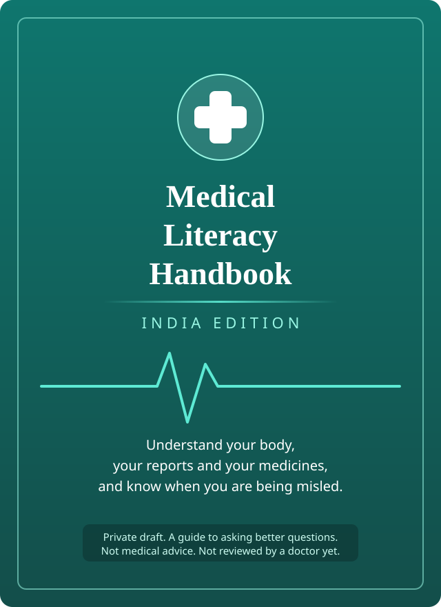
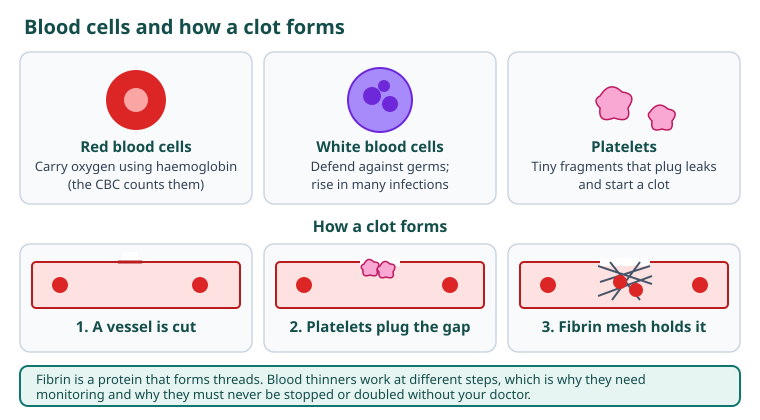
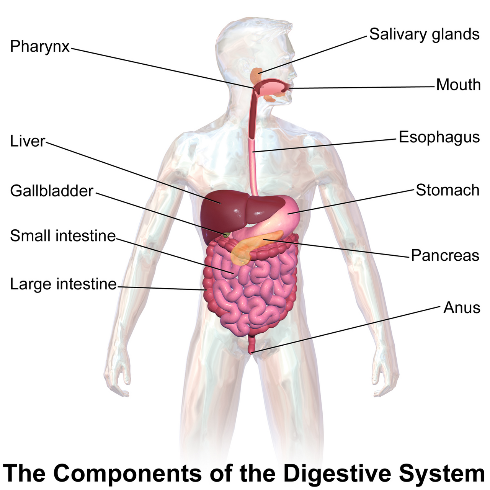
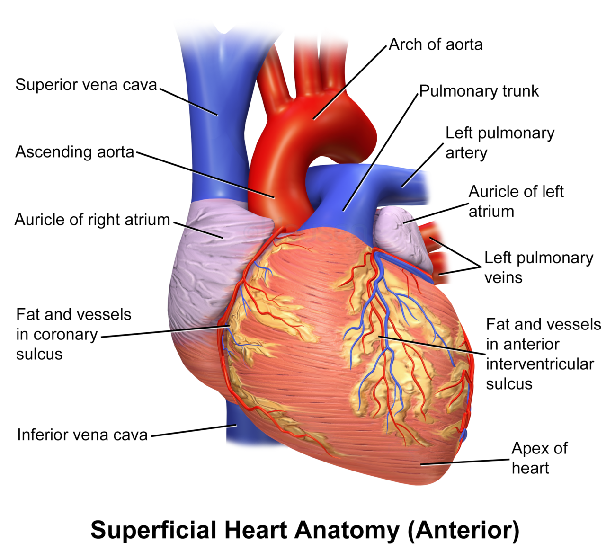
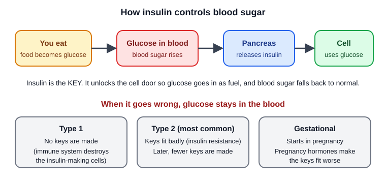
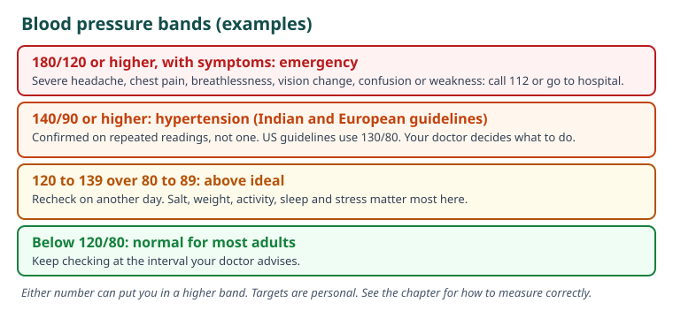
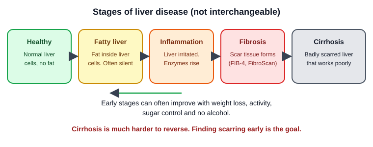
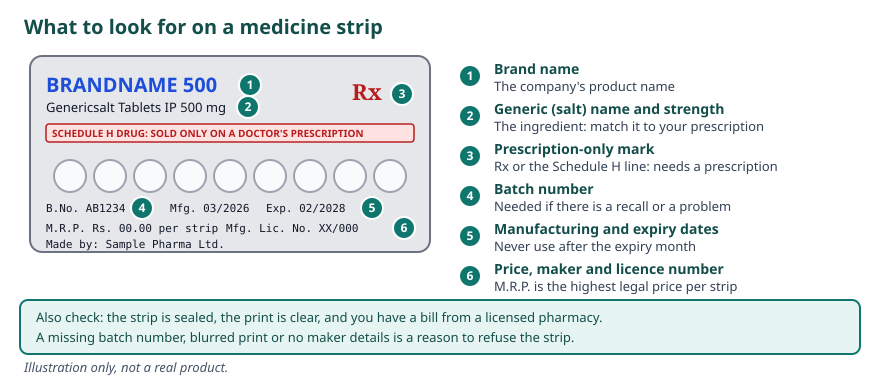
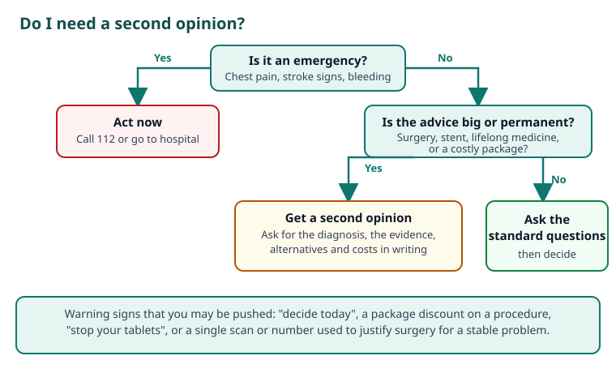

Medical Literacy Handbook (India)
A beginner-friendly handbook to help you understand your body, common diseases, lab reports and medicines, and to notice when you are being misled.
Warning
This book teaches you what to ask. It does not diagnose you and it does not tell you which medicine to take or stop. Never change or stop a prescribed medicine without asking the doctor who prescribed it. In an emergency, go to a hospital.
Note
Status: all chapters are drafts. A doctor has not reviewed them. Numbers marked
⚠ verifyare not yet checked against a primary source.
How to use this handbook
- New to biology? Read the chapters in "The body" first. Each explains one organ system in depth: structure, how it works step by step, how it is controlled, how it is tested.
- Read How to judge medical advice and How lab reports work first. Every other chapter builds on them.
- Look up the disease or test you care about. Every disease chapter has the same layout, so you can compare them.
- Before a doctor visit, copy the "Ask your doctor" list from the chapter.
- Keep your own reports in
my-reports/. That folder is never pushed to GitHub.
Available chapters
The full plan (body, diseases, tests, medicines, nutrition, infections, prevention, decisions, Indian healthcare, practical skills) is in ROADMAP.md.
Other files
- IMAGE-CREDITS.md: sources and licences of the pictures.
- Glossary: plain-language definitions linked to chapters.
- Pocket cards: one-page summaries to print or save.
- FACT-CHECK-LOG.md: what was checked, what changed, and what is still unverified.
- CLAUDE.md: the writing rules and chapter templates used to build this handbook.
For the reviewing doctor: REVIEW-GUIDE.md.
Chapter 1: How to Judge Medical Advice
Status: Draft. Not yet reviewed by a doctor. Last checked: November 2026.
Most people cannot check a doctor's medical knowledge. You can still check the reasoning. This chapter gives you a small set of questions that work for any doctor, any test and any medicine.
Note
Most doctors in India are honest and overworked. The goal is not to distrust them. The goal is to be a patient who asks good questions, so mistakes and upselling get caught early.
The Idea
When a doctor gives you advice, three things sit behind it:
- A diagnosis. A name for what is wrong ("hypothyroidism").
- A test. The evidence for that name (a blood report).
- A treatment. What to do about it (a medicine, a change in food, a procedure).
You can ask about each one. A weak link in any of the three is where you get misled.
| Link | Question that checks it |
|---|---|
| Diagnosis | "What exactly is the diagnosis, in simple words? How sure are you?" |
| Test | "Which result tells you this? What is my number and what is the normal range?" |
| Treatment | "What happens if I wait? What are the other options? What does each cost?" |
How It Works
1. "Normal range" is not "healthy vs sick"
A reference range (the "normal range" printed on a report) is built by testing many healthy people. It is set so that about 95 out of 100 healthy people fall inside it.
That means 5 in 100 healthy people fall outside it, with nothing wrong.
Now picture a health checkup with 20 separate tests. Each one has a 5% chance of flagging a healthy person. The chance that a perfectly healthy person gets at least one flagged result is about 64% (this is 1 − 0.95^20, a maths calculation, assuming the tests are independent, which is an approximation).
So an out-of-range number is a question, not a verdict. The usual next step is to repeat the test, or to look at it together with your symptoms.
2. A test is useful only when it can change a decision
Before any test, ask: "Whatever the result is, what will we do differently?"
If the answer is "nothing", the test mostly adds worry and cost.
3. Screening vs diagnosis
- A screening test looks for a disease in people with no symptoms (for example, a mammogram for breast cancer). It is meant to catch trouble early.
- A diagnostic test is used when you already have a symptom or a suspicious result, to find the cause.
Screening in the wrong people causes harm: false alarms, extra tests, and sometimes treatment you did not need. Ask: "Is this screening or diagnosis? Is it recommended for someone my age?"
4. Risk in numbers: relative vs absolute
Advertisements say "this reduces your risk by 50%". That is a relative risk.
Example (made-up numbers): a disease affects 2 in 1,000 people. A medicine cuts it to 1 in 1,000.
- Relative reduction: 50%. It sounds huge.
- Absolute reduction: 1 in 1,000. That is 0.1 percentage points.
Always ask: "How many people out of 100 (or 1,000) benefit? How many are harmed?"
5. Correlation is not cause
"People who take supplement X live longer" may only mean healthier people take supplement X. A claim of cause needs a proper trial, where people are randomly split into groups. Ask: "Is this from a trial, or just an observation?"
When It Goes Wrong
Common ways patients are misled. Most of these are not fraud. They are habits.
| What happens | Why it is a problem |
|---|---|
| A long list of tests "just to be safe" | Raises the chance of false flags (see point 1). |
| A "package" with 80 tests at a discount | The discount is not the point. Most of the tests may not apply to you. |
| Repeating tests at a new doctor | Sometimes needed, often not. Ask whether old reports are enough. |
| A medicine "for liver protection" or "for immunity" added to every prescription | Many have weak evidence. Ask what each one is for. |
| A procedure urged immediately | Real emergencies exist. Most conditions allow time for a second opinion. |
| A "natural cure" that replaces your medicine | Stopping a needed medicine can do serious harm. |
Ask Your Doctor
Copy this list before any visit.
- What is the diagnosis? Please write it down.
- Which test result supports it?
- Is this an emergency? What happens if I wait a week? A month?
- What are my options, including doing nothing for now?
- For each medicine: what is it for, how long will I take it, what side effects should make me call you?
- For each test or procedure: how will the result change what we do? What does it cost?
- When should I come back, and what should make me come sooner?
- Is a second opinion reasonable here?
Tip
Take notes, or ask to record the key points on your phone. In a short consultation you will forget half of it.
Getting a second opinion
A second opinion is normal and doctors expect it. Take all your reports and the prescription. Do not tell the second doctor what the first one said until they have given their own view. Then compare reasons, not only conclusions.
Red Flags: when not to wait for a second opinion
Go to a hospital emergency department for: chest pain or pressure, trouble breathing, sudden weakness or trouble speaking, sudden severe headache, heavy bleeding, fainting, a seizure, vomiting blood, a very high fever with confusion, or any symptom that feels like a real emergency to you. This book is for non-urgent decisions.
Sources and Not Verified
- Concept of reference intervals: see Chapter 2 sources.
- The 64% figure is simple arithmetic, not a medical study. Real tests are not fully independent, so treat it as an illustration.
- General patient-communication advice (questions to ask) follows common patient-safety guidance. A specific Indian source for this chapter is still to be added.
⚠ verify
How to Use This Book, and How to Look Up Anything Else
This book teaches you to understand and question. It does not diagnose you and it does not replace a doctor. It cannot cover every illness, so this page also gives you a routine for the ones it leaves out.
Warning
If you think it is an emergency, do not read; act. Call 112 or go to the nearest hospital. See First aid and emergencies.
1. What this book is for
Four jobs:
- Understand your body well enough to follow what a doctor says (Part 01).
- Read a report or a prescription and know what is normal, what is not, and what to ask (tests and medicines).
- Spot when you are being misled: a wrong report, an unnecessary medicine, an upsell, a forwarded cure (the India chapters).
- Take part in decisions about your own care: second opinions, costs, rights.
The disease chapters are worked examples of these four jobs. They are not complete medical textbooks.
2. What this book does not cover
- Rare and specialist conditions. If your condition is not here, use the routine in section 4.
- Treatment plans. The book never gives doses. Your doctor decides what you take.
- Emergencies in real time. Use 112.
- Anything about your own reports that you have not shown to a doctor. A made-up example in this book is not your result.
Every chapter was written by an AI from published sources and has not been reviewed by a doctor. Chapters carry ⚠ verify flags and a "Not verified" box. Treat those as a to-do list for your doctor, not as settled fact.
3. A suggested reading order
| If you want to... | Start with |
|---|---|
| Learn the habits first | How to judge medical advice, then Health misinformation |
| Understand a lab report | How lab reports work, then the test chapter for your report |
| Understand a prescription | Reading a prescription, then Generic, brand and prices |
| Understand one condition | Its chapter in 02-diseases, with the matching body chapter in 01-body |
| Face a big decision | Second opinions and treatment decisions |
| Keep it on your phone | Pocket cards and the Glossary |
If you only read five chapters
- How to judge medical advice: the habits behind everything else.
- How lab reports work: what a "normal range" really means.
- Reading a prescription: what is written, and what to ask.
- Health misinformation: the tricks used on patients in India.
- Worked examples and health records: practise on made-up reports, then keep your own records.
Add the chapter for any condition you or your family live with. For thyroid, sugar and liver, those are Thyroid, Diabetes and Liver, fatty liver and hepatitis.
4. How to look up any condition not in this book
A routine you can repeat for anything:
- Write the exact words your doctor used, or the exact name on the report. Names are often spelt differently.
- Read two reliable sources, not one. For India start with the Ministry of Health (MoHFW), ICMR and WHO. Hospital-run patient pages and NHS and MedlinePlus pages are also written for lay readers. Be careful with company sites, supplement sellers and social media.
- Look for four things: what it is, how it is diagnosed, how it is treated, and which signs are an emergency.
- Check the claim against the red flags in Pocket card 6 and in the misinformation chapter: a "cure", "doctors hide this", pressure to decide today.
- Write questions and take them to your doctor. Use the ten questions in Pocket card 2.
- Ask for a second opinion for anything major and non-urgent.
5. Reading a health headline or a forward
Chapter 1 explains relative versus absolute risk and correlation versus cause. Add these four quick checks:
- Who was studied? A study in mice, cells or a few people is a first hint, not advice for you.
- How big and how long? A small, short study can look impressive by chance.
- Who paid, and who is selling? A study paid for by the seller of the product is a reason for caution.
- Is it one study or the weight of many? Doctors rely on several good studies pointing the same way.
A WhatsApp forward with no named source, no date and no author should be treated as unproven until you find the original.
6. What this book will never ask you to do
It will never ask you to stop a medicine on your own, to buy a product, or to skip a doctor because a page said so.
Key terms
Diagnosis the name of the condition · Second opinion a review by another doctor · Evidence results from studies used to decide what works · Red flag a sign that needs urgent care
Sources and Not verified
Sources: MoHFW and WHO for the sources named above; the book's own chapters for everything else.
Not verified: this page names source types, not specific documents. Check each site for current content.
Blood: Cells, Clotting and Blood Groups
Status: Draft. A doctor has not reviewed it yet. Last checked: November 2026.
Note
Quick summary
- Blood is a liquid organ: about 55% plasma (fluid) and 45% cells. An adult has roughly 5 litres.
⚠ verify- All blood cells start as stem cells in the bone marrow. Red cells carry oxygen, white cells defend, platelets plug leaks.
- Making blood needs raw materials (iron, B12, folate) and a signal from the kidney (EPO). Lack of any one shows up on a blood count.
- Clotting is a two-stage process: a platelet plug, then a protein mesh. The liver makes most of the clotting proteins.
1. Where blood comes from: the bone marrow
Bone marrow is the soft tissue inside bones (in adults mostly in the pelvis, spine, ribs and breastbone). It holds haematopoietic stem cells, parent cells that can become any blood cell.
Stem cell
/ \
Myeloid line Lymphoid line
(red cells, platelets, (lymphocytes:
neutrophils, monocytes, T cells, B cells)
eosinophils, basophils)
Figure 1: All blood cells come from one parent in the marrow.
The marrow produces millions of cells every second, because cells wear out. Anything that damages the marrow or starves it of materials changes the blood count.

2. Red blood cells and haemoglobin
The cell
A red cell is a flexible, disc-shaped cell with a dent in the middle (biconcave), which gives a large surface for gas exchange. It has no nucleus, leaving more room for haemoglobin. It lives about 120 days, then the spleen removes it and recycles the iron. The haem part becomes bilirubin (see Liver and gallbladder).
Haemoglobin
Haemoglobin is a protein made of four chains, each wrapped around a haem group that contains one iron atom. Each iron atom holds one oxygen molecule, so one haemoglobin carries four.
- In the lungs, where oxygen is plentiful, haemoglobin loads oxygen.
- In tissues, where oxygen is low and carbon dioxide and acid are higher, it releases oxygen.
- Adult haemoglobin (HbA) has two alpha and two beta chains. Fetal haemoglobin (HbF) has gamma chains in place of beta.
Inherited problems with these chains explain common Indian blood conditions:
| Condition | What is wrong |
|---|---|
| Thalassaemia | The body makes too little of one chain (alpha or beta), so red cells are small, pale and fragile. Thalassaemia trait (a carrier) is common in India and usually causes mild anaemia that is mistaken for iron deficiency. |
| Sickle cell disease | A change in the beta chain makes the cell stiff and sickle-shaped |
| Haemoglobin variants (HbE, HbS and others) | Different chains; some interfere with HbA1c testing (see Diabetes) |
Making red cells: what the marrow needs
| Needed | Role | If missing |
|---|---|---|
| Iron | The core of haem | Small, pale red cells (microcytic anaemia) |
| Vitamin B12 and folate | Needed for cells to copy their DNA when dividing | Large, immature red cells (macrocytic anaemia) |
| EPO (erythropoietin) from the kidney | The "make more" signal | Low in kidney disease, causing anaemia |
| Healthy marrow | The factory | Damage causes low counts of several cell types |
Anaemia means too little haemoglobin. A commonly used definition (WHO) is below about 13 g/dL in men, 12 g/dL in non-pregnant women and 11 g/dL in pregnancy. ⚠ verify In India, anaemia is very common, especially in women and children. In NFHS-5 (2019-21), about 57% of women aged 15-49 and 67% of children aged 6-59 months were anaemic (figures from secondary reports). ⚠ verify NFHS-5
3. Reading the red cell numbers (CBC)
A complete blood count (CBC) reports these numbers:
| Marker | What it measures | Raised / lowered by |
|---|---|---|
| Haemoglobin (Hb) | Oxygen-carrying protein concentration | Low: anaemia. High: dehydration, smoking, living at altitude, some marrow diseases |
| RBC count | Number of red cells | Often low in anaemia; can be normal or high in thalassaemia trait |
| Haematocrit (PCV) | Share of blood volume taken by red cells | Moves with Hb |
| MCV | Average size of a red cell | Low (small): iron deficiency, thalassaemia trait. High (large): B12 or folate deficiency, alcohol, an underactive thyroid, some medicines |
| MCH, MCHC | Haemoglobin per cell, haemoglobin concentration | Low in iron deficiency |
| RDW | How varied the cell sizes are | High in mixed problems, such as early iron deficiency |
| Ferritin (separate test) | Iron stores | Low: iron deficiency. But ferritin also rises with inflammation, infection and liver disease, so a "normal" ferritin does not always exclude iron deficiency. |
Size sorts the causes:
- Small cells (low MCV): iron deficiency or thalassaemia trait.
- Normal-size cells: blood loss, long-term disease, kidney disease.
- Large cells (high MCV): B12 or folate deficiency, alcohol, thyroid problems.
This is why a low haemoglobin alone never tells you the cause. You need the cell size, ferritin and sometimes B12, folate or a haemoglobin analysis.
4. White blood cells: the defenders
White cells are fewer than red cells but vital. A CBC reports a total count and a differential (the share of each type).
| Cell | Main job | Raised in | Lowered in |
|---|---|---|---|
| Neutrophils | First responders; eat bacteria and fungi | Bacterial infection, stress, steroids | Some viral infections, some drugs, marrow problems |
| Lymphocytes | T cells coordinate and kill infected cells; B cells make antibodies | Viral infection | Severe illness, some drugs, HIV |
| Monocytes | Become macrophages that eat debris and germs | Long-term infection | Rare |
| Eosinophils | Parasites and allergy | Allergy, asthma, worm infection | Steroids |
| Basophils | Allergic reactions | Rare | Rare |
A raised total white count is non-specific. It points to infection, inflammation or stress but not which. The immune response is covered in more detail in the immune system chapter when written.
5. Platelets and clotting
Platelets
Platelets are tiny cell fragments made by large marrow cells called megakaryocytes. They last roughly 7 to 10 days. ⚠ verify A typical count is roughly 150,000 to 400,000 or 450,000 per microlitre of blood (lab ranges vary). ⚠ verify Counts fall in dengue, some drugs and marrow diseases, and bleeding risk depends on how low they go.
The two stages of clotting (haemostasis)
When a vessel is cut:
- Primary stage (seconds): the platelet plug. The vessel narrows. Platelets stick to the damaged wall (helped by a protein called von Willebrand factor) and to each other, plugging the hole.
- Secondary stage (minutes): the coagulation cascade. A chain of clotting factors, proteins that activate one another in order, converts a blood protein (fibrinogen) into fibrin threads. These form a mesh that reinforces the plug into a firm clot.
- Cleanup (days): fibrinolysis. An enzyme system dissolves the clot as the wound heals.
The liver makes most clotting factors, and several of them (factors II, VII, IX and X) need vitamin K to work. That is why liver disease, vitamin K deficiency and the blood thinner warfarin all prolong clotting.
| Test | What it measures | Used for |
|---|---|---|
| PT / INR (prothrombin time) | Time for blood to clot via the "extrinsic" route | Liver function; monitoring warfarin |
| aPTT | Time via the "intrinsic" route | Monitoring heparin; some inherited bleeding disorders |
| Platelet count | Number of platelets | Bleeding risk |
| D-dimer | A fragment released when clots dissolve | Screening for abnormal clots (it is raised in many conditions, so a normal value rules out clots more reliably than a high value rules them in) |
Clots that form when they should not (in leg veins, lungs, heart or brain) are dangerous. That is why some people take anticoagulants (blood thinners) or antiplatelet drugs (such as aspirin), always under medical supervision.
6. Plasma: the liquid part
Plasma is mostly water with dissolved proteins, salts, sugar, fats, hormones and waste.
| Plasma protein | Made by | Job |
|---|---|---|
| Albumin | Liver | Keeps fluid inside vessels (oncotic pressure); carries hormones, drugs and bilirubin |
| Globulins | Liver and immune cells | Include antibodies (immunoglobulins) and transport proteins |
| Fibrinogen and clotting factors | Liver | Clotting |
When albumin is low, fluid leaks out of vessels into tissues (swollen ankles, fluid in the belly).
7. Blood groups
Red cells carry surface markers (antigens).
- ABO system: group A has A markers, B has B markers, AB has both, O has neither. Your plasma carries antibodies against the markers you lack. So group O can give red cells to anyone (no markers to attack), and group AB can receive from anyone.
- Rh system: you are Rh positive if your cells carry the Rh (D) marker, Rh negative if not.
A mismatched transfusion makes the receiver's antibodies attack the donated cells, which is dangerous, so blood is always cross-matched.
Rh and pregnancy: if an Rh-negative mother carries an Rh-positive baby, her immune system can form antibodies that may harm later Rh-positive pregnancies. This can be prevented with a medicine (anti-D) given at the right times, so Rh-negative women should tell their doctor early in pregnancy. ⚠ verify
8. Why this matters for your reports
- Haemoglobin is only the headline. MCV, ferritin, B12 and folate tell the cause.
- Thalassaemia trait can look like iron deficiency. Giving iron to someone who is not iron-deficient is not helpful, so ask whether iron studies and a haemoglobin analysis are needed before long iron courses.
- A platelet count matters in dengue and before surgery.
- A prolonged INR can come from liver disease, vitamin K lack or blood-thinner use.
- The same blood sample is used for many tests because blood visits every organ.
Key terms
Bone marrow the blood factory · Stem cell a parent cell · Haemoglobin the iron-containing oxygen protein · Haem the iron-holding part · Erythropoietin (EPO) the red-cell signal from the kidney · Anaemia too little haemoglobin · Microcytic / macrocytic small / large red cells · MCV average red-cell size · Ferritin iron-store marker · Neutrophil / lymphocyte types of white cell · Platelet a clotting cell fragment · Fibrin the protein mesh in a clot · Clotting factor one protein in the clotting chain · INR a standardised clotting time · Plasma the liquid part · Albumin the main plasma protein · Antigen a surface marker · Rh a blood group marker.
Sources and not verified
- OpenStax. Anatomy and Physiology 2e (openstax.org): the cardiovascular system and blood.
- WHO. Haemoglobin concentrations for the diagnosis of anaemia (2011, reaffirmed), for the cut-offs.
⚠ verify - National Family Health Survey 5 (NFHS-5) for anaemia in India.
⚠ verify - Guyton and Hall, Textbook of Medical Physiology (edition to be named).
⚠ verify
Not verified: total blood volume, platelet life span and range, the WHO cut-offs as quoted, the NFHS-5 claim, and the anti-D statement are standard figures to confirm against the cited sources.
Bones, Joints, Muscles and Skin
Status: Draft. A doctor has not reviewed it yet. Last checked: November 2026.
Note
Quick summary
- Bone is living tissue that is constantly broken down and rebuilt. Vitamin D, calcium, hormones and weight-bearing exercise keep the balance.
- Muscle moves bones by sliding protein filaments past each other, using ATP. It is also the body's largest user of blood sugar and the source of creatinine.
- Skin is a barrier, a thermostat, a sensor and a vitamin D factory. It also shows signs of internal disease.
1. Bones
Structure
An adult has 206 bones. Each has:
- Compact bone, the dense outer shell.
- Spongy (trabecular) bone, a honeycomb inside, which is lighter and absorbs shock.
- Bone marrow in the cavities, which makes blood cells (see Blood).
What bones do
Support and shape, protect organs (skull, ribs), act as levers for muscles, make blood cells, and store minerals: about 99% of the body's calcium is in the bones. ⚠ verify
Bone is alive: remodelling
Three cell types work all the time:
| Cell | Job |
|---|---|
| Osteoblast | Builds new bone |
| Osteoclast | Dissolves old bone, releasing calcium |
| Osteocyte | A mature bone cell that senses stress and directs the others |
The skeleton is replaced steadily over years. Building outweighs breaking down until the late 20s or so (peak bone mass), then loss slowly begins. After menopause, falling oestrogen speeds loss. Osteoporosis is bone loss to the point where bones fracture easily.
What controls bone and calcium
| Factor | Effect |
|---|---|
| Parathyroid hormone (PTH) | Raises blood calcium by releasing it from bone, absorbing more from the gut and kidney |
| Vitamin D | Lets the gut absorb calcium. The skin makes it with sunlight, the liver then the kidney activate it. |
| Oestrogen and testosterone | Protect bone |
| Weight-bearing exercise | Stimulates bone building |
| Calcium and protein in the diet | Raw materials |
Vitamin D deficiency is common in India despite sunshine. Reasons include darker skin (less vitamin D per hour of sun), covering clothes, indoor work and air pollution. Diet matters too: few foods are rich in vitamin D, and milk is rarely fortified in India. Reported prevalence varies widely between studies. ⚠ verify In children, severe deficiency causes rickets (soft, bent bones). In adults it causes osteomalacia (soft bones with aches).
Tests
| Test | What it tells you |
|---|---|
| 25-hydroxy vitamin D (blood) | The usual measure of vitamin D status. Cut-offs differ between labs and guidelines. ⚠ verify |
| Calcium, phosphate, ALP, PTH | Bone and mineral balance |
| DEXA scan | Bone density. A T-score of −2.5 or lower is osteoporosis by the WHO definition. ⚠ verify |
| X-ray | Fractures, arthritis, deformities |
2. Joints
A joint is where two bones meet. The movable kind (synovial joint, such as knee or shoulder) has:
- Cartilage: a smooth, slippery cap on each bone end.
- Synovial membrane and fluid: a lining that makes lubricating fluid.
- Ligaments: tough bands joining bone to bone.
- Tendons: tough cords joining muscle to bone.
| Joint problem | What goes wrong |
|---|---|
| Osteoarthritis | Cartilage wears thin; pain worse with use, stiffness short-lived |
| Rheumatoid arthritis | An autoimmune attack on the synovial lining; symmetric swollen small joints, morning stiffness lasting an hour or more |
| Gout | Uric acid forms crystals in a joint, causing sudden severe pain and swelling, often the big toe |
3. Muscles
Three kinds
| Type | Where | Control |
|---|---|---|
| Skeletal | Attached to bones | Voluntary |
| Cardiac | Heart | Automatic (see The heart) |
| Smooth | Walls of gut, vessels, airways, bladder | Automatic |
How a skeletal muscle contracts, step by step
Muscle fibres are packed with units called sarcomeres, containing two sliding protein filaments: actin and myosin.
- A motor nerve fires and releases acetylcholine at the neuromuscular junction (the nerve-muscle gap).
- The muscle fibre is activated and releases calcium inside.
- Calcium uncovers binding sites on actin; myosin heads grab on and pull (the "sliding filament" mechanism).
- The pulling needs ATP. The fibre shortens and the muscle contracts.
- When the nerve stops firing, calcium is pumped away and the muscle relaxes.
Fuel
Muscle makes ATP from stored creatine phosphate (a quick reserve), glucose and glycogen, and fat (the main fuel at rest and in long gentle exercise).
Why muscle matters beyond movement
- Sugar: muscle is the largest user of blood glucose. More muscle and regular exercise improve insulin sensitivity (see Diabetes).
- Creatinine: it comes from muscle, so people with more muscle have higher "normal" creatinine (see Kidneys).
- Ageing: muscle slowly shrinks with age (sarcopenia). Protein and strength training slow this.
- Injury markers: creatine kinase (CK) in blood rises when muscle is damaged (heavy exercise, some medicines such as statins in rare cases, severe injury). AST (a liver enzyme) is also in muscle.
4. Skin
Layers
| Layer | Contents |
|---|---|
| Epidermis (top) | Skin cells (keratinocytes) that make tough keratin and constantly renew (about a month to replace). Melanocytes make melanin, the pigment that gives colour and shields from UV light. |
| Dermis (middle) | Collagen and elastic fibres, blood vessels, nerves, sweat glands, oil (sebaceous) glands, hair follicles |
| Hypodermis (bottom) | Fat for insulation and energy |
What skin does
- Barrier: keeps water in and germs and chemicals out.
- Temperature control: widens vessels and sweats to cool; narrows vessels to keep heat.
- Sensation: touch, pain, temperature.
- Vitamin D: makes it when exposed to UVB sunlight.
- Immune defence: immune cells live in the skin.
Skin as a window onto the body
| Sign | May point to |
|---|---|
| Yellow skin and eyes (jaundice) | Liver or bile problems |
| Pale skin | Anaemia |
| Dark, velvety patches at the neck or armpits (acanthosis nigricans) | Insulin resistance |
| Dry skin, hair thinning | Underactive thyroid (among many causes) |
| Easy bruising | Low platelets, clotting problems or some medicines |
Moles and skin cancer
Watch moles using ABCDE: Asymmetry, irregular Border, uneven Colour, Diameter growing beyond a few millimetres, Evolving (changing). A changing mole or a sore that does not heal needs a doctor.
5. Red flags
See a doctor promptly for: a fracture after a minor fall (may mean osteoporosis), a hot, swollen, very painful joint with fever, severe back pain with leg weakness or loss of bladder control (emergency), dark urine and severe muscle pain after exertion, a changing mole, or a sore that does not heal.
6. Why this matters for your reports
- Vitamin D is widely tested but widely over-treated; the right dose and duration are decisions for your doctor.
- A normal calcium with a high PTH can still signal a problem, which is why they are read together.
- A high creatinine may reflect muscle, and a high AST may come from muscle rather than liver.
Key terms
Compact / spongy bone dense shell / honeycomb inside · Osteoblast / osteoclast / osteocyte bone builder / dissolver / mature cell · Remodelling the constant renewal of bone · Peak bone mass the maximum bone strength, reached in early adulthood · Osteoporosis weak, fracture-prone bone · DEXA a bone-density scan · Cartilage the joint's slippery cap · Ligament / tendon bone-to-bone / muscle-to-bone cord · Sarcomere the contracting unit of muscle · Actin / myosin the sliding proteins · ATP the cell's energy currency · Sarcopenia age-related muscle loss · CK creatine kinase, a muscle-injury marker · Epidermis / dermis the outer / middle skin layer · Melanin skin pigment.
Sources and not verified
- OpenStax. Anatomy and Physiology 2e (openstax.org): skeletal, muscular and integumentary systems.
- WHO definition of osteoporosis by T-score; Indian vitamin D guidance.
⚠ verify - Guyton and Hall, Textbook of Medical Physiology (edition to be named).
⚠ verify
Not verified: the 99% calcium figure, causes of vitamin D deficiency in India and its cut-offs, and the T-score definition should be checked against the cited sources.
The Brain and Nervous System
Status: Draft. A doctor has not reviewed it yet.
Note
Quick summary
- The nervous system is the body's fast communication network: billions of nerve cells (neurons) pass electrical signals and chemical messages.
- The brain stores almost no energy. It needs a constant flow of oxygen and glucose, which is why low sugar causes confusion and a blocked artery causes a stroke within minutes.
- Each side of the brain mostly controls the opposite side of the body.
- Many medicines for mood, sleep, seizures and pain work at the junctions between neurons (synapses).
1. Structure

Figure 1: The brain, seen from the side. Image: Blausen.com staff, CC BY 3.0 (see IMAGE-CREDITS).
The adult brain weighs about 1.3 to 1.4 kg and holds on the order of 86 billion neurons. ⚠ verify It is about 2% of body weight but uses roughly a fifth of the body's oxygen and energy at rest. ⚠ verify
The two divisions
| Division | Parts | Job |
|---|---|---|
| Central nervous system (CNS) | Brain and spinal cord | Processing and decisions |
| Peripheral nervous system (PNS) | All nerves outside the brain and spinal cord | Carry signals to and from the body |
The neuron: the basic cell
dendrites --> CELL BODY --> AXON (wrapped in myelin) --> synapse
(receive) (decides) (carries signal away) (passes it on)
Figure 2: A neuron.
- Dendrites receive signals.
- The cell body adds them up and decides whether to fire.
- The axon is a long cable carrying the signal. It is wrapped in myelin, a fatty insulating sheath that makes signals travel much faster. In diseases that damage myelin (such as multiple sclerosis) signals slow or fail.
- The synapse is the tiny gap between one neuron and the next.
The main regions
| Region | Where | Main jobs |
|---|---|---|
| Cerebrum (two hemispheres) | The large upper part | Thinking, memory, language, voluntary movement, senses |
| Frontal lobe | Front | Planning, judgement, personality, voluntary movement |
| Parietal lobe | Top and middle | Touch and body position |
| Temporal lobe | Side | Hearing, memory, language understanding |
| Occipital lobe | Back | Vision |
| Cerebellum | Back and below | Coordination, balance, smooth movement |
| Brainstem (midbrain, pons, medulla) | Joins brain to spinal cord | Breathing, heart rate, blood pressure, consciousness, swallowing; damage here is life-threatening |
| Thalamus | Deep | Relay station for senses |
| Hypothalamus | Deep, just above the pituitary | Controls temperature, hunger, thirst, sleep and the pituitary hormones (see The endocrine system) |
| Hippocampus | Deep in the temporal lobe | Forming new memories |
| Basal ganglia | Deep | Smooth control of movement (affected in Parkinson's disease) |
Crossed control: the left hemisphere mainly controls the right side of the body and vice versa. So a stroke on the left side of the brain typically weakens the right arm and leg. Language is usually handled by the left hemisphere.
Protection
| Layer | What it does |
|---|---|
| Skull and vertebrae | Bony armour |
| Meninges | Three membranes (dura, arachnoid, pia) around the brain and cord. Meningitis is infection of them. |
| Cerebrospinal fluid (CSF) | A clear fluid made in cavities inside the brain (ventricles); cushions the brain and clears waste. Roughly 150 mL in total. ⚠ verify |
| Blood-brain barrier | Tightly joined cells lining brain capillaries that block most germs, toxins and many medicines from entering. |
2. How it works, step by step
How one neuron passes a message
- A neuron receives enough input and fires an action potential, a wave of electrical charge that races down the axon.
- At the end of the axon, the signal makes calcium enter, which releases chemical messengers (neurotransmitters) into the synapse.
- The neurotransmitter crosses the gap and binds receptors on the next neuron, which then becomes more (or less) likely to fire.
- The neurotransmitter is cleared away or recycled.
| Neurotransmitter | Main role |
|---|---|
| Glutamate | Main excitatory (speed-up) messenger |
| GABA | Main inhibitory (slow-down) messenger |
| Dopamine | Movement, motivation, reward; low in Parkinson's disease |
| Serotonin | Mood, sleep, appetite |
| Noradrenaline | Alertness, stress response |
| Acetylcholine | Muscle contraction, memory |
Many medicines work at this step: antidepressants raise serotonin or noradrenaline; anti-epileptic medicines damp excess firing; sedatives boost GABA. That is why stopping some of them suddenly can be dangerous, and why a doctor adjusts them gradually.
The brain's blood supply
Four arteries (two carotid at the front of the neck and two vertebral at the back) feed a ring of vessels at the base of the brain, the circle of Willis, which spreads blood to all regions and gives some back-up if one artery narrows.
The brain stores almost no oxygen or glucose. If blood flow stops, unconsciousness comes within seconds and permanent damage within minutes. Likewise, low blood sugar starves the brain, causing confusion, sweating, fits or fainting. (See the diabetes chapter for the 15-gram rule.)
Sensing and moving: the reflex arc
A reflex is an automatic response that does not wait for the brain. Touch a hot pan: a sensory nerve sends the signal to the spinal cord, which sends a signal straight back through a motor nerve to the muscle, and you pull away. The brain learns about it afterwards. Doctors test reflexes (tapping the knee) to check nerves and spinal cord.
The autonomic nervous system
This runs organs without conscious control.
| Side | Effect |
|---|---|
| Sympathetic ("fight or flight") | Faster heart, widened airways, more sugar released, digestion slowed |
| Parasympathetic ("rest and digest") | Slower heart, digestion active (the vagus nerve is its main route) |
3. The senses
The eye
Light passes through the cornea (clear front window) and the lens (which focuses), and lands on the retina, a layer of light-sensing cells at the back. Rods work in dim light; cones give colour and sharp detail. The retina turns light into signals sent along the optic nerve to the occipital lobe.
Diabetes damages the tiny retinal blood vessels (diabetic retinopathy), found early only by an eye exam. Other common eye problems: cataract (the lens turns cloudy), glaucoma (high eye pressure damages the optic nerve).
The ear
Sound waves vibrate the eardrum, three tiny bones carry the vibration, and the cochlea (a snail-shaped organ in the inner ear) turns it into nerve signals. Next to the cochlea, the semicircular canals sense head movement and give balance. Trouble here causes vertigo (a spinning sensation).
4. How the nervous system is tested
| Test | What it shows |
|---|---|
| Neurological examination | Strength, reflexes, sensation, coordination, speech, vision, memory |
| CT scan | Quick scan; excellent for bleeding and stroke in emergencies |
| MRI | More detailed picture of brain tissue, with no radiation |
| EEG (electroencephalogram) | Records brain electrical activity; used in epilepsy |
| Nerve conduction studies and EMG | Speed of nerve signals; muscle electrical activity |
| Lumbar puncture | A sample of CSF, to check for infection or inflammation |
| Blood tests | Sugar, sodium, B12, thyroid, which often cause neurological symptoms |
5. When the system fails (summary)
| Problem | What goes wrong |
|---|---|
| Stroke | Blood supply to part of the brain is cut off by a clot (the commoner kind, ischaemic) or a burst vessel (haemorrhagic) |
| Epilepsy | Recurrent bursts of abnormal electrical activity (seizures) |
| Migraine | Recurrent severe headaches, often with nausea and light sensitivity |
| Parkinson's disease | Loss of dopamine-making cells: tremor, stiffness, slow movement |
| Dementia (for example Alzheimer's) | Progressive loss of memory and thinking |
| Neuropathy | Damage to peripheral nerves (diabetes, B12 deficiency, alcohol): numbness, burning, weakness |
| Meningitis | Infection or inflammation of the membranes around the brain |
Stroke: recognise it fast
Use FAST: Face drooping, Arm weakness, Speech difficulty, Time to call emergency help. Treatments that dissolve or remove a clot work only in the first hours, so every minute counts. ⚠ verify the time window per current guidance
Headache and epilepsy: what to know
Headache
The brain itself has no pain nerves. Headache pain comes from the covering of the brain, blood vessels, muscles and nerves around it. Most headaches are primary, meaning the headache is the disease itself. The commonest is tension-type headache: a dull, pressing band on both sides, mild to moderate. A few headaches are secondary, meaning another problem causes them (infection, high blood pressure, head injury, bleeding, or a tumour, an abnormal lump of cells).
Red flags: get urgent care (112 or 108) for:
- a sudden, severe "thunderclap" headache (pain that peaks within a minute), "the worst of my life"
- headache with fever and stiff neck, rash or confusion
- headache after a head injury
- headache with weakness, numbness, or speech or vision trouble (see Stroke)
- a new headache after age 50, or one that keeps worsening over weeks
- headache in pregnancy or just after delivery
Migraine in plain words: repeated attacks of throbbing pain, often on one side, with nausea (feeling sick) and dislike of light and noise, lasting hours to about 3 days. Some people get an aura first (flashing lights or zig-zag lines for a few minutes). Migraine runs in families and is more common in women. Triggers differ by person: missed meals, poor sleep, stress, periods, bright light. A diary of triggers helps. Most typical migraine does not need a brain scan (a CT or MRI picture of the brain). Many "sinus headaches" are really migraine.
Medication-overuse headache: taking painkillers on most days can itself keep headaches going. Guidelines usually mean pain medicine on 10 or more days a month (simple painkillers: 15 or more). ⚠ verify Treatment is to cut down the overused painkiller under a doctor's guidance. Headache often gets worse for days before it improves. See Painkillers, steroids and acidity medicines.
Epilepsy and seizures
A seizure is a short burst of abnormal electrical activity in the brain. It can change movement, feeling, awareness or behaviour. Epilepsy is a tendency to repeated seizures with no immediate cause. One seizure does not mean epilepsy. About 5 to 6 in 1,000 people in India are estimated to live with it, and many are never treated. ⚠ verify
- A tonic-clonic seizure stiffens and jerks the whole body, then leaves deep sleep or confusion. A focal seizure starts in one area (a twitching hand, a strange feeling). Absence seizures are a blank stare for seconds, common in children.
- In India, neurocysticercosis (brain infection by the young stage of the pork tapeworm) is a recognised cause of epilepsy, as the WHO epilepsy fact sheet lists.
- Anti-seizure medicines could let up to 7 in 10 people become seizure-free, says WHO. Missing doses is the commonest cause of breakthrough seizures (seizures that return despite treatment).
- Never stop epilepsy medicine suddenly. It can cause severe, repeated seizures. Any slow withdrawal must be planned by the doctor.
- Do not switch brands casually and ask a doctor before pregnancy: some medicines (notably valproate) carry a higher risk of birth defects.
Myths that cause harm:
- An iron key, shoe or onion in the hand does not stop a seizure. Never put a spoon, cloth or finger in the mouth: it can break teeth or block the airway.
- Epilepsy is not a curse, possession or an infection you can catch.
- A healer cannot replace medicine. Delay means more injuries.
- Epilepsy medicines are not addictive and do not "ruin the brain".
Driving: rules differ by country and state. In India the licence application asks you to declare conditions such as epilepsy. Driving with uncontrolled seizures is unsafe. Ask your neurologist (a brain and nerve doctor) for written advice on when driving is safe. Many doctors advise a seizure-free period first, often a year or more. ⚠ verify
Seizure first aid is in First aid and emergencies. Call 112 or 108 if a seizure lasts over 5 minutes.
6. Red flags
Go to emergency care for: sudden weakness, numbness, face droop, speech or vision loss, a sudden severe "worst ever" headache, seizure for the first time, confusion with fever and neck stiffness, or loss of consciousness.
7. Why this matters for your reports
- A normal CT or MRI does not rule out every cause of symptoms; many problems (migraine, epilepsy between seizures) look normal on scans.
- B12, sugar, thyroid and sodium are cheap blood tests that explain a surprising number of nerve and brain symptoms. They are worth checking before concluding something worse.
- Scans often show incidental findings (small harmless changes common with age). Ask whether a finding explains your symptoms before accepting treatment for it.
Key terms
Neuron a nerve cell · Axon / dendrite the output cable / input branches · Myelin the insulating sheath · Synapse the gap between neurons · Neurotransmitter a chemical message across a synapse · Action potential the electrical wave in a neuron · CNS / PNS brain and spinal cord / nerves outside · Cerebrum / cerebellum / brainstem the thinking brain / the coordination brain / the life-support stem · Meninges the protective membranes · CSF cerebrospinal fluid · Blood-brain barrier the filter that protects the brain · Reflex arc an automatic nerve loop · Autonomic nervous system the automatic organ-control system · Retina the light-sensing layer of the eye · Cochlea the hearing organ.
Sources and not verified
- OpenStax. Anatomy and Physiology 2e (openstax.org): the nervous system and special senses.
- Guyton and Hall, Textbook of Medical Physiology (edition to be named).
⚠ verify - Stroke guidance (for time windows): to be cited from Indian and international stroke guidelines in the disease chapter.
⚠ verify - International Headache Society, ICHD-3; NICE guidelines on headaches (CG150) and epilepsies (NG217).
⚠ verify - International League Against Epilepsy (ILAE) and WHO fact sheet on epilepsy; ICMR and Indian Academy of Neurology publications on epilepsy burden and neurocysticercosis.
⚠ verify
Not verified: brain weight, neuron count, the one-fifth oxygen figure, CSF volume and stroke treatment time windows are standard figures or claims to confirm against the cited sources. In the headache and epilepsy section, also confirm the Indian epilepsy prevalence, the medication-overuse day counts, valproate risk wording and current Indian driving rules. Confirmed against the WHO epilepsy fact sheet: seizure-free share (worded as up to 7 in 10; earlier text said two-thirds) and neurocysticercosis as a cause. WHO gives 4 to 10 per 1,000 worldwide; the India figure of 5 to 6 per 1,000 is still unconfirmed. The ICHD-3 text could not be opened, so the medication-overuse day counts (seen only in reviews) stay unconfirmed.
Cells, Genes and How Cancer Starts
Status: Draft. A doctor has not reviewed it yet. Last checked: November 2026.
Note
Quick summary
- Every cell is a tiny factory run by instructions in DNA. Cells grow, divide and die in a controlled way.
- Cancer starts when changes (mutations) in genes remove the brakes or jam the accelerator on cell growth.
- A biopsy (looking at the cells) is the only way to confirm cancer. Blood markers and scans suggest but do not prove.
- Many cancers are preventable (tobacco, hepatitis B, HPV) or curable when found early (screening).
1. The cell
| Part | Job |
|---|---|
| Membrane | The cell's skin: controls what enters and leaves; holds receptors (see The endocrine system) |
| Nucleus | The control room, holding DNA |
| Mitochondria | Power stations: turn glucose, fat and oxygen into ATP, the cell's energy currency |
| Ribosomes | Build proteins from instructions |
| Endoplasmic reticulum and Golgi | Fold, package and ship proteins and fats |
| Lysosomes | Recycling bins that digest waste |
2. From DNA to protein
- DNA is a very long molecule that stores instructions in a four-letter code.
- A gene is a stretch of DNA that holds the instructions for one protein.
- Humans have 23 pairs of chromosomes (long coiled packages of DNA), one set from each parent, with roughly 20,000 genes.
⚠ verify - Reading a gene: DNA is copied into RNA, which is read by ribosomes to build a protein. Proteins do almost everything: enzymes, hormones, antibodies, structural parts.
A mutation is a change in the DNA code. Many are harmless. Some break a protein. Mutations can be inherited or can arise during life from copying errors or damage (tobacco smoke, UV light, some viruses).
3. Tissues and cell turnover
| Tissue | Examples |
|---|---|
| Epithelial (linings and glands) | Skin, gut lining, liver, glands |
| Connective | Bone, fat, blood, tendons |
| Muscle | Skeletal, cardiac, smooth |
| Nerve | Brain, nerves |
Different tissues renew at different speeds: gut lining and blood cells in days to weeks, skin about monthly, nerve cells almost never. Cells that divide often have more chances for errors to arise.
4. Controlled growth: the cell cycle
A cell divides in a cycle (mitosis) with checkpoints: it checks that its DNA is undamaged before copying and splitting.
- Growth signals push the cycle forward.
- Checkpoints and brake genes stop it if something is wrong.
- Apoptosis, programmed cell death, removes cells that are damaged or no longer needed. The cell dismantles itself neatly.
- The immune system also removes abnormal cells (see The immune system).
5. How cancer starts
Cancer is a disease of uncontrolled, invasive growth caused by accumulated mutations.
| Gene type | Normal role | In cancer |
|---|---|---|
| Proto-oncogene | Accelerator for growth | A mutation jams it on (now called an oncogene) |
| Tumour suppressor gene (for example TP53, BRCA1/2) | Brake and DNA repair | A mutation breaks the brake |
Usually several mutations must accumulate, which is why cancer becomes commoner with age. Cells that become cancerous gain abilities:
- ignore stop signals and escape apoptosis
- divide without limit
- build their own blood vessels (angiogenesis) to feed the tumour
- invade nearby tissue and spread (metastasis) through blood or lymph to distant organs
Benign or malignant
| Benign tumour | Malignant tumour (cancer) | |
|---|---|---|
| Growth | Slow, stays in place | Faster, invades nearby tissue |
| Spread | No | Can metastasise |
| Danger | Usually low; can press on organs | Can be life-threatening |
Main types by tissue of origin
Carcinoma (from linings and glands; the commonest group), sarcoma (from bone, muscle, connective tissue), leukaemia (blood cells in the marrow and blood), lymphoma (lymph tissue), brain and nerve tumours.
6. Causes and prevention
| Cause | Examples | What helps |
|---|---|---|
| Tobacco (smoked and chewed) | Lung, mouth, throat, oesophagus, bladder cancers. Chewed tobacco and betel quid are a major cause of mouth cancer in India. ⚠ verify | Not using tobacco |
| Infections | HPV (cervical and throat), hepatitis B and C (liver), H. pylori (stomach) | HPV and hepatitis B vaccines; treating hepatitis C and H. pylori |
| Alcohol and obesity | Liver, breast, colon and other cancers | Limit alcohol; keep a healthy weight |
| UV light | Skin cancer | Shade, covering up, sunscreen |
| Radiation, some chemicals | Occupational and environmental exposure | Safety measures |
| Inherited genes | A small share of cancers (about 5 to 10%) (for example BRCA in breast and ovarian) | Family-history counselling and genetic testing where advised |
| Ageing | More time to collect mutations | Screening as advised |
7. How cancer is found and confirmed
| Step | What it shows |
|---|---|
| Symptoms or screening | A lump, bleeding, or an abnormal screening result |
| Imaging (ultrasound, X-ray, CT, MRI, PET) | Where a growth is and how far it extends. It suggests but cannot prove cancer. |
| Biopsy | A sample of the tissue examined under a microscope by a pathologist. This is the only way to confirm cancer. |
| Staging | How far it has spread. Commonly the TNM system: Tumour size, Nodes involved, Metastasis. |
| Tumour markers (blood: PSA, CA-125, CEA, AFP and others) | Proteins that may rise in some cancers, but also in harmless conditions. Most are not reliable for screening. They are mostly used to follow known disease. |
Important
No cancer treatment should start without a tissue diagnosis (except in rare emergencies). If someone advises treatment based on a scan or marker alone, ask for a biopsy and a second opinion.
8. Treatment (overview, no doses)
| Treatment | How it works |
|---|---|
| Surgery | Removes the tumour |
| Radiotherapy | Focused radiation damages cancer cells' DNA |
| Chemotherapy | Drugs that kill fast-dividing cells (so also hair, gut and blood cells, causing side effects) |
| Targeted therapy | Drugs aimed at a specific mutation or protein in the cancer |
| Hormone therapy | Blocks hormones that feed some breast and prostate cancers |
| Immunotherapy | Helps the immune system attack the cancer |
Choice depends on cancer type, stage, genetics and your health, and is usually decided by a team (tumour board).
9. Screening and warning signs
Screening tests look for cancer or pre-cancer in people with no symptoms. Commonly discussed ones (the exact advice depends on age, risk and country, so confirm with your doctor and Indian guidance): ⚠ verify
| Cancer | Screening test |
|---|---|
| Cervical | VIA every 5 years at ages 30 to 65 in India's national programme; Pap smear and HPV tests are also used |
| Breast | Clinical breast examination (national programme, ages 30 to 65, every 5 years); mammography as advised by your doctor |
| Colon | Stool blood test or colonoscopy at the age advised (not part of India's national screening programme; ask your doctor) |
| Mouth | Oral visual examination (national programme, ages 30 to 65), especially for tobacco users |
| Lung | Low-dose CT in selected heavy smokers (based on US guidance; not part of India's national programme) |
Warning signs to report: a new lump, a mole or sore that does not heal, unexplained weight loss, persistent cough or hoarseness for more than about three weeks, unusual bleeding or discharge, a change in bowel or bladder habit, difficulty swallowing, or a persistent white or red patch in the mouth.
10. How you get misled
| Claim | Reality |
|---|---|
| "Cancer can be cured by an alkaline diet, turmeric, juices or a herbal product" | No such claim is proven. Delaying proven treatment for these can cost lives. Good nutrition helps you through treatment but does not replace it. |
| "A tumour-marker blood test screens for cancer" | Most markers are not screening tests |
| "Whole-body scan to detect cancer early" | Such scans often find harmless things, leading to worry and further tests |
| "Biopsy spreads cancer" | A myth: a properly done biopsy does not cause spread |
Key terms
DNA / gene / chromosome the instruction molecule / one instruction / a coiled package of DNA · Mutation a change in DNA · Mitosis cell division · Apoptosis programmed cell death · Oncogene a stuck accelerator gene · Tumour suppressor a brake gene · Benign / malignant non-cancerous / cancerous · Metastasis spread to distant organs · Carcinoma / sarcoma / leukaemia / lymphoma cancers of linings / connective tissue / blood cells / lymph tissue · Biopsy a tissue sample · Pathologist the doctor who examines tissue · TNM the staging system · Tumour marker a blood protein that may rise in cancer · Screening testing people without symptoms.
Sources and not verified
- OpenStax. Anatomy and Physiology 2e and Biology 2e (openstax.org): cell structure, genetics, cell cycle.
- Hanahan D, Weinberg RA. Hallmarks of cancer: the next generation. Cell 2011.
- ICMR National Cancer Registry Programme and Indian screening guidance (to be added).
⚠ verify - WHO tobacco and cancer fact sheets.
⚠ verify
Not verified: the gene count, the share of cancers that are inherited, and the Indian screening advice should be checked against the cited sources.
The Digestive System
Status: Draft. A doctor has not reviewed it yet. Last checked: November 2026.
For the liver and gallbladder, see Liver and gallbladder. For the pancreas's hormones, see The endocrine system.
Note
Quick summary
- Digestion turns food into pieces small enough to cross the gut wall: starch into glucose, protein into amino acids, fat into fatty acids.
- Most of that happens in the small intestine, helped by bile (from the liver) and enzymes (from the pancreas).
- The large intestine reclaims water and houses trillions of helpful bacteria.
- Many common problems (acidity, ulcers, B12 and iron deficiency, lactose intolerance) trace back to one step in this chain.
1. Structure: one long tube with helpers

Figure 1: The digestive system. Image: Blausen.com staff, CC BY 3.0 (see IMAGE-CREDITS).
Food passes through one continuous tube several metres long. ⚠ verify Its walls have layers of muscle and a lining that absorbs or secretes.
| Part | Main job |
|---|---|
| Mouth | Chewing; saliva starts starch digestion |
| Oesophagus (gullet) | Squeezes food down by waves of muscle contraction (peristalsis) |
| Stomach | Stores food, churns it with acid, starts protein digestion |
| Small intestine | Finishes digestion; absorbs nearly all nutrients |
| Large intestine (colon) | Absorbs water; holds the gut bacteria; forms stool |
| Rectum and anus | Store and release stool |
Helpers outside the tube: the liver (makes bile), gallbladder (stores bile), and pancreas (makes digestive enzymes).
2. How it works, step by step
Step 1: Mouth and oesophagus
Chewing breaks food into pieces. Saliva contains an enzyme, amylase, that starts breaking starch into sugars (which is why bread tastes sweeter the longer you chew). Swallowing sends food into the oesophagus, where peristalsis carries it to the stomach even if you are upside down. A ring of muscle, the lower oesophageal sphincter, closes after food passes. When it is weak or relaxes at the wrong time, acid flows back up: acid reflux (GERD).
Step 2: The stomach
The stomach holds a litre or more and mixes food with gastric juice.
| Cell in the stomach lining | What it releases | Role |
|---|---|---|
| Parietal cells | Hydrochloric acid and intrinsic factor | Acid kills germs and activates pepsin. Intrinsic factor is needed to absorb vitamin B12 later. |
| Chief cells | Pepsinogen, which acid turns into pepsin | Begins breaking down protein |
| Mucus cells | A thick mucus layer | Protects the stomach wall from its own acid |
| G cells | The hormone gastrin | Tells parietal cells to make more acid |
Food leaves the stomach as a thick liquid (chyme) in small squirts.
Why this matters:
- Ulcers form when the protective mucus is overcome, most often by the bacterium Helicobacter pylori or by painkillers (NSAIDs).
⚠ verify - Acid-lowering medicines called PPIs (proton pump inhibitors, such as pantoprazole and omeprazole) switch off the acid-making pump. They are effective, but taken for years they can lower B12 and magnesium levels (shown in drug warnings) and may reduce iron absorption (shown in observational studies). Ask your doctor whether you still need yours.
⚠ verify - Low B12 can come from lack of intrinsic factor (an autoimmune stomach condition), a vegetarian diet, long-term PPIs or metformin (see Diabetes).
Step 3: The small intestine
About 3 metres long in a living person (about 6 metres after death, when the muscle relaxes) ⚠ verify and divided into three parts: duodenum, jejunum and ileum.
Why it absorbs so well: its inner surface is folded into millions of finger-like villi, each covered with even tinier microvilli. Together they give a surface area many times that of a flat tube. Each villus has a blood capillary and a lymph vessel in the middle.
What arrives in the duodenum
| Arrives from | What it brings |
|---|---|
| Stomach | Acidic chyme |
| Pancreas (through the pancreatic duct) | Bicarbonate to neutralise acid, plus digestive enzymes |
| Liver and gallbladder (through the bile duct) | Bile |
The bile duct and pancreatic duct join near the duodenum. A gallstone stuck at that junction can block both, causing jaundice or inflammation of the pancreas (pancreatitis).
Digesting each food type
| Food | Enzymes | Final pieces | How absorbed |
|---|---|---|---|
| Carbohydrate | Amylase (pancreas); brush-border enzymes such as lactase and sucrase on the villi | Glucose, fructose, galactose | Into the villus blood capillary, then the portal vein to the liver |
| Protein | Pepsin (stomach); trypsin and others (pancreas, made as inactive forms that wake up only in the gut) | Amino acids and small chains | Into blood |
| Fat | Bile breaks big fat drops into tiny ones (emulsifies); lipase (pancreas) cuts them | Fatty acids and glycerol | Repackaged inside the cell into chylomicrons that enter the lymph first, then reach the blood |
Absorbing vitamins and minerals
| Nutrient | Where | Notes |
|---|---|---|
| Iron | Duodenum | Absorbed better with vitamin C and from meat; blocked by tea, calcium, and phytates in grains and pulses. Coeliac disease and PPIs reduce it. |
| Calcium | Duodenum and jejunum | Needs vitamin D |
| Vitamin B12 | End of the ileum | Needs intrinsic factor. Crohn's disease of the ileum or surgery there causes deficiency. |
| Fat-soluble vitamins (A, D, E, K) | Small intestine | Need bile and fat |
| Bile acids | Ileum | About 95% reabsorbed and returned to the liver, a loop called the enterohepatic circulation |
Lactose intolerance occurs when the lactase enzyme is low, so milk sugar passes undigested to the colon, where bacteria ferment it, causing gas, bloating and loose stools. Lactase usually falls after childhood in most adults worldwide, and a large share of Indian adults are affected, though many can still take some milk or curd without symptoms. It is a normal variation, not damage. ⚠ verify
Step 4: The large intestine (colon)
About 1.5 metres long. ⚠ verify It absorbs water and salts and compacts the leftover into stool. Passage through the whole gut usually takes one to three days. ⚠ verify
The gut bacteria (microbiota)
The colon holds trillions of bacteria. They:
- ferment fibre into short-chain fatty acids, which feed the colon lining
- make some vitamins (for example vitamin K)
- train the immune system and crowd out harmful germs
Antibiotics can disturb this community and cause diarrhoea. Rebuilding it is not a matter of buying costly "probiotics"; evidence supports specific products only for specific uses. ⚠ verify
Step 5: Stool
Stool is mostly water, fibre, bacteria and shed gut cells. Its brown colour comes from bilirubin changed by bacteria (see Liver and gallbladder). Pale stool suggests bile is not reaching the gut. Black, tarry stool suggests bleeding high in the gut.
3. How digestion is controlled
| Signal | Source | Effect |
|---|---|---|
| Gastrin | Stomach | More acid |
| Secretin | Duodenum (when acid arrives) | Pancreas releases bicarbonate |
| CCK (cholecystokinin) | Duodenum (when fat arrives) | Gallbladder squeezes out bile; pancreas releases enzymes |
| Incretins (GLP-1, GIP) | Gut (when food arrives) | Boost insulin release (see The endocrine system) |
| Enteric nervous system | Nerve network inside the gut wall, sometimes called the "second brain" | Runs peristalsis and secretion largely on its own, talking to the brain |
Stress can change gut movement and secretion through this brain-gut link, which is why anxiety can cause loose stools or cramps.
4. How the gut is tested
| Test | What it tells you |
|---|---|
| Stool routine and culture | Infection, parasites, blood |
| Stool occult blood | Hidden blood, used to screen for bowel problems |
| H. pylori tests (stool antigen, breath test) | Whether the ulcer-causing bacterium is present |
| Endoscopy (camera down the gullet and stomach) | Looks at oesophagus, stomach and duodenum; allows a biopsy |
| Colonoscopy (camera up the colon) | Looks at the colon; removes polyps; screens for cancer |
| Ultrasound | Gallstones, liver, pancreas |
| Coeliac blood test (tTG-IgA) | Screens for coeliac disease (immune reaction to gluten) |
| Faecal calprotectin | A stool marker of gut inflammation, helping separate inflammatory bowel disease from irritable bowel |
5. When the system fails (summary)
| Problem | What goes wrong |
|---|---|
| GERD | Acid refluxes into the oesophagus |
| Gastritis, peptic ulcer | Stomach or duodenal lining damaged by acid, H. pylori or NSAIDs |
| Irritable bowel syndrome (IBS) | A functional problem (gut works abnormally but looks normal): cramps, bloating, constipation or diarrhoea |
| Inflammatory bowel disease (IBD) | Crohn's disease or ulcerative colitis: lasting immune inflammation of the gut |
| Coeliac disease | Gluten triggers an immune attack on the small-intestine lining, causing poor absorption (iron, B12, calcium) |
| Gallstones, pancreatitis | Bile or pancreatic blockage or inflammation |
| Infective diarrhoea | Contaminated food or water. The main danger is dehydration: oral rehydration solution (ORS) is life-saving. |
6. Red flags
See a doctor promptly for: black or bloody stools, vomiting blood, difficulty or pain swallowing, unintended weight loss, persistent change in bowel habit, severe or persistent belly pain, signs of dehydration (very little urine, dizziness, dry mouth), or yellow eyes with pale stools.
7. Why this matters for your reports
- Digestion links to nutrient deficiency tests: low iron, B12, vitamin D or calcium can start in the gut.
- Liver tests with raised ALP and GGT may point to a bile-flow problem in the ducts rather than the liver cells.
- A long-term "acidity tablet" is worth reviewing with your doctor.
- Digestion is also where medicines are absorbed: food, antacids, iron and calcium can change how much of some drugs reaches the blood.
Key terms
Peristalsis squeezing waves that move food · Sphincter a ring of muscle that opens and closes a passage · GERD acid reflux disease · Gastric juice stomach acid and enzymes · Intrinsic factor a stomach protein needed to absorb B12 · Pepsin / trypsin / amylase / lipase protein, protein, starch and fat enzymes · Chyme the churned food liquid · Villi / microvilli finger-like projections that absorb · Chylomicron a fat package carried in lymph · Enterohepatic circulation the loop of bile acids between gut and liver · Microbiota the gut's bacteria · PPI proton pump inhibitor, an acid-lowering medicine · H. pylori a stomach bacterium that causes ulcers · ORS oral rehydration solution.
Sources and not verified
- OpenStax. Anatomy and Physiology 2e (openstax.org): the digestive system.
- Guyton and Hall, Textbook of Medical Physiology (edition to be named).
⚠ verify - ACG and Indian Society of Gastroenterology guidance on H. pylori, GERD and PPI use (to be added in the disease chapters).
⚠ verify
Not verified: tube lengths, transit time, the H. pylori and NSAID statement, PPI nutrient effects, lactose intolerance prevalence in India, and the probiotic statement are standard figures or claims to confirm against the cited sources.
The Endocrine System: Thyroid, Pancreas, Adrenals and Pituitary
Status: Draft. A doctor has not reviewed it yet. Last checked: November 2026.
This chapter explains how the glands normally work. For the diseases, see Thyroid and Diabetes.
Note
Quick summary
- Hormones are chemical messengers. Glands release them into the blood, and only cells with the matching receptor respond.
- The brain controls most glands in chains called axes: hypothalamus, then pituitary, then the target gland, with feedback back to the top.
- Knowing the chain tells you what a report number means. A high TSH, for example, is the brain's signal and not the thyroid's output.
1. The big idea: hormones, receptors, feedback
A hormone is made by a gland, released into the blood, and carried everywhere, but it acts only on cells that have the right receptor (a lock that fits that hormone's key).
| Type | Examples | How it acts |
|---|---|---|
| Peptide hormones (chains of amino acids) | Insulin, glucagon, TSH, growth hormone | Dissolve in blood; bind receptors on the cell surface and trigger a fast signal inside |
| Steroid hormones (made from cholesterol) | Cortisol, aldosterone, oestrogen, testosterone | Pass into the cell and switch genes on or off; slower but longer-lasting |
| Thyroid hormones | T4, T3 | Travel bound to proteins; enter cells and act on genes like steroid hormones |
Control is by negative feedback: when the final hormone is high, it tells the top of the chain to ease off.

Figure 1: The hormone glands. Image: Blausen.com staff, CC BY 3.0 (see IMAGE-CREDITS).
2. The control centre: hypothalamus and pituitary
The hypothalamus is a small region of the brain that senses the body's state (temperature, hunger, hormone levels). It sends signals to the pituitary gland, a pea-sized gland just below it, often called the master gland.
| Pituitary hormone | Target | Effect |
|---|---|---|
| TSH | Thyroid | Make thyroid hormone |
| ACTH | Adrenal cortex | Make cortisol |
| LH and FSH | Ovaries, testes | Egg and sperm development; sex hormones |
| Growth hormone | Liver, bone, muscle | Growth and repair |
| Prolactin | Breast | Milk production |
| ADH (stored here, made in the hypothalamus) | Kidney | Keep water (see Kidneys) |
Three main axes:
Thyroid axis : hypothalamus --TRH--> pituitary --TSH--> thyroid --T4,T3-->
Adrenal axis : hypothalamus --CRH--> pituitary --ACTH--> adrenal --cortisol-->
Gonad axis : hypothalamus --GnRH--> pituitary --LH,FSH--> ovaries/testes
^
the final hormone feeds back to the top and turns it down
Figure 2: Three control axes.
3. The thyroid in detail
Structure
A butterfly-shaped gland at the front of the neck, with two lobes joined by a bridge. It is made of millions of round sacs called follicles, each filled with a jelly-like store (colloid) of a protein called thyroglobulin.
How it makes its hormones, step by step
- The thyroid traps iodide from the blood (iodine from food and iodised salt), using a special pump (the sodium-iodide symporter).
- An enzyme, thyroid peroxidase (TPO), attaches the iodine onto building blocks (tyrosine) that sit on thyroglobulin. This makes T3 (three iodine atoms) and T4 (four iodine atoms), still attached to the thyroglobulin in the colloid store.
- When the pituitary sends TSH, follicle cells take up some colloid and cut the hormones free.
- T4 and T3 are released into the blood. The thyroid's main output is T4, with only a small share as T3.
⚠ verify - In the body's tissues, enzymes remove one iodine from T4 to make the more active T3. Most circulating T3 is made this way.
⚠ verify
Why this matters for reports:
- Anti-TPO antibodies are the immune system attacking that enzyme, which is how Hashimoto's thyroiditis is detected.
- Iodine deficiency or excess both disturb this process.
- Over 99% of thyroid hormone in blood is attached to carrier proteins and is inactive. Only the small free fraction acts, which is why free T4 is measured instead of total T4.
⚠ verify
What thyroid hormone does
Free T3 enters cells, binds a receptor in the nucleus and turns genes up. The effect is to raise the body's metabolic rate: faster heartbeat, more heat, faster gut movement, alertness, and normal growth and brain development in children.
Neighbours: parathyroid glands
Four tiny glands sit behind the thyroid. They make parathyroid hormone (PTH), which raises blood calcium by acting on bone, kidney and gut (with vitamin D). Calcium balance is separate from thyroid function, although surgery on the thyroid can affect these glands.
4. The pancreas as an endocrine gland
The pancreas has two parts: the exocrine part makes digestive juices (covered in the digestive system chapter), and the endocrine part makes hormones. Scattered through the pancreas are clusters of cells called islets of Langerhans, about 1 to 2% of the organ. ⚠ verify
| Islet cell | Hormone | Job |
|---|---|---|
| Beta cell | Insulin | Lowers blood sugar |
| Alpha cell | Glucagon | Raises blood sugar |
| Delta cell | Somatostatin | Puts a brake on both |
How a beta cell senses sugar and releases insulin
- Glucose enters the beta cell.
- The cell uses it to make ATP (its energy currency), so ATP rises.
- Rising ATP closes potassium channels; the cell's electrical charge changes.
- Calcium floods in.
- Calcium makes stored insulin granules fuse with the cell wall and release insulin.
Insulin comes out in two waves: a quick burst from stores, then a slower sustained release.
The gut helps: incretins
When food reaches the gut, gut cells release incretin hormones (GLP-1 and GIP) that boost insulin release only when glucose is high. An enzyme, DPP-4, breaks incretins down quickly. DPP-4 inhibitors (diabetes tablets) block this enzyme; GLP-1 drugs copy the hormone. This is why meals taken by mouth raise insulin more than the same sugar given into a vein.
What insulin does
- Muscle and fat cells: insulin moves glucose "doorways" (GLUT4 transporters) to the cell surface so glucose can enter.
- Liver: store glucose as glycogen; stop making new glucose.
- Fat tissue: store fat; stop releasing it.
Glucagon does the opposite: it tells the liver to release glucose when blood sugar is low (fasting, between meals).
5. The adrenal glands
Two small glands, one on top of each kidney.
| Part | Hormones | Jobs |
|---|---|---|
| Cortex (outer) | Cortisol (stress and sugar hormone) | Raises blood sugar; dampens inflammation; follows a daily rhythm, highest in the morning |
| Aldosterone | Makes the kidney keep salt and water (part of the RAAS) | |
| Small amounts of sex hormones | ||
| Medulla (inner) | Adrenaline and noradrenaline | The "fight or flight" response: faster heart, more sugar, widened airways |
Steroid tablets (such as prednisolone) imitate cortisol. After long use the body stops making its own cortisol. Do not stop long-term steroids suddenly. Ask your doctor how to reduce them.
6. Sex hormones
The gonad axis controls the ovaries and testes. In women LH and FSH drive the monthly cycle of oestrogen and progesterone. In men LH drives testosterone from the testes. These hormones also affect bone, mood, fat distribution and the heart. Their detail is in the reproductive system chapter when written.
7. How hormones are tested
| Test | What it shows |
|---|---|
| TSH | The pituitary's signal (see Thyroid) |
| Free T4, free T3 | Active thyroid hormone |
| Anti-TPO | Autoimmune thyroid disease |
| Fasting glucose, HbA1c | Sugar control |
| C-peptide | How much insulin the pancreas is making (it is released along with insulin) |
| Cortisol | Adrenal function; morning level matters |
| Calcium, PTH | Calcium and parathyroid balance |
| LH, FSH, oestrogen, testosterone, prolactin | Gonad and pituitary function |
8. Why this matters for your reports
- A hormone level is a snapshot of a feedback loop. Always ask which part of the chain the number belongs to: the top (TSH), the gland's output (T4) or the target.
- Because hormones follow daily rhythms (cortisol, TSH), timing of the blood draw matters.
- Because most hormone in blood is bound to carrier proteins, conditions that change those proteins (pregnancy, some medicines) can change total hormone numbers without changing function. This is why free hormone is the better test.
Key terms
Hormone a chemical messenger · Receptor the lock a hormone fits · Peptide / steroid hormone amino-acid-chain / cholesterol-based hormones · Hypothalamus the brain's sensor and controller · Pituitary the master gland · Axis a control chain · TSH / ACTH / LH / FSH pituitary signals to thyroid / adrenal / gonads · Follicle a thyroid sac · Thyroglobulin the thyroid's hormone-storage protein · TPO the enzyme that attaches iodine · Islets of Langerhans the pancreas's hormone cell clusters · Incretin a gut hormone that boosts insulin after eating · Cortisol the adrenal stress hormone · ATP the cell's energy currency.
Sources and not verified
- OpenStax. Anatomy and Physiology 2e (openstax.org): the endocrine system.
- Jonklaas J, et al. ATA guidelines for hypothyroidism, Thyroid 2014 (thyroid physiology background).
- Guyton and Hall, Textbook of Medical Physiology (edition to be named).
⚠ verify
Not verified: the T4:T3 output ratio, the share of T3 made in tissues, protein-bound fraction (over 99%), and the islet share of the pancreas are standard figures to confirm against the cited sources.
The Heart and Circulation
Status: Draft. A doctor has not reviewed it yet. Last checked: November 2026.
Note
Quick summary
- The heart is two pumps side by side: the right pump sends blood to the lungs to pick up oxygen, the left pump sends it to the whole body.
- Four valves keep blood moving one way. A built-in electrical system sets the rhythm.
- Blood pressure = how much blood the heart pushes out each minute × how much the vessels resist it.
- The heart muscle has its own blood supply (the coronary arteries). A blocked coronary artery is a heart attack.
1. Structure: what the heart is made of
The heart is a muscular pump about the size of your fist. It sits in the chest slightly left of centre, behind the breastbone, and weighs roughly 250 to 350 grams in an adult. ⚠ verify

Figure 1: The heart seen from the front. Image: Blausen.com staff, CC BY 3.0 (see IMAGE-CREDITS).
Four chambers
| Chamber | Receives blood from | Sends blood to |
|---|---|---|
| Right atrium | The body (through the two large veins, the vena cavae) | Right ventricle |
| Right ventricle | Right atrium | The lungs (through the pulmonary artery) |
| Left atrium | The lungs (through the pulmonary veins) | Left ventricle |
| Left ventricle | Left atrium | The whole body (through the aorta, the largest artery) |
The atria (upper chambers) are collecting rooms. The ventricles (lower chambers) are the pumps. The left ventricle has the thickest wall, because it must push blood through the whole body. A wall (the septum) keeps right-side blood and left-side blood apart.
Four valves (one-way doors)
| Valve | Between | Opens to let blood go |
|---|---|---|
| Tricuspid | Right atrium and right ventricle | Right atrium to right ventricle |
| Pulmonary | Right ventricle and pulmonary artery | Right ventricle to lungs |
| Mitral | Left atrium and left ventricle | Left atrium to left ventricle |
| Aortic | Left ventricle and aorta | Left ventricle to body |
If a valve is narrow (stenosis) the heart works harder to push blood through. If a valve leaks (regurgitation) some blood flows backwards. Both can be heard as a murmur (an extra whooshing sound through a stethoscope) and are confirmed by an echocardiogram.
Layers
The inner lining is the endocardium, the muscle is the myocardium (this is the part that contracts and the part that dies in a heart attack), and the outer covering is the epicardium. The whole heart sits in a thin sac, the pericardium.
The heart's own blood supply
The heart muscle cannot take oxygen from the blood inside its chambers. It has its own arteries, the coronary arteries, which start from the aorta just above the aortic valve and wrap around the heart. The left coronary artery splits into two main branches, so doctors speak of three main vessels. The heart muscle is fed mostly while the heart is relaxing between beats.
2. How it works, step by step
Two loops, one pump
BODY --veins--> right atrium --> right ventricle --> LUNGS
(low oxygen) (pick up oxygen,
release CO2)
BODY <--arteries-- left ventricle <-- left atrium <-- LUNGS
(rich in oxygen)
Figure 2: The two loops. Lungs loop = pulmonary circulation.
Body loop = systemic circulation.
- Oxygen-poor blood returns from the body into the right atrium.
- It passes the tricuspid valve into the right ventricle.
- The right ventricle pumps it through the pulmonary valve to the lungs, where it picks up oxygen and gives off carbon dioxide.
- Oxygen-rich blood returns to the left atrium.
- It passes the mitral valve into the left ventricle.
- The left ventricle pumps it through the aortic valve into the aorta, and on to every organ.
One heartbeat (the cardiac cycle)
| Phase | What happens | Sound |
|---|---|---|
| Diastole (relaxing and filling) | Valves between atria and ventricles are open; ventricles fill | — |
| Systole (contracting) | Ventricles squeeze; the inlet valves snap shut, outlet valves open; blood leaves | The first heart sound ("lub") is the inlet valves closing. The second ("dub") is the outlet valves closing. |
At rest the heart spends about two-thirds of each beat in diastole. A typical resting heart rate for a healthy adult is roughly 60 to 100 beats a minute. ⚠ verify
The heart's electrical system
The heart does not need the brain to beat. It has its own pacemaker.
- The SA node (sinoatrial node, a small patch of cells in the right atrium) fires regularly. It is the natural pacemaker.
- The signal spreads across both atria, which contract.
- The AV node (atrioventricular node) holds the signal for a fraction of a second, so the ventricles fill before they squeeze.
- The signal then races down special fibres (bundle of His and Purkinje fibres) to the ventricles, which contract almost together, from the bottom up.
An ECG (electrocardiogram) records this electrical activity from the skin:
- P wave: the atria activating.
- QRS complex: the ventricles activating (the tall spike).
- T wave: the ventricles recovering.
An ECG shows rhythm and electrical problems. It can be normal in someone who still has a blockage, so a normal ECG does not rule out heart disease.
Output of the pump
- Stroke volume: blood pushed out by one beat (roughly 70 mL at rest).
⚠ verify - Cardiac output: stroke volume × heart rate. At rest about 5 litres a minute, roughly the whole blood volume every minute.
⚠ verify - Ejection fraction (EF): the share of blood in the left ventricle that is pushed out with each beat. A commonly quoted normal is about 55 to 70%.
⚠ verifyA low EF means the pump is weak (heart failure).
3. The blood vessels
| Vessel | Structure | Job |
|---|---|---|
| Arteries | Thick, elastic walls | Carry blood away from the heart under high pressure; stretch with each beat |
| Arterioles | Small, muscular | Act as taps: they widen or narrow to control blood pressure and how much blood each organ gets |
| Capillaries | One cell thick, microscopic | Where oxygen, sugar and waste actually cross between blood and tissue |
| Venules and veins | Thin walls, one-way valves | Return blood to the heart at low pressure; leg veins have valves so blood does not fall back |
The endothelium, a one-cell-thick lining inside all vessels, is not just a pipe wall. It releases chemicals that relax or tighten vessels and keep blood from clotting. Damage to it (from high sugar, smoking, high blood pressure, high LDL cholesterol) is where atherosclerosis starts.
4. Blood pressure
Blood pressure is the force of blood against the artery walls.
- Systolic (top number): pressure while the heart contracts.
- Diastolic (bottom number): pressure between beats.
- Shown as, for example, 120/80 mmHg (millimetres of mercury, the unit).
Blood pressure = cardiac output × resistance of the vessels. Raise either one and pressure rises.
What controls it
| Controller | How |
|---|---|
| Nervous system (autonomic) | The sympathetic side speeds the heart and narrows vessels. The parasympathetic side (the vagus nerve) slows the heart. Baroreceptors, pressure sensors in the neck and chest, report pressure to the brain, which corrects it within seconds. |
| Kidneys | Change how much salt and water the body keeps, and release renin (see Kidneys) |
| Hormones | Adrenaline raises heart rate; angiotensin II narrows vessels; aldosterone retains salt and water |
| Vessel health | Stiff or narrowed arteries raise resistance |
What counts as high?
Different guidelines draw different lines, for example 130/80 or 140/90 mmHg. The line also depends on the person's other risks. Use the line your own doctor and your own country's guideline apply. A single reading in a clinic can be high from stress ("white-coat" effect), so doctors confirm with repeat or home readings. Indian guidelines (IGH-IV, 2019) keep 140/90 mmHg as the office-reading line for diagnosis and for starting drugs in most people, while the US ACC/AHA guideline uses 130/80. ⚠ verify Indian guideline
5. When the system fails (summary)
| Problem | What goes wrong |
|---|---|
| Atherosclerosis | Fatty plaque builds inside artery walls and narrows them |
| Angina | Chest discomfort when a narrowed coronary artery cannot supply enough oxygen during effort |
| Heart attack (myocardial infarction) | A plaque cracks, a clot forms, a coronary artery blocks and the heart muscle it feeds starts to die |
| Stroke | The same process in brain arteries (or a burst vessel) |
| Heart failure | The pump cannot meet the body's needs; fluid backs up (breathlessness, ankle swelling) |
| Arrhythmia | Abnormal rhythm, such as atrial fibrillation, a fast, irregular rhythm from the atria that raises stroke risk |
| Hypertension | Persistently high pressure, which strains the heart and damages vessels, kidneys, eyes and brain |
Time matters in a heart attack: heart muscle without blood begins to die within minutes to hours, so chest pain with sweating or breathlessness is an emergency.
6. How the heart is tested
| Test | What it tells you |
|---|---|
| Blood pressure | Pressure in the arteries |
| ECG | Heart rhythm; signs of a past or current heart attack |
| Echocardiogram ("echo") | An ultrasound of the heart: chamber size, valve function, ejection fraction |
| Troponin (blood test) | A protein released when heart muscle is injured; the key blood test for a heart attack |
| Lipid profile | LDL, HDL and triglycerides, which show cholesterol risk |
| Treadmill (stress) test | The ECG during exercise, to uncover narrowing that shows only on effort |
| Angiography | A dye test that shows the coronary arteries directly |
7. Why this matters for your reports
- A report that says "sinus rhythm" means the SA node is setting a normal rhythm.
- An ejection fraction number tells you how strong the pump is.
- Troponin is raised in heart muscle injury but can also rise in other conditions, so it is read with symptoms and the ECG.
- Blood pressure, sugar and cholesterol are three separate measurements that add together in heart risk. See Hormones, metabolism and homeostasis.
Key terms
Atrium / ventricle collecting / pumping chamber · Valve one-way door · Septum wall between left and right · Myocardium heart muscle · Coronary arteries the heart's own blood supply · SA node natural pacemaker · ECG tracing of the heart's electrical activity · Systolic / diastolic pressure while contracting / relaxing · Cardiac output blood pumped per minute · Ejection fraction share of blood ejected per beat · Endothelium the vessel lining · Atherosclerosis plaque narrowing arteries · Baroreceptor pressure sensor · Murmur an extra sound from turbulent flow · Troponin a marker of heart muscle injury.
Sources and not verified
- OpenStax. Anatomy and Physiology 2e (openstax.org): the cardiovascular system.
- Guyton and Hall, Textbook of Medical Physiology (edition to be named).
⚠ verify - Blood-pressure thresholds: ESC/ESH and ACC/AHA hypertension guidelines; Hypertension Society of India, Indian Guidelines on Hypertension-IV (2019).
⚠ verify
Not verified: heart weight, resting heart-rate range, stroke volume, cardiac output and normal ejection fraction are standard textbook figures that should be checked against the cited sources.
Metabolism, Cholesterol, Inflammation, Electrolytes and Acid-Base
Status: Draft. A doctor has not reviewed it yet. Last checked: November 2026.
Read The endocrine system first.
Note
Quick summary
- Homeostasis is the body keeping its inside steady through feedback loops. Disease is often a loop that has drifted.
- Metabolism switches between a fed state (store energy, insulin high) and a fasting state (release energy, glucagon high).
- Cholesterol travels in packages (lipoproteins). LDL carries it out to tissues; HDL carries it back. Plaque starts when LDL gets stuck in an artery wall.
- Electrolytes (sodium, potassium, calcium, magnesium) run nerves and muscles. Blood acidity is held in a very narrow range by the lungs and kidneys.
1. Homeostasis and feedback
Homeostasis means keeping conditions inside the body steady. The tool is negative feedback: a sensor detects drift, a control centre compares it with a set point, and an effector pushes it back.
| Variable | Set point (approx.) | Sensor and controller | Effector |
|---|---|---|---|
| Body temperature | About 37 °C | Hypothalamus (brain) | Sweating, shivering, vessel widening or narrowing |
| Blood sugar | Narrow range | Pancreas | Insulin, glucagon, liver |
| Thyroid hormone | Narrow range | Pituitary | TSH, thyroid |
| Blood pressure | Narrow range | Baroreceptors, kidney | Heart, vessels, kidney salt and water |
| Water balance | Narrow range | Hypothalamus, kidney | Thirst, ADH |
| Blood acidity | pH 7.35 to 7.45 | Brainstem, kidney | Breathing, kidney |
Positive feedback (rarer) amplifies a change until a job is done, for example clotting and childbirth contractions.
Reading reports this way: a test number is the current state of a loop. That is why trends and repeat tests matter more than a single value.
2. Metabolism: energy in the cell
Metabolism is all the chemical reactions that keep you alive: catabolism (breaking things down to release energy) and anabolism (building things up).
The energy currency: ATP
Cells run on ATP (adenosine triphosphate). It is made mainly in the mitochondria from three fuels:
| Fuel | Path (simplified) |
|---|---|
| Glucose | Split in the cell (glycolysis) into smaller pieces, then burned in the mitochondria with oxygen (the Krebs cycle and oxidative phosphorylation) |
| Fatty acids | Chopped into small units (beta-oxidation) and fed into the same mitochondrial machinery |
| Amino acids | Used for building protein; burned for energy mainly when other fuel runs short |
Burning with oxygen gives much more ATP than burning without it. Without oxygen, cells make only a little ATP and produce lactate.
Fed state and fasting state
| Fed state (after eating, a few hours) | Fasting state (between meals, overnight, longer) | |
|---|---|---|
| Main hormone | Insulin high | Glucagon up, insulin low |
| Blood sugar source | The meal | Liver releases stored glycogen, later makes new glucose (gluconeogenesis) |
| Fat | Stored in fat cells | Released from fat cells and burned |
| Liver | Stores glycogen, makes fat | Releases glucose; makes ketones when fasting lasts long |
| Muscle | Takes up glucose, stores glycogen | Burns fat; protein is spared |
Ketones are fuel molecules the liver makes from fat during prolonged fasting or very low-carbohydrate eating, and the brain can use them. In type 1 diabetes without insulin, ketones build up dangerously (diabetic ketoacidosis). See Diabetes.
Energy balance
You burn energy in three ways: the basal metabolic rate (BMR, energy just to stay alive, the largest share, roughly 60 to 70% for most people ⚠ verify), movement, and digesting food. If you take in more than you use, the extra is stored as fat; if less, fat is burned. The thyroid and muscle mass both influence BMR. Calories on food labels measure the energy in food.
Insulin resistance: why many problems travel together
When cells respond poorly to insulin, the pancreas makes more to compensate. High insulin promotes fat storage, especially in the belly and liver, raises triglycerides and blood pressure, and eventually the pancreas cannot keep up, which leads to diabetes. This chain connects belly fat, fatty liver (Liver), PCOS (Reproductive system), high blood pressure and heart disease.
3. Cholesterol and fats in detail
What cholesterol is and why the body needs it
Cholesterol is a waxy fat used to build cell membranes, bile acids, vitamin D and steroid hormones (cortisol, sex hormones). Most of the body's cholesterol is made by the body itself, mainly in the liver (and gut); roughly a fifth comes from food. ⚠ verify Eating cholesterol-rich food raises blood cholesterol less than saturated and trans fats, in most people.
Why it needs packaging
Fat does not dissolve in watery blood, so it travels inside lipoproteins: a fatty core wrapped in protein.
Gut absorbs dietary fat --> CHYLOMICRONS (fat from food)
v (tissues take some fat)
Liver builds fat --> VLDL (carries triglycerides out)
v (tissues take triglycerides)
LDL (carries cholesterol to tissues)
|
Liver LDL RECEPTORS pull LDL back out of the blood
HDL collects spare cholesterol from tissues --> back to the liver
Figure 1: The main lipoprotein traffic (simplified).
| Lipoprotein | Carries | Why it matters |
|---|---|---|
| Chylomicron | Dietary fat | Appears after a meal |
| VLDL | Triglycerides made by the liver | Raised in insulin resistance, alcohol and excess sugar |
| LDL | Cholesterol out to tissues | The main "bad" particle: when too much circulates, some enters artery walls |
| HDL | Cholesterol back to the liver | The "good" particle; low levels are a risk marker |
| Lp(a) | An inherited LDL-like particle | High in some families; largely genetic |
How plaque starts
- LDL particles slip into the artery wall at damaged spots (high blood pressure, high sugar and smoking injure the endothelium, the vessel lining).
- They are oxidised, which triggers inflammation.
- Immune cells (macrophages) eat them and become foam cells.
- Foam cells, fat and scar tissue form a plaque that narrows the artery and can crack, triggering a clot.
(See The heart for what happens next.)
Statins and the LDL receptor
The liver clears LDL using LDL receptors. Statins block the liver's cholesterol production, which makes the liver put more receptors on its surface and pull more LDL from the blood. Some people inherit faulty receptors (familial hypercholesterolaemia) and have very high LDL from birth.
The lipid profile (blood test)
| Number | What it is | Notes |
|---|---|---|
| Total cholesterol | All cholesterol in all particles | Less useful alone |
| LDL cholesterol | Cholesterol in LDL; often calculated, sometimes measured directly | The main target of treatment |
| HDL cholesterol | Cholesterol in HDL | Low is a risk marker |
| Triglycerides | Blood fat | Rises after meals and with alcohol, sugar and insulin resistance; fasting may be advised if high |
| Non-HDL cholesterol | Total minus HDL | Captures all the "bad" particles |
Fasting is not always required for a lipid profile, and some guidelines accept a non-fasting sample. ⚠ verify Targets depend on your total heart-risk, not on one number, and are set by your doctor. Many Indians show a pattern of low HDL with high triglycerides, which links to insulin resistance. ⚠ verify
4. Inflammation
Inflammation is the body's response to injury or infection.
- Acute inflammation: vessels widen and leak, white cells arrive, causing the four signs redness, heat, swelling and pain. It is short and protective (a cut, a sore throat).
- Chronic inflammation: a low-grade, long-lasting state, fed by things such as excess belly fat, smoking and persistent infection. It contributes to heart disease, fatty liver, diabetes and arthritis.
Signalling molecules called cytokines (for example IL-6) tell the liver to make CRP (C-reactive protein), an "acute-phase" protein. That is why CRP rises within hours of infection or injury. ESR (erythrocyte sedimentation rate) measures how fast red cells settle in a tube, which rises when inflammatory proteins are high. Both are non-specific: they say "something is inflamed" but not what. A normal ESR or CRP does not exclude disease.
5. Electrolytes in detail
Electrolytes are salts that dissolve in body water and carry electric charge. The body keeps a sharp difference between the inside and outside of cells using sodium-potassium pumps: sodium is high outside cells and potassium is high inside. This difference gives nerves and muscle (including the heart) their electrical activity.
| Electrolyte | Example blood range (varies by lab) ⚠ verify | Main roles | Common causes of imbalance |
|---|---|---|---|
| Sodium | About 135 to 145 mmol/L | Water balance, nerve signals | Vomiting, diarrhoea, water pills, heart, kidney or hormone problems. Low sodium causes headache and confusion; severe cases cause fits. |
| Potassium | About 3.5 to 5.0 mmol/L | Heart rhythm, muscle | Water pills (low), kidney disease and some blood-pressure drugs (high). Both extremes can disturb heart rhythm. |
| Calcium | About 8.5 to 10.5 mg/dL | Bones, muscle, nerves, clotting | Parathyroid and vitamin D problems |
| Magnesium | Varies | Enzymes, muscle, nerves | Poor intake, some drugs, alcohol |
(mmol/L means millimoles per litre.)
Water balance: thirst and the hormone ADH keep body water steady. Dehydration concentrates the blood; overhydration dilutes sodium. The kidneys do the fine-tuning (see Kidneys).
Electrolyte problems are managed by doctors with blood tests. Do not treat them with home remedies or "electrolyte" products when you are unwell without checking.
6. Acid-base balance
Blood must stay between pH 7.35 and 7.45 (pH measures acidity: lower is more acidic). Small shifts cause serious problems.
| Defender | Speed | How |
|---|---|---|
| Buffers (mainly bicarbonate) | Instant | Soak up extra acid or base |
| Lungs | Minutes | Breathing out carbon dioxide (which acts as an acid) |
| Kidneys | Hours to days | Excrete acid, rebuild bicarbonate |
| Condition | Cause examples |
|---|---|
| Metabolic acidosis (too much acid) | Diabetic ketoacidosis, severe diarrhoea, kidney failure |
| Respiratory acidosis | Carbon dioxide not breathed out (severe lung disease) |
| Respiratory alkalosis | Over-breathing (anxiety attacks, high altitude) |
| Metabolic alkalosis | Prolonged vomiting |
An arterial blood gas (ABG) measures pH, carbon dioxide, oxygen and bicarbonate.
Important
"Alkaline water" and "alkaline diets" do not change blood pH. The body defends it tightly, and a diet that really shifted it would be dangerous. Claims that alkaline products prevent or cure disease are marketing, not medicine.
7. Why this matters for your reports
- Many reports are a fuel (glucose), fat (lipids), salt (electrolytes) or hormone. Knowing the loop tells you what a high or low value means.
- Fasting versus fed state changes glucose and triglycerides, which is why test preparation matters (see How lab reports work).
- CRP and ESR are alarms, not diagnoses.
- Insulin resistance links sugar, fat, blood pressure and liver numbers, so treating weight and activity helps several at once.
Key terms
Homeostasis keeping the inside steady · Negative feedback a loop that corrects drift · Metabolism all body chemistry · Catabolism / anabolism breaking down / building up · ATP the cell's energy currency · Mitochondria the cell's power stations · Glycolysis splitting glucose · Glycogen stored glucose · Gluconeogenesis making new glucose · Ketones fuel molecules made from fat · BMR basal metabolic rate · Insulin resistance poor response to insulin · Lipoprotein a fat-carrying package · LDL / HDL / VLDL cholesterol and fat packages · Triglyceride blood fat · LDL receptor the liver's LDL-removal doorway · Statin a cholesterol-lowering medicine · Cytokine an inflammation messenger · CRP / ESR inflammation markers · Electrolyte a dissolved body salt · pH a measure of acidity · Bicarbonate the main blood buffer · ABG arterial blood gas.
Sources and not verified
- OpenStax. Anatomy and Physiology 2e and Biology 2e (openstax.org): metabolism, homeostasis, fluid and acid-base balance.
- Guyton and Hall, Textbook of Medical Physiology (edition to be named).
⚠ verify - Lipid guidance: ESC/EAS dyslipidaemia guidelines; Indian lipid association guidance (to be added in the heart chapter).
⚠ verify
Not verified: BMR share, the share of cholesterol made by the liver, the non-fasting lipid statement, the Indian lipid pattern and the example electrolyte ranges should be checked against the cited sources.
The Immune System
Status: Draft. A doctor has not reviewed it yet. Last checked: November 2026.
For blood cells, see Blood. This chapter explains how the defence system works.
Note
Quick summary
- The immune system has two layers: a fast, general innate response and a slower, specific adaptive response that remembers.
- Vaccines work by giving the adaptive system a safe lesson so memory is ready.
- When it fails by overreacting you get allergy, by attacking the body you get autoimmune disease, and by being weak you get repeated or severe infections.
- "Immunity boosting" products have no standard medical meaning.
1. Structure: the organs and cells
| Part | Role |
|---|---|
| Skin, mucus, tears, stomach acid | Barriers that keep germs out |
| Bone marrow | Makes all immune cells |
| Thymus | A small gland behind the breastbone where T cells are trained (most active in childhood) |
| Lymph nodes | Bean-shaped filter stations in the neck, armpits, groin and elsewhere. They swell when fighting infection. |
| Lymph vessels | A second drainage network that returns fluid from tissues to the blood and carries immune cells |
| Spleen | Filters blood; removes old red cells and some germs |
| Tonsils and gut patches | Immune tissue guarding the mouth and gut |
2. The innate response: fast and general
It reacts in minutes to hours, the same way to every germ.
- Barriers stop most germs. Skin, mucus, cilia, stomach acid and normal friendly gut bacteria all block entry.
- Sentinel cells (macrophages and dendritic cells) recognise common germ patterns and sound the alarm.
- Inflammation follows. Nearby vessels widen and leak, so fluid and white cells pour into the area. The four classic signs are redness, heat, swelling and pain.
- Neutrophils arrive first and eat bacteria. Natural killer (NK) cells destroy infected or abnormal cells.
- Complement, a set of blood proteins, punches holes in germs and marks them for eating.
Fever
Chemicals released by immune cells tell the hypothalamus (see Brain) to raise the body's temperature set-point. A fever slows some germs and boosts immune cells, so it is part of the defence. Medicines such as paracetamol are for comfort, not to cure. Seek care for a very high or long fever, fever in a baby, or fever with a stiff neck, rash, confusion or breathing trouble.
3. The adaptive response: slow, specific, with memory
It takes days the first time, but is much faster and stronger the second time.
Germ enters --> dendritic cell eats it, shows a piece (the ANTIGEN)
v travels to a lymph node
HELPER T cell recognises the antigen and coordinates
/ \
B cell becomes PLASMA cell KILLER T cell destroys
that releases ANTIBODIES infected body cells
\ /
After the fight: MEMORY cells stay for years
Figure 1: The adaptive response in outline.
| Cell | Job |
|---|---|
| Helper T cell | The coordinator; activates other cells |
| Cytotoxic (killer) T cell | Finds and kills body cells infected by viruses, and some abnormal cells |
| B cell | Makes antibodies |
| Memory cells | Long-lived copies that respond quickly on the next exposure |
Antibodies
An antibody (immunoglobulin) is a Y-shaped protein that locks onto one specific antigen. It can block a virus, mark a germ for eating, or trigger complement.
| Class | Main role |
|---|---|
| IgM | The first antibody made in a new infection |
| IgG | The main long-lasting antibody in blood; crosses the placenta to protect a newborn |
| IgA | Guards the gut, airways and breast milk |
| IgE | Involved in allergy and parasite defence |
This is why a test for IgM versus IgG can show how recent an infection is, and why a newborn is partly protected by its mother's antibodies.
4. Vaccines
A vaccine shows the adaptive system an antigen without causing the disease, so memory cells form.
| Type | How it works | Examples |
|---|---|---|
| Live attenuated | A weakened germ | Measles, MR/MMR, oral polio, BCG, rotavirus |
| Inactivated | A killed germ | Injectable polio, hepatitis A |
| Subunit / conjugate | A piece of the germ | Hepatitis B, pneumococcal, typhoid conjugate |
| Toxoid | A made-safe toxin | Tetanus, diphtheria |
| mRNA / viral vector | Instructions for the body to make an antigen | Some COVID-19 vaccines |
Facts worth knowing:
- Some vaccines need boosters because antibody levels fall over time.
- Herd immunity: when enough people are immune, the germ cannot spread easily, which protects those who cannot be vaccinated.
- India runs a Universal Immunisation Programme for children and pregnant women, free of charge at government centres. Ask your doctor for the current schedule.
⚠ verify - Side effects are usually mild (sore arm, low fever). Serious reactions are rare. Tell your doctor about past severe reactions.
(The Prevention part, when written, will cover schedules in detail.)
5. Tolerance and when the immune system goes wrong
The immune system must tell self from non-self. When this fails:
| Problem | What happens | Examples |
|---|---|---|
| Allergy | IgE on mast cells reacts to a harmless substance and releases histamine, causing itching, swelling, runny nose, hives | Hay fever, food allergy, eczema |
| Anaphylaxis | A sudden whole-body allergic reaction: swelling of face or throat, wheeze, faintness, drop in blood pressure. A medical emergency: it needs adrenaline and urgent hospital care. | Peanut, insect sting, drug allergy |
| Autoimmune disease | The immune system attacks the body's own tissue | Type 1 diabetes, Hashimoto's and Graves' thyroid disease, rheumatoid arthritis, lupus, coeliac disease, psoriasis |
| Immunodeficiency | The system is weak | Primary (inherited) or secondary: HIV, uncontrolled diabetes, malnutrition, chemotherapy, long-term steroids |
Immunosuppressant medicines (such as steroids) are used to calm autoimmune disease and prevent transplant rejection, at the price of higher infection risk.
6. Antibiotics and the immune system
Antibiotics kill bacteria. They do not work on viruses, which cause colds, flu and most sore throats and coughs. Taking an antibiotic for a viral illness does not help and breeds resistant bacteria. See the antibiotics chapter when written.
7. "Boosting immunity" is mostly marketing
The immune system is a balance, not a muscle to pump up. Things that help it work normally:
- enough sleep, food and exercise
- not smoking and limiting alcohol
- vaccination
- controlling diabetes, anaemia and other illnesses
A product claiming to "boost immunity" has no medical definition. Ask what it contains and what trial shows benefit, and remember that an overactive immune system is what causes allergy and autoimmune disease.
8. How immunity is tested
| Test | What it tells you |
|---|---|
| CBC with differential | Counts of white cell types |
| CRP, ESR | Non-specific inflammation markers |
| Immunoglobulin levels | Antibody production |
| Antibody tests (IgM, IgG) | Past or recent infection; immunity after vaccination (titres) |
| ANA and other autoantibodies, anti-TPO | Autoimmune disease |
| Allergy tests (skin prick, specific IgE) | Allergic sensitisation. A positive test means sensitised, not always symptomatic. |
| HIV test | Needs counselling and confirmation |
9. Why this matters for your reports
- An antibody result has two parts: presence (positive/negative) and amount. A positive IgG usually means past exposure or vaccination.
- A high CRP with a fever suggests infection or inflammation but not which, so it is read with symptoms.
- Allergy panels that test dozens of foods can create false worry. Ask for tests chosen by your history.
Key terms
Innate / adaptive immunity fast general / slow specific · Antigen a germ piece the body can recognise · Antibody a protein that locks onto an antigen · Dendritic cell the cell that shows antigens to T cells · T cell / B cell coordinator and killer / antibody maker · Lymph node a filter station · Memory cell a long-lived trained cell · Complement blood proteins that help kill germs · Inflammation the repair-and-defence response · Vaccine a safe lesson for the immune system · Herd immunity protection of a community · Allergy an overreaction to a harmless thing · Anaphylaxis a severe allergic emergency · Autoimmune attack on the body's own tissue · Immunodeficiency a weak immune system.
Sources and not verified
- OpenStax. Anatomy and Physiology 2e (openstax.org): the lymphatic system and immunity.
- India's Universal Immunisation Programme, Ministry of Health and Family Welfare (schedule).
⚠ verify - WHO and ICMR material on vaccines and antibiotic resistance (to be added).
⚠ verify
Not verified: the vaccine examples by type, the Indian schedule and the "immunity boosting" statement should be checked against the cited sources.
The Kidneys and Urinary System
Status: Draft. A doctor has not reviewed it yet. Last checked: November 2026.
Note
Quick summary
- The kidneys are filters. Each of the million or so tiny filter units (nephrons) in each kidney first lets almost everything small pass out of the blood, then takes back what the body needs.
- What is left becomes urine. In that process the kidneys also control water, salts, acidity and blood pressure, and make hormones.
- Kidney damage is silent early: a lot of function can be lost before symptoms or a changed creatinine.
- Protein in the urine and a falling eGFR are the early warning signs. Diabetes and high blood pressure are leading causes of kidney damage.
1. Structure
There are two kidneys, bean-shaped, each about the size of a fist (roughly 10 to 12 cm long), lying against the back wall of the belly, one on each side of the spine, just under the ribs. The right is slightly lower because the liver sits above it.

Figure 1: A kidney. Image: Blausen.com staff, CC BY 3.0 (see IMAGE-CREDITS).
Cut a kidney open and you find:
| Part | What it is |
|---|---|
| Cortex | The outer layer; contains the filters (glomeruli) |
| Medulla | The inner layer, arranged in cone-shaped pyramids; contains the long tubes that concentrate urine |
| Calyces and renal pelvis | A funnel that collects urine |
| Ureter | A tube carrying urine from each kidney to the bladder |
Then the bladder stores urine, and the urethra carries it out.
The nephron: the working unit
Each kidney holds roughly one million nephrons. ⚠ verify Every nephron is a filter plus a tube:
Blood in --> GLOMERULUS (a tuft of tiny capillaries)
| water and small molecules are pushed out
v
BOWMAN'S CAPSULE (a cup around the tuft)
v
PROXIMAL TUBULE (reclaims most water, salt, sugar)
v
LOOP OF HENLE (builds a salt gradient to concentrate urine)
v
DISTAL TUBULE (fine-tunes salt, potassium, acid)
v
COLLECTING DUCT (final water adjustment) --> urine
Figure 2: One nephron, in the order the fluid passes through it.
Blood supply is huge: the kidneys, though tiny, receive roughly a fifth of the heart's output. ⚠ verify This is why they are so exposed to anything in the blood and so sensitive to a fall in blood pressure.
2. How it works, step by step
Three processes make urine.
Step 1: Filtration (in the glomerulus)
Blood pressure pushes fluid through the thin walls of the glomerular capillaries. The filter lets through water, salts, glucose, amino acids, urea and creatinine. It holds back blood cells and large proteins such as albumin.
The volume filtered is enormous, around 150 to 180 litres of fluid a day (about 125 mL a minute in men and somewhat less in women). ⚠ verify This rate is the GFR (glomerular filtration rate), the single best measure of kidney function.
Step 2: Reabsorption (in the tubules)
Filtering 180 litres and losing it all would be fatal, so the tubules take back what the body needs:
| Part of tube | What it does |
|---|---|
| Proximal tubule | Reclaims most of the water and sodium, and almost all the glucose and amino acids |
| Loop of Henle | Pumps salt out to create a salty region in the medulla, so water can later be pulled out of the urine |
| Distal tubule | Fine-tunes sodium and potassium, under the hormone aldosterone; adjusts acid |
| Collecting duct | Final control of water, under the hormone ADH (antidiuretic hormone, from the pituitary): more ADH, more water kept, more concentrated urine |
Glucose spill: the tubules can only reclaim glucose up to a limit. When blood sugar is very high (above roughly 180 mg/dL), glucose spills into urine. ⚠ verify That is why untreated diabetes causes sugar in urine and a lot of urine. SGLT2 inhibitor diabetes drugs deliberately block glucose reclaim to lower blood sugar.
Step 3: Secretion
The tubules also add substances from the blood into the urine: hydrogen ions (acid), potassium, and many drugs. This is one reason kidney disease changes how medicines behave.
The result
Of the 180 litres filtered, about 1 to 2 litres leave as urine: water, urea (waste from protein breakdown), creatinine (waste from muscle), and excess salts.
3. What else the kidneys do
| Job | How |
|---|---|
| Water balance | ADH and the tubules adjust how much water to keep |
| Electrolyte balance | Control sodium, potassium, calcium, phosphate and magnesium (see Hormones, metabolism and homeostasis) |
| Acid-base balance | Remove acid and rebuild bicarbonate, keeping blood acidity in a very narrow range |
| Blood pressure | The renin-angiotensin-aldosterone system (RAAS), below |
| Red blood cell production | The kidney releases erythropoietin (EPO) when oxygen is low; EPO tells the bone marrow to make red cells |
| Vitamin D activation | The kidney converts vitamin D into its active form, which helps absorb calcium |
The RAAS in four steps
- Blood pressure or salt in the kidney falls.
- Special kidney cells release renin.
- Renin starts a chain that makes angiotensin II (with help from ACE, angiotensin-converting enzyme, mostly in the lungs).
- Angiotensin II narrows vessels and triggers aldosterone, so the kidney keeps salt and water. Pressure rises.
Common blood-pressure medicine classes, ACE inhibitors and ARBs (angiotensin receptor blockers), act on this chain. Your doctor monitors kidney function and potassium when starting them.
Why advanced kidney disease causes anaemia and weak bones
Damaged kidneys make less EPO, so red cell production falls (anaemia of kidney disease). They also cannot activate vitamin D, so calcium absorption and bones suffer. These are not extra diseases; they follow directly from lost jobs.
4. How the kidneys are tested
| Test | What it measures | Notes |
|---|---|---|
| Creatinine (blood) | A waste product of muscle | Rises only after a good deal of function is lost. Depends on muscle mass: a thin or elderly person can have "normal" creatinine with reduced function. |
| eGFR (estimated GFR) | A calculated filtering estimate from creatinine, age and sex | The usual way to stage kidney disease. It is an estimate, not a direct measurement. |
| Urea / BUN (blood) | A waste from protein breakdown | Also rises with dehydration, a high-protein diet and some drugs, so it is less specific |
| Urine albumin-creatinine ratio (ACR) or urine protein | Leakage of albumin into urine | An early marker of damage, often before eGFR falls |
| Urine routine | Protein, blood, sugar, cells | A screening look |
| Electrolytes (sodium, potassium) | Salt balance | Potassium matters for heart rhythm |
| Ultrasound | Size and shape; stones, blockage |
Staging chronic kidney disease (CKD)
Doctors stage CKD by eGFR (in mL/min/1.73 m²): G1 90 or more (with other signs of damage), G2 60 to 89, G3a 45 to 59, G3b 30 to 44, G4 15 to 29, G5 below 15 (kidney failure). Damage persisting for more than 3 months defines "chronic". ⚠ verify against KDIGO
5. When the system fails (summary)
| Problem | What goes wrong |
|---|---|
| Acute kidney injury | A sudden fall in function (severe dehydration, infection, certain drugs, blocked urine flow); often reversible if treated early |
| Chronic kidney disease | A slow, long-term loss of nephrons. Diabetes and high blood pressure are among the commonest causes. ⚠ verify India |
| Kidney stones | Crystals form in urine, causing severe pain and sometimes blockage |
| Urinary tract infection | Bacteria in the bladder (or kidney); needs the right antibiotic |
Why early disease is silent: when some nephrons die, the rest filter harder to compensate. Total filtration stays near normal for a long time. By the time symptoms appear, much function is gone. That is why people with diabetes or high blood pressure need yearly urine and eGFR checks.
Painkillers matter: NSAIDs (such as ibuprofen and diclofenac) narrow the vessels that supply the glomerulus. In dehydrated people or those with existing kidney disease they can cause kidney injury. Ask before taking them regularly.
6. Why this matters for your reports
- A "normal" creatinine does not mean normal kidneys in a low-muscle person. Ask for the eGFR and a urine ACR.
- Protein in urine is the earliest sign of kidney damage in diabetes.
- A raised potassium needs attention because it can disturb heart rhythm.
- Dehydration can raise creatinine and urea temporarily. Repeat after fluids before labelling kidney disease.
Key terms
Nephron the kidney's filter-and-tube unit · Glomerulus the filtering capillary tuft · GFR / eGFR filtration rate / its estimate · Filtrate the fluid pushed out of the blood · Reabsorption taking useful things back · Creatinine a muscle waste product · Urea a protein-breakdown waste · ADH the hormone that makes the kidney keep water · Aldosterone the hormone that makes the kidney keep salt · Renin / RAAS the pressure-control chain · EPO the red-cell hormone · ACR albumin-creatinine ratio · CKD / AKI chronic / acute kidney disease or injury · ACE inhibitor / ARB blood-pressure drug classes.
Sources and not verified
- OpenStax. Anatomy and Physiology 2e (openstax.org): the urinary system.
- KDIGO 2012 (updated 2024) Clinical Practice Guideline for the Evaluation and Management of CKD: staging by eGFR and albuminuria.
⚠ verify - Guyton and Hall, Textbook of Medical Physiology (edition to be named).
⚠ verify
Not verified: nephron count, 20% cardiac output, GFR and daily filtrate volume, the glucose-spill threshold, and the Indian causes of CKD are standard figures to confirm against the cited sources.
The Liver and Gallbladder: How They Work
Status: Draft. A doctor has not reviewed it yet. Last checked: November 2026.
This chapter explains the normal working of the liver. For disease, tests and treatment, see Liver and fatty liver.
Note
Quick summary
- Blood from the gut goes to the liver first, so the liver sees every nutrient, drug and toxin before the rest of the body does.
- It does five big jobs: manage sugar, make and handle fats and cholesterol, make proteins, clear waste (bilirubin, ammonia, drugs), and make bile.
- Each liver blood test points to one of those jobs. Knowing the job explains the number.
1. Structure
The liver is the body's largest internal organ, about 1.4 to 1.5 kg. ⚠ verify It lies in the upper right belly under the ribs and is divided into a large right lobe, a smaller left lobe and two small lobes. Surgeons divide it into eight segments, each with its own blood supply and bile drainage.

Figure 1: Liver, gallbladder, stomach and pancreas. Image: Blausen.com staff, CC BY 3.0 (see IMAGE-CREDITS).
A double blood supply (unique in the body)
| Vessel | Brings | Share of liver blood |
|---|---|---|
| Portal vein | Blood from the gut and spleen, rich in nutrients and also in anything swallowed, including drugs and alcohol | About two-thirds to three-quarters ⚠ verify |
| Hepatic artery | Oxygen-rich blood from the heart | About one-quarter to one-third of the flow, but about half of the oxygen |
Blood leaves through the hepatic veins to the heart.
The lobule: the working unit
The liver is built from a very large number of tiny hexagon-shaped lobules. At each corner of a hexagon runs a trio of vessels: a branch of the portal vein, a branch of the hepatic artery and a bile duct. In the centre is a central vein. Blood flows from the corners to the centre through leaky channels called sinusoids, passing between rows of liver cells.
| Cell | What it does |
|---|---|
| Hepatocytes | The main liver cells (about 80%); do almost all the metabolic work |
| Kupffer cells | Immune cells lining the sinusoids; catch bacteria arriving from the gut |
| Stellate cells | Store vitamin A; when the liver is injured over a long time they make scar tissue, which is how fibrosis begins |
| Bile duct cells | Line the ducts that carry bile away |
Bile pathway
Hepatocytes pass bile into tiny channels (canaliculi), which join into ducts, then into the common bile duct. The gallbladder, a small pouch under the liver, stores and concentrates bile between meals. After a fatty meal it squeezes bile through the duct into the first part of the small intestine (the duodenum).
2. How it works: the five big jobs
Job 1: Sugar control
| When | What the liver does |
|---|---|
| After a meal (insulin high) | Takes in glucose and stores it as glycogen |
| Between meals | Breaks glycogen down and releases glucose to keep blood sugar steady (glycogenolysis) |
| Long fasting | Makes new glucose from amino acids and other raw materials (gluconeogenesis) |
Insulin tells the liver to stop releasing sugar. In insulin resistance the liver ignores that signal and keeps releasing glucose, which is one reason fasting blood sugar is high in type 2 diabetes. Metformin works partly by reducing this release. See Diabetes.
Job 2: Fats and cholesterol
The liver makes a large part of the body's cholesterol, builds the fat-carrying packages (lipoproteins) that circulate in blood, and turns cholesterol into bile acids. When more fat arrives or is made than the liver can package and send out, fat piles up inside the cells: fatty liver.
Job 3: Proteins
The liver makes:
- Albumin, which keeps fluid inside blood vessels and carries many substances.
- Most clotting factors, the proteins that make blood clot. Several need vitamin K to be made.
- Carrier proteins and many others.
It also handles ammonia, a poisonous waste from protein breakdown. The liver converts ammonia into urea (the urea cycle), which the kidneys remove. When the liver fails, ammonia builds up and affects the brain, causing confusion (hepatic encephalopathy).
Job 4: Bilirubin and waste
Old red blood cells are broken down in the spleen. Their haemoglobin releases haem, which becomes bilirubin, a yellow pigment.
Old red cells --> BILIRUBIN (unconjugated: not water-soluble,
travels attached to albumin)
v
LIVER attaches a sugar group ("conjugation"): now water-soluble
v
Bile --> intestine --> bacteria change it --> brown colour of stool
(a little is reabsorbed and leaves in urine, giving it its yellow)
Figure 2: The path of bilirubin.
Jaundice (yellow skin and eyes) occurs when bilirubin builds up. Where the problem sits explains the pattern:
| Type | Problem | Typical clues |
|---|---|---|
| Before the liver | Too many red cells breaking down | Mostly unconjugated bilirubin |
| In the liver | Liver cells cannot process bilirubin | Both types raised; enzymes (ALT/AST) often raised |
| After the liver | Bile duct blocked (a stone, a tumour) | Dark urine, pale stools, itching; ALP and GGT high |
Job 5: Drugs, alcohol and toxins
Almost everything you swallow goes to the liver before the rest of the body (the first-pass effect).
- Phase 1: a family of enzymes (cytochrome P450) chemically changes the molecule.
- Phase 2: the liver attaches a water-soluble group (conjugation) so the kidney or bile can remove it.
Consequences worth knowing:
- Some drugs are inactivated on first pass, so they have to be taken in higher amounts or by injection. Others are activated (a prodrug).
- Two drugs competing for the same enzyme cause interactions. Some drugs (and grapefruit juice) block an enzyme so another drug builds up; others speed enzymes up so a drug is cleared too fast. This is why you must tell every doctor every medicine you take.
- Alcohol is broken down in steps: alcohol to acetaldehyde (toxic) to acetate. The liver can only process so much at a time.
- Paracetamol is normally made safe by conjugation. A large overdose overwhelms this route and the leftover goes down a path that makes a toxic by-product, which is what injures the liver.
Other roles
- Storage: glycogen, iron (as ferritin), vitamins A, D, B12.
- Filter: Kupffer cells clear bacteria from gut blood.
- Hormone clearance: breaks down used hormones.
- Regeneration: a healthy liver can regrow after part is removed.
⚠ verify
3. How the liver is controlled
- Insulin and glucagon tell it whether to store or release sugar.
- Hormones (thyroid, cortisol, sex hormones) change how fast it works.
- The gut sends signals (bile acids, hormones) that adjust bile and fat handling.
4. Tests: which job does each number show?
| Test | Which job it points to |
|---|---|
| ALT, AST (enzymes inside liver cells) | Injury: cells leaking |
| ALP, GGT (in bile duct cells) | Bile flow problems |
| Bilirubin (total, direct) | Job 4: waste handling and bile flow |
| Albumin | Job 3: protein making. It lasts about 3 weeks in blood, so it falls only after long-standing problems. ⚠ verify |
| PT / INR (clotting time) | Job 3: clotting factors. Some have a very short life, so INR shifts quickly, a sign of recent severe problems. ⚠ verify |
| Ammonia (blood, special tests only) | Job 3: urea cycle |
| Glucose | Job 1, indirectly |
The key distinction: ALT/AST show injury; albumin and INR show how well the liver is working. (Albumin and INR can also change for other reasons, such as poor nutrition, protein loss through the kidney, warfarin or low vitamin K.) A person can have very high enzymes and a liver that still works fine, or normal enzymes and a badly scarred liver that no longer works well.
5. Why this matters
- Liver disease is quiet because the liver has huge reserve and few pain nerves.
- A "mildly high" enzyme is a leak signal, not a verdict. Look at the other numbers.
- Any medicine, herb or supplement passes the liver, which is why "natural" products can injure it.
- Fatty liver is a metabolic disease: it links to sugar, weight and cholesterol.
Key terms
Hepatocyte a main liver cell · Lobule the hexagonal working unit · Sinusoid a leaky blood channel between liver cells · Portal vein the vein from gut to liver · Glycogen stored glucose · Gluconeogenesis making new glucose · Albumin the main blood protein made by the liver · Bilirubin the yellow waste from old red cells · Conjugation attaching a water-soluble group · Bile fat-digesting fluid · First-pass effect the liver changing a swallowed drug before it reaches the body · Cytochrome P450 the main drug-processing enzyme family · Prodrug a drug that the body activates · Hepatic encephalopathy confusion from a failing liver · Kupffer cell the liver's immune cell.
Sources and not verified
- OpenStax. Anatomy and Physiology 2e (openstax.org): the digestive system and liver.
- Guyton and Hall, Textbook of Medical Physiology (edition to be named).
⚠ verify - LiverTox (US NIH): drug metabolism and liver injury.
⚠ verify
Not verified: liver weight, the share of blood from the portal vein, albumin and clotting-factor half-lives, and the regeneration statement are standard figures to confirm against the cited sources.
The Lungs and Breathing
Status: Draft. A doctor has not reviewed it yet. Last checked: November 2026.
Note
Quick summary
- The lungs bring oxygen into the blood and take carbon dioxide out. The exchange happens across walls one cell thick in hundreds of millions of tiny air sacs (alveoli).
- Breathing in is active (the diaphragm contracts). Breathing out is mostly passive (the lungs spring back).
- The brain controls breathing mainly by sensing carbon dioxide and acidity, not low oxygen.
- Lung tests ask two questions: how well does air move (spirometry) and how well does oxygen cross (oxygen saturation, blood gases).
1. Structure: the airway tree

Figure 1: The heart and lungs in the chest. Image: Blausen.com staff, CC BY 3.0 (see IMAGE-CREDITS).
Air travels down a branching tube system, like an upside-down tree.
| Part | What it does |
|---|---|
| Nose | Warms, moistens and filters air with hairs and mucus |
| Pharynx (throat) and larynx (voice box) | Shared passage; the larynx holds the vocal cords, and a flap (epiglottis) covers it when you swallow so food does not enter the airway |
| Trachea (windpipe) | A tube kept open by C-shaped rings of cartilage |
| Bronchi | The trachea splits into a right and a left bronchus. The right is wider and straighter, so inhaled objects more often go right. |
| Bronchioles | Smaller branches with no cartilage but a layer of smooth muscle that can tighten. This tightening is what happens in asthma. |
| Alveoli | Clusters of tiny air sacs at the ends. Roughly 300 to 500 million in total, giving a gas-exchange surface of tens of square metres. ⚠ verify |
The right lung has three lobes and the left has two (making room for the heart).
Each lung sits in a thin double-layered bag, the pleura, with a film of fluid between the layers so they glide. Air in this space (pneumothorax, collapsed lung) or too much fluid (pleural effusion) squeezes the lung.
Why the alveolus is built the way it is
An alveolus is a thin-walled sac wrapped in capillaries. The wall between air and blood is only one cell thick on each side, so oxygen and carbon dioxide cross by simple diffusion. The inner surface is coated with surfactant, a soapy fluid that stops the sacs from collapsing. Babies born very early may lack it, causing breathing difficulty.
2. How it works, step by step
Breathing in and out
Air moves because of pressure differences. The chest is a sealed box; when its volume grows, the pressure inside falls below the outside air, and air flows in.
- Breathing in (inspiration, active). The diaphragm (a dome of muscle under the lungs) contracts and flattens, and muscles between the ribs lift the rib cage. The chest gets bigger, pressure falls, and air flows in.
- Breathing out (expiration, usually passive). The muscles relax, the elastic lungs recoil and the chest shrinks. Pressure rises and air flows out. In exercise or when the airways are narrowed, abdominal and rib muscles help.
At rest an adult breathes roughly 12 to 20 times a minute. ⚠ verify
Gas exchange
Gases move from where their pressure is higher to where it is lower.
| Gas | Direction in the lung | Why |
|---|---|---|
| Oxygen | Alveolar air to blood | Oxygen pressure is higher in the air sac than in the incoming blood |
| Carbon dioxide | Blood to alveolar air | It is higher in the incoming blood than in the air sac |
Carrying oxygen: about 98% travels attached to haemoglobin in red cells (see Blood). Only a little dissolves in plasma. The pulse oximeter (the clip on your finger) estimates what percentage of haemoglobin is carrying oxygen (SpO2). A healthy person usually reads about 95% or more. ⚠ verify
Carrying carbon dioxide: most is carried in plasma as bicarbonate (a form of dissolved carbon dioxide); the rest on haemoglobin or dissolved.
Matching air and blood
A lung works well only when air and blood reach the same alveoli. A blocked airway (no air) or blocked blood vessel (no blood, as in a pulmonary embolism, a clot in the lung) wastes the exchange. Doctors call this ventilation-perfusion mismatch. Pneumonia, asthma, COPD and clots all cause low oxygen through such mismatches.
Defence
Every breath brings dust, germs and smoke. Defences:
- Mucus traps particles, and tiny hairs (cilia) lining the airway wave it upward like an escalator (the mucociliary escalator).
- Cough and sneeze blast out irritants.
- Macrophages (immune cells) in the alveoli eat germs.
Smoking paralyses cilia and damages alveoli, which is why smokers cough and get infections more easily. Indoor smoke from cooking fires and outdoor air pollution do similar harm.
3. How breathing is controlled
- The breathing centre is in the brainstem (the lowest part of the brain). It sets the rhythm automatically, sleeping or awake.
- Chemoreceptors (chemical sensors) measure the blood. The strongest breathing signal is a rise in carbon dioxide (which makes the blood more acidic). Low oxygen is a weaker, backup signal sensed by receptors in the neck and aorta.
- You can hold your breath briefly, but when carbon dioxide rises enough, the urge to breathe overrides you.
Breathing also controls acidity. Breathing faster blows off carbon dioxide and makes blood less acidic. Breathing slower does the opposite. The kidneys also help (see Kidneys).
4. Measuring lung function
Lung volumes
| Term | Meaning |
|---|---|
| Tidal volume | The air in one normal breath (roughly 500 mL) |
| Vital capacity (FVC) | The most air you can blow out after a deep breath in |
| FEV1 | The amount you can blow out in the first second |
Spirometry
Spirometry is a breathing test in which you take a deep breath and blow out hard into a tube. It gives FVC and FEV1, and the FEV1/FVC ratio.
| Pattern | What it means | FEV1/FVC | Typical conditions |
|---|---|---|---|
| Normal | Airways open, lungs expand | Normal | |
| Obstructive | Air is hard to get out: airways narrowed | Low (a ratio under about 0.70 after a reliever medicine is used as the cut-off for COPD) ⚠ verify | Asthma, COPD |
| Restrictive | Lungs cannot expand fully | Normal or high, with a low FVC | Lung scarring, chest wall problems |
In asthma the narrowing improves with a reliever (bronchodilator) inhaler or comes and goes. In COPD it is persistent.
Other lung tests
| Test | What it tells you |
|---|---|
| SpO2 | Oxygen saturation, non-invasively |
| Arterial blood gas (ABG) | A blood sample from an artery that measures oxygen, carbon dioxide and acidity directly |
| Chest X-ray | Pneumonia, fluid, collapsed lung, masses, TB scars |
| CT scan | Detailed picture of the lung tissue |
| Sputum tests | Germs in coughed-up mucus. For TB, rapid molecular tests (such as Xpert/CBNAAT) are widely used in India. ⚠ verify |
5. When the system fails (summary)
| Problem | What goes wrong |
|---|---|
| Asthma | The airways become inflamed and twitchy and narrow (reversible): wheeze, cough, breathlessness |
| COPD | Long-term airway and alveolar damage, usually from smoke: persistent breathlessness and cough |
| Pneumonia | Infection fills the alveoli with fluid and cells |
| Tuberculosis (TB) | Infection by a slow-growing bacterium, Mycobacterium tuberculosis. India has the largest share of the world's TB cases, about a quarter of the global total. ⚠ verify |
| Pulmonary embolism | A clot blocks a lung blood vessel |
| Lung cancer | Abnormal cell growth in the airways or lung |
Details of each will be in the disease chapters.
6. Red flags
Go to a hospital emergency department for: severe breathlessness, speech limited to a few words, blue lips, chest pain with breathlessness, coughing blood, or an oxygen reading that is falling.
7. Why this matters for your reports
- "Obstructive pattern" on spirometry means air is hard to exhale. The cause (asthma or COPD) is decided by whether it reverses and by history.
- A normal chest X-ray does not rule out asthma, because asthma is a problem of airway function, not shape.
- A low oxygen saturation is serious; a mildly low reading can be a poor finger signal (cold hands, nail polish), so confirm.
Key terms
Trachea windpipe · Bronchus / bronchiole large / small airway · Alveolus tiny air sac · Surfactant soapy fluid keeping sacs open · Pleura the double bag around the lung · Diaphragm the main breathing muscle · Diffusion movement from high to low concentration · SpO2 oxygen saturation · Cilia tiny sweeping hairs · FVC / FEV1 the total / first-second breath-out volumes · Spirometry the breath-out test · ABG arterial blood gas · Embolism a clot or object blocking a vessel · COPD chronic obstructive pulmonary disease.
Sources and not verified
- OpenStax. Anatomy and Physiology 2e (openstax.org): the respiratory system.
- GOLD (Global Initiative for Chronic Obstructive Lung Disease) report: spirometric definition of COPD.
⚠ verify - Guyton and Hall, Textbook of Medical Physiology (edition to be named).
⚠ verify
Not verified: alveoli count and surface area, resting breathing rate, normal SpO2, the 0.70 ratio, India's TB burden and the Xpert statement are standard figures to confirm against the cited sources.
The Reproductive System
Status: Draft. A doctor has not reviewed it yet. Last checked: November 2026.
Note
Quick summary
- Reproduction is run by the same brain-to-gland chain as the thyroid: hypothalamus, then pituitary (LH and FSH), then ovaries or testes.
- In women, a roughly monthly cycle of rising and falling hormones prepares an egg and the womb lining. Thyroid, prolactin, weight and insulin resistance can all disturb it.
- In men, FSH and LH drive sperm production and testosterone.
- This chapter covers the normal body. Conditions such as PCOS are in the disease chapters.
1. Control: the gonad axis
Hypothalamus --GnRH--> Pituitary --LH and FSH--> OVARIES or TESTES
|
oestrogen, progesterone, testosterone, inhibin |
feed back to turn the top of the chain down <---
Figure 1: The gonad axis (see The endocrine system).
- FSH (follicle-stimulating hormone) drives egg or sperm development.
- LH (luteinising hormone) triggers ovulation in women and testosterone production in men.
2. The female system
Structure
| Part | Job |
|---|---|
| Ovaries (two) | Store eggs; release an egg each cycle; make oestrogen and progesterone |
| Fallopian tubes | Carry the egg to the womb; usual place where fertilisation happens |
| Uterus (womb) | A muscular organ whose lining (endometrium) thickens each cycle and where a pregnancy grows |
| Cervix | The neck of the womb |
| Vagina | The birth canal |
A girl is born with all the eggs she will ever have (about one to two million, falling to a few hundred thousand by puberty). ⚠ verify
The menstrual cycle, step by step
A typical cycle is about 28 days, but anything from about 21 to 35 days can be normal. ⚠ verify Day 1 is the first day of bleeding.
| Phase | Roughly | What happens |
|---|---|---|
| Menstruation | Days 1 to 5 | The womb lining sheds as a period |
| Follicular phase | Days 1 to 13 | FSH grows several follicles (egg sacs); one becomes dominant and makes more oestrogen, which rebuilds the womb lining |
| Ovulation | About day 14 | A surge in LH makes the dominant follicle release its egg |
| Luteal phase | Days 15 to 28 | The empty follicle becomes the corpus luteum, which makes progesterone to keep the lining ready |
| If no pregnancy | End of cycle | The corpus luteum fades, hormones drop, and the lining sheds: a new period |
If an egg is fertilised it implants in the lining. The developing placenta makes hCG (human chorionic gonadotropin), which keeps the corpus luteum going and is the hormone pregnancy tests detect. A pregnancy lasts about 40 weeks.
What disturbs the cycle
| Factor | Why |
|---|---|
| Thyroid disease (under- or overactive) | Thyroid hormones affect the gonad axis (see Thyroid) |
| High prolactin | Suppresses ovulation |
| PCOS (polycystic ovary syndrome) | Raised male-type hormones and insulin resistance disturb ovulation; periods become infrequent. A commonly used definition requires two of: irregular ovulation, signs or blood tests of high androgens, and polycystic-looking ovaries on ultrasound. ⚠ verify |
| Weight loss, stress, heavy exercise | Suppress the hypothalamus |
| Pregnancy, perimenopause | Normal causes of change |
Menopause
Menopause is the permanent end of periods, confirmed after 12 months without one. The ovaries run out of eggs and oestrogen falls. It usually happens in the mid-40s to early 50s; in Indian studies the average is about 46. ⚠ verify Effects: hot flushes, sleep trouble, vaginal dryness, faster bone loss (see Bones), and less favourable cholesterol. Treatment decisions are individual.
3. The male system
Structure
| Part | Job |
|---|---|
| Testes (two) | Make sperm and testosterone. They hang in the scrotum because sperm need a temperature a little below body temperature. |
| Epididymis | A coiled tube on each testis where sperm mature and are stored |
| Vas deferens | The tube carrying sperm toward the urethra |
| Seminal vesicles and prostate | Add fluid that nourishes sperm; together with sperm this makes semen |
| Urethra and penis | Carry urine and semen out |
How it works
- FSH supports sperm production in the seminiferous tubules (coiled tubes inside the testis). Making a sperm takes roughly 2 to 3 months.
⚠ verify - LH makes the Leydig cells produce testosterone, which drives male features, muscle, bone, libido and sperm production.
The prostate
The prostate is a walnut-sized gland that surrounds the urethra just below the bladder. It often enlarges with age (benign prostatic hyperplasia, BPH), which squeezes the urethra and causes a weak, slow stream and getting up at night to pass urine. This is common and not cancer.
PSA (prostate-specific antigen) is a blood protein made by the prostate. It rises in prostate cancer but also in BPH, infection and after recent ejaculation or exercise, so PSA screening is debated and should be a decision made with your doctor. ⚠ verify
4. Tests
| Test | What it shows |
|---|---|
| FSH, LH, oestradiol, progesterone, testosterone | Gonad function, timed to the cycle in women |
| Prolactin and TSH | Common causes of cycle or fertility problems |
| AMH (anti-Müllerian hormone) | An indicator of egg reserve |
| Pelvic ultrasound | Ovaries, womb, cysts, fibroids |
| Semen analysis | Sperm count, movement and shape |
| Pap smear / HPV test / VIA (visual inspection with acetic acid) | Screening for cervical cancer. The HPV test looks for the virus that causes it. In India's national programme, women aged 30 to 65 are offered VIA every 5 years at health centres. ⚠ verify India |
| PSA | Prostate marker, interpreted carefully |
5. Red flags
See a doctor promptly for: very heavy bleeding (soaking pads hourly), bleeding after menopause, severe pelvic pain, a missed period with abdominal pain (possible ectopic pregnancy, an emergency), a lump in the breast or testis, or sudden severe testicular pain (possible torsion: a twisted testis, which needs surgery within hours).
6. Why this matters for your reports
- Hormone tests are timed: an FSH or progesterone is meaningful only on the right cycle day. Ask when to test.
- Irregular periods call for thyroid, prolactin and sugar tests first because they are common, treatable causes.
- A PSA or CA-125 is not a diagnosis. These markers can rise for harmless reasons.
Key terms
Gonad an ovary or testis · GnRH / LH / FSH the brain's gonad signals · Follicle an egg sac · Ovulation release of an egg · Corpus luteum the empty follicle that makes progesterone · Endometrium the womb lining · hCG the pregnancy hormone · Menopause permanent end of periods · PCOS polycystic ovary syndrome · Seminiferous tubule the sperm-making tube · Leydig cell the testosterone-making cell · BPH benign prostate enlargement · PSA prostate-specific antigen · AMH an egg-reserve marker.
Sources and not verified
- OpenStax. Anatomy and Physiology 2e (openstax.org): the reproductive system.
- Rotterdam consensus on PCOS; Indian PCOS guidance.
⚠ verify - Guyton and Hall, Textbook of Medical Physiology (edition to be named).
⚠ verify
Not verified: egg numbers, cycle length range, age at menopause, the sperm production time, the PCOS criteria and Indian screening guidance should be checked against the cited sources.
Anaemia
Status: Draft. A doctor has not reviewed it yet. Last checked: November 2026.
Read Blood, CBC and Vitamin and iron tests first.
Note
Quick summary
- Anaemia means too little haemoglobin, so the blood carries less oxygen. It is a sign, not a disease. Always ask: what is the cause?
- In India the commonest cause is iron deficiency, but B12 or folate deficiency, thalassaemia trait, blood loss and chronic disease are also common.
- Giving iron without finding the cause can miss serious problems (bleeding) and does nothing for thalassaemia trait.
- Anaemia affects more than half of Indian women and many children.
1. What is it?
Anaemia means a haemoglobin below the normal range for age and sex. The WHO uses about 13 g/dL for men, 12 g/dL for non-pregnant women and 11 g/dL in pregnancy (2011; the 2024 WHO update lowers the second-trimester cut-off to 10.5), and for children 11 g/dL at 6 to 59 months, 11.5 at 5 to 11 years and 12 at 12 to 14 years. ⚠ verify
India has one of the world's highest anaemia burdens. In the National Family Health Survey 5 (2019-21), roughly 57% of women aged 15 to 49 and about two-thirds of children aged 6 to 59 months were anaemic. ⚠ verify
2. The normal body
Red cells, made in the bone marrow, carry oxygen on haemoglobin, which contains iron. Making red cells needs iron, vitamin B12, folate, a hormone from the kidney (EPO) and healthy marrow. Red cells live about 120 days (see Blood).
3. What goes wrong
Anaemia arises in three ways:
| Mechanism | Examples |
|---|---|
| Too little made | Iron, B12 or folate deficiency; kidney disease (low EPO); chronic inflammation; marrow disease; thalassaemia |
| Too much lost | Bleeding: heavy periods, piles, stomach or bowel bleeding, hookworm, frequent blood donation, surgery |
| Too fast destroyed | Haemolysis: inherited conditions, immune attack, malaria, some drugs |
4. Causes and risk factors (India)
| Cause | Notes |
|---|---|
| Iron deficiency | The commonest. Low intake of iron-rich foods, poor absorption (tea with meals, phytates in grains and pulses, coeliac disease), heavy periods, pregnancy, rapid growth, worm infections |
| Vitamin B12 deficiency | Vegetarian diets, metformin, long-term acid tablets, gut disease |
| Folate deficiency | Poor intake, alcohol, pregnancy |
| Thalassaemia trait and other haemoglobin disorders | Common in India; small cells with a mildly low haemoglobin; iron does not help |
| Chronic disease | Infections (TB), inflammation, cancer |
| Chronic kidney disease | See Chronic kidney disease |
| Pregnancy and adolescence | Increased needs |
Anaemia in an adult man or a woman after menopause needs a search for blood loss from the gut until proven otherwise.
5. Symptoms
Tiredness, weakness, pale skin and inner eyelids, breathlessness on effort, fast heartbeat, headache, dizziness, poor concentration, hair fall, brittle nails, cold hands. Pica (craving ice, clay or raw rice) suggests iron deficiency. Mild anaemia may cause no symptoms.
6. Diagnosis and tests
| Step | Test | What it tells you |
|---|---|---|
| 1 | Haemoglobin | Is it anaemia? How severe? |
| 2 | MCV, RDW, RBC count | Cell size: small (iron deficiency, thalassaemia), normal (blood loss, chronic disease, kidney), large (B12 or folate) |
| 3 | Ferritin, iron, TIBC, transferrin saturation | Iron stores (see Vitamin and iron tests) |
| 4 | B12, folate | Deficiency |
| 5 | Peripheral smear, reticulocyte count | Cell shape; whether the marrow is responding |
| 6 | Haemoglobin analysis (HPLC) | Thalassaemia and variants |
| 7 | Look for the cause | Stool for occult blood and worms, endoscopy or colonoscopy where indicated, kidney tests, pregnancy and menstrual history |
Severity (WHO, non-pregnant adults): mild is 11 to 12.9 g/dL in men and 11 to 11.9 in women, moderate 8 to 10.9, and severe below 8. In pregnancy and in children 6 to 59 months, severe is below 7. ⚠ verify
7. Treatment
Warning
No doses here. Iron has real side effects and overdose in children is dangerous. Keep iron tablets out of reach of children.
Iron deficiency
- Find and treat the cause, such as bleeding or poor absorption.
- Oral iron is first-line for most people. Common side effects: nausea, constipation, dark stools. Ways doctors reduce them: lower or alternate-day dosing (a small study in young women found that alternate-day dosing raised the share of iron absorbed; whether it gives a better haemoglobin rise is not settled, and WHO recommends daily dosing), or a different preparation.
⚠ verify - Improve absorption: take with vitamin C (a lemon drink or fruit); keep tea, coffee and calcium tablets two hours away from iron.
- Haemoglobin usually rises within weeks; treatment often continues for a few months after it is normal to refill stores, as your doctor advises.
- Iron infusion (intravenous iron) is used for severe deficiency, intolerance or poor absorption, kidney disease, late pregnancy, or when quick correction is needed. It is given in a medical setting.
- Blood transfusion is for severe or symptomatic anaemia or emergencies, not for routine correction.
India's Anaemia Mukt Bharat programme provides iron and folic acid supplements to six groups: children 6 to 59 months, children 5 to 9 years, adolescents 10 to 19, women of reproductive age, and pregnant and lactating women, with testing, deworming and nutrition counselling. ⚠ verify
Food for iron
| Source | Notes |
|---|---|
| Haem iron (meat, fish, eggs) | Absorbed best |
| Non-haem iron (green leafy vegetables, pulses, jaggery, ragi, fortified foods) | Absorbed less; vitamin C helps; tea and coffee with meals reduce absorption |
| Cooking in iron utensils | Adds a little iron to food |
B12 and folate
Replace according to the cause: tablets or injections for B12 (injections when absorption is the problem or symptoms are severe); folic acid for folate deficiency. Do not give folic acid alone to someone who might be B12 deficient: it can hide the anaemia while nerve damage progresses.
Thalassaemia trait
No treatment is needed. Do not take long courses of iron unless iron deficiency is proven. Tell your partner before pregnancy; if both are carriers, genetic counselling and prenatal testing are available. Severe forms (thalassaemia major) need lifelong transfusions and chelation treatment under a specialist.
8. Complications
Heart strain and heart failure in severe or long-standing anaemia, poor pregnancy outcomes (low birth weight, early birth, maternal risk), poor growth and learning in children, reduced work capacity, and, in untreated B12 deficiency, permanent nerve damage.
9. Prevention and self-management
- Eat iron-rich and vitamin C-rich foods; include pulses, greens, eggs, fish or meat if you eat them.
- Separate tea and coffee from meals.
- Take pregnancy and adolescent iron-folic acid tablets as advised.
- Deworm children as programmes advise.
- Treat heavy periods; discuss them with a doctor.
- Get tested if you are tired, pale, or have risk factors.
- Check B12 if vegetarian or on metformin or long-term acid tablets.
10. Misinformation and how you get misled (India)
| What happens | What to do |
|---|---|
| "Haemoglobin syrup" or "blood tonic" for a low haemoglobin without finding the cause | Ask for MCV, ferritin, B12 and a cause search |
| Months of iron for thalassaemia trait | Ask whether a haemoglobin analysis is needed |
| Iron injections or transfusions for mild anaemia | Oral iron usually works; ask why an infusion or transfusion is needed |
| B12 or iron started without a level | Ask for the test result that shows need |
| Folic acid alone for anaemia | Check B12 first |
| Missing a bleeding source in a man or a post-menopausal woman | Ask about gut investigation |
| Iron tablets taken with tea or calcium | Spacing makes a big difference |
| "Beetroot or pomegranate will fix it fast" | Good foods, but not a replacement for treatment when anaemia is significant |
11. Ask your doctor
- What is my haemoglobin, and what type of anaemia is it?
- What is the cause? Should we look for bleeding?
- Do I need iron studies, B12, folate or a haemoglobin analysis?
- Which treatment: tablets, an iron infusion, or a vitamin injection? For how long?
- When do we recheck, and how fast should the haemoglobin rise?
- If I am pregnant or planning pregnancy, or a carrier of thalassaemia, what should we do?
12. Red flags
Emergency: severe breathlessness, chest pain, fainting, a very fast heartbeat, or heavy bleeding. Prompt review: black or bloody stools, very heavy periods, vomiting blood, or numbness and tingling with anaemia.
Key terms
Anaemia too little haemoglobin · Haemoglobin the oxygen protein · Ferritin iron stores · MCV red-cell size · Microcytic / macrocytic small / large red cells · Thalassaemia trait a carrier state causing small red cells · Haemolysis red cells breaking down early · Pica craving non-food items · Reticulocyte a young red cell · Transferrin saturation the share of iron carrier that is loaded · Iron infusion intravenous iron · Chelation removing excess iron · Anaemia Mukt Bharat India's anaemia control programme.
Sources and not verified
- WHO. Haemoglobin concentrations for the diagnosis of anaemia and assessment of severity (2011); WHO guideline on iron supplementation.
⚠ verify - NFHS-5 (2019-21), International Institute for Population Sciences; Anaemia Mukt Bharat (MoHFW).
⚠ verify - Camaschella C. Iron-deficiency anemia. N Engl J Med 2015; Stoffel NU, et al. Iron absorption from oral iron supplements given on consecutive versus alternate days. Lancet Haematol 2017.
⚠ verify - Indian guidance on thalassaemia screening (National Health Mission).
⚠ verify
Not verified: NFHS-5 figures, alternate-day iron evidence, severity bands and the programme details are claims to confirm against the cited sources.
Asthma and COPD
Status: Draft. A doctor has not reviewed it yet.
Read The lungs and breathing first.
Note
Quick summary
- Asthma is airway inflammation that makes the airways narrow on and off. It can start at any age and is usually reversible with the right treatment.
- COPD is lasting damage to the airways and air sacs, usually from smoke (tobacco, or smoke from cooking fires). It gets worse slowly and is only partly reversible.
- Both are treated mainly with inhalers. Inhalers are not addictive and are not "a last resort". Using them correctly matters more than the brand.
- Stopping smoking is the most important step in COPD. Avoiding triggers and using a preventer inhaler is the key in asthma.
1. What are they?
| Asthma | COPD (chronic obstructive pulmonary disease) | |
|---|---|---|
| What it is | Inflamed, twitchy airways that narrow in episodes | Lasting airway narrowing from damaged airways (chronic bronchitis) and destroyed air sacs (emphysema) |
| Usual age at start | Often childhood, but any age | Usually over 40 |
| Main cause | Allergy, genes, triggers, infections | Smoking, biomass smoke, air pollution, dust, past TB |
| Pattern | Comes and goes; often worse at night or early morning | Persistent, slowly worsening, with flare-ups |
| Reversible? | Largely, with treatment | Only partly |
Some people have features of both. India has a large burden of both, driven by tobacco, indoor cooking smoke and outdoor air pollution. ⚠ verify
2. The normal body
Air travels down the bronchi and bronchioles to the alveoli. The bronchioles have muscle that can tighten, and the lining makes mucus (see Lungs and breathing).
3. What goes wrong
Asthma: triggers cause (1) inflammation and swelling of the airway lining, (2) tightening of the airway muscles, and (3) extra mucus. The airway narrows and air is hard to breathe out, causing wheeze.
COPD: years of smoke irritation inflame and scar the airways and destroy the walls between air sacs, so lungs lose their springiness and trap air. Breathing out becomes slow and incomplete.
4. Causes and risk factors
Asthma
- Allergens: dust mites, pollen, mould, pets, cockroaches
- Irritants: tobacco smoke, incense, mosquito coils, cooking smoke, strong smells, air pollution
- Triggers: cold air, exercise, viral infections, stress, some medicines (aspirin and other NSAIDs in some people, beta-blockers)
- Family history of asthma, hay fever or eczema
COPD
- Smoking (cigarettes, beedis, hookah) and second-hand smoke
- Biomass smoke: wood, dung and crop-waste cooking fires indoors, household cooking smoke is a major cause of COPD in India, including in women who have never smoked
⚠ verify - Outdoor air pollution and occupational dust and fumes
- Past tuberculosis scarring
- Rare inherited alpha-1 antitrypsin deficiency
India's Pradhan Mantri Ujjwala Yojana provides LPG connections to reduce household smoke. ⚠ verify
5. Symptoms
| Asthma | COPD |
|---|---|
| Wheeze (a whistling sound on breathing out) | Long-term cough, often with sputum (phlegm), especially in the morning |
| Cough, especially at night or early morning | Breathlessness on effort that slowly gets worse |
| Chest tightness | Wheeze; repeated "chest infections" |
| Breathlessness, varying through the day | Flare-ups (exacerbations) with worse cough, more sputum, more breathlessness |
6. Diagnosis and tests
| Test | What it shows |
|---|---|
| Spirometry | Measures how much and how fast you can blow out (see Lungs and breathing). A low FEV1/FVC ratio shows obstruction |
| Reversibility test | Spirometry before and after a reliever inhaler. Asthma often improves clearly; COPD is confirmed if the ratio stays below about 0.70 after the reliever ⚠ verify |
| Peak flow meter | A cheap hand-held device measuring the fastest breath out; useful for home tracking in asthma |
| Chest X-ray | Rules out other problems (pneumonia, TB, masses); often normal in asthma |
| Allergy tests, blood eosinophils, exhaled nitric oxide | Help classify asthma in some people |
| Oxygen saturation, blood gas | Check severity |
| CT scan, alpha-1 antitrypsin test | Selected cases |
Always check for TB in a long-standing cough (see Tuberculosis).
7. Treatment
Warning
No doses here. Do not stop an inhaled steroid because you feel better. Do not use a reliever inhaler more and more without telling your doctor.
Asthma
| Treatment | What it does |
|---|---|
| Reliever (fast-acting bronchodilator, for example salbutamol) | Opens airways in minutes during symptoms |
| Preventer (inhaled steroid, sometimes combined with a long-acting bronchodilator) | Calms airway inflammation, taken every day, even when well |
| Combination inhalers | GINA does not recommend a reliever alone; it prefers inhaled-steroid-containing treatment for adults and teenagers, with low-dose inhaled steroid plus formoterol as the reliever where suitable ⚠ verify |
| Add-ons | Montelukast, long-acting antimuscarinics, biological injections for severe asthma, allergy treatment |
| Oral steroid short courses | For attacks |
Needing a reliever more than twice a week, or waking at night with symptoms, means asthma is not controlled. See your doctor.
COPD
| Treatment | What it does |
|---|---|
| Stop smoking | Slows the decline in lung function more than any medicine |
| Long-acting bronchodilators (LAMA, LABA, or both) | Keep airways open |
| Inhaled steroids | Added in selected people (frequent flare-ups, raised eosinophils) |
| Reliever inhaler | For breathlessness |
| Pulmonary rehabilitation | Supervised exercise and education; improves breathlessness and quality of life |
| Vaccines | Influenza, pneumococcal, COVID-19, and others as advised |
| Oxygen | For people with persistently low oxygen |
| Treat flare-ups | Often with a reliever, a short oral steroid course and an antibiotic when infection is likely |
Inhaler technique (very important)
- Poor technique wastes the dose. Ask a doctor, nurse or pharmacist to watch you use the device, and check again each year.
- Metered-dose inhalers are used with a spacer (a tube that holds the medicine) for children and many adults, to improve delivery.
- Rinse your mouth after using an inhaled steroid, to prevent thrush and hoarseness.
- Do not share inhalers. Keep a spare.
- Know the difference: reliever (blue-style, used when needed) and preventer (used daily).
An asthma action plan
A written plan from your doctor lists your daily medicine, your peak flow zones, what to do when symptoms rise, and when to seek urgent help. Keep a copy.
8. Complications
- Severe attacks and hospital admission (life-threatening if not treated quickly)
- COPD: frequent flare-ups, respiratory failure, heart strain on the right side (cor pulmonale), weight loss, anxiety and depression, lung cancer risk (especially smokers)
- Poorly controlled asthma: missed school and work; airway changes over time
9. Prevention and self-management
- No tobacco, no smoke exposure. For quitting, ask your doctor about counselling and medicines; India's National Tobacco Quitline can help.
⚠ verify - Clean cooking: use LPG or improved stoves; ventilate the kitchen.
- Reduce allergen exposure: wash bedding in hot water, avoid dust, keep damp areas dry; avoid triggers.
- Check air quality; reduce outdoor exercise on very polluted days; consider a well-fitted respirator mask (N95-type) in heavy pollution.
- Vaccinate as advised.
- Stay active.
- Take preventers regularly and review technique and control with your doctor.
10. Misinformation and how you get misled (India)
| What happens | What to do |
|---|---|
| "Inhalers are addictive" or "a last resort" | They are not addictive. Inhaled medicines use tiny doses delivered to the lungs, with fewer side effects than tablets or syrups |
| Oral tablets or syrups instead of inhalers for long-term asthma | Inhalers are preferred; ask about the reason if you are given only oral medicines |
| Repeated steroid injections or tablets for every flare-up | Ask about a preventer and a long-term plan |
| "Fish medicine" (the Hyderabad fish prasadam) or other secret cures for asthma, sold at fairs | There is no scientific evidence that it works; stopping inhalers is dangerous ⚠ verify |
| "Asthma goes away" or "grow out of it" so stop treatment | Asthma can return; do not stop preventers without advice |
| Antibiotics for every wheeze | Most wheeze is not bacterial |
| Reliever overuse, never seeing a doctor | Frequent reliever use signals poor control |
| COPD labelled as "just a smoker's cough" and untreated | Spirometry confirms; effective treatment exists |
| Herbal "lung cleansing" | Not proven; stopping smoking is what works |
11. Ask your doctor
- Is this asthma, COPD, or both? Did I have spirometry?
- Which inhaler is my preventer and which is my reliever? When do I use each?
- Can you watch my inhaler technique? Do I need a spacer?
- What are my triggers, and how do I reduce them?
- What is my action plan, and when should I go to hospital?
- Which vaccines do I need?
- For COPD: can you help me stop smoking? Can I join pulmonary rehabilitation?
- Could TB or another cause of cough be present?
12. Red flags
Emergency: severe breathlessness, being unable to speak in full sentences, blue lips, a reliever that does not help or is needed more often than every 4 hours, exhaustion, confusion or drowsiness, or a peak flow far below your usual. In an asthma attack, take your reliever as your action plan states, sit upright, and call emergency services if it is not improving.
Chest infections: cold, flu and pneumonia
Wheeze, cough and breathlessness often start with an infection. People with asthma or COPD get sicker from chest infections, so it helps to tell the common ones apart. For how the lungs work, see Lungs and breathing.
Cold, flu or pneumonia?
| Cold | Flu (influenza) | Pneumonia | |
|---|---|---|---|
| What it is | Infection of the nose and throat | A harder viral illness | Infection of the alveoli (the tiny air sacs of the lungs), which fill with fluid or pus |
| Cause | Many viruses (tiny germs that antibiotics cannot kill) | Influenza virus | Bacteria (germs that antibiotics can kill; commonest: Streptococcus pneumoniae, or "pneumococcus"), viruses, sometimes fungi (moulds) |
| Start | Gradual | Sudden, with high fever and body aches | Often after a cold or flu, or sudden |
| Breathing | Normal | Normal, with cough | Fast, hard, chest pain |
| Usual course | About a week | Days to two weeks | Slower; may need hospital |
Think of the lung as a sponge. In pneumonia the sponge is soaked, so less oxygen reaches the blood. That is why pneumonia is more dangerous than a cold. Children under 5, adults over 65, and people with malnutrition (too little food or nutrients), diabetes, COPD, asthma, heart disease or weak immunity (a body that fights germs poorly) are at higher risk.
Danger signs
Adults: breathless at rest or while speaking, fast breathing, blue or grey lips, confusion, chest pain on breathing in, coughing blood, or a fever lasting over 3 days. An older person may show only confusion or falls.
Children: a health worker counts breaths for one full minute while the child is calm. The WHO fast-breathing cut-offs are 60 or more breaths a minute under 2 months, 50 or more at 2 to 11 months, and 40 or more at 1 to 5 years. ⚠ verify (WHO's pneumonia fact sheet confirms that fast breathing or chest indrawing marks pneumonia in children under 5, but gives no numbers.) Also watch for chest indrawing (the lower chest pulls in when breathing in), blue lips, being unable to drink or breastfeed, fits, or unusual sleepiness. In a baby under 2 months, any fever or any breathing trouble is an emergency.
Go to a hospital at once, or call 112 or 108.
Oxygen reading
A pulse oximeter (a finger clip) estimates the share of your blood that carries oxygen (SpO2). Example only, ranges vary: about 95 to 100% is usual in healthy people. A reading below about 94% with symptoms needs medical review. A reading persistently below 92% is an emergency. ⚠ verify For children, WHO guidance advises oxygen and referral below 90% (a level called hypoxaemia, meaning low blood oxygen).
Readings can be wrong. Cold fingers, nail polish, movement and a poor fit cause errors. Oximeters can over-read in darker skin, and carbon monoxide poisoning (a gas from burning fuel) gives a falsely normal number. People with COPD may have a lower usual reading. A "normal" number does not cancel trouble breathing: still see a doctor.
Antibiotics: not for every cough
Antibiotics kill bacteria. They do not work on cold, flu or most bronchitis, and wheeze in asthma is not bacterial. Each unnecessary course helps germs become resistant (no longer killed by the drug). Do not buy antibiotic strips from a chemist for a cough, do not use leftover tablets, and avoid fixed-dose cold-and-cough mixtures. If your doctor prescribes an antibiotic for pneumonia, ask how long to take it. See Antibiotics and resistance and FDC and spurious drugs.
Vaccines
- Pneumococcal vaccine (PCV): given to infants in India's Universal Immunisation Programme (the free government childhood vaccine schedule). Adults over 65, and younger adults with COPD, diabetes, or heart, liver or kidney disease, are commonly advised to take it.
⚠ verify - Influenza vaccine: yearly, because the virus changes. Advised for older adults, pregnant women, people with chronic lung disease, and health workers.
- The injected flu vaccine cannot cause flu.
See Vaccines and immunisation.
India
Pneumonia is among the leading infectious causes of death in Indian children under 5. Air pollution, cooking smoke and malnutrition are major reasons. ⚠ verify Under the SAANS campaign (Social Awareness and Action to Neutralise Pneumonia Successfully), health workers are trained to spot and treat childhood pneumonia early. A cough lasting over 2 weeks needs a test for tuberculosis (TB, a lung infection). See Tuberculosis.
Key terms
Asthma reversible airway narrowing from inflammation · COPD chronic obstructive pulmonary disease · Chronic bronchitis / emphysema airway inflammation / air-sac destruction · Wheeze a whistling breath · Exacerbation a flare-up · Spirometry the breathing test · FEV1/FVC the ratio showing obstruction · Peak flow the fastest breath out · Reliever / preventer rescue / daily inhaler · Bronchodilator an airway opener · LAMA / LABA long-acting antimuscarinic / beta-agonist · Spacer an inhaler tube · Pulmonary rehabilitation supervised exercise for lung disease · Biomass fuel wood, dung or crop waste burned for cooking · Pneumonia infection of the lung's air sacs · Alveoli the tiny air sacs of the lung · Pneumococcus the commonest bacterium causing pneumonia · Influenza the flu virus · Oxygen saturation (SpO2) percentage of blood carrying oxygen · Pulse oximeter a finger clip that estimates it · Antibiotic a medicine against bacteria · Resistance germs no longer killed by a drug · PCV pneumococcal conjugate vaccine · SAANS India's childhood pneumonia campaign.
Sources and not verified
- Global Initiative for Asthma (GINA) Report (latest); Global Initiative for Chronic Obstructive Lung Disease (GOLD) Report (latest).
⚠ verify - Indian Chest Society and National College of Chest Physicians (India) guidelines on asthma and COPD.
⚠ verify - India State-Level Disease Burden Initiative: chronic respiratory diseases in India. Lancet Glob Health 2018.
⚠ verify - Pradhan Mantri Ujjwala Yojana (Ministry of Petroleum and Natural Gas); National Tobacco Quitline (MoHFW).
⚠ verify - WHO fact sheets: Pneumonia in children; Influenza; Antimicrobial resistance. WHO Pocket Book of Hospital Care for Children.
- MoHFW SAANS campaign (NCDC guidance note and campaign letters; confirmed name, aims and ASHA role) and IMNCI guidance; Universal Immunisation Programme schedule; IAP immunisation schedule.
⚠ verify - Sjoding MW, et al. Racial bias in pulse oximetry. N Engl J Med 2020.
Not verified: the Indian burden statement, the biomass-smoke statement, the GINA preventer-reliever wording, the 0.70 cut-off, the fish-medicine statement and quitline details are claims to confirm against the cited sources. In the chest-infection section, still unconfirmed: the child fast-breathing cut-offs (WHO fact sheet gives no numbers; IMCI chart not opened), the 94% and 92% adult oxygen thresholds, adult pneumococcal advice in India, and the India child-pneumonia burden. Confirmed this pass: WHO child oxygen threshold below 90% (via WHO guidance quoted in papers), SAANS name and purpose, and that pneumonia is the largest infectious killer of children worldwide (WHO).
Chronic Kidney Disease (CKD)
Status: Draft. A doctor has not reviewed it yet. Last checked: November 2026.
Read The kidneys and Liver and kidney function tests first.
Note
Quick summary
- CKD means the kidneys have been damaged or filtering poorly for more than three months. Early CKD has no symptoms, so it is found only by tests: eGFR and urine albumin.
- The two commonest causes are diabetes and high blood pressure. Controlling both is the best protection.
- Many kidney injuries come from painkillers (NSAIDs) and unproven herbal products. Avoid them if you have kidney disease or risk factors.
- Most people with CKD never need dialysis, especially when it is found early. When needed, dialysis and transplant are available in India, with government support.
1. What is it?
Chronic kidney disease (CKD) is a long-lasting loss of kidney structure or function. Doctors define it as, for at least three months, either:
- an eGFR below 60, or
- signs of damage (usually albumin in the urine), or both.
CKD has been reported in roughly 7 to 17% of Indian adults in different studies. ⚠ verify
Acute kidney injury (AKI) is a sudden fall in function (days). It differs from CKD but raises the risk of it.
2. The normal body
Each kidney has about a million filters (nephrons) that clean the blood, balance water, salts and acid, help control blood pressure, make the red-cell hormone EPO and activate vitamin D (see Kidneys). The kidneys have a large reserve, so function can be lost quietly.
3. What goes wrong
- Nephrons are lost or scarred one by one. The remaining ones filter harder to compensate, which strains them further. That feedback explains why early damage can progress.
- Albumin leaks into the urine (the filter becomes leaky).
- Waste products (urea, creatinine) and acid build up; fluid and potassium are retained; hormone jobs fail (anaemia, weak bones).
4. Causes and risk factors
| Cause | Notes |
|---|---|
| Diabetes (diabetic kidney disease) | Leading cause; albumin in urine appears first |
| High blood pressure | Damages kidney vessels; also made worse by kidney disease |
| Glomerulonephritis | Inflammation of the filters, often immune-driven |
| Obstruction and stones, recurrent infections, enlarged prostate | Back-pressure damages the kidney |
| Polycystic kidney disease | Inherited cysts |
| Medicines and toxins | NSAID painkillers, some antibiotics, contrast dye, certain herbal and "bhasma" products containing metals ⚠ verify |
| CKD of unknown cause (CKDu) | Reported in some farming regions of India; heat, dehydration, agrochemicals and other factors are being studied ⚠ verify |
| Low birth weight, older age, smoking, obesity, family history | Raise risk |
5. Symptoms
Early stages: none. Later (usually eGFR below about 30): tiredness, swelling of face, legs or feet, foamy urine, passing urine more at night, loss of appetite, nausea, itching, cramps, breathlessness, pallor, a metallic taste, and confusion in advanced cases.
6. Diagnosis and tests
Marker cards
eGFR
| What it measures | An estimate of kidney filtering rate |
| Can be lowered by | CKD or AKI; dehydration; some drugs; low or high muscle mass can mislead |
| What else you need | Urine albumin-creatinine ratio, a repeat after 3 months, a kidney ultrasound |
| Staging | G1 90 or more · G2 60–89 · G3a 45–59 · G3b 30–44 · G4 15–29 · G5 below 15 ⚠ verify |
Urine albumin-creatinine ratio (ACR)
| What it measures | Albumin leaking through the filter |
| Raised by | Kidney damage; also fever, hard exercise, infection |
| Categories | A1 below 30 mg/g · A2 30–300 · A3 above 300 ⚠ verify |
| Notes | Repeat on a resting morning sample; the earliest sign of damage in diabetes and hypertension |
Doctors combine the eGFR stage and albumin category (for example "G3a, A2") to judge risk. Other tests: kidney ultrasound (size, stones, blockage), blood haemoglobin, calcium, phosphate, PTH, vitamin D, potassium and bicarbonate, urine microscopy, and sometimes a kidney biopsy.
7. Treatment
Warning
No doses here. Several medicines change in kidney disease. Tell every doctor and pharmacist that you have CKD and your eGFR.
Slowing it down
| Step | Why |
|---|---|
| Control blood pressure | KDIGO 2024 suggests a systolic pressure below 120 mmHg when tolerated and measured with a standardised method, individualised for frail people or those who get dizzy on standing; many guidelines still use 130/80 ⚠ verify |
| ACE inhibitor or ARB | Lower pressure and reduce albumin leak; protect the kidney when albumin is present |
| Control blood sugar | See Diabetes; some diabetes medicines protect the kidney |
| SGLT2 inhibitors | Shown to slow CKD progression; KDIGO 2024 recommends one for adults with eGFR 20 or above who have type 2 diabetes, heavy albuminuria or heart failure (with or without diabetes in the last two groups), and suggests one at eGFR 20 to 45 with lower albuminuria ⚠ verify |
| Statin | Lower heart risk, which is high in CKD |
| Stop smoking, lose weight, reduce salt | Each helps |
| Avoid NSAIDs and unproven herbal products | A common, avoidable cause of harm |
| Dose-adjust medicines | Many antibiotics, diabetes and other drugs need adjustment |
| Sick-day rules | During vomiting, diarrhoea or dehydration, ask which medicines to pause (see Interactions and special groups) |
| Vaccines | Influenza, pneumococcal, hepatitis B (especially before dialysis) |
Diet
Advice depends on your stage and blood tests. Common points: reduce salt at all stages; protein: avoid excess, and avoid extreme restriction unless a dietitian advises; potassium and phosphate restrictions usually apply in later stages (a renal dietitian helps; many Indian foods, such as bananas, coconut water, potatoes and tomatoes, are high in potassium, and processed foods hide phosphate). Do not self-start a low-protein or restrictive diet without advice.
Complications of CKD and their treatment
| Problem | Treatment |
|---|---|
| Anaemia | Iron, and erythropoietin injections when needed |
| Bone and mineral problems | Phosphate control (including phosphate binders), vitamin D, managing PTH |
| High potassium, acidosis, fluid overload | Diet, medicines, dialysis if severe |
Kidney failure: dialysis and transplant
When kidney function falls very low (eGFR below about 10 to 15, or with symptoms), options are:
| Option | What it is |
|---|---|
| Haemodialysis | A machine cleans the blood, usually three times a week at a centre, through a fistula (a prepared vein) or a catheter |
| Peritoneal dialysis | The belly lining is used as a filter at home with fluid exchanges |
| Kidney transplant | A kidney from a living or deceased donor; the best treatment for suitable people, needing lifelong immune-suppressing medicines |
| Conservative care | Symptom-focused care without dialysis, a valid choice for some older or frail people |
In India, the Pradhan Mantri National Dialysis Programme (started 2016) offers free dialysis to below-poverty-line patients at district hospitals, and others can pay the government rate there; Ayushman Bharat-empanelled hospitals are linked to the programme, so check your eligibility with the hospital or the programme portal. ⚠ verify Organ donation is regulated by the Transplantation of Human Organs and Tissues Act, and buying or selling organs is illegal. ⚠ verify
8. Complications
Heart disease (the main cause of death in CKD), stroke, anaemia, bone disease, high potassium, fluid overload, infections, and progression to kidney failure.
9. Prevention and self-management
- If you have diabetes or high blood pressure: a yearly eGFR and urine ACR.
- Keep sugar, pressure and cholesterol in range.
- Avoid regular NSAIDs. Ask for kidney-safe pain options.
- Drink enough (not excessive amounts) in heat and during illness.
- Treat urinary infections and stones promptly.
- Know your stage and your numbers; bring reports to each visit.
10. Misinformation and how you get misled (India)
| What happens | What to do |
|---|---|
| "Creatinine 1.3, your kidneys are failing, start dialysis" | A slightly raised creatinine can come from muscle, dehydration or supplements. Ask for eGFR, urine ACR and a repeat in three months |
| "Kidney cleansing" herbal products, "kidney tonics", "bhasma" | Not proven; some are toxic to kidneys |
| Stopping all protein "to save the kidneys" | Extreme restriction can cause malnutrition; ask a renal dietitian |
| Stopping ACE inhibitors or ARBs because creatinine rose slightly after starting | A small early rise can be expected; ask your doctor first |
| Painkillers for years because "they are only tablets" | NSAIDs are a common cause of CKD |
| Pressured to start dialysis early or to buy a kidney | Ask for a second opinion at a government or large teaching hospital; organ trade is illegal |
| Dialysis "packages" with unclear costs | Ask about government schemes and written costs |
11. Ask your doctor
- What is my eGFR and ACR, and what is my stage? Has it been stable?
- What is causing my CKD, and can it be treated?
- What is my blood pressure and sugar target?
- Which of my medicines need dose changes or must be avoided?
- What should I eat and avoid? Can I see a renal dietitian?
- How often do I need blood and urine tests, and when would we plan for dialysis or transplant?
- Which vaccines do I need?
12. Red flags
Emergency: very little or no urine, severe breathlessness (fluid on the lungs), chest pain, severe weakness with a very slow or irregular heartbeat (possible high potassium), confusion or fits, persistent vomiting with inability to keep fluids down. Prompt review: new leg swelling, foamy urine, or reduced urine.
Key terms
CKD / AKI chronic / acute kidney disease or injury · eGFR estimated filtering rate · ACR urine albumin-creatinine ratio · Albuminuria albumin in urine · Nephron the kidney's filter unit · Glomerulonephritis inflammation of the kidney's filters · NSAID a painkiller class that can harm kidneys · SGLT2 inhibitor a diabetes and kidney-protecting medicine class · Erythropoietin (EPO) the red-cell hormone · Haemodialysis / peritoneal dialysis cleaning the blood with a machine / with belly-lining fluid · Fistula a surgically joined artery and vein used for dialysis · Conservative care kidney failure care without dialysis.
Sources and not verified
- KDIGO 2024 Clinical Practice Guideline for the Evaluation and Management of CKD.
⚠ verify - Varma PP. Prevalence of chronic kidney disease in India: where are we heading? Indian J Nephrol 2015; Indian Society of Nephrology guidance.
⚠ verify - Pradhan Mantri National Dialysis Programme (MoHFW) and Ayushman Bharat PM-JAY packages.
⚠ verify - Transplantation of Human Organs and Tissues Act, 1994 (amended 2011).
⚠ verify - EMPA-KIDNEY and DAPA-CKD trials on SGLT2 inhibitors in CKD.
⚠ verify
Not verified: the Indian CKD prevalence range, CKDu in Indian regions, the herbal and bhasma toxicity statement, the dialysis programme details, and the pressure target are claims to confirm against the cited sources.
Common Cancers in India
Status: Draft. A doctor has not reviewed it yet. Last checked: November 2026.
Read Cells and cancer basics first. For screening in general, see Screening and check-ups.
Note
Quick summary
- Cancer is the uncontrolled growth of body cells that can invade nearby tissue and spread. India has about 1.4 million new cases a year (GLOBOCAN 2022, the World Health Organization's global cancer estimates: 1.41 million
⚠ verify; the ICMR registry (Indian Council of Medical Research) projects about 1.57 million for 2025).- The commonest are breast, mouth, cervix, lung, colorectal, stomach, gallbladder and prostate. Tobacco and areca nut (supari) cause a very large share, especially mouth cancer.
- Cancers found early are far more curable. In India, many are found late (stage 3 or 4, the advanced stages; see section 4).
- Screening that works: mouth examination, breast examination, cervical screening. HPV vaccination (against the human papillomavirus, the virus behind most cervical cancer) prevents most of it. Stopping tobacco and areca nut is the biggest single step.
- A biopsy (a small piece of tissue examined under a microscope) is the only way to confirm cancer. Treatment has five main tools. No diet, spice, powder or stem-cell injection cures cancer.
1. What is it?
Cancer is not one disease. It is more than 100 diseases that share one feature: cells that ignore the body's stop signals, keep dividing and can spread. A growth that stays in one place is benign (not cancer). One that invades and spreads is malignant (cancer). Spread to a distant organ is metastasis. Cells carry DNA (the cell's instruction book). Cancer begins when damage to key instructions is not repaired and builds up over years. That is why most cancers appear with age. A carcinogen (a cancer-causing agent) such as tobacco, a virus or radiation can cause the damage. A lump (tumour) forms, and cells may travel in blood or lymph (a clear fluid drained through small filter glands called nodes).
2. Key cancers, risk factors and warning signs
Roughly 1 in 3 or more Indian cancers is linked to tobacco. ⚠ verify India has more mouth, cervix and gallbladder cancer than Western countries, and breast cancer at younger ages. Most warning signs are common and mild. The warning is that they last. Any problem lasting more than 2 to 3 weeks needs a doctor's check.
| Cancer | Main risk factors (India focus) | Warning signs |
|---|---|---|
| Mouth | Chewed tobacco, gutka, khaini (chewing tobacco mixes), areca nut, smoking, alcohol | Ulcer not healing in 2 weeks, white or red patch, lump, loose teeth, trouble opening the mouth |
| Breast | Age, late or no childbirth, obesity after menopause, alcohol, family history, BRCA (inherited faulty genes) | Painless lump, skin dimpling, nipple pulling in or bloody discharge |
| Cervix (neck of the womb) | Long infection with HPV (human papillomavirus, a common sexually transmitted virus), early marriage, many pregnancies, smoking, HIV | Bleeding between periods, after sex or after menopause, foul discharge |
| Lung | Bidi and cigarette smoke, passive smoke, air pollution, cooking smoke. A sizeable share occur in non-smokers; the exact share is unconfirmed. ⚠ verify | Cough over 3 weeks, coughing blood, weight loss. Overlaps with tuberculosis |
| Colorectal (colon and rectum) | Age, low fibre, red and processed meat, obesity, polyps (small growths in the bowel lining), family history | Blood in stool, lasting change in bowel habit, anaemia. Do not assume piles |
| Stomach | Helicobacter pylori (a stomach germ), salted or smoked food, tobacco | Lasting indigestion, early fullness, vomiting, black stools |
| Gallbladder | Gallstones over years, chronic infection, obesity. Very high in the Gangetic belt, reported from hospital data. ⚠ verify | Right upper belly pain, jaundice (yellow eyes and skin), weight loss. Often silent until late |
| Prostate (a gland below the bladder in men) | Age, family history | Weak or frequent urine flow, waking at night to pass urine. Early cancer often has no signs |
3. Prevention and screening that works
Prevention
- No tobacco in any form, and no areca nut. Smokeless tobacco is not safe. Quitting at any age lowers risk. India's helpline is the National Tobacco Quit Line (1800-11-2356, toll free). See Lifestyle, tobacco and alcohol.
- HPV vaccine for girls. India launched a free national drive on 28 February 2026: a single dose for 14-year-old girls at government facilities (girls turning 15 within 90 days of the launch were also eligible, with parental consent). See Vaccines and immunisation. The vaccine does not replace screening in later life.
- Healthy weight, activity, less alcohol, more fibre, less processed and salted food.
- Hepatitis B vaccine lowers liver cancer risk (see Liver). Treat H. pylori and symptomatic gallstones as advised.
Screening: finding cancer before symptoms
The National Programme for Prevention and Control of Non-Communicable Diseases (NP-NCD, the government programme that replaced NPCDCS) screens people aged 30 and above for mouth, breast and cervix cancer, diabetes and hypertension at Ayushman Arogya Mandirs (government health and wellness centres).
| Screen | What works | Notes |
|---|---|---|
| Mouth | A trained worker or dentist looks in the mouth yearly, for users of tobacco and areca nut | In a large Kerala trial, mouth examination reduced oral cancer deaths among tobacco or alcohol users; across everyone screened the drop was not statistically significant ⚠ verify |
| Breast | Clinical breast examination by a trained person. Mammography (breast X-ray) from about 40 or 45 to 50, as your doctor advises | Guidelines differ by country and age ⚠ verify |
| Cervix | HPV test (best, about every 5 years), or VIA (looking at the cervix after applying vinegar), or Pap smear (cells examined), from about 30 to 65 | Free at many government centres |
| Colorectal | Stool blood test or colonoscopy (a camera test of the bowel) from about 45 to 50 | Not yet a national programme in India ⚠ verify |
| Lung | Low-dose CT only for heavy long-term smokers in structured programmes | A chest X-ray is not a good cancer screen |
| Prostate | PSA (a blood protein made by the prostate) blood test is debated | See Screening and check-ups |
Beware of "full-body cancer screening" packages and tumour-marker panels sold to healthy people. They cause false alarms and needless tests. See Choosing a lab and spotting wrong reports.
4. Diagnosis: the biopsy report and staging
A biopsy removes a small sample. A pathologist (a doctor who studies tissue) examines it. The report decides treatment. A correctly done biopsy does not spread cancer.
| Term in the report | Plain meaning |
|---|---|
| Benign / malignant | Not cancer / cancer |
| Carcinoma | Cancer from the lining cells of an organ. The commonest type |
| Adenocarcinoma | Carcinoma from gland cells (breast, colon, stomach, prostate) |
| Squamous cell carcinoma | Carcinoma from flat, skin-like lining cells (mouth, cervix, some lung) |
| Grade (1, 2, 3, or "well, moderately, poorly differentiated") | How abnormal the cells look. Higher grade usually grows faster |
| Margins (after surgery) | Whether cancer cells reach the cut edge. "Clear" or "negative" is good |
| Lymph nodes (for example 2 of 15) | How many nodes contain cancer |
| Lymphovascular invasion | Cancer cells inside small vessels, a higher chance of spread |
| ER, PR, HER2 (breast) | Markers that decide whether hormone or targeted treatment will work |
| IHC (immunohistochemistry) | Special stains to identify the cell type or markers |
| Gleason score (prostate) | A pattern score for how aggressive the cancer looks |
Stage describes how far the cancer has spread. 0: abnormal cells only on the surface ("in situ"). 1: small, within the organ. 2: larger, or just reaching nearby nodes. 3: locally advanced, more nodes. 4: spread to distant organs. Doctors also use TNM: T (tumour size), N (nodes), M (metastasis). Ask for your grade and TNM stage in writing. Imaging (see Imaging and ECG reports) and endoscopy (a camera tube) show size and spread. Tumour markers (blood proteins such as PSA, CA 125, CEA) can help follow a known cancer but are poor screening tests, and a normal value does not rule out cancer.
5. Treatment in plain words (no doses)
The aim may be cure (gone for good), control (kept from growing, sometimes for years) or comfort (symptom relief). Ask which applies. The plan depends on type, stage, grade and markers, and is best agreed by a tumour board (surgeon, drug specialist, radiation specialist, pathologist and radiologist together). Ask: "Was my case discussed at a tumour board?" Because normal fast-dividing cells (hair roots, mouth and gut lining, bone marrow) can also be hurt, many treatments have side effects. See Blood.
| Tool | In plain words | Main benefits | Main risks |
|---|---|---|---|
| Surgery | Cutting out the tumour, sometimes with nearby nodes | The main cure for many early solid cancers | Pain, infection, bleeding, loss of function or an organ |
| Chemotherapy | Drugs that kill fast-dividing cells, by drip or tablet in cycles with rest between | Cures some cancers (some blood, testicular, childhood), shrinks tumours, lowers relapse | Hair loss, nausea, mouth sores, tiredness, low blood counts (infection risk). Mostly temporary and manageable |
| Radiotherapy ("sekai") | Focused high-energy beams on one area | Cures or controls many cancers (mouth, cervix, prostate, breast), relieves pain | Skin soreness, tiredness, effects on the treated area. It does not make you radioactive |
| Targeted therapy | Drugs aimed at a specific fault (for example HER2 or EGFR), only if the marker test shows it | Often fewer general side effects | Rashes, diarrhoea, resistance. Costly (some generics exist) |
| Immunotherapy | Drugs that help the immune system recognise cancer | Long control in some cancers (some lung, skin, kidney) | Immune attack on healthy organs (gut, lungs, thyroid, liver). Helps only a share of patients. Costly |
Other tools: hormone therapy (for hormone-driven breast and prostate cancer), bone marrow transplant (some blood cancers) and supportive care.
Warning
No doses here. Do not change, skip or stop any cycle on your own. If side effects are hard, call the team, because most can be eased. A fever during chemotherapy can mean a dangerously low white cell count: go to the hospital the same hour.
Second opinion is normal and ethical. Take the pathology blocks and slides and scans to another cancer centre and ask for the pathology to be reviewed. See Second opinions and treatment decisions. Choose a centre with a full team and radiotherapy. The National Cancer Grid (a network of about 390 member organisations led from Tata Memorial) shares standards. ⚠ verify A trained surgical oncologist often gives better results for many cancers. ⚠ verify
Palliative care relieves pain and other symptoms and supports the family, from diagnosis onward and alongside cure-directed treatment. It is not end-of-life care and not giving up. India has a strong palliative movement, especially in Kerala. Oral morphine (a strong opioid painkiller) has been legally easier to obtain since the 2014 change in the narcotics law (simplified rules followed in 2015). Many places still lack it. ⚠ verify Fear of "addiction" often keeps patients in pain. Under supervision for cancer pain, morphine is a standard, safe approach. ⚠ verify Ask: "Can I be referred to the palliative care team?"
6. Costs and schemes
| Resource | What to know |
|---|---|
| Ayushman Bharat PM-JAY (Pradhan Mantri Jan Arogya Yojana) | Government insurance for eligible poorer families, covering treatment up to Rs 5 lakh per family per year at listed hospitals, including many cancer packages ⚠ verify. Since October 2024, every citizen aged 70 or above is eligible whatever their income. Check eligibility at pmjay.gov.in or the helpline |
| Tata Memorial Centre and network, AIIMS, Regional Cancer Centres, state institutes | Good care at subsidised cost. The National Cancer Grid also negotiates lower drug prices ⚠ verify |
| Health Minister's Cancer Patient Fund / Rashtriya Arogya Nidhi | Help for poor patients at government hospitals (up to Rs 5 lakh per a 2025 government document; confirm the current status) ⚠ verify |
| Generic and biosimilar drugs (near copies of off-patent brand and biological drugs) | Much cheaper. See Generic, brand and prices. Buy only from licensed sources |
| Bills and insurance | See Hospitals, bills and insurance and Patient rights |
Ask for a written estimate and ask the hospital social worker about schemes before treatment begins. Dropping treatment because of cost is a common, serious cause of failure. Say so early, because cheaper effective options often exist.
7. Misinformation and how you get misled (India)
Cancer scares people, so it attracts sellers. See also Health misinformation.
| Claim | What is true |
|---|---|
| "Chewing tobacco or supari is safer than cigarettes" | Both cause cancer. Areca nut alone is classed as a carcinogen by IARC (the World Health Organization's cancer research agency) |
| "Biopsy or surgery makes cancer spread" | Done properly, they do not. Delay does |
| "Turmeric (curcumin) cures cancer" | Lab studies show effects on cells in dishes. Human trials have not shown it treats cancer, and it is poorly absorbed. Turmeric in food is fine. Tell your doctor about supplements because some interact with drugs ⚠ verify |
| "Alkaline diet or water starves cancer" | Food cannot change the acid level of your blood, which the body keeps tightly fixed. No evidence it treats cancer |
| "Baking soda cures cancer" | No. Large amounts can cause dangerous salt and acid-base imbalance ⚠ verify |
| "Stop all sugar to starve the tumour" | All cells use glucose. Extreme diets cause weakness, which worsens outcomes. See Diet myths and special diets |
| "Stem-cell clinic injections reverse cancer" | Stem-cell treatment is proven only for certain blood cancers, in transplant units. Clinics selling it for solid cancers are unproven, costly and unsafe. The ICMR and Department of Biotechnology national guidelines (2017) say stem cells may be given to people only inside approved clinical trials, except established blood stem-cell (bone marrow) transplant. |
| "Chemo kills you, not the cancer" | Chemo has real side effects, but for many cancers it saves lives. Deaths are mainly from the cancer. Side effects are usually temporary and treatable |
| "Ayurvedic or herbal cures are guaranteed" | No product is proven to cure cancer. Some herbal products contain heavy metals that damage liver and kidneys, and some interact with chemotherapy |
Complementary versus alternative: Yoga, meditation, gentle exercise and a good diet can ease stress alongside treatment. Alternative means instead of treatment, and studies show people who choose it alone have a higher risk of death. ⚠ verify Scam red flags: a "secret" or "ancient" cure, guaranteed results, testimonials instead of trial data, payment up front, "stop your hospital treatment" and pressure to decide today.
8. Ask your doctor
- What are the grade and stage (TNM)? May I have the pathology report and scans?
- Were margins clear? Which markers were tested?
- What is the aim: cure, control or comfort? Was my case discussed at a tumour board?
- What are the side effects, and whom do I call at any hour?
- Is there a cheaper option or a scheme? May I see the palliative care team?
9. Red flags
See a doctor within days for a mouth ulcer or patch over 2 weeks, a new breast lump, abnormal vaginal bleeding, blood in stool or sputum, a cough over 3 weeks, swallowing difficulty, jaundice or unexplained weight loss. During treatment, go to the hospital the same day for fever, uncontrolled vomiting, bleeding, breathlessness, chest pain or a swollen painful leg.
Key terms
Malignant invading and spreading · Metastasis spread to a distant organ · Biopsy a tissue sample · Grade how abnormal cells look · Stage / TNM how far it has spread · Margins the cut edge of removed tissue · Screening testing people without symptoms · VIA visual inspection with acetic acid · PSA prostate-specific antigen · Chemotherapy drugs that kill fast-dividing cells · Tumour board specialists agreeing a plan · Palliative care symptom relief at any stage · PM-JAY Pradhan Mantri Jan Arogya Yojana · National Cancer Grid a network of cancer hospitals · Curcumin the active compound in turmeric.
Sources and not verified
- IARC / WHO. GLOBOCAN 2022, India fact sheet. IARC Monographs: tobacco, areca nut.
- ICMR-NCDIR. National Cancer Registry Programme reports. ICMR and Department of Biotechnology. National Guidelines for Stem Cell Research (2017). ICMR-NCRP projection as quoted in the Lok Sabha reply (March 2025).
- MoHFW. NPCDCS operational guidelines. National Health Authority, PM-JAY (pmjay.gov.in). NP-NCD Operational Guidelines 2023-2030. National Tobacco Control Programme (ntcp.mohfw.gov.in). PIB release on the HPV vaccination drive, 28 February 2026. Tata Memorial Centre and National Cancer Grid.
- WHO. Cervical cancer elimination strategy; HPV vaccine position paper; palliative care fact sheet.
- National Cancer Institute (cancer.gov); American Cancer Society; ESMO Patient Guides.
- Sankaranarayanan R, et al. Kerala oral cancer screening trial. Johnson SB, et al. JNCI 2018 (alternative medicine and survival). Gupta SC, et al. curcumin reviews (PubMed).
Not verified: the GLOBOCAN 2022 total (the IARC fact sheet would not open; the 1.56 million seen earlier is a GLOBOCAN estimate for 2024, a different year), the share of cancers caused by tobacco, the non-smoker lung cancer share, gallbladder regional rates, screening ages and intervals, the colorectal programme status, the National Cancer Grid size and drug-price role, the Cancer Patient Fund amount and status, current PM-JAY cancer packages, the palliative-care availability and morphine-safety statements, the baking soda reports, the turmeric evidence, the Kerala trial result and the survival difference with alternative medicine. Confirmed from official pages: the ICMR 2025 projection, the quit line number, the 2026 HPV drive, the NP-NCD screening age and programme, the PM-JAY Rs 5 lakh cover, the stem-cell guideline and the 2014 narcotics change. Scheme details change often, so confirm with the hospital.
Common Digestive Diseases: Acidity, Ulcers, IBS, Gallstones and Piles
Status: Draft. A doctor has not reviewed it yet. Last checked: November 2026.
Read The digestive system first. Liver disease and hepatitis are in Liver and fatty liver.
Note
Quick summary
- Most "gas" and "acidity" are reflux (GERD), functional dyspepsia, or irritable bowel, and are treatable with food and lifestyle changes plus short courses of medicine.
- Alarm features change everything: difficulty swallowing, vomiting blood, black stools, unexplained weight loss, persistent vomiting, anaemia, or new symptoms starting after about age 60 (earlier if stomach cancer runs in your family). These need a doctor, who decides whether you need an endoscopy.
- Ulcers are usually caused by the bacterium H. pylori or NSAID painkillers, and heal with the right treatment.
- Acidity tablets taken for years without review, and "gas" that is really heart disease, are two common traps.
1. What are they?
| Condition | What it is |
|---|---|
| GERD (gastro-oesophageal reflux disease) | Stomach acid flows back into the food pipe (see The digestive system), causing heartburn (a burning behind the breastbone) and regurgitation |
| Gastritis | Inflammation of the stomach lining (from H. pylori, NSAIDs, alcohol) |
| Peptic ulcer | A sore in the stomach or the first part of the small bowel (duodenum) |
| Functional dyspepsia | Upper belly discomfort, fullness or burning with no ulcer or other cause on testing; very common |
| IBS (irritable bowel syndrome) | Recurrent belly pain with bloating and changed bowel habit (diarrhoea, constipation or both), without visible damage; a disorder of how the gut and brain work together |
| Constipation | Hard or infrequent stools |
| Gallstones | Stones formed from bile in the gallbladder |
| Haemorrhoids (piles) and fissures | Swollen veins or a small tear around the anus |
| IBD (Crohn's disease, ulcerative colitis) | Chronic immune inflammation of the bowel (see The digestive system) |
| Coeliac disease | Immune reaction to gluten damaging the small bowel (see Diet myths and special diets) |
2. The normal body
See The digestive system: the lower oesophageal sphincter keeps acid down; the stomach lining is protected by mucus; bile and pancreatic enzymes digest food in the small bowel; the colon absorbs water; a nerve network and gut hormones link the gut and the brain.
3. What goes wrong and causes
- GERD: a weak or relaxing sphincter, a hiatus hernia, obesity, large meals, lying down after eating, smoking, alcohol, pregnancy, some medicines (some blood-pressure drugs, painkillers, sedatives).
- Ulcers and gastritis: Helicobacter pylori infection (very common in India) and NSAIDs (and steroids with NSAIDs), alcohol, smoking.
- Functional dyspepsia and IBS: altered gut movement and sensitivity, gut-brain signalling, stress, previous infection, diet triggers, gut bacteria changes.
- Gallstones: more common in women, with obesity, rapid weight loss, pregnancy, older age, and a family history (often remembered as "fat, female, forty", though stones also occur in men, thin people and all ages); stones form when bile has too much cholesterol.
- Piles and constipation: low fibre, low fluids, straining, pregnancy, sitting long, pelvic floor problems.
4. Symptoms
| Condition | Typical symptoms |
|---|---|
| GERD | Heartburn, sour taste, regurgitation, worse after meals or lying down; sometimes chronic cough or hoarseness |
| Ulcer | Burning upper belly pain, often relieved or worsened by food; night pain; may bleed |
| Functional dyspepsia | Fullness after small meals, early satiety, upper belly discomfort, bloating |
| IBS | Cramping lower belly pain relieved by passing stool, bloating, diarrhoea, constipation or alternating; symptoms last months with no alarm features |
| Gallstones | Often none. Biliary colic: severe right upper or central belly pain after a fatty meal, lasting 30 minutes to a few hours; may radiate to the back or shoulder |
| Piles | Bright red blood on the stool or paper, itching, a lump; usually painless; pain suggests a fissure or clot |
Important
Chest pain or upper belly discomfort with sweating, breathlessness or spreading to the arm or jaw can be a heart attack, not "gas." See Coronary heart disease and heart attack. In people over 40 or with risk factors, new "gas" pain on effort needs a heart check first.
Alarm features: see a doctor promptly
Difficulty or pain on swallowing; vomiting blood; black, tarry or bloody stools; persistent vomiting; unintended weight loss; anaemia or low iron; a lump in the belly; new symptoms starting after about age 60 (doctors may check earlier, around 40 to 55, if there is a family history or other risk); a family history of stomach or bowel cancer; jaundice; severe or constant belly pain; persistent change in bowel habit. These can signal ulcers, cancer or other serious disease and often need endoscopy or colonoscopy (your doctor decides, case by case). ⚠ verify the age threshold
5. Diagnosis and tests
| Test | Purpose |
|---|---|
| History and examination | Often enough for typical GERD, dyspepsia and IBS |
| Upper GI endoscopy (a camera down the food pipe and stomach) | Alarm features, persistent symptoms, ulcers, Barrett's oesophagus; allows biopsy |
| H. pylori test (stool antigen, breath test, or biopsy) | For ulcers and in some dyspepsia; stop PPIs about 2 weeks and antibiotics about 4 weeks before the test to avoid false negatives, as your doctor advises ⚠ verify |
| Blood tests (CBC, ferritin, liver tests, coeliac antibody) | Anaemia, inflammation, coeliac disease |
| Stool tests | Infection, hidden blood, calprotectin (inflammation) |
| Ultrasound | Gallstones, liver, pancreas |
| Colonoscopy | Bowel bleeding, changed habit with alarm features, IBD, polyps and cancer screening |
Not every "gas" problem needs an endoscopy. Doctors first treat typical symptoms and test if there are alarm features, persistent symptoms or risk factors. See Imaging and ECG reports for scan advice.
6. Treatment
Warning
No doses here. Do not use acidity medicines for years without review, and do not keep taking NSAIDs if you have ulcer symptoms. Report any alarm feature.
GERD and functional dyspepsia
- Lifestyle: smaller meals; no meals 2 to 3 hours before lying down; raise the head of the bed; lose weight if overweight; stop smoking; limit alcohol, and spicy or fatty foods only if they trigger you; avoid tight clothing.
- Medicines (see Painkillers, steroids, acidity pills and supplements): antacids for quick relief; H2 blockers or PPIs for a defined course (for typical reflux, usually about 8 weeks); then try stepping down or taking them only when needed. Review long-term PPI use with your doctor; some people need them (severe oesophagitis, Barrett's oesophagus, ulcer risk).
- Procedures or surgery for severe, proven reflux in selected people.
Peptic ulcer and H. pylori
- Test and treat: if H. pylori is found, treatment is a combination of acid-suppressing medicine and antibiotics for about 14 days, then a test at least 4 weeks after treatment ends to confirm it is gone (stay off acid pills for 2 weeks before it). Regimens depend on local antibiotic resistance, and clarithromycin resistance is common in many regions, so current guidelines prefer bismuth-based quadruple therapy for 14 days.
⚠ verify - Stop NSAIDs if possible; if essential, use the lowest dose with stomach protection.
- Complicated ulcers (bleeding, perforation) are emergencies needing hospital care.
- Stop smoking and limit alcohol.
IBS
- Reassurance and understanding that IBS is real, common and not dangerous.
- Diet: regular meals; identify trigger foods (often large fatty meals, caffeine, alcohol, some legumes); soluble fibre (isabgol) for constipation-predominant IBS; a low-FODMAP diet (limiting certain fermentable carbohydrates) tried under dietitian guidance for a few weeks, then reintroduced.
- Activity, sleep and stress management; psychological therapies (CBT, gut-directed hypnotherapy) help.
- Medicines chosen by symptom: antispasmodics for cramps, laxatives or loperamide (anti-diarrhoea), low-dose antidepressants for persistent pain; probiotics have limited, strain-specific evidence.
- Avoid repeated unnecessary tests and "colon cleanses."
Constipation
More fibre (vegetables, fruit, whole grains, isabgol), fluids, regular activity, a toilet routine; laxatives short-term as advised; new constipation after 50, with blood, weight loss or anaemia, needs a doctor.
Gallstones
- Stones without symptoms are usually left alone.
- Biliary colic or complications (cholecystitis: infection with fever and pain; pancreatitis; bile duct stones with jaundice) need treatment. Removal of the gallbladder (cholecystectomy), usually by keyhole surgery, is the standard treatment and is safe; people live normally without it.
- Gallbladder cancer is more common in northern and eastern India; gallbladder polyps or a thick-walled gallbladder with stones need a doctor's follow-up.
⚠ verify - Avoid unregulated "stone-dissolving" remedies and very fast weight loss.
Piles and fissures
Fibre, fluids, warm baths, not straining, short-term creams; rubber-band ligation or surgery for severe cases. Any rectal bleeding should be assessed, especially over age 40 or with other symptoms, because bowel cancer can look similar. ⚠ verify
7. Complications
GERD: oesophagitis, narrowing, Barrett's oesophagus (a change in the lining that slightly raises cancer risk). Ulcers: bleeding, perforation, obstruction. Gallstones: infection, pancreatitis, jaundice. Piles: anaemia, clots.
8. Prevention and self-management
- Healthy weight, regular activity, no tobacco, less alcohol (see Lifestyle).
- Fibre, fluids, regular meals, avoid very large late meals.
- Use NSAIDs sparingly, with food, and tell your doctor if you have ulcer symptoms.
- Safe food and water to prevent gut infections (see Common fevers in India, First aid and emergencies for ORS).
- Keep a symptom diary for IBS and dyspepsia triggers.
9. Misinformation and how you get misled (India)
| What happens | What to do |
|---|---|
| "Gas" pain treated with "gas tablets" for months | Get a doctor to rule out heart disease, ulcer and other causes if it persists, is new, or comes on effort |
| Acidity or PPI tablets for years "just in case" | Ask for a review and a step-down plan (see Painkillers, steroids, acidity pills and supplements) |
| Repeated antibiotics for H. pylori without testing it is gone | Ask for a confirmation test and a regimen suited to local resistance |
| "Gastric injections" and costly "liver and gas tonics" | Ask what each contains and why |
| Endoscopy for every stomach ache, or none despite alarm features | Match tests to symptoms; see a doctor for alarm features |
| "Colon cleanse", detox, enemas | Not proven; can harm |
| Piles "cured" by advertised "laser" or "one-day" treatments without examination | Ask for a proper examination and options; rule out other causes of bleeding |
| Gallbladder removal for "gas" without stones or colic | Ask whether stones explain your symptoms |
| "Stone-dissolving" herbal or "dissolve gallstones in 7 days" | Not proven |
| Self-diagnosing as "gastritis" while taking NSAIDs | Tell your doctor about all painkillers |
10. Ask your doctor
- Could my symptoms be heart-related? Do I need an ECG?
- Do I have any alarm feature that needs an endoscopy or other test?
- Do I need an H. pylori test, and when should I stop my medicines before it?
- How long do I need acidity medicines, and how do we step down?
- Which foods and habits should I change?
- For gallstones: do they explain my symptoms, and do I need surgery now?
- For rectal bleeding: have you excluded other causes?
11. Red flags
Emergency: vomiting blood or passing black or bloody stools with dizziness; severe constant belly pain, especially with a rigid belly or fever; chest pain with sweating or breathlessness; severe vomiting with inability to keep fluids down; yellow eyes with fever and pain (possible bile duct infection). Prompt review: difficulty swallowing, unintended weight loss, persistent vomiting, anaemia, new symptoms after 50, or a change in bowel habit lasting weeks.
Key terms
GERD reflux of stomach acid · Heartburn burning behind the breastbone · Gastritis stomach lining inflammation · Peptic ulcer a sore in the stomach or duodenum · H. pylori a stomach bacterium that causes ulcers · PPI / H2 blocker acid-reducing medicines · Functional dyspepsia upper belly symptoms without a found cause · IBS irritable bowel syndrome · FODMAP a group of fermentable carbohydrates · Endoscopy a camera test of the gut · Biliary colic gallstone pain · Cholecystectomy gallbladder removal · Haemorrhoids (piles) swollen veins around the anus · Barrett's oesophagus a lining change from long-term reflux · Calprotectin a stool marker of bowel inflammation.
Sources and not verified
- ACG clinical guidelines on GERD (2022), H. pylori treatment (2024) and dyspepsia (2017); AGA guidance on PPI deprescribing.
⚠ verify - Indian Society of Gastroenterology consensus on H. pylori and GERD.
⚠ verify - Rome IV criteria for functional gastrointestinal disorders (Gastroenterology 2016).
⚠ verify - ACG clinical guideline on IBS (2021) and ESGE/ASGE guidance on alarm features.
⚠ verify - Indian studies on gallbladder cancer epidemiology and the Gangetic belt.
⚠ verify
Not verified: the alarm-feature age threshold, the H. pylori regimen and resistance statements, the PPI and antibiotic washout periods, the gallbladder cancer geography and the piles advice are claims to confirm against the cited sources.
Common Fevers in India: Dengue, Malaria, Typhoid and Viral Fever
Status: Draft. A doctor has not reviewed it yet. Last checked: November 2026.
Read Inflammation, infection and heart marker tests and Antibiotics and resistance first. TB has its own chapter: Tuberculosis.
Note
Quick summary
- Fever is a symptom, not a disease. Most fevers are viral and settle in a few days. Some, such as dengue, malaria and typhoid, can become dangerous without the right care.
- Match the test to the day of illness. A test done too early can be falsely negative.
- Do not use NSAIDs or aspirin in suspected dengue (bleeding risk). Paracetamol and fluids are the base.
- Antibiotics do not help viral fevers. Platelet counts and "packages" cause more panic than they deserve.
1. What is it?
Fever is a body temperature of about 38 °C (100.4 °F) or higher. It is part of the immune response (see The immune system). The question is not "is there a fever?" but "what is causing it, and is it dangerous?"
Common causes of fever in India
| Cause | Typical clues |
|---|---|
| Viral fever (influenza, common cold viruses, many others) | Runny nose, sore throat, cough, body ache; improves in 3 to 5 days |
| Dengue | High fever, severe body and eye pain, rash; may worsen when fever falls |
| Malaria | Fever with chills and sweating, often in cycles |
| Typhoid (enteric fever) | Fever rising step by step over days, belly discomfort, constipation or loose stools |
| Chikungunya | Fever with severe joint pain |
| Leptospirosis, scrub typhus | Fever after exposure to flood water or rodents (leptospirosis) or mite bites (scrub typhus) |
| Urinary, chest, throat, skin infections | Local symptoms |
| TB | Fever lasting weeks, cough, weight loss |
| Non-infectious | Inflammatory disease, some cancers, drugs |
Many of these peak in and after the monsoon.
2. The normal body
A fever is triggered by chemicals from immune cells that reset the temperature set-point in the hypothalamus (see The immune system). It helps fight germs and usually needs no treatment beyond comfort.
3. What goes wrong
Most fevers settle by themselves. Danger comes from dehydration, leaking blood vessels and bleeding (dengue), destroyed red cells and organ involvement (malaria), gut and bloodstream infection (typhoid), or delay in seeking help.
4. Causes and risk factors
- Mosquito bites: Aedes (dengue and chikungunya; bites in the daytime, breeds in clean stagnant water in coolers, pots and tyres), Anopheles (malaria; breeds in dirty or clear water, bites at night).
- Contaminated food and water (typhoid, hepatitis A and E, diarrhoeal illness).
- Crowding, poor sanitation, and flood water exposure.
- Children, pregnant women, older people and those with chronic disease have higher risk of severe illness.
5. Symptoms and the course of each illness
Dengue
- Phases: (1) Febrile phase, usually 2 to 7 days: sudden high fever, headache, pain behind the eyes, body ache, rash, nausea. (2) Critical phase, around the time the fever falls (days 3 to 7): plasma leaks from vessels, some people develop shock or bleeding. (3) Recovery: leaked fluid is reabsorbed over 48 to 72 hours, and some people get marked itching of the hands and feet or a rash with pale patches on a red background.
- Warning signs: severe belly pain, repeated vomiting, red spots or patches on the skin, bleeding (gums, nose, vomiting blood, black stools), drowsiness or irritability, pale, cold or clammy skin, difficulty breathing, reduced urine, and (watched by the doctor) a rising haematocrit with falling platelets, or fluid in the belly or chest.
⚠ verify - Most people recover with rest and fluids.
Malaria
- Fever with chills (shivering), then heat, then sweating, which may come in cycles but often does not. Headache, vomiting, body ache.
- Two main kinds in India: Plasmodium vivax (relapsing; falciparum is more often severe, but vivax can also cause severe disease) and Plasmodium falciparum (can cause cerebral malaria, severe anaemia, kidney failure).
- Any fever in an area or after travel where malaria occurs should be tested.
Typhoid
- Step-ladder fever rising over several days, headache, tiredness, belly pain, constipation or diarrhoea, loss of appetite; a slow pulse for the temperature in some; rose-coloured spots occasionally.
- Complications in the second to third week: gut bleeding or perforation, confusion.
Viral fever
Fever with cough, runny nose, sore throat and body ache. Usually settles in 3 to 5 days. Influenza can cause severe illness in older adults, pregnant women, young children and people with chronic disease.
6. Diagnosis and tests
| Illness | Best tests (and when) |
|---|---|
| Dengue | NS1 antigen in the first days; IgM antibodies from about day 5 onward; CBC with platelets and haematocrit repeated to follow the course (see CBC) |
| Malaria | Blood smear (microscope) and/or rapid antigen test; repeat if negative and suspicion persists |
| Typhoid | Blood culture (best, ideally before antibiotics); the Widal test is unreliable in India (see Inflammation, infection and heart markers) |
| Viral fever | Often no test needed; influenza or other tests in selected cases |
| Others | Urine, chest X-ray, liver and kidney tests, tests for leptospirosis or scrub typhus where suspected |
Platelets and haematocrit in dengue
A low platelet count is expected in dengue and usually recovers by itself. What matters more is how the patient is and the trend: a rising haematocrit (blood thickening) with falling platelets is a warning of plasma leak. Indian guidance says to transfuse platelets only if there is bleeding; a preventive transfusion may be considered below about 10,000 per cubic millimetre without bleeding, or if emergency surgery may be needed. ⚠ verify against current Indian dengue guidance
7. Treatment
Warning
No doses here. In suspected dengue, avoid aspirin and NSAIDs (such as ibuprofen and diclofenac) because they increase bleeding risk; use paracetamol as advised.
For all fevers
- Rest and fluids: water, oral rehydration solution (ORS), soups, coconut water, fruit juices.
- Paracetamol for comfort when needed (check hidden paracetamol; keep to the label limit). Lukewarm sponging if uncomfortable. Do not over-treat fever: the number does not need to reach normal.
- See a doctor if fever lasts more than 2 to 3 days, or sooner for babies, older adults, pregnant women or people with chronic disease.
Dengue
- No specific antiviral. Treatment is fluids and monitoring.
- Home care is suitable for many: drink plenty, rest, paracetamol, daily review by a doctor, and watch for warning signs.
- Hospital care for warning signs, young children, older adults, pregnant women, and people with chronic disease.
- Do not give steroids, antibiotics, or unnecessary IV drips unless the doctor decides; papaya leaf extract: small studies suggest a modest platelet rise, but the evidence is low quality and does not show that it prevents bleeding or shock.
⚠ verify - Prevent breeding: empty and scrub coolers, buckets and containers weekly; cover water storage; use repellents; wear covering clothes.
Malaria
- Antimalarial medicines depend on the type: artemisinin-based combinations for P. falciparum (the exact combination depends on the region); chloroquine (where effective) for P. vivax, plus primaquine to prevent relapse, for which a G6PD test is advised where available because it can cause serious red-cell destruction in G6PD deficiency.
⚠ verify against the National Vector Borne Disease Control Programme guidelines - Severe malaria needs immediate hospital care with injectable treatment.
- Complete the full course.
- Prevent: bed nets (insecticide-treated), repellents, screens, removing stagnant water.
Typhoid
- Antibiotics, chosen by culture and local resistance. Fluoroquinolone resistance is very high in Indian isolates (about 80% in one pooled review), so common choices include azithromycin or ceftriaxone, and resistance to these is rising. Extensively drug-resistant strains caused a large outbreak in Pakistan; how common they are in India is not confirmed.
⚠ verify - Complete the course your doctor prescribes; relapse can occur.
- Prevent: typhoid conjugate vaccine (recommended by the WHO for children in endemic countries; ask your doctor about availability and the current Indian schedule), safe water, hand washing, food hygiene.
Viral fever
Rest, fluids, paracetamol. Antibiotics do not help. See a doctor if worsening after 3 to 5 days.
8. Complications
- Dengue: shock, bleeding, organ involvement, fluid in the chest or belly.
- Malaria (falciparum): cerebral malaria, severe anaemia, kidney failure, low sugar, breathing trouble.
- Typhoid: intestinal bleeding or perforation, confusion, relapse, carrier state.
- All: dehydration.
9. Prevention and self-management
- Stop mosquito breeding around the home; use repellents and nets.
- Safe water and food: boiled or filtered water; eat freshly cooked food; wash hands before eating and after the toilet.
- Vaccinate: typhoid conjugate, influenza (yearly), hepatitis A and B as advised.
- Seek care early in the monsoon season for any fever that lasts.
- Keep a log of the fever, fluids and urine, especially for children.
10. Misinformation and how you get misled (India)
| What happens | What to do |
|---|---|
| Treating typhoid on a single Widal result | Ask for a blood culture |
| Antibiotics for every fever | Ask what bacterial infection is suspected and what the antibiotic is for |
| Steroid and antibiotic injections "to bring the fever down quickly" | Ask what is being given; avoid unnecessary steroids |
| Painkillers (NSAIDs, aspirin) for dengue fever | Avoid; use paracetamol |
| Panic over a platelet count and demand for transfusion | Ask about bleeding and the trend; transfusion is for bleeding or very low counts with risk |
| IV drips for everyone | Oral fluids are enough for many; drips are needed when someone cannot drink or has warning signs |
| "Fever packages" with many tests | Ask which tests suit the day of illness |
| Papaya leaf extract or "platelet boosters" | Not proven; do not delay care |
| Treating malaria without a test | Test first; the right medicine depends on the type |
| Stopping malaria or typhoid medicine early | Complete the course |
11. Ask your doctor
- What do you think is causing my fever, and what tests do I need on this day of illness?
- Do I need an antibiotic? Why?
- What warning signs should make me return or go to hospital?
- How much should I drink, and how will we monitor platelets and haematocrit if it is dengue?
- Which painkillers are safe for me, and which should I avoid?
- What should I do to prevent others at home from getting it?
12. Red flags
Go to hospital the same day for: fever with severe belly pain, repeated vomiting, bleeding, black stools, drowsiness, confusion, fits, severe headache with stiff neck, trouble breathing, cold clammy skin, very little urine, a rash that does not fade when pressed, or persistent high fever for more than 3 days; any fever in a baby under 3 months, or in pregnancy; fever with chills and drowsiness after exposure to malaria areas.
Key terms
Fever body temperature of about 38 °C or more · Dengue a mosquito-borne viral illness · NS1 a dengue antigen · Haematocrit the share of blood that is red cells · Malaria a mosquito-borne parasite illness · Plasmodium vivax / falciparum the two main malaria parasites · G6PD an enzyme whose deficiency makes primaquine dangerous · Typhoid (enteric fever) a bacterial infection of the gut and blood · Blood culture growing germs from blood · Widal an unreliable typhoid antibody test · ORS oral rehydration solution · Aedes / Anopheles the dengue / malaria mosquitoes · XDR extensively drug-resistant.
Sources and not verified
- National Vector Borne Disease Control Programme (NCVBDC): National Guidelines for Clinical Management of Dengue Fever (2023) and malaria treatment guidelines.
⚠ verify - WHO. Dengue: guidelines for diagnosis, treatment, prevention and control (2009); WHO guidelines for malaria.
⚠ verify - ICMR and Indian Academy of Pediatrics guidance on typhoid and antibiotic use.
⚠ verify - WHO position paper on typhoid vaccines (2018).
⚠ verify
Not verified: the dengue phase timings and warning-sign list, platelet transfusion thresholds, the papaya-leaf statement, the malaria treatment regimens and the typhoid resistance statements are claims to confirm against the cited sources.
Coronary Heart Disease and Heart Attack
Status: Draft. A doctor has not reviewed it yet.
Read The heart and circulation, Metabolism and cholesterol and High blood pressure first.
Note
Quick summary
- Coronary heart disease is a slow build-up of fatty plaque in the arteries that feed the heart muscle. A heart attack happens when a plaque cracks and a clot blocks the artery.
- South Asians, including Indians, tend to get it earlier and with less warning. Do not dismiss chest or upper-belly discomfort as "gas".
- A heart attack is an emergency where minutes matter. Call emergency services; do not drive yourself.
- For stable disease, medicines and lifestyle are the base. A stent or bypass is chosen for specific reasons, not for every blockage.
1. What is it?
Coronary heart disease (CHD), also called coronary artery disease, is narrowing of the coronary arteries, the vessels that supply the heart muscle (see The heart and circulation). The cause is atherosclerosis: plaque of cholesterol, fat, scar tissue and inflammatory cells in the artery wall.
| Condition | Meaning |
|---|---|
| Stable angina | Chest discomfort on effort or stress that settles with rest; the narrowed artery cannot supply enough blood during demand |
| Acute coronary syndrome (ACS) | The umbrella term for sudden problems from a cracked plaque |
| Unstable angina | Chest pain at rest, or new or worsening, with no heart-muscle death yet |
| Heart attack (myocardial infarction, MI) | Part of the heart muscle dies because its blood supply is blocked. STEMI (ST-elevation MI) shows persistent ST-segment elevation on the ECG, usually from a sudden, complete block; NSTEMI shows no ST elevation (the artery is often partly blocked, but can be fully blocked) |
| Heart failure | The weakened heart pumps too little (see Section 8) |
| Sudden cardiac arrest | The heart stops pumping effectively, often from a dangerous rhythm |
Cardiovascular disease is the leading cause of death in India, and South Asians, including Indians, tend to develop coronary disease roughly 5 to 10 years earlier than people in many Western countries. ⚠ verify
2. The normal body
Coronary arteries start from the aorta and run over the heart's surface. The heart muscle has high oxygen demands and cannot store much, so any block quickly shows (see The heart and circulation).
3. What goes wrong
- Damage to the artery lining (high pressure, high sugar, smoking, high LDL) lets LDL cholesterol enter the wall and start inflammation (see Metabolism and cholesterol).
- A plaque grows slowly, narrowing the artery.
- A plaque can crack. Platelets and clotting proteins form a clot on it (see Blood).
- The clot blocks the artery. The heart muscle beyond it starts to die within minutes to hours.
Plaques that cause heart attacks are often not the tightest ones. A moderate narrowing that cracks can cause a heart attack, which is why controlling the risks matters even when a scan shows "only 40 to 50% narrowing".
4. Causes and risk factors
| Risk | Notes |
|---|---|
| High LDL cholesterol; low HDL; high triglycerides | Indians often have low HDL with high triglycerides ⚠ verify |
| High blood pressure | See High blood pressure |
| Diabetes and prediabetes | See Diabetes |
| Smoking and chewing tobacco | Among the strongest |
| Belly fat, inactivity, poor diet | Many Indians develop disease at a lower body weight than Western people |
| Family history of early heart disease | A father or brother under 55, or a mother or sister under 65 |
| High Lp(a) | An inherited risk particle (see Lipid profile) |
| Chronic kidney disease | See Chronic kidney disease |
| Air pollution, stress, poor sleep | Contribute |
| Age and being male (women's risk rises after menopause) |
5. Symptoms
The classic heart attack
- Chest pressure, tightness, squeezing or heaviness, lasting more than a few minutes
- Spreading to the left arm, both arms, jaw, neck or back
- Sweating, nausea, breathlessness, lightheadedness
Atypical (common in women, people with diabetes and older adults)
Breathlessness, unusual tiredness, upper belly discomfort or "gas" or indigestion that does not settle, jaw or back pain, or dizziness, sometimes with no chest pain at all.
Important
Do not wait to see if it settles. If chest or upper-belly discomfort comes with sweating, breathlessness or fear, or lasts more than about 10 to 15 minutes, call emergency services (112, or 108 for an ambulance in many states) right away.
Stable angina
A pressure-like discomfort in the chest on walking, climbing or stress, relieved by rest within a few minutes. See a doctor promptly if you notice a new pattern.
6. Diagnosis and tests
| Test | What it shows |
|---|---|
| ECG | Rhythm and signs of a heart attack. Can be normal between episodes |
| Troponin | The key blood marker of heart-muscle injury; repeated over hours (see Inflammation, infection and heart markers) |
| Echocardiogram | Heart pumping strength (ejection fraction), valves, damaged areas |
| Treadmill (stress) test or stress imaging | Shows narrowing that appears on effort |
| CT coronary calcium score | Counts calcium in coronary plaque; helps estimate risk in some people |
| CT coronary angiography | Images the arteries non-invasively |
| Coronary angiography (catheter) | A dye test through a tube in the wrist or groin; shows blockages and allows a stent in the same procedure |
| Lipid profile, sugar, kidney tests | Risk factors |
7. Treatment
Warning
No doses here. Do not stop aspirin, clopidogrel, statins or other heart medicines on your own, especially after a stent or heart attack.
During a heart attack
- Call emergency services. Do not drive yourself.
- Emergency services may advise chewing an aspirin if you are not allergic. Do not delay the call to look for one.
- The aim is to reopen the artery quickly ("time is muscle"):
- Primary angioplasty (PCI): a balloon opens the artery and a stent (a small mesh tube) keeps it open.
- Thrombolysis: a "clot-busting" injection, used when angioplasty cannot be reached in time.
- Every hour of delay costs heart muscle. Go to the nearest hospital with a cath lab and 24-hour cardiac care, and ask the ambulance team where to go.
⚠ verify availability
Long-term medicines (see Common drug classes)
| Medicine | Why |
|---|---|
| Aspirin or another antiplatelet (for example clopidogrel after a stent) | Stop clots forming |
| Statin (often high strength after a heart attack) | Lower LDL and stabilise plaque |
| Beta-blocker | Slows the heart; protects after a heart attack |
| ACE inhibitor or ARB | Protect the heart and lower pressure |
| Nitrates | Relieve angina |
| Diabetes and blood pressure control | Part of treatment |
Stents, bypass and medicines for stable disease
| Option | Notes |
|---|---|
| Medicines and lifestyle | The base of treatment for everyone |
| Stent (PCI) | Opens a blocked artery. Clearly life-saving in a heart attack. For stable disease it mainly relieves symptoms |
| Bypass surgery (CABG) | Uses a vein or artery graft to go around blockages; preferred in some patterns (multiple blocked vessels, diabetes, weak heart) |
A large trial in stable coronary disease (ISCHEMIA, 2020) found that, in people with stable disease and moderate or severe ischaemia on stress testing, an early invasive strategy did not reduce the combined outcome of heart death, heart attack, hospital admission for unstable angina or heart failure, or cardiac arrest, although it improved angina in people who had it. The trial excluded left main disease, a weak heart (ejection fraction below 35%) and recent heart attack. ⚠ verify So in stable disease with no emergency, it is reasonable to ask for time, a clear explanation, and a second opinion.
On 13 February 2017 India's price regulator capped stent prices at Rs 7,260 (bare-metal) and Rs 29,600 (drug-eluting); the caps were revised in 2018, so ask for the current ceiling. Ask for the stent's brand, price and the invoice. ⚠ verify
Cardiac rehabilitation
A supervised programme of exercise, education and support after a heart attack or procedure. It improves fitness and quality of life, reduces hospital readmission and may lower the risk of heart death, and it is underused.
8. Complications
- Heart failure: the weakened heart cannot pump enough; breathlessness (especially lying flat), ankle swelling and tiredness. Treated with medicines (an ACE inhibitor, ARB or ARNI; a beta-blocker; a mineralocorticoid receptor antagonist such as spironolactone; an SGLT2 inhibitor; and water tablets for fluid) and monitored with echocardiography and BNP or NT-proBNP.
- Dangerous rhythms and sudden cardiac death
- Repeat heart attacks
- Stroke (see The brain and nervous system)
9. Prevention and self-management
- Do not use tobacco in any form. This is the single most effective step.
- Control pressure, sugar and cholesterol. Know your numbers.
- Eat less refined carbohydrate, fried and processed food and trans fats (vanaspati and hydrogenated oils); more vegetables, pulses, nuts and whole grains.
- Stay active, roughly 150 minutes a week of brisk activity, and keep the waist in check.
- Sleep, stress and alcohol: moderate or avoid.
- Check risk early if your family has early heart disease; consider asking about a risk assessment from about age 30 to 40.
⚠ verify - Daily aspirin is not routinely recommended for people without heart disease, because bleeding risk can outweigh benefit. It may be considered only in some people aged 40 to 70 at higher risk with low bleeding risk, and it should not be started after 70. Do not start it on your own.
⚠ verify
Cholesterol in brief
LDL ("bad") cholesterol is the main fuel for plaque, and damage depends on how high it is and for how many years. Because of this, your LDL goal depends on your total risk. After a heart attack or stent it is much lower than for a healthy young person. Statins are among the best-studied medicines and lower heart attacks and strokes. Serious side effects are rare and most myths about them are wrong. Inherited high cholesterol (familial hypercholesterolaemia, FH) and a high Lp(a) (an inherited sticky particle) raise risk whatever you eat, so ask whether your family should be checked. Diet helps a little to moderately and cannot replace a statin after a heart attack. Do not stop a statin because of one normal report; the report is normal because of the tablet. How to read each line of the report, the goal numbers, and the statin truths and myths are in Lipid profile.
10. Misinformation and how you get misled (India)
| What happens | What to do |
|---|---|
| "Gas pain" dismissed, or treated at home, with sweating and breathlessness | Call emergency services; do not wait |
| "You have 70% blockage, you need a stent immediately" with no symptoms or no stress test | Ask if it is an emergency, what the symptoms and test results show, and about medicines first; get a second opinion |
| Several stents in one sitting without explanation | Ask why each is needed and what the alternatives are |
| Expensive "heart check-up" packages for the healthy | Ask which tests change your treatment |
| "Reverse blockages" with herbal products, special diets or "chelation" | Not proven to replace treatment; stopping prescribed medicines can be dangerous |
| Stopping statins or antiplatelets after a stent because "the blockage is fixed" | These protect the whole artery system; ask before stopping |
| "Cholesterol-free" foods are heart-healthy | Check for refined oils, sugar and trans fats |
11. Ask your doctor
- What is my heart-risk, and what are my targets for pressure, sugar and cholesterol?
- Do my symptoms and tests show a blockage? How severe? Is it an emergency?
- Do I need a stent or bypass, or can we start with medicines? What is the evidence in my case?
- What does each heart medicine do? For how long?
- What should I do if chest pain returns? When do I call emergency services?
- When can I return to work, exercise and travel? Can I join cardiac rehabilitation?
12. Red flags
Emergency (call 112 or 108): chest pressure or pain lasting more than a few minutes, especially with sweating, breathlessness, nausea or spreading to the arm or jaw; fainting; a very fast or irregular heartbeat with breathlessness; sudden severe breathlessness; or a person who collapses and does not respond (start chest compressions if you know how and call for help).
Key terms
Coronary arteries the heart's own blood vessels · Atherosclerosis plaque narrowing arteries · Angina chest discomfort from low oxygen to the heart · Acute coronary syndrome sudden coronary problems · Myocardial infarction (MI) heart attack · STEMI / NSTEMI complete / partial blockage patterns · Troponin a marker of heart-muscle injury · PCI / angioplasty opening an artery with a balloon and stent · Stent a small mesh tube · CABG coronary artery bypass graft surgery · Thrombolysis clot-busting treatment · Ejection fraction the share of blood pumped per beat · Heart failure a pump that cannot meet the body's needs · Cardiac rehabilitation supervised recovery programme.
Sources and not verified
- Byrne RA, et al. 2023 ESC guidelines for acute coronary syndromes; Fihn SD, et al. and 2024 ESC guidelines for chronic coronary syndromes.
⚠ verify - Thygesen K, et al. Fourth Universal Definition of Myocardial Infarction (2018).
⚠ verify - Maron DJ, et al. Initial invasive or conservative strategy for stable coronary disease (ISCHEMIA). N Engl J Med 2020.
⚠ verify - Prabhakaran D, et al. Cardiovascular diseases in India: current epidemiology and future directions. Circulation 2016; ICMR and Cardiological Society of India guidance.
⚠ verify - NPPA orders on coronary stent price capping (February 2017).
⚠ verify - Arnett DK, et al. 2019 ACC/AHA guideline on primary prevention of cardiovascular disease (aspirin).
⚠ verify - Cholesterol sources and caveats: see Sources and Not verified in Lipid profile.
Not verified: the age gap in Indian coronary disease, the ISCHEMIA summary, the stent price-cap details, the emergency numbers and ambulance availability by state, and the aspirin statement are claims to confirm against the cited sources.
Diabetes and Blood Sugar
Status: Draft. A doctor has not reviewed it yet. Last checked: November 2026.
Read How to judge medical advice and How lab reports work first.
Note
Quick summary
- Diabetes means too much sugar (glucose) stays in the blood because insulin is missing or not working well.
- Early type 2 diabetes often has no symptoms, so tests matter. One high reading is not enough: the result must be confirmed.
- HbA1c can be wrong in anaemia and some inherited blood conditions, which are common in India.
- Diabetes is controlled, not cured, by medicines. Never stop or change them on your own.
1. What is it?
Your body runs on glucose, a simple sugar made from the food you eat. Glucose travels in the blood and fuels every cell.
Cells cannot just take glucose in. They need a "key": a hormone called insulin. (A hormone is a chemical messenger in the blood.) Insulin is made by the pancreas, an organ behind the stomach.
Diabetes means the system fails and glucose stays too high in the blood.
| Kind | What goes wrong | The "key" picture |
|---|---|---|
| Type 1 | The immune system destroys the cells that make insulin | No keys are made |
| Type 2 (most common) | Cells respond poorly to insulin (insulin resistance) and later the pancreas makes less | Keys exist but fit badly; later, fewer keys |
| Gestational | High sugar that starts in pregnancy | Pregnancy hormones make keys fit worse |
Prediabetes is sugar above normal but below the diabetes line. It is a warning stage and can often be reversed.
India has very large numbers: an ICMR-INDIAB study estimated about 101 million people (11.4%) with diabetes and about 136 million (15.3%) with prediabetes in 2021. These are estimates extrapolated from a survey of 113,043 adults. [2] ⚠ verify
2. The normal body

Figure 1: How blood sugar is kept steady, and where each type of diabetes goes wrong.
Figure 2: Where the pancreas sits, behind the stomach. It makes insulin. Image: Blausen.com staff, CC BY 3.0 (see IMAGE-CREDITS).
Blood sugar rises after a meal and falls over the next hours. Muscle activity pulls glucose out of the blood without needing much insulin, which is why exercise helps.

3. What goes wrong
Glucose stays high. Over years, high glucose damages small blood vessels and nerves, harming the eyes, kidneys, feet and heart (see Complications).
4. Causes and risk factors
- Type 2: extra belly fat, little activity, family history, age, previous gestational diabetes, polycystic ovary syndrome (PCOS), high blood pressure and cholesterol.
- Type 1: an autoimmune process (the immune system attacks the body's own cells). It is not caused by sugar intake.
- Many Indians develop type 2 diabetes at a lower body weight than people in Western countries, because more of the fat sits inside the belly (visceral fat). [3]
- Diets heavy in refined carbohydrate (white rice, maida, sugar, sweets) raise the risk.
5. Symptoms
Early type 2 often causes none. When sugar is high: a lot of urine, extreme thirst, tiredness, blurred vision, slow-healing wounds, repeated infections, weight loss without trying.
6. Diagnosis and tests
Marker cards
Fasting plasma glucose (FPG)
| What it measures | Blood sugar after no food (no calories) for at least 8 hours |
| Why the body needs it | Glucose is the body's fuel; the level shows how well insulin is working |
| Can be raised by | Diabetes, prediabetes, eating before the test, illness, steroids |
| Can be lowered by | Too much diabetes medicine, a long delay before the sample is processed (blood cells keep eating the sugar) |
| What else you need | A repeat test, HbA1c, symptoms |
| Example cut-offs | Normal below 100; prediabetes 100 to 125; diabetes 126 or more (in mg/dL, milligrams of glucose per decilitre of blood, from the American Diabetes Association, ADA). [1] ⚠ verify against current table The WHO draws the prediabetes line at 110. [4] |
2-hour post-meal glucose and OGTT
| What it measures | Sugar 2 hours after a meal, or 2 hours after a measured sugar drink (OGTT: oral glucose tolerance test, usually 75 g glucose) |
| Example cut-offs (OGTT) | Normal below 140; prediabetes 140 to 199; diabetes 200 or more (mg/dL, ADA). [1] ⚠ verify |
| Notes | OGTT is the main test for gestational diabetes. Eating a normal meal is not the same as an OGTT. |
HbA1c
| What it measures | Average blood sugar over about the last 2 to 3 months. Glucose sticks to haemoglobin (the oxygen-carrying protein in red blood cells). Red cells live about 120 days. |
| Why it is useful | One number that is not affected by what you ate today |
| Can be raised by | Poorly controlled sugar; iron-deficiency anaemia ⚠ verify |
| Can be lowered by | Blood loss, recent transfusion, red cells breaking down; some medicines. [1] |
| Can be unreliable with | Haemoglobin variants (abnormal inherited haemoglobin, common in India, such as HbE and HbS) and thalassaemia can read falsely high or falsely low depending on the variant and lab method ⚠ verify, kidney disease, pregnancy |
| Example cut-offs | Normal below 5.7%; prediabetes 5.7 to 6.4%; diabetes 6.5% or more. [1] ⚠ verify |
| Example meaning | 7% matches an average blood sugar of about 154 mg/dL (formula: 28.7 × HbA1c − 46.7). [5] |
Important
Diagnosis normally needs an abnormal result confirmed by a repeat, or two different abnormal tests, unless you have clear symptoms with a very high random sugar. [1] One high number is not enough.
Anaemia and thalassaemia trait are common in India. If your HbA1c does not match your sugar readings, ask whether glucose tests should be used instead.
Home sugar meters (glucometers)
- Meters need only be within 15 mg/dL of a lab value below 100 mg/dL, or within 15% at 100 mg/dL and above, for 95 out of 100 readings. A single reading can be further off. [6]
- Wash and dry your hands first. Sugar or fruit juice on the finger gives a false high.
- Check strip expiry dates and keep the box closed.
- Write each reading with the time and meal. Patterns matter more than one number.
7. Treatment
Warning
No doses here. Never stop or change diabetes medicines on your own. Never adjust insulin without being taught how.
Food, activity and weight loss are the base of treatment. [1] Targets: for many adults the HbA1c goal is below about 7%, but it is your doctor's decision. A looser target is often safer for older or frail people. [1]
| Group (examples) | What it does | Worth knowing |
|---|---|---|
| Metformin | Reduces sugar release from the liver; helps insulin work. Usually first | Can upset the stomach. Long use can lower vitamin B12, so periodic B12 testing is advised. [1] The doctor checks kidney function. |
| Sulfonylureas (glimepiride, gliclazide) | Push the pancreas to release more insulin | Can cause low sugar and weight gain |
| DPP-4 inhibitors (teneligliptin, sitagliptin, vildagliptin) | Gently raise the body's own insulin response after meals | Low risk of low sugar; often costlier |
| SGLT2 inhibitors (dapagliflozin, empagliflozin) | Kidneys pass sugar out in urine | May protect heart and kidneys; can cause genital infections and dehydration; rare ketoacidosis |
| Pioglitazone | Makes cells respond better to insulin | Can cause fluid retention |
| Insulin | Replaces or adds the "key". Needed in type 1 and in many with type 2 over time | Needs a doctor's teaching. Insulin does not cause complications. High sugar does. |
Metformin and glimepiride are cheap generics in India. Whether each is on the National List of Essential Medicines 2022 should be checked in the NLEM document. ⚠ verify Newer is not always better: ask what a newer drug adds for you and what it costs a month.
8. Complications
- Eyes: retina damage, found early only by an eye exam.
- Kidneys: protein leaking into urine first, later falling filtering ability.
- Nerves: numb or burning feet, leading to unnoticed wounds.
- Heart and vessels: heart attack and stroke.
- Feet: a small cut can become a serious infection.
- Emergencies: low sugar (hypoglycaemia) and diabetic ketoacidosis (DKA: the body, short of insulin, burns fat and makes acids; mainly type 1).
Yearly checks for everyone with diabetes: eye exam, urine albumin-creatinine ratio (protein in urine), kidney blood test (eGFR, an estimate of kidney filtering), foot exam, blood pressure, cholesterol. [1]
9. Prevention and self-management
- Weight loss and activity reduce the risk of getting type 2 diabetes from prediabetes and improve control. [1]
- Prefer whole grains, pulses and vegetables over refined carbohydrate and sugary drinks.
- Check sugar as your doctor advises and bring the log to visits.
- Keep a fast sugar source at hand if you take insulin or sulfonylureas.
- Remission: a supervised, intensive weight-loss programme (DiRECT trial) put 46% of participants into type 2 diabetes remission at 12 months compared with 4% on usual care. [7] Remission may not last: at 5 years about 13% of the diet-programme group were still in remission, against 5% of usual care. This needs medical supervision.
⚠ verify long-term figure
10. Misinformation and how you get misled (India)
| What happens | What to do instead |
|---|---|
| "Sugar cured in 30 days" products | Diabetes is controlled, not cured, by tablets or herbs. Supervised weight loss can cause remission, but not through supplements. |
| Stopping tablets because a herbal product or good reading "cured" you | Ask your doctor first. The number is good because of treatment. |
| "Diabetic" biscuits, sweets and flours | Often not better for sugar and more costly. Read the label. |
| Herbal "sugar" products | Case reports and a Hong Kong series found some herbal diabetes products secretly contained real tablets such as glibenclamide, causing dangerous lows. One Indian study of 40 brands found none. So it has happened, but is not shown to be common in India. [8] Tell your doctor about every product you take. |
| "Insulin is the last stage and causes blindness or kidney damage" | A myth. High sugar causes the damage. Delaying insulin you need allows more damage. |
| Judging control by urine sugar | Urine sugar is a poor guide. Blood tests are used. |
| HbA1c every month | It reflects about 3 months. Ask how often you really need it. |
| A pill with three or four drugs ("fixed-dose combination") | Ask whether each is needed and what happens when one must be changed. |
11. Ask your doctor
- Which test confirmed this, and was it repeated?
- Could anaemia or an inherited haemoglobin variant be affecting my HbA1c?
- What is my HbA1c target, and why?
- For each medicine: what does it do, what are the risks (especially low sugar), what does it cost a month?
- How and when should I check at home, and what numbers should make me call you?
- When are my yearly eye, kidney and foot checks?
- Should my vitamin B12 be checked (if on metformin)?
- What food and activity plan fits my life?
12. Red flags
Low sugar (shaking, sweating, hunger, confusion). If you can swallow and your meter reads below 70 mg/dL, the usual first step is 15 grams of fast sugar (for example glucose tablets or about half a glass of juice), then recheck after 15 minutes and repeat if still low. [1] If the person cannot swallow or is very drowsy or unconscious: call emergency help. Do not put food in their mouth.
Go to a hospital for: vomiting with belly pain and deep fast breathing, extreme thirst with drowsiness, very high readings with illness, a foot wound with redness or fever, sudden vision loss, chest pain.
Key terms
Glucose blood sugar, the body's fuel · Insulin the hormone that lets glucose into cells · Pancreas organ that makes insulin · Insulin resistance cells respond poorly to insulin · Prediabetes above normal, below diabetes · Gestational starting in pregnancy · HbA1c 2–3 month average sugar marker · Haemoglobin oxygen-carrying protein in red cells · OGTT timed sugar-drink test · Visceral fat fat inside the belly · Hypoglycaemia low blood sugar · DKA diabetic ketoacidosis · eGFR estimate of kidney filtering · Remission sugar normal without diabetes medicine · Fixed-dose combination several drugs in one tablet.
Sources and not verified
- American Diabetes Association. Standards of Care in Diabetes (annual; use the latest, e.g. Diabetes Care 2025;48 Suppl 1).
- ICMR-INDIAB: Anjana RM, et al. (author list to be confirmed against the DOI). Lancet Diabetes Endocrinol 2023;11(7):474-489.
- Chawla R, et al. RSSDI-ESI clinical practice recommendations for type 2 diabetes. Indian J Endocrinol Metab 2020;24(1):1-122. ICMR 2018 guidelines (not yet checked).
- WHO. Definition and diagnosis of diabetes mellitus and intermediate hyperglycaemia, 2006.
- Nathan DM, et al. A1c-derived average glucose (ADAG) study. Diabetes Care 2008.
- ISO 15197:2013, as described in the open literature (PMC4525642).
- Lean MEJ, et al. DiRECT trial. Lancet 2018;391:541-551.
- Case reports in Exp Clin Endocrinol Diabetes 2009; Hong Kong series; Indian brand study in AYU 2019;40(4).
Not verified: exact ADA prediabetes and OGTT table; the direction of effect of iron deficiency on HbA1c; thalassaemia effect on HbA1c; NLEM 2022 listing; the long-term DiRECT remission figure; the INDIAB author list. Marked ⚠ verify.
High Blood Pressure (Hypertension)
Status: Draft. A doctor has not reviewed it yet. Last checked: November 2026.
Read The heart and circulation first, especially the section on blood pressure.
Note
Quick summary
- High blood pressure usually causes no symptoms but quietly damages the heart, brain, kidneys and eyes over years.
- One high clinic reading is not a diagnosis. Diagnosis needs correctly measured readings on more than one occasion, often with a home monitor.
- Salt, weight, activity and alcohol matter. Most people also need medicine, usually for life.
- Never stop blood pressure tablets because the reading is normal. It is normal because of the tablets.
1. What is it?
Blood pressure is the force of blood against artery walls. Hypertension means it stays too high. Two numbers are written, for example 140/90 mmHg:
- Systolic (top): pressure when the heart squeezes.
- Diastolic (bottom): pressure between beats.
Different guidelines draw the line in different places:
| Guideline | Hypertension if clinic BP is |
|---|---|
| Indian Guidelines on Hypertension (IGH-IV, 2019) and European guidelines | 140/90 or above |
| US (ACC/AHA 2017, kept in the 2025 update) | 130/80 or above |
Indian guidelines also diagnose hypertension if the home average is 135/85 or above, the 24-hour ambulatory average is 130/80 or above, the daytime average is 135/85 or above, or the night-time average is 120/70 or above. The line is a tool, not a cliff. The higher the pressure, the higher the risk, and the right target depends on your age, diabetes, kidney disease and other risks. ⚠ verify the home and 24-hour thresholds
In the ICMR-INDIAB survey (2023), about one in three Indian adults (35.5%) had hypertension; other surveys such as NFHS-5 give lower figures (about 21 to 24%). Many people do not know they have it. ⚠ verify

2. The normal body
Pressure = how much blood the heart pumps per minute × how much the vessels resist. The brain, kidneys and hormones keep it in a narrow range (see Heart and circulation and Kidneys).
3. What goes wrong
In most people (about nine in ten) no single cause is found: primary (essential) hypertension. Vessels slowly stiffen and the kidneys and nerves reset to a higher pressure. In a smaller group there is a secondary cause that can sometimes be treated:
| Secondary cause | Clue |
|---|---|
| Kidney disease | Abnormal urine tests, high creatinine |
| Narrowed kidney artery | Sudden onset, hard to control |
| Hormone excess (for example primary aldosteronism, thyroid disease, phaeochromocytoma) | Low potassium, sweating and palpitations in attacks |
| Sleep apnoea (breathing stops in sleep) | Loud snoring, daytime sleepiness |
| Medicines | NSAID painkillers, steroids, some cold remedies (decongestants), some contraceptive pills, some herbal products |
| Pregnancy | Pre-eclampsia (see your obstetrician) |
Young people with hypertension and people whose pressure is very high or hard to control are checked for secondary causes.
4. Causes and risk factors
- Too much salt; low potassium from food (fruits, vegetables, pulses)
- Overweight, especially belly fat; inactivity
- Alcohol; tobacco; stress and poor sleep
- Age and family history
- Diabetes and kidney disease
- Indian diets are often high in salt (pickles, papad, namkeen, processed food) and ICMR surveys estimate an average intake of roughly 8 to 11 g a day, above the WHO limit of less than 5 g of salt a day (about a teaspoon).
⚠ verify
5. Symptoms
Usually none. That is why it is called the "silent" condition. Headache, dizziness or nosebleeds are not reliable signs. Very high pressure with severe headache, chest pain, breathlessness, vision change or confusion is an emergency.
6. Diagnosis and tests
How to measure it properly
A wrong technique can change the reading by 10 mmHg or more.
- Sit quietly for 5 minutes, back supported, feet flat, arm resting at heart level.
- No caffeine, smoking or exercise for 30 minutes before.
- Use the right cuff size (a cuff that is too small reads too high).
- Do not talk. Take two readings a minute apart and average.
- At the first visit measure both arms.
Confirming the diagnosis
| Method | Use |
|---|---|
| Clinic readings on separate visits | Standard confirmation |
| Home blood pressure monitor (a validated upper-arm device) | Confirms and tracks; avoids the "white-coat effect" (high only in the clinic) and finds masked hypertension (normal in clinic, high at home) |
| 24-hour ambulatory monitoring | A wearable cuff taking readings through the day and night; the most complete test |
Home monitoring: use a validated upper-arm device, measure at the same times (morning and evening) for about a week before a visit, and write the numbers down. Wrist and finger devices are less reliable. ⚠ verify
Tests after diagnosis
| Test | What it looks for |
|---|---|
| Urine albumin-creatinine ratio, creatinine, eGFR | Kidney damage (see Urine tests, Liver and kidney tests) |
| Sodium and potassium | Hormone causes, medicine effects |
| Blood sugar, lipid profile | Other heart risks (see Diabetes, Lipid profile) |
| ECG, sometimes echo | Heart strain |
| Eye examination | Retina damage |
7. Treatment
Warning
No doses here. Do not stop or change blood pressure medicines on your own.
Lifestyle (it works, and it makes tablets work better)
| Step | Notes |
|---|---|
| Cut salt | Aim for less than 5 g a day; limit pickles, papad, packaged snacks, instant noodles and restaurant food. Using less iodised salt is fine; do not avoid iodised salt altogether. |
| More potassium from food | Fruit, vegetables, pulses. Ask first if you have kidney disease |
| DASH-style eating | Fruit, vegetables, pulses, whole grains, low-fat dairy, little processed food |
| Weight loss | A loss of a few kilograms lowers pressure |
| Activity | Regular brisk activity, roughly 150 minutes a week |
| Alcohol and tobacco | Limit alcohol; stop tobacco |
| Sleep and stress | Treat sleep apnoea; enough sleep |
Medicines
Most people need one to three medicines. The common classes (see Common drug classes): ACE inhibitors, ARBs, calcium channel blockers, thiazide-like water tablets, and sometimes beta-blockers or others. Single tablets that combine two or three drugs are common and reasonable.
Points to know:
- Tablets are not addictive and do not harm the kidneys when used properly. In people with diabetes or kidney disease, some actually protect the kidneys.
- Targets are individual. Targets differ between guidelines: many aim for about 130/80 or a little lower if tolerated, and older or frail people have looser targets.
⚠ verify - If a medicine causes side effects (a cough on an ACE inhibitor, ankle swelling on amlodipine), tell your doctor. There are alternatives.
- Taking tablets regularly matters more than which brand.
- If pressure stays high on three drugs, a specialist looks for a secondary cause (resistant hypertension).
8. Complications
Stroke, heart attack, heart failure, kidney disease, eye damage, damage to the main artery (aortic aneurysm), irregular heartbeat (atrial fibrillation), vascular dementia, and pregnancy complications. In adults aged 40 to 89, each rise of 20 mmHg in systolic pressure (10 in diastolic) above about 115/75 roughly doubles the risk of death from stroke and from heart disease. ⚠ verify
9. Prevention and self-management
- Check your pressure regularly (many advise at least once a year in adults, and more often if it has been high).
- Keep a home log and bring it to visits.
- Take medicines at the same time each day. Do not run out; refill before they finish.
- Avoid NSAID painkillers where possible, and check cold remedies.
- Know your numbers and your target.
10. Misinformation and how you get misled (India)
| What happens | What to do |
|---|---|
| "BP tablets are habit-forming" or "once you start you cannot stop" | They are not addictive. Pressure rises again if stopped. Ask about options if you want fewer pills |
| Stopping tablets because the reading is normal | Normal because of treatment. Ask your doctor first |
| "Natural cures" (garlic, herbal capsules, "BP-balancing" products) instead of treatment | Not proven to replace medicines; some interact or contain hidden drugs |
| Treating a single high reading as hypertension | Confirm with correct, repeated or home readings |
| Treating a single mild reading with "emergency" injections or placing a tablet under the tongue | Not advised for high readings without symptoms; see a doctor |
| "Low BP is dangerous" panic | Low readings with symptoms (fainting) need review; low readings without symptoms are usually fine |
| Pharmacy or mall machines for diagnosis | Often inaccurate. Use a validated home monitor and check it against your doctor's machine |
| Cutting out all salt, including iodised salt | Use less salt; avoid iodine deficiency |
11. Ask your doctor
- What is my average pressure, and what is my target?
- Have you checked for a secondary cause and for damage to my kidneys, heart and eyes?
- Which medicines do I take, why, and what side effects should I report?
- Is my home monitor accurate? How often should I measure?
- Which painkillers and cold remedies should I avoid?
- What should I do on a sick day when I cannot eat or drink?
- When should I come back?
12. Red flags
Emergency: pressure 180/120 or higher with severe headache, chest pain, breathlessness, vision change, confusion, weakness, or trouble speaking; or sudden severe symptoms of any kind. If the reading is very high but you feel well, rest, repeat after a few minutes, and contact your doctor the same day. Do not take extra tablets unless your doctor has told you to.
Key terms
Systolic / diastolic the top / bottom number · mmHg millimetres of mercury, the pressure unit · Primary (essential) hypertension high pressure with no single cause · Secondary hypertension caused by another condition or medicine · White-coat hypertension high only in the clinic · Masked hypertension normal in clinic, high at home · Ambulatory monitoring a 24-hour wearable cuff · Resistant hypertension high despite three medicines · DASH diet an eating pattern that lowers pressure · Sleep apnoea breathing pauses in sleep · Aortic aneurysm a bulge in the main artery.
Sources and not verified
- Shah SN, et al. Indian Guidelines on Hypertension-IV (2019). J Hum Hypertens 2020.
⚠ verify - Williams B, et al. 2018 ESC/ESH guidelines for the management of arterial hypertension; 2023 ESH guidelines.
⚠ verify - Whelton PK, et al. 2017 ACC/AHA hypertension guideline.
⚠ verify - WHO. Guideline for the pharmacological treatment of hypertension in adults (2021); WHO salt-intake recommendation.
⚠ verify - NFHS-5 and ICMR-INDIAB data on hypertension prevalence in India.
⚠ verify
Not verified: the home and ambulatory thresholds, the prevalence and Indian salt-intake figures, the "doubles the risk per 20 mmHg" statement and the secondary-cause list are standard figures and claims to confirm against the cited sources.
Kidney stones, urinary infection and acute kidney injury
Status: Draft. A doctor has not reviewed it yet.
Read The kidneys first. Long-term kidney damage is a different problem and is covered in Chronic kidney disease. For urine reports see Urine tests.
Note
Quick summary
- Acute kidney injury (AKI) is a sudden drop in kidney function over hours to days, often from dehydration, infection or medicines. It is often reversible if caught early.
- Kidney stones are hard crystals that form in urine. They cause severe, cramping pain that comes in waves (colic). Drink enough water to prevent them.
- Urinary tract infection (UTI) is far more common in women. Many mild cases settle, but a UTI with fever, back pain or vomiting needs a doctor the same day. Do not self-medicate with leftover antibiotics.
- Sick-day rule: during vomiting, diarrhoea or high fever, ask your doctor whether to pause certain medicines, and avoid painkillers like diclofenac.
1. What is it?
Three different problems of the urinary system:
| Problem | In one line |
|---|---|
| AKI | Kidneys suddenly stop filtering well |
| Kidney stones (urolithiasis) | Crystals form a stone in the kidney or ureter (the tube from kidney to bladder) |
| UTI | Germs, usually bacteria, infect the bladder (cystitis) or the kidney (pyelonephritis) |
2. The normal body
Two kidneys filter blood, remove waste and extra water as urine, and keep salts balanced. Urine flows down two ureters to the bladder and leaves through the urethra. A woman's urethra is short, which is why UTIs are common in women. A UTI in a man is less common and often needs a look for a cause such as an enlarged prostate. See The kidneys.
3. What goes wrong
AKI. Kidneys need steady blood flow and a clear exit for urine. Trouble can be:
- Before the kidney: low blood flow from dehydration, bleeding, severe infection, heart failure. Like a tap with no water pressure.
- In the kidney: the filter itself is injured (infection, medicines, snake bite, severe malaria or dengue).
- After the kidney: a blockage (a stone, an enlarged prostate) stops urine leaving. Like a blocked drain.
Stones. If urine is concentrated, salts such as calcium, oxalate or uric acid (both are natural waste substances) clump into crystals and grow. A stone that moves into the ureter stretches it and causes pain.
UTI. Bacteria from the gut (most often E. coli) climb up the urethra into the bladder, and sometimes to the kidney.
4. Causes and risk factors
| Condition | Main causes and risks |
|---|---|
| AKI | Vomiting, diarrhoea, heat and little water; sepsis (body-wide infection); NSAID painkillers (diclofenac, ibuprofen, others); some antibiotics, herbal products containing heavy metals; blocked urine; older age, diabetes, high BP, existing kidney disease |
| Stones | Too little water, hot climate and heavy sweating, family history, diet very high in salt or animal protein, obesity, gout (painful joints from uric acid crystals). Stones are common in hot, dry regions of India. ⚠ verify |
| UTI | Female sex, pregnancy, menopause (when periods stop), diabetes, stones, enlarged prostate (the gland below the bladder in men), urine catheters, holding urine for long hours, poor access to clean toilets |
5. Symptoms
- AKI: often few symptoms. Passing much less urine, swelling of legs, tiredness, nausea, breathlessness, confusion. A blood test is needed to know.
- Stones: sudden severe pain in the flank (the side of the back) that comes in waves and spreads to the groin, nausea, vomiting, blood in the urine. The person cannot lie still.
- Bladder UTI: burning on passing urine, frequent small amounts, urgency, lower belly discomfort.
- Kidney infection: the above plus fever, chills, back or side pain, vomiting.
- In children and older adults: UTI can show only as fever, confusion or poor feeding.
6. Diagnosis and tests
Blood tests (serum creatinine and urea, two waste products; and potassium, a body salt) show how well the kidneys filter; AKI is defined by a rise from the person's usual level. Urine culture and sensitivity grows the germ and shows which antibiotics work. Ultrasound (sound-wave picture) or a non-contrast CT (X-ray scan without dye) finds stones and blockage.
Serum creatinine
| What it measures | A waste product from muscle that kidneys remove |
| Why the body needs it | Not needed; a by-product |
| Can be raised by | AKI, kidney disease, dehydration, blockage, large muscle mass, some drugs |
| Can be lowered by | Low muscle mass, pregnancy |
| What else you need | Previous values, urine output, eGFR (a kidney score worked out from creatinine), age, sex |
| Example range (varies by lab) | About 0.6 to 1.3 mg/dL in adults |
A trend matters. A rise by about 0.3 mg/dL within 2 days is one definition of AKI used by KDIGO (an international kidney guideline group). ⚠ verify
7. Treatment
Warning
No doses here. Never take leftover antibiotics or painkillers for a kidney problem. The wrong drug can cause AKI or breed resistant germs.
AKI
- Find and treat the cause: fluids for dehydration, treat sepsis, remove a blockage.
- Stop or pause harmful medicines (a doctor decides, never you).
- Some patients need dialysis (a machine that cleans the blood) for a short time.
- A single AKI raises later risk of chronic kidney disease, so follow-up tests (creatinine, urine protein, BP) matter.
Sick-day rules
When you have vomiting, diarrhoea, high fever or cannot drink:
- Drink small, frequent sips of fluid, including oral rehydration solution (ORS), unless your doctor limits fluid.
- Ask your doctor the same day whether to pause certain medicines. The groups KDIGO guidance names are water tablets (diuretics), blood pressure (BP) medicines of the ACE inhibitor or ARB type, metformin (a diabetes medicine) and SGLT2 inhibitors (newer diabetes and kidney medicines). KDIGO's 2024 guideline adds that the evidence for sick-day lists is weak, and that people can stop the wrong medicine or restart too late, so a doctor's advice for you matters more than any list. Do not stop them on your own for a long time, and do not skip insulin without advice.
- Avoid NSAID painkillers. See Painkillers, steroids, acidity and supplements.
- Restart as your doctor directs once eating and drinking.
Kidney stones
| Situation | Typical approach |
|---|---|
| Small stone | Pain relief, plenty of fluids, time. Many small stones pass in days to weeks |
| Large stone, constant blockage, infection | Procedures: shock-wave lithotripsy (sound waves break the stone), ureteroscopy (a thin telescope with laser), or keyhole surgery through the back |
| Stone with fever | Emergency. Infected, blocked kidneys can quickly turn into sepsis |
| Prevention | Enough water (aim for pale-yellow urine; guidelines suggest about 2.5 litres of urine a day, but your doctor may change this if you have heart or kidney disease), less salt, normal calcium in food (do not cut dairy, because low calcium can increase oxalate absorption), moderate animal protein |
Prevention diets differ by stone type, so ask what your stone is made of.
UTI
- Uncomplicated cystitis in a woman: short antibiotic course chosen by a doctor. A culture helps if symptoms recur or fail to settle.
- Kidney infection, UTI in men, in pregnancy, in children, or with a catheter: these are "complicated" and need medical care and usually a urine culture.
- No symptoms but bacteria in the urine (asymptomatic bacteriuria) usually needs no antibiotic, except in pregnancy or before certain urological procedures (operations through the urinary passage that can injure its lining), as the 2019 IDSA guideline advises.
Antibiotics and resistance
India has high rates of resistance in urinary bacteria, including ESBL-producing E. coli (germs that destroy many common antibiotics). ICMR (Indian Council of Medical Research) data show E. coli is the commonest germ in urine samples and that many E. coli are ESBL producers. Taking antibiotics for every burning sensation, stopping early, or using strong "last-line" antibiotics for mild infection breeds resistant germs. Culture and sensitivity lets the doctor pick the right drug. See Antibiotics and resistance and FDC and spurious drugs.
8. Complications
- AKI: high potassium, fluid overload, need for dialysis, permanent kidney damage.
- Stones: blocked kidney, infection, repeated stones.
- UTI: kidney infection, sepsis, preterm labour (birth too early) in pregnancy.
9. Prevention and self-management
- Drink enough water, more in heat, exertion and fever. Your urine should be pale yellow.
- Avoid NSAIDs when dehydrated, elderly or with kidney disease.
- Follow sick-day rules if you take BP, diabetes or water tablets.
- Do not hold urine for long. Women: wipe front to back, urinate after sex.
- Take antibiotics only when prescribed, and never share them.
- After AKI, get repeat kidney tests as advised. See Chronic kidney disease.
10. Misinformation and how you get misled (India)
| What happens | What to do |
|---|---|
| "Stones dissolve with herbal juice, lemon, coconut water or 'stone-breaking' herbs" | Hydration helps. Cures through herbal remedies are unproven. Large stones need a doctor |
| "Drink beer to flush stones" | No. Alcohol dehydrates |
| Taking diclofenac injections for colic and repeating it | Can injure kidneys, especially if dehydrated |
| "Cranberry or alkalising sachets treat UTI" | They do not replace antibiotics. Cranberry may slightly reduce recurrence in some women ⚠ verify |
| Buying antibiotics over the counter for burning urine | Poor drug choice and resistance. Get a culture |
| "Kidney detox" or "creatinine-lowering" capsules | No proof, and some contain harmful metals. See Health misinformation |
11. Ask your doctor
- What caused the AKI, and will my kidneys recover?
- Which of my medicines should I pause on sick days?
- What is my stone made of, and how do I prevent another?
- Do I need a urine culture before antibiotics?
12. Red flags
Emergency: severe one-sided flank pain with fever or vomiting; very little or no urine for 12 hours; swollen face or legs with breathlessness; confusion, drowsiness; UTI with high fever and shaking chills; blood in urine with clots or inability to pass urine. See a doctor the same day: UTI symptoms in men, in pregnancy, in children, or fever with burning urine. Elderly people can have only confusion or low appetite.
Key terms
Acute kidney injury (AKI) a sudden fall in kidney function · Creatinine a muscle waste product used as a kidney test · Dialysis a machine that cleans the blood · Ureter the tube from kidney to bladder · Urethra the tube that carries urine out · Cystitis bladder infection · Pyelonephritis kidney infection · Lithotripsy breaking stones with sound waves · NSAID a painkiller class that can harm kidneys · Urine culture growing germs from urine to find the right antibiotic · ESBL an enzyme that makes bacteria resistant to many antibiotics · Sepsis a dangerous body-wide reaction to infection · ORS oral rehydration solution.
Sources and not verified
- KDIGO Clinical Practice Guideline for Acute Kidney Injury (2012).
- EAU Guidelines on Urolithiasis and on Urological Infections; AUA surgical management of stones guideline.
- NICE guidelines on acute kidney injury (NG148), urinary tract infection in adults and in children, and kidney stones (NG118).
- IDSA guideline on asymptomatic bacteriuria (2019); ICMR Treatment Guidelines for Antimicrobial Use in Common Syndromes (2019) and ICMR Antimicrobial Resistance Surveillance reports.
- WHO Antimicrobial Resistance fact sheets.
- Indian Society of Nephrology position statements on AKI.
⚠ verify - Cochrane review on cranberry products for UTI prevention.
Not verified: the Indian "stone belt" description, the exact urine-specific ESBL rates in India (only the general statement was checked, from search snippets of ICMR documents), the urine-volume target, the cranberry statement, and the creatinine thresholds (the KDIGO 2012 text could not be opened; the 0.3 mg/dL in 48 hours figure was seen only in secondary tables). Checked this pass: sick-day medicine groups (KDIGO documents, snippets), asymptomatic bacteriuria advice (IDSA 2019, abstract-level).
Liver, Fatty Liver and Hepatitis
Status: Draft. A doctor has not reviewed it yet.
Read How to judge medical advice and How lab reports work first. Sugar and weight strongly affect the liver, so also see Diabetes. The normal liver is also described in The liver and gallbladder, and the tests in Liver and kidney tests.
Note
Quick summary
- The liver cleans the blood, makes bile and proteins, and processes medicines. It has few pain nerves, so problems are usually found by tests, not symptoms.
- "Fatty liver grade 1" on an ultrasound is very common and often mild. The key question is whether there is scarring (fibrosis).
- A mildly raised liver enzyme is common. Usually the first steps are to repeat it and review every medicine, herb and supplement.
- "Liver detox" products and routine "liver protective" tablets are not proven. Treatment of fatty liver is weight, activity and sugar control.
- Hepatitis (liver inflammation, often from a virus): hepatitis B can be prevented by vaccine and controlled; hepatitis C can be cured. Cirrhosis (permanent scarring) needs regular checks for swollen veins and for liver cancer (Sections 13 to 17).
1. What is it?
The liver is the body's main factory and filter. It sits in the upper right of the belly, under the ribs.
| Job | Picture |
|---|---|
| Cleans the blood and breaks down medicines, alcohol and other chemicals | A water filter plant |
| Makes bile, a fluid that helps digest fat | A soap for fats |
| Makes proteins, including albumin (keeps fluid inside blood vessels) and the proteins that make blood clot | A protein factory |
| Stores energy as a sugar store (glycogen) and releases it between meals | A fuel tank |
Figure 1: The liver sits in the upper right of the belly, with the gallbladder beneath it and the pancreas behind the stomach. Image: Blausen.com staff, CC BY 3.0 (see IMAGE-CREDITS).
Two special facts: the liver can repair and regrow itself, and it has very few pain nerves, so it often hurts only when the problem is advanced.
2. The normal body
Everything you swallow, including medicines and alcohol, travels from the gut to the liver first. The liver changes it before it reaches the rest of the body. So the liver is exposed to every tablet, herb and drink.
Liver cells hold enzymes. (An enzyme is a protein that speeds up a chemical reaction.) When liver cells are injured, enzymes leak into the blood. The main liver blood test picks that up.
3. What goes wrong
| Stage or condition | Meaning |
|---|---|
| Fatty liver | Fat builds up inside liver cells |
| Inflammation | The liver is irritated; enzymes rise |
| Fibrosis | Scar tissue forms |
| Cirrhosis | The liver is badly scarred and stops working well |
| Hepatitis | Inflammation of the liver, most often from a virus |
| Jaundice | Yellow eyes and skin, usually with dark urine |
These are not interchangeable. Fatty liver is not cirrhosis.

Figure 2: Stages of liver disease.
4. Causes and risk factors
Fatty liver (commonest in India)
New name since 2023: MASLD (metabolic dysfunction-associated steatotic liver disease; "steatotic" means fatty). [2] The older name is NAFLD (non-alcoholic fatty liver disease).
Linked to belly fat, high sugar, high cholesterol and high blood pressure. About one in three Indian adults is estimated to have it (roughly 28% to 39%, depending on the group studied). [3] Most have no symptoms. In some, fat leads to inflammation, scarring and later cirrhosis. [4]
Alcohol
Alcohol harms the liver in a dose-related way. Less is better. Tell your doctor honestly, because it changes how every report is read.
Viral hepatitis (five viruses, A to E)
| Virus | How it spreads | Notes |
|---|---|---|
| A and E | Contaminated food and water | Usually a short illness that settles. Hepatitis E can be life-threatening in pregnancy, especially in the 2nd and 3rd trimester (three-month stages of pregnancy). [5] |
| B | Blood, sex, mother to baby | Can become long-lasting. A vaccine prevents it. |
| C | Mostly blood (unsafe needles, unscreened blood) | Can become long-lasting. Modern tablets cure more than 95% of people. Treatment usually takes 12 to 24 weeks, depending on whether the liver is scarred; some people need only 8 to 12 weeks. [6] |
| D | Only in people who have hepatitis B |
India's National Viral Hepatitis Control Programme offers free screening, testing and treatment for hepatitis B and C at government centres "in a phased manner", so ask which centre near you treats it. [6]
Medicines, herbs and supplements
Paracetamol overdose is a leading cause of sudden liver failure in the US and Europe. In India, viral hepatitis (hepatitis E most often, then A and B) is the commonest cause of sudden liver failure, with anti-TB drugs next, and paracetamol overdose is uncommon. ⚠ verify Some anti-tuberculosis medicines also injure the liver. "Natural" does not mean safe: herbal products, including Ayurvedic ones, have caused serious liver injury in published reports. [7] Tell your doctor about everything you take, including herbal products and gym supplements.
5. Symptoms
Early disease usually causes none. Later: tiredness, loss of appetite, nausea, yellow eyes or skin, dark urine, pale stools, itching, a swollen belly or legs, easy bruising.
6. Diagnosis and tests
Marker cards (a liver function test, LFT, is a panel, not one number)
ALT (SGPT)
| What it measures | An enzyme mostly in the liver. A rise points to liver cell injury |
| Why the body needs it | It helps cells make energy from amino acids |
| Can be raised by | Fatty liver, alcohol, viral hepatitis, medicines, herbs, supplements, dengue and other viral fevers |
| Can be lowered by | Rarely meaningful; very low levels have no usual cause for concern |
| What else you need | AST, bilirubin, albumin, history of drugs and alcohol, a repeat test |
| Example range | Many labs print an upper limit around 40 to 50 U/L ⚠ verify. U/L means units per litre. The American College of Gastroenterology (ACG) suggests truly healthy levels are about 29 to 33 U/L for men and 19 to 25 U/L for women, though others say the evidence is weak. [8] |
AST (SGOT)
| What it measures | An enzyme in the liver and in muscle and heart |
| Can be raised by | Liver injury; also hard exercise, muscle injury, heart problems |
| What else you need | ALT. AST much higher than ALT can point to alcohol or advanced disease. |
ALP and GGT
| What they measure | Enzymes that rise when bile flow is blocked or bile ducts are irritated |
| Notes | ALP is also high in growing children and in bone disease. GGT is raised by alcohol. |
Bilirubin (total and direct)
| What it measures | A yellow pigment from the breakdown of old red blood cells, processed by the liver |
| Can be raised by | Liver disease, blocked bile ducts, or red cells breaking down. Raised levels cause jaundice. |
Albumin and PT/INR
| What they measure | Albumin: a protein made only by the liver. PT/INR (prothrombin time, international normalised ratio): how fast blood clots |
| Why they matter | They show how well the liver is working. Low albumin or slow clotting suggests reduced working ability. |
Important
ALT/AST rising = injury (cells leaking). Albumin falling or INR rising = reduced working ability, which is more serious. [1]
A mildly raised enzyme
Common first steps: repeat the test in a few weeks, review every medicine, herb and supplement, check sugar, cholesterol and weight, and test for hepatitis B and C. [8] ⚠ verify Things that change the numbers: hard exercise in the last 2 days, alcohol, medicines, a recent viral fever, weight.
Is there scarring? FIB-4 and FibroScan
When fatty liver is found, the key next question is fibrosis.
- FIB-4 score: a simple formula using age, AST, ALT and platelet count (platelets are small blood cells that help clotting). A low score (below about 1.3) makes advanced scarring unlikely; a high score (above about 2.67) means see a liver specialist. [4]
- FibroScan (vibration-controlled transient elastography): a painless scan that measures liver stiffness. A stiffer liver means more scarring. [4]
Ask for these instead of assuming a mild fatty-liver report needs liver tablets.
7. Treatment
Warning
No doses here. Do not stop a needed medicine because you fear "liver damage". Ask your doctor.
- Fatty liver: no tablet cures it. What works is gradual weight loss, regular activity, controlling sugar, cholesterol and blood pressure, and cutting alcohol. Guidance says about 3 to 5% weight loss improves liver fat, and 10% or more is generally needed to improve inflammation and scarring. [4]
⚠ verify(the 3 to 5% figure was not confirmed) - Hepatitis B: prevented by vaccine. Treated with long-term tablets when needed.
- Hepatitis C: a short tablet course cures more than 95%. [6]
- Painkillers: keep to the doctor's or label's limit for paracetamol.
- "Liver protective" tablets (ursodeoxycholic acid, silymarin or "milk thistle"): widely prescribed in India. There is no strong evidence for routine add-on use with other medicines (UDCA does have proven uses, for example in primary biliary cholangitis, a long-term bile duct disease), and they add cost.
⚠ verifyAsk what each one is for and for how long. - Statins (cholesterol tablets) are safe in people with fatty liver across the disease range, per AASLD (American Association for the Study of Liver Diseases) guidance. They are usually continued, with caution in advanced (decompensated, meaning with complications) cirrhosis. Do not stop them without asking. [4]
8. Complications
Cirrhosis; fluid in the belly (ascites); bleeding from swollen veins in the gullet; confusion from the liver failing to clear toxins (hepatic encephalopathy); liver cancer; liver failure. Fatty liver also raises heart-disease risk.
9. Prevention and self-management
- Keep a healthy weight; walk or exercise regularly; control sugar and cholesterol.
- Limit alcohol; if you have liver disease, ask whether to stop completely.
- Get the hepatitis B vaccine; use safe food and water; avoid sharing needles or razors.
- Avoid self-medicating with herbal or gym supplements.
- Keep your LFT reports in date order and note what you were taking at the time.
10. Misinformation and how you get misled (India)
| What happens | What to do instead |
|---|---|
| "Liver detox" products, juices and kits | The liver detoxifies itself. No product is proven to "cleanse" it. |
| Herbal or Ayurvedic "liver tonics" sold as safe for all | Some have injured the liver. Tell your doctor and check before starting. [7] |
| A "liver protective" tablet added to every prescription | Ask what it is for and whether it can be dropped. |
| Alarm over "grade 1 fatty liver" with a list of tablets | Ask for FIB-4 or FibroScan and a weight, sugar and activity plan. |
| An LFT every few weeks without a reason | Ask what the result will change. |
| Told to avoid all oil or all medicines | Ask which foods and medicines, and why. |
| Told hepatitis C or B is "untreatable" | Hepatitis C is curable in most. Hepatitis B can be controlled. See a liver specialist. |
11. Ask your doctor
- Which test is abnormal and by how much? Is it injury (ALT/AST) or reduced function (albumin, INR)?
- Should we repeat it? When?
- Could my medicines, supplements, herbs, alcohol or recent exercise be the reason?
- Have I been tested for hepatitis B and C? Should I get the hepatitis B vaccine?
- If fatty liver: what is my FIB-4 or FibroScan result? Is there scarring?
- What weight, food and activity targets should I aim for?
- What does each "liver" tablet do? Do I really need it?
- Which painkillers are safe for me?
12. Red flags
Go to a hospital today for: yellow eyes or skin with confusion or drowsiness, vomiting blood or black tarry stools, a swollen belly with fever or pain, very dark urine with severe weakness, or jaundice in a pregnant woman. Also seek care if you have taken too much paracetamol, even if you feel well, because damage can start before symptoms.
13. Hepatitis A, B, C and E: course and vaccines
Section 4 shows how each virus spreads. This table adds how long the illness lasts and whether a vaccine exists. Acute means short (under 6 months). Chronic means long (over 6 months).
| Virus | Usual course | Vaccine |
|---|---|---|
| A | Acute, usually clears | Yes. Available privately and advised by the Indian Academy of Pediatrics (IAP); not in the free national schedule |
| B | Can become chronic, especially if infected as a baby | Yes. The universal immunisation programme gives a birth dose (within 24 hours of birth) and later doses at 6, 10 and 14 weeks. See Vaccines and immunisation |
| C | Often chronic and silent | None, but curable |
| E | Acute, usually clears. Can be severe in pregnancy | A recombinant vaccine (made in a lab from a single virus protein; brand Hevaxin) was reported approved in India in 2025 for adults 18 to 65, advised first for high-risk groups; ask your doctor ⚠ verify |
Hepatitis A and E have no specific antiviral (a medicine that attacks a virus). Care is rest and fluids, and most people recover in weeks. Go to hospital for severe vomiting, drowsiness, bleeding, or if pregnant.
14. Hepatitis B and C: how they are found and treated
| Test | What it shows |
|---|---|
| HBsAg, anti-HBs, anti-HBc | Hepatitis B infection, immunity (a vaccine response) and past contact |
| HBV DNA and HBeAg | How active hepatitis B is (HBV is the hepatitis B virus; HBeAg is a protein it makes) |
| Anti-HCV, then HCV RNA | (HCV is the hepatitis C virus; RNA is its genetic material.) The first shows contact with C. The RNA test shows current infection |
| IgM anti-HAV, IgM anti-HEV | Recent A or E |
Hepatitis B.
- Many people with chronic hepatitis B need no drug at first but need regular monitoring. Doctors decide by HBV DNA, ALT and scarring.
- Medicines (for example tenofovir or entecavir; generics are available in India) suppress the virus. They usually do not cure it, and treatment can be long-term. Stopping on your own can cause a dangerous flare.
⚠ verify - Pregnancy: testing, extra medicine for high-risk mothers, and a newborn vaccine plus antibody injection protect the baby.
- Chemotherapy (cancer drugs) or strong immune-suppressing drugs can reactivate hepatitis B. Tell your doctor if you have ever had it.
Hepatitis C. The cure rate and the NVHCP free-treatment offer are in Section 4. Cure is checked by a negative HCV RNA test 12 weeks after treatment (called SVR, sustained virological response). You can be infected again, and cure does not remove cirrhosis already formed.
Test once if you had transfusions before the 1990s, have used injected drugs, or have a family member with B or C. Pregnant women should be tested.
15. Cirrhosis: stages and warning signs
Cirrhosis is the late stage of any long-lasting liver damage. Scar tissue replaces healthy liver.
Normal liver -> Inflammation -> Fibrosis (scarring)
-> Cirrhosis (hard, lumpy liver)
-> Compensated: no symptoms yet, liver still copes
-> Decompensated: jaundice, fluid, bleeding, confusion
-> Liver failure or liver cancer
Scar tissue blocks blood flowing through the liver, so pressure rises in the portal vein (the vein that brings blood from the gut to the liver). This portal hypertension (high pressure) forces blood into small back-up veins and drives most complications.
Warning signs: itching, easy bruising, a swollen belly (ascites, fluid in the belly) and legs, weight and muscle loss, vomiting blood or black stools, drowsiness or confusion (hepatic encephalopathy), spider-like veins on the skin, and red palms. A falling platelet count is also a clue, because a large spleen (an organ under the left ribs) traps platelets.
| Problem | What happens | Care |
|---|---|---|
| Varices | Swollen veins in the food pipe or stomach that can burst and bleed | Endoscopy screening (a camera test of the food pipe); beta-blocker medicines (they lower pressure in the veins) or banding (rubber bands around the veins); bleeding is an emergency |
| Ascites | Fluid in the belly | Low-salt diet, water tablets, draining fluid when needed. Fluid infection (SBP) causes fever and belly pain |
| Malnutrition | Muscle loss | Regular meals, a late-night snack and enough protein. Do not cut protein |
Also: vaccinate against hepatitis A and B (if not immune), pneumococcus (a germ that causes pneumonia) and influenza. Do not take NSAID painkillers (anti-inflammatory painkillers, such as diclofenac or ibuprofen) in cirrhosis unless the liver doctor agrees. See Painkillers, steroids, acidity and supplements. Liver transplant is an option for advanced disease. ⚠ verify
16. Liver cancer surveillance
Cirrhosis raises the risk of liver cancer (HCC, hepatocellular carcinoma). Surveillance means regular checking before symptoms. It is an ultrasound about every 6 months, with or without a blood marker called AFP (alpha-fetoprotein), in people with cirrhosis, and in some people with hepatitis B even without cirrhosis (for example, a family history of liver cancer or older age). Your specialist decides. ⚠ verify
17. Avoid unproven liver tonics
"Liver tonics", herbal "detox" powders and "liver cure" syrups have no proven benefit. Some contain toxic herbs, heavy metals or hidden drugs. Jaundice is a sign, not a disease, so a village healer's herbs do not replace finding the cause. Do not stop hepatitis B medicine "because the report looks normal". The report is normal because of the drug. Normal food is fine; strict bans on oil, turmeric or protein can cause malnutrition.
Key terms
Enzyme a protein that speeds up a chemical reaction · ALT/AST liver enzymes (SGPT/SGOT) · Bile fat-digesting fluid · Albumin protein made by the liver · INR clotting-time measure · Bilirubin yellow pigment · Jaundice yellow eyes and skin · MASLD/NAFLD fatty liver disease (new/old name) · Fibrosis scarring · Cirrhosis severe scarring · FIB-4 scarring score from age, AST, ALT, platelets · FibroScan liver stiffness scan · Hepatitis liver inflammation · Platelets clotting cells · Statin cholesterol-lowering tablet · Acute / chronic under / over 6 months · Portal hypertension high pressure in the vein feeding the liver · Varices swollen veins that can bleed · Ascites fluid in the belly · Hepatic encephalopathy confusion caused by liver failure · SVR sustained virological response, meaning hepatitis C cure · HBsAg a marker of hepatitis B infection · HCC liver cancer · Surveillance regular checking before symptoms · NVHCP India's viral hepatitis programme.
Sources and not verified
- Standard physiology and liver-test references (for example, Harrison's Principles of Internal Medicine; edition to be named).
⚠ verify - NAFLD Nomenclature consensus group. A multisociety Delphi consensus statement on new fatty liver disease nomenclature. Hepatology 2023;78:1966-1986 and J Hepatol 2023;79:1542-1556.
- Shalimar, et al. Prevalence of non-alcoholic fatty liver disease in India: systematic review and meta-analysis. J Clin Exp Hepatol 2022.
- Rinella ME, et al. AASLD practice guidance on the clinical assessment and management of NAFLD. Hepatology 2023;77(5):1797-1835. EASL-EASD-EASO MASLD guidelines, J Hepatol 2024;81:492-542.
- WHO fact sheet: Hepatitis E.
- WHO fact sheet: Hepatitis C. India NVHCP operational guidelines 2024-26 (MoHFW), nvhcp.mohfw.gov.in.
- LiverTox (US NIH): Herbal and dietary supplements chapter; published Indian series on Ayurvedic drug-induced liver injury.
- Kwo PY, Cohen SM, Lim JK. ACG clinical guideline: evaluation of abnormal liver chemistries. Am J Gastroenterol 2017.
- WHO fact sheets: hepatitis A, B and E; Global hepatitis report.
- EASL guidelines on hepatitis B, hepatitis C, decompensated cirrhosis and hepatocellular carcinoma; AASLD hepatitis B guidance; Baveno VII; NICE NG50 and CG165.
- ISG and INASL consensus guidelines; Lancet Gastroenterol Hepatol Commission on liver disease in India.
⚠ verify
Checked against official pages (this pass): WHO hepatitis C (cure over 95%, 12 to 24 weeks, no vaccine); WHO hepatitis E (pregnancy risk); NVHCP "about us" (free screening, diagnosis and treatment of B and C "in a phased manner"); MoHFW immunisation schedule (hepatitis B birth dose, then 6, 10 and 14 weeks); AASLD 2023 (FIB-4 cut-offs, statins, 6-monthly ultrasound with or without AFP in cirrhosis, via summaries); WHO hepatitis B (tenofovir or entecavir, often for life).
Not verified: the usual Indian lab upper limit for ALT; paracetamol versus viral causes of acute liver failure in India; the evidence on ursodeoxycholic acid and silymarin; the "mildly raised enzyme" first steps; liver weight and general physiology; the 3 to 5% weight-loss figure; the "over 95%" cure rate in Indian patients; hepatitis E vaccine approval in India (only news reports found); the risk of a flare after stopping hepatitis B medicine; the surveillance rules for people with hepatitis B but no cirrhosis; transplant access and state schemes; and the advice about avoiding NSAIDs in cirrhosis. Marked ⚠ verify where relevant.
Mental Health Basics
Status: Draft. A doctor has not reviewed it yet. Last checked: November 2026.
Warning
If you or someone near you is thinking of ending their life or self-harm, get help now. Call Tele-MANAS 14416 (free, 24 hours, many languages) or 112 (emergency), go to the nearest hospital, and stay with the person. Do not leave them alone.
⚠ verify the numbers
Note
Quick summary
- Mental health problems are medical conditions. Depression, anxiety and others are common, real and treatable. They are not weakness, laziness or "attention-seeking".
- A large share of people in India who need care do not get it, because of stigma, cost and lack of services.
- Treatment works: talking therapies, medicines, and lifestyle and social support, often together.
- If low mood or anxiety lasts more than about two weeks or affects daily life, see a doctor or counsellor.
1. What is it?
Mental health is our emotional, psychological and social well-being. A mental health condition is a disorder of mood, thinking, behaviour or perception that causes distress or affects daily life.
Roughly one in ten adults in India has a mental disorder at any time, and the treatment gap (people who need but do not receive care) is large, about 85% overall in the National Mental Health Survey, and above 60% for nearly every condition. ⚠ verify (National Mental Health Survey 2015-16)
| Condition | What it is |
|---|---|
| Depression | Persistent low mood or loss of interest, with changes in sleep, appetite, energy and thinking |
| Anxiety disorders (generalised anxiety, panic disorder, phobias, social anxiety) | Excessive worry or fear, with physical symptoms |
| Obsessive-compulsive disorder (OCD) | Unwanted repeated thoughts (obsessions) and rituals (compulsions) |
| Bipolar disorder | Episodes of depression and of unusually high energy and mood (mania) |
| Schizophrenia and psychosis | Loss of contact with reality: hallucinations, delusions, disorganised thinking |
| Post-traumatic stress disorder (PTSD) | Persisting symptoms after a trauma |
| Substance use disorders | Harmful use of alcohol, tobacco, drugs (see Lifestyle) |
| Eating disorders | Serious disturbance in eating and body image |
| Dementia | Progressive loss of memory and thinking, mostly in older age |
| Neurodevelopmental conditions (autism, ADHD, intellectual disability) | Start in childhood |
2. The normal body
Mood, thinking and behaviour depend on networks of brain cells and chemical messengers (neurotransmitters such as serotonin, dopamine, noradrenaline and GABA; see The brain and nervous system), along with the stress hormone system (see The endocrine system). Sleep, physical health and life experiences all affect them.
3. What goes wrong and why
No single cause. A mix of:
- Biological: genes and family history, brain chemistry, medical illness (thyroid disease, anaemia, vitamin B12 deficiency, diabetes, chronic pain, heart disease, stroke), medicines, alcohol and drugs, hormonal changes (pregnancy, after childbirth, menopause).
- Psychological: early life stress, trauma, grief, perfectionism, loneliness.
- Social: poverty, debt, unemployment, exam and work pressure, family conflict, violence, discrimination, isolation, migration.
These interact: stress affects the body, illness affects mood.
4. Symptoms
Depression (two weeks or more)
Low or irritable mood; loss of interest or pleasure; tiredness; changes in sleep (too little or too much) and appetite; feeling worthless or guilty; trouble concentrating; slowness or restlessness; thoughts of death or suicide. In India, depression often shows as physical symptoms (headache, body ache, tiredness, stomach upset), and people may not describe sadness.
Anxiety
Excessive worry, restlessness, tension, irritability, poor sleep, and physical symptoms: racing heart, sweating, shaking, breathlessness, dizziness, stomach upset. Panic attack: sudden intense fear with these symptoms, peaking in minutes; it can feel like a heart attack (get checked the first time).
Warning signs in others
Withdrawal, sudden changes in behaviour, giving away belongings, talking about being a burden or about death, substance use, sudden calm after a period of distress, previous attempts.
In children and teenagers
Changes in school performance, sleep or appetite, irritability, withdrawal, aches and pains, anger, self-harm, or loss of interest.
5. Diagnosis
A doctor (family doctor, psychiatrist) or clinical psychologist asks about symptoms, duration, daily impact, history, medicines, substances and risk. There is no blood test for depression or anxiety, but tests may exclude causes: thyroid (TSH), blood count, B12, sugar, vitamin D, kidney and liver tests (see the test chapters). Questionnaires such as the PHQ-9 (depression) and GAD-7 (anxiety) help measure severity. ⚠ verify
6. Treatment
Warning
No doses here. Do not stop psychiatric medicines suddenly: withdrawal and relapse can be dangerous. Do not take sleeping pills or sedatives without a plan (see Common drug classes).
Talking therapies (psychotherapy)
- Cognitive behavioural therapy (CBT) works for depression, anxiety, OCD and others by changing unhelpful thoughts and behaviours.
- Other therapies: interpersonal therapy, behavioural activation, exposure therapy, family therapy, trauma-focused therapy.
- Counselling can help with stress, grief and relationships.
- A qualified clinical psychologist or counsellor is trained; ask about qualifications and registration.
Medicines
| Group | Used for | Notes |
|---|---|---|
| Antidepressants (SSRIs and others) | Depression, anxiety, OCD | Take 2 to 6 weeks to work; not addictive but should be stopped gradually; side effects (nausea, sleep change) often settle; in people under 25, watch for early worsening of mood or suicidal thoughts and report it |
| Anti-anxiety (benzodiazepines) | Short-term severe anxiety, sleep | Can cause dependence; for short courses only |
| Mood stabilisers (lithium, valproate and others) | Bipolar disorder | Need blood tests; valproate harms an unborn baby (see Common drug classes) |
| Antipsychotics | Psychosis, bipolar, some severe conditions | Weight gain, sugar and cholesterol effects need monitoring |
Medicines treat the illness, not the person's character, and are often needed for months or longer to prevent relapse. Decisions about stopping are made with your doctor.
Other help
- Physical activity, regular sleep and a steady routine have real benefits for mood and anxiety (see Lifestyle).
- Reduce alcohol and drugs; they worsen mood and anxiety.
- Social support: talking to trusted people, support groups, peer groups.
- Mindfulness, breathing exercises and yoga can help as part of care.
- Treat physical illness that may contribute.
- Severe illness may need hospital care, including electroconvulsive therapy in selected people (safe, effective for severe depression under proper anaesthesia).
Your rights in India
The Mental Healthcare Act, 2017 gives people the right to access mental healthcare, confidentiality, dignity, protection from cruel treatment and to make an advance directive, and it treats suicide attempts as needing care, not punishment (Section 115 presumes that a person who attempts suicide is under severe stress and bars punishment; the government must provide care. Some cases are still registered under the older law). ⚠ verify
7. Suicide and self-harm: what to do
Warning signs
Talking about wanting to die or being a burden; hopelessness; saying goodbye; sudden calm after distress; increased drinking or drug use; withdrawal; giving away possessions; a recent loss, humiliation, exam failure, debt or breakdown; previous attempts.
How to help someone
- Ask directly and calmly: "Are you thinking of ending your life?" Asking does not plant the idea; it opens the door.
- Listen without judging. Do not dismiss feelings, argue or promise secrecy.
- Do not leave them alone if they are at immediate risk.
- Reduce access to means (pesticides, medicines, ropes, sharp objects, firearms) where possible.
- Get professional help now: call Tele-MANAS 14416 or 112, or take them to the nearest hospital emergency department.
- Follow up after the crisis; stay in touch.
In India, the National Crime Records Bureau recorded about 1.7 lakh suicides in 2022. People of all ages and walks of life are affected, including daily-wage workers and housewives. ⚠ verify (NCRB) Suicide is preventable.
8. Special situations
- Postpartum depression (weeks to months after childbirth): common, treatable; seek help (see PCOS and women's health).
- Children and adolescents: talk to the school counsellor, paediatrician or a child mental health service.
- Older adults: depression is often missed and mistaken for ageing; memory problems need assessment (see below).
- Grief: normal and painful; seek help if it is prolonged or severe.
- Burnout and work stress: rest, boundaries, support; treat depression if present.
- Dementia: forgetfulness that interferes with daily life, confusion or personality change needs evaluation; some causes are treatable (B12 deficiency, thyroid disease, depression, medicines, strokes). Support for carers is important.
- Chronic physical illness (diabetes, heart disease, cancer, stroke) often brings depression; both need treatment.
9. Stigma and how you get misled (India)
| What happens | What to do |
|---|---|
| "Just be strong", "think positive", "it is all in your head" | Mental illness is not a choice; encourage care |
| Going to faith healers, black magic or exorcists instead of a doctor | Spiritual support can comfort, but do not delay medical treatment; chaining, beating or isolating people is harmful and illegal |
| "Mental illness means being mad", fear of marriage prospects or jobs | Most conditions are common and treatable; confidentiality is protected |
| "Antidepressants are addictive or change your personality" | Not addictive; they treat the illness; ask your doctor about side effects |
| Costly "brain tonics", vitamins, herbal products as treatment | Not proven for depression or anxiety; check a vitamin deficiency only if indicated |
| Sedatives or sleeping pills for months without a plan | Dependence; seek a proper assessment |
| "Marriage or a baby will cure it" | No |
| Online "mental health" content, apps and chatbots replacing care | Can support but cannot replace a professional, especially in a crisis |
10. Where to get help in India
- Tele-MANAS 14416 (free, 24 by 7 mental health helpline; alternate 1-800-891-4416).
⚠ verify - Your family doctor, a psychiatrist, a clinical psychologist.
- District Mental Health Programme services in government hospitals; NIMHANS (Bengaluru) and other national institutes; medical college psychiatry departments, with free or low-cost care.
- Employee assistance programmes, school and college counsellors.
- Emergency: 112, nearest hospital emergency department.
- De-addiction centres for alcohol and drugs.
11. Ask your doctor or counsellor
- What is my diagnosis, and how severe is it?
- Could a physical illness (thyroid, B12, anaemia) be contributing? Which tests do I need?
- Which treatment (therapy, medicine or both) do you advise, and what is the evidence?
- How long until I feel better, and what are the side effects?
- How long will I take medicine, and how will we stop it?
- What can my family do to help? What should we do in a crisis?
12. Red flags
Emergency: thoughts of suicide or self-harm with a plan or intent, a suicide attempt, hearing voices or seeing things that urge harm, extreme agitation or confusion, not eating or drinking, mania with danger to self or others. Prompt review: low mood or anxiety lasting more than 2 weeks or affecting work, school or relationships; panic attacks; sleeplessness; heavy alcohol or drug use; sudden behaviour change in a child or an older adult.
Key terms
Depression persistent low mood and loss of interest · Anxiety disorder excessive fear or worry · OCD obsessive-compulsive disorder · Bipolar disorder swings between depression and mania · Psychosis loss of contact with reality · CBT cognitive behavioural therapy · SSRI a common antidepressant class · Benzodiazepine a sedative class with dependence risk · PHQ-9 / GAD-7 depression and anxiety questionnaires · Tele-MANAS India's free mental health helpline · Mental Healthcare Act 2017 India's mental health law · Stigma shame and discrimination linked to a condition · Postpartum depression depression after childbirth.
Sources and not verified
- National Mental Health Survey of India 2015-16, NIMHANS.
⚠ verify - Mental Healthcare Act, 2017 (MoHFW); Tele-MANAS (MoHFW).
⚠ verify - WHO mhGAP intervention guide for mental, neurological and substance use disorders (version 2.0 or 3.0).
⚠ verify - National Crime Records Bureau, Accidental Deaths and Suicides in India (latest).
⚠ verify - Kroenke K, et al. The PHQ-9. J Gen Intern Med 2001; Spitzer RL, et al. GAD-7. Arch Intern Med 2006.
⚠ verify
Not verified: the prevalence and treatment-gap figures, suicide statistics, the helpline numbers, the Mental Healthcare Act provisions, and the antidepressant onset time and safety statements are claims to confirm against the cited sources.
Obesity and Metabolic Syndrome
Status: Draft. A doctor has not reviewed it yet. Last checked: November 2026.
Read Metabolism, cholesterol and electrolytes and Nutrition and the Indian diet first.
Note
Quick summary
- Indians tend to carry more body fat, especially belly fat, at a lower weight than people of other populations. So lower BMI and waist cut-offs apply (BMI 23 and above is overweight; waist 90 cm in men and 80 cm in women).
- Belly fat drives insulin resistance, which links diabetes, fatty liver, high blood pressure, abnormal cholesterol, PCOS and heart disease. When several occur together, it is called the metabolic syndrome.
- A modest weight loss (5 to 10%) gives real health benefits. Crash diets and "fat burners" do not work and can harm.
- Medicines and surgery exist for selected people and should be done under proper medical supervision.
1. What is it?
Obesity is an excess of body fat that harms health. It is a long-term medical condition, not simply a lack of willpower. Genes, environment, food, sleep, stress, medicines and hormones all play a part.
How we measure it
| Measure | How | Cut-offs |
|---|---|---|
| BMI (body mass index) | weight (kg) ÷ height (m)² | WHO: overweight 25 to 29.9, obese 30 and above. For Asian Indians a consensus statement uses overweight 23 to 24.9 and obese 25 and above. ⚠ verify |
| Waist circumference | Measured at the midpoint between the lowest rib and the top of the hip bone, after breathing out | South Asians: abdominal obesity at 90 cm or more in men and 80 cm or more in women. ⚠ verify |
| Waist-to-height ratio | waist ÷ height | A ratio of 0.5 or above suggests extra central fat ⚠ verify |
| Body fat percentage | Special scales (BIA) or scans (DEXA) | Home scales are approximate |
BMI has limits: it does not tell fat from muscle or show where fat sits. A person with a "normal" BMI can still have unhealthy belly fat and metabolic problems (sometimes called "thin outside, fat inside"), common in Indians. Waist measurement adds useful information.
Prevalence
In NFHS-5 (2019-21), about 24% of women and 23% of men aged 15 to 49 had a BMI of 25 or more (overweight or obese by the standard WHO cut-off, not the lower Indian one), and the figures are rising, including in children. A newer survey (NFHS-6) reportedly shows higher figures. ⚠ verify
2. The normal body
Body fat stores energy. Fat under the skin (subcutaneous) is less harmful than fat packed inside the belly around the organs (visceral fat), which releases inflammatory chemicals and free fatty acids that disturb insulin action and the liver (see Metabolism, Diabetes, Liver).
3. What goes wrong
Weight gain happens when energy in exceeds energy used, over time. But the body also defends its weight through hormones and appetite signals, which is why losing weight and keeping it off is hard.
Visceral fat leads to insulin resistance (cells respond poorly to insulin, so the pancreas makes more). High insulin and fatty acids cause fatty liver, higher triglycerides, lower HDL, high blood pressure and, eventually, type 2 diabetes.
4. Causes and risk factors
| Factor | Notes |
|---|---|
| Diet | Excess refined carbohydrate, sugar, fried and ultra-processed food, large portions, sweet drinks |
| Inactivity and long sitting | |
| Poor or short sleep, shift work | Raise appetite hormones and cravings |
| Stress, emotional eating | |
| Genes and family history; being born small and growing fast | Indians may have a genetic tendency to store belly fat |
| Medicines | Steroids, some antidepressants, antipsychotics, some diabetes drugs (insulin, sulfonylureas, pioglitazone), some anti-seizure drugs, some contraceptives (do not stop any medicine on your own; ask your doctor) |
| Medical conditions | Hypothyroidism (usually only a small weight effect; see Thyroid), PCOS, Cushing's syndrome (rare), sleep apnoea |
| Pregnancy and menopause | Weight changes |
| Environment | Fewer safe places to walk, cheap high-calorie food, marketing |
5. Symptoms and health effects
Often none at first. Later: breathlessness on effort, tiredness, snoring and daytime sleepiness (sleep apnoea), joint pain (knees, back), reflux, skin darkening at neck and armpits (acanthosis nigricans, a sign of insulin resistance), irregular periods in women (PCOS), and low confidence.
Health risks
Type 2 diabetes, fatty liver, high blood pressure, high cholesterol, heart attack and stroke, sleep apnoea, osteoarthritis, gallstones, some cancers, infertility and pregnancy complications, and depression.
6. Metabolic syndrome
Metabolic syndrome is a cluster of risk factors that together raise the risk of diabetes and heart disease. A commonly used definition (IDF, with South Asian waist cut-offs) requires abdominal obesity (waist 90 cm or more in men, 80 cm or more in women) plus any two of: ⚠ verify
| Component | Cut-off |
|---|---|
| Triglycerides | 150 mg/dL or more (or on treatment) |
| HDL cholesterol | Below 40 mg/dL in men, below 50 in women (or on treatment) |
| Blood pressure | 130/85 or more (or on treatment) |
| Fasting glucose | 100 mg/dL or more (or diagnosed diabetes) |
It is a useful warning sign, not a disease on its own. The treatment is the same as for its parts: lifestyle first, plus treating blood pressure, sugar and cholesterol as needed.
7. Diagnosis and tests
- Weight, height, BMI, waist (measured properly).
- Blood pressure.
- Fasting glucose or HbA1c, lipid profile, liver tests (ALT, AST), and sometimes ultrasound to look for fatty liver (see Diabetes, Lipid profile, Liver and fatty liver).
- TSH if symptoms suggest thyroid disease.
- Sleep assessment if snoring and sleepiness.
- Review of medicines that may contribute.
- Look for causes only when there are clues (rapid gain, features of Cushing's, PCOS).
8. Treatment
Warning
No doses here. Weight-loss medicines and surgery are for selected people under specialist care. Avoid unregulated "slimming" products.
The foundation: lifestyle
| Step | Notes |
|---|---|
| Set a realistic goal | 5 to 10% weight loss improves blood sugar, blood pressure, cholesterol and liver fat |
| Food | A moderate calorie deficit (for example a few hundred kcal a day below your needs, which may give roughly 0.25 to 0.5 kg a week at first, slowing over time) using a pattern you can keep; less sugar, sweet drinks, refined carbohydrate and fried food; more vegetables, pulses, protein and fibre (see Nutrition and the Indian diet) ⚠ verify |
| Activity | At least 150 to 300 minutes a week of moderate activity plus muscle-strengthening on 2 days; more helps weight maintenance |
| Sleep and stress | 7 to 9 hours; treat sleep apnoea; address stress and emotional eating |
| Support | Dietitian, counselling, groups; family involvement |
| Keep it up | Regain is common; maintenance is the real challenge |
Medicines
| Medicine | Notes |
|---|---|
| Orlistat | Reduces fat absorption; modest effect; oily stools |
| GLP-1 receptor agonists and related injections (for example semaglutide, tirzepatide) | Reduce appetite and cause substantial weight loss in many people; also improve diabetes and heart risk in some. Side effects: nausea, vomiting, diarrhoea or constipation, gallstones, rare pancreatitis. Weight is often regained when stopped. They are costly and should be prescribed and monitored by a doctor. Tirzepatide launched in India in March 2025 and semaglutide in June 2025; prices and brands change, so ask your doctor. ⚠ verify |
| Metformin | Used mainly in diabetes and prediabetes; small weight effect |
| Others | Chosen by specialists |
Do not buy these from unverified sellers or clinics that advertise "injections for quick weight loss" without proper assessment.
Bariatric (weight-loss) surgery
Procedures such as sleeve gastrectomy and gastric bypass produce large, lasting weight loss and can put type 2 diabetes into remission. The 2022 ASMBS/IFSO guideline recommends it at BMI above 35 and says it should be considered at 30 to 34.9 with metabolic disease; for Asians the thresholds are lower (clinical obesity from BMI 25, and surgery should be offered from about 27.5). It has risks (leaks, bleeding, nutrient deficiencies, gallstones) and needs lifelong follow-up and supplements. It should be done in an accredited centre by an experienced team. ⚠ verify the current thresholds
Treat the parts
Blood pressure, diabetes, cholesterol and fatty liver need their own treatment (see the linked chapters), alongside weight management.
9. Complications of treatment and weight loss
- Crash diets: muscle loss, gallstones, hair loss, weakness, rebound weight gain.
- Very fast loss: gallstones, low blood pressure; people on diabetes or blood pressure medicines may need their doses reduced to avoid lows. Talk to your doctor.
- Eating disorders: an intense fear of gaining weight or binge-purge cycles need specialist help.
10. Prevention and self-management
- Protect children: limit sweet drinks, junk food and screen time; encourage play, sleep, and family meals.
- Move more and sit less: walking, stairs, household work, sports.
- Cook and eat at home; control portion sizes.
- Weigh and measure your waist every month or two.
- Check blood pressure, sugar and cholesterol regularly, especially with a family history.
11. Misinformation and how you get misled (India)
| What happens | What to do |
|---|---|
| "Fat burner", "slimming tea", "weight-loss capsules" | No proven benefit; some contain stimulants or hidden drugs |
| "Lose 10 kg in 10 days" programmes | Crash loss is mostly water and muscle and rarely lasts |
| Thyroid tablets for weight loss | Dangerous and ineffective in people with normal thyroid function |
| "Liposuction for weight loss" | It removes fat for contour but does not improve metabolic health the way weight loss does |
| "Weight-loss injections" without medical assessment | Prescription medicines with real risks and costs |
| "BMI is meaningless" or "BMI tells everything" | It is a screening tool; waist and metabolic tests add information, especially for Indians |
| Blaming yourself or others | Obesity is complex; shame does not help |
| "You will lose weight by sweating or wearing a belt" | No |
| "No-diet" cures: only one food or a single herb | None is proven |
12. Ask your doctor
- What are my BMI and waist measurements, and what do they mean for an Indian?
- Do I have signs of insulin resistance, fatty liver, high blood pressure or abnormal cholesterol? Which tests do I need?
- Could any medicine or medical condition be contributing?
- What weight-loss goal and plan do you advise? Can I see a dietitian?
- Am I a candidate for a medicine or surgery? What are the risks, costs and follow-up?
- Will any of my medicines need to change as I lose weight?
13. Red flags
See a doctor promptly for: rapid unexplained weight gain with facial rounding or easy bruising, severe breathlessness or chest pain, leg swelling, loud snoring with choking pauses and daytime sleepiness, very high blood sugar symptoms, or signs of an eating disorder.
Key terms
Obesity excess body fat that harms health · BMI body mass index · Waist circumference a measure of belly fat · Visceral fat fat inside the belly · Insulin resistance cells respond poorly to insulin · Metabolic syndrome a cluster of obesity, high sugar, high blood pressure and abnormal blood fats · Acanthosis nigricans dark velvety skin patches linked to insulin resistance · GLP-1 receptor agonist an injectable that reduces appetite · Bariatric surgery weight-loss surgery · Sleep apnoea breathing pauses in sleep.
Sources and not verified
- Misra A, et al. Consensus statement for diagnosis of obesity, abdominal obesity and the metabolic syndrome for Asian Indians. J Assoc Physicians India 2009.
⚠ verify - International Diabetes Federation. The IDF consensus worldwide definition of the metabolic syndrome (2006); Alberti KGMM, et al. Harmonizing the metabolic syndrome. Circulation 2009 (a separate harmonised definition).
⚠ verify - NFHS-5 (2019-21), IIPS.
⚠ verify - WHO guidelines on physical activity (2020); ICMR-NIN Dietary Guidelines for Indians (2024).
⚠ verify - Eisenberg D, et al. 2022 ASMBS and IFSO indications for metabolic and bariatric surgery.
⚠ verify - Wilding JPH, et al. Semaglutide in overweight or obesity (STEP 1). N Engl J Med 2021; Jastreboff AM, et al. Tirzepatide (SURMOUNT-1). N Engl J Med 2022.
⚠ verify
Not verified: the Indian BMI and waist cut-offs, the NFHS-5 figures, the metabolic syndrome criteria, the calorie-deficit rule of thumb, the availability of GLP-1 medicines in India, and the surgical thresholds are claims to confirm against the cited sources.
Osteoporosis and Arthritis
Status: Draft. A doctor has not reviewed it yet.
Read Bones, muscles and skin first. For vitamin D and calcium tests, see Vitamins and iron studies.
Note
Quick summary
- Osteoporosis means thin, weak bones that break easily, often with no symptoms until a fracture (a broken bone). A hip fracture in an older person is a serious event.
- A DEXA scan (a bone-density X-ray) gives a T-score. A T-score of -2.5 or lower meets the WHO definition of osteoporosis. It is a risk marker, not the whole story.
- Vitamin D deficiency is very common in India despite sunshine. Calcium, vitamin D, protein, weight-bearing exercise, and fall prevention all matter.
- Arthritis is not one disease. Osteoarthritis (wear and tear), rheumatoid arthritis (an immune disease) and gout (uric acid crystals) differ in cause, signs and treatment.
- High uric acid alone is not gout. Do not treat a number with no symptoms.
- Painkillers and steroids have real risks. Joint replacement is for pain that conservative care no longer controls.
1. What is it?
Osteoporosis is a condition in which bones lose density and strength, so they fracture from a minor fall or even a cough or lift. "Osteopenia" is a milder reduction in density; it is not a disease by itself.
Arthritis means joint inflammation or damage, with pain, swelling and stiffness. Three types are common:
| Type | Cause in one line |
|---|---|
| Osteoarthritis (OA) | The smooth cartilage cushion in a joint wears and thins; bone changes follow |
| Rheumatoid arthritis (RA) | The immune system attacks the joint lining (an autoimmune disease: the body attacks itself) |
| Gout | Needle-shaped uric acid crystals collect in a joint and cause sudden, intense inflammation |
Osteoarthritis of the knee is very common in India, and osteoporosis affects many women after menopause. ⚠ verify
2. The normal body
Bone is living tissue, constantly broken down and rebuilt. Bone mass peaks around the late twenties, then slowly falls. A joint is where two bones meet, covered with cartilage (a smooth, slippery cushion).
Bones need calcium (the hard mineral), vitamin D (helps the gut absorb calcium), protein, exercise and the right hormones.
3. What goes wrong
- Osteoporosis: breakdown outpaces rebuilding. In women, oestrogen (a female hormone) falls at menopause, and bone loss speeds up for several years.
- Osteoarthritis: cartilage wears. Bone underneath thickens and forms spurs (bony bumps). The surrounding muscles weaken, and pain follows.
- Gout: uric acid is a waste product from the breakdown of purines (chemicals in body cells and some foods). When the level in blood stays high, crystals can form in a joint, often the big toe, and cause a sudden attack.
4. Causes and risk factors
Vitamin D in India: many Indians have low blood levels even with sunshine, because of skin pigment, covered skin, indoor work and low dietary intake. ⚠ verify Ask your doctor how much sun is right.
Blood tests and joint X-rays help tell the types apart. Serum uric acid can be normal during a gout attack and high in people who never get gout.
| Condition | Risks |
|---|---|
| Osteoporosis | Age, menopause (especially early), family history, low body weight, vitamin D deficiency, low calcium, inactivity, smoking, alcohol, long-term steroid use, diabetes |
| Osteoarthritis | Age, obesity (a large effect on knees), previous joint injury, family history, weak thigh muscles |
| Rheumatoid arthritis | Female sex, family history, smoking |
| Gout | Male sex, obesity, alcohol (especially beer), sugary drinks, kidney disease |
5. Symptoms
- Osteoporosis: none until a fracture. Later: loss of height, a stooped back, back pain after a small spine fracture.
- Osteoarthritis: pain worse with use and better with rest; short morning stiffness (under about 30 minutes); creaking; the knee may give way.
- Rheumatoid arthritis: morning stiffness lasting more than an hour; swollen, warm, tender small joints on both sides; tiredness.
- Gout: a sudden red, hot, swollen, very painful joint, often at night, often the big toe.
6. Diagnosis and tests
DEXA scan and the T-score
A DEXA scan uses low-dose X-rays to measure bone density, usually at the lower spine and hip. It is quick and painless.
| What it measures | Bone density compared with a healthy young adult (T-score) or with people of your age and sex (Z-score) |
|---|---|
| What else you need | Age, sex, previous fracture, steroid use, and a fracture risk tool (FRAX), which is built on non-Indian data. ⚠ verify |
| Example WHO categories | T-score -1.0 or above: normal. -1.0 to -2.5: low bone mass (osteopenia). -2.5 or below: osteoporosis. A fragility fracture of the hip or spine can establish the diagnosis without a scan. |
The T-score applies to postmenopausal women and men over 50; for younger people doctors use the Z-score (this matches the ISCD, the international society for bone-density testing). Compare scans on the same machine. ⚠ verify
7. Treatment
Warning
No doses here. Do not start or stop bone drugs, steroids, gout medicines or painkillers on your own.
Osteoporosis
| Approach | Notes |
|---|---|
| Food and supplements | Calcium from food first (milk, curd, ragi, green leafy vegetables). Supplements only to fill a gap; too much calcium can cause kidney stones. Vitamin D treatment depends on blood level. See Nutrition and the Indian diet. |
| Bisphosphonates (alendronate, zoledronic acid) | First-choice drugs that slow bone loss and reduce fractures. Risks: stomach irritation, rare jaw problems and unusual thigh fractures with long use. |
| Denosumab (an injection) | Reduces fractures. Stopping it suddenly can cause a rapid rise in spine fractures, so a follow-on plan is needed. |
Fall prevention matters as much as drugs: remove loose rugs, add grab bars and night lights, wear non-slip footwear, check vision.
Osteoarthritis
- First line: weight loss, exercise and physiotherapy (especially thigh muscle strengthening), a walking stick.
- Medicines: paracetamol (limited benefit), topical NSAID gels (low risk to the whole body; an NSAID is an anti-inflammatory painkiller such as ibuprofen), oral NSAIDs for short periods (see risks below).
- Injections: steroid injections into the joint give short relief. Hyaluronic acid (a joint-fluid gel) and PRP (platelet-rich plasma) injections have weak or uncertain evidence, are widely marketed and costly.
⚠ verify
Rheumatoid arthritis
Needs a rheumatologist (a doctor for joint and autoimmune disease) and early treatment, because damage happens in the first months. DMARDs (disease-modifying anti-rheumatic drugs) slow the disease. Biologics (newer injected drugs made from living cells) are for those who do not respond. These drugs lower immunity, so they need regular blood tests and screening for TB and hepatitis B before starting. See Tuberculosis.
Gout
- Attack: an NSAID, colchicine, or a steroid, chosen by the doctor and started early. Do not start or stop uric-acid-lowering drugs during an attack without advice.
- Long term: urate-lowering drugs (such as allopurinol or febuxostat) for people with repeated attacks, tophi (chalky lumps of crystals) or joint damage.
⚠ verify - Lifestyle: cut beer, spirits and sugary drinks; lose weight slowly; limit organ meats and red meat; vegetables and dals do not need to be stopped.
⚠ verify
Uric acid myths
A high uric acid with no symptoms (called asymptomatic hyperuricaemia) usually does not need a drug. Many people have it and never get gout. Doctors usually advise lifestyle changes and check for kidney disease, but do not start medicine for the number. Reference ranges are examples and differ by lab, sex and method. ⚠ verify See Liver and kidney tests.
Knee replacement decisions
Total knee replacement is major surgery that replaces worn bone surfaces with metal and plastic. Consider it for severe pain or trouble walking when exercise, weight loss, medicines and walking aids have been tried properly. Think twice if symptoms are mild or moderate.
|---|---|
Risks: infection, blood clots, stiffness, ongoing pain in some people, implant wear over many years. Ask the surgeon how many of these surgeries they do and which implant is used. In India, implant prices were capped by the NPPA (National Pharmaceutical Pricing Authority, the price regulator) from August 2017; the cap was extended in later years and revised. Check current prices. Take a second opinion; see Second opinions and treatment decisions and Hospitals, bills and insurance.
Painkiller and steroid risks
See Painkillers, steroids and acidity medicines.
- NSAIDs (diclofenac, ibuprofen, naproxen, etoricoxib, and others): stomach ulcer and bleeding, kidney injury, raised blood pressure, higher risk of heart attack and stroke. Take the lowest effective use for the shortest time, and avoid in kidney disease, heart disease or ulcers unless advised.
- Steroids (prednisolone and others) by mouth for long periods: bone thinning, weight gain, high sugar, high blood pressure, infection, cataract. A common Indian problem is steroids hidden in "ayurvedic", "joint pain" or unlabelled mixtures, or given by unqualified practitioners for quick relief, causing dependence and sudden stopping with danger.
⚠ verify
8. Complications
Osteoporosis: fractures and loss of independence. OA: loss of mobility. RA: joint deformity and organ damage. Gout: repeated attacks, joint damage and kidney stones.
Hip fracture usually needs surgery within about 1 to 2 days, and after any fragility fracture you should ask for bone health assessment. ⚠ verify
9. Prevention and self-management
- Know your vitamin D and calcium status if at risk. Do not take large doses of vitamin D without advice; too much can raise blood calcium.
10. Misinformation and how you get misled (India)
| What happens | What to do |
|---|---|
| "Free bone density" camps with heel ultrasound, followed by supplement sales | A heel scan is a screening tool only; a DEXA is the standard. Do not buy products from camps. |
| "High uric acid means stop dal, spinach and cauliflower" | The plant-food effect is small. Reduce alcohol, sugary drinks and excess meat. |
| "Ayurvedic" or "unani" joint-pain powders that work overnight | May contain steroids and NSAIDs; sudden stopping can be harmful. |
| "Knee replacement is needed for every knee X-ray with changes" | X-ray changes do not match pain. Treat the person, not the picture. |
11. Ask your doctor
- Is my pain osteoarthritis, rheumatoid arthritis, gout or something else? How do you know?
- What are the risks of my painkiller for my stomach, kidney and heart?
12. Red flags
- A hot, red, swollen joint with fever (possible joint infection; an emergency)
Key terms
Osteoporosis weak, thin bones that break easily · DEXA a low-dose X-ray bone density scan · T-score bone density compared with a healthy young adult · Z-score compared with people of your age and sex · FRAX a fracture risk calculator · Cartilage a smooth cushion in a joint · Autoimmune the body attacks itself · Gout arthritis from uric acid crystals · Uric acid a waste product of purine breakdown · Purine a chemical in cells and some foods · NSAID a non-steroidal anti-inflammatory painkiller · DMARD a disease-modifying anti-rheumatic drug · Bisphosphonate a bone-protecting drug class.
Sources and not verified
Sources: WHO Technical Report on osteoporosis assessment; International Osteoporosis Foundation guidance; ICMR-NIN Recommended Dietary Allowances for Indians; American College of Rheumatology (ACR) and EULAR guidelines for osteoarthritis, rheumatoid arthritis and gout; NICE guidelines (osteoarthritis NG226, hip fracture CG124 ⚠ verify numbers); NPPA orders on knee implant price caps; International Society for Clinical Densitometry (ISCD) Official Positions; PubMed reviews on vitamin D in India, hyaluronic acid and PRP, and denosumab discontinuation.
Caution
Not verified. Indian prevalence and vitamin D figures, FRAX for Indians, hip fracture timing, evidence on hyaluronic acid, PRP and glucosamine, gout drug indications, plant-food purine effect, NICE guideline numbers and reports of hidden steroids in herbal products are marked
⚠ verify. A doctor must review before the reader relies on this chapter.
PCOS and Common Women's Health Problems
Status: Draft. A doctor has not reviewed it yet.
Read The reproductive system and The endocrine system first.
Note
Quick summary
- PCOS (polycystic ovary syndrome) is a hormone condition: irregular or absent ovulation (the monthly release of an egg from the ovary), high male-type hormones (androgens) and often insulin resistance (the body responds poorly to insulin, the hormone that moves sugar from blood into cells). It is diagnosed from symptoms and blood tests, not from an ultrasound alone.
- "Polycystic-looking ovaries" on a scan are common and do not by themselves mean PCOS.
- Treatment depends on what troubles you: periods, acne and hair, weight, or pregnancy. Weight loss of 5 to 10% helps many.
- Other common problems covered here: heavy periods, fibroids, endometriosis, menopause, contraception and abortion law. Pregnancy has its own chapter.
1. PCOS
What is it?
PCOS affects roughly 1 in 10 women of reproductive age, with estimates in India ranging widely (about 5 to 20% depending on the criteria and age group; pooled estimates are around 10%). ⚠ verify Many people in India say "PCOD"; doctors use PCOS for the syndrome. The names are often used loosely.
How is it diagnosed?
A widely used standard (the Rotterdam criteria) requires two of three, after other causes have been excluded: ⚠ verify
- Irregular or absent ovulation (irregular periods: cycles longer than about 35 days or fewer than 8 a year; in teenagers the cut-offs differ in the first years after periods start).
- Signs of high androgens: excess facial or body hair (hirsutism), acne, scalp hair thinning, or a high blood testosterone level.
- Polycystic ovaries on ultrasound (many small follicles, or large ovary volume). In adolescents, ultrasound is not used for diagnosis. In adults, a blood AMH test (anti-Müllerian hormone, a marker of how many egg follicles the ovaries hold) can be used instead of ultrasound (not both), and if irregular periods and high androgens are both present, neither is needed.
The ultrasound alone is not enough. Polycystic-looking ovaries are common in women who do not have PCOS. ⚠ verify
Tests to expect
| Test | Why |
|---|---|
| Blood tests: TSH (thyroid), prolactin (a milk-related hormone), testosterone, 17-hydroxyprogesterone, sometimes LH and FSH (hormones that drive the ovaries) | Exclude thyroid disease, high prolactin and a rare hormone disorder that mimics PCOS (see The endocrine system) |
| Fasting glucose or HbA1c (average sugar over about 3 months), lipid profile (blood fats), liver tests, blood pressure | PCOS raises the risk of diabetes, fatty liver and heart disease (see Obesity and metabolic syndrome) |
| Pelvic ultrasound | Ovaries and the womb lining |
What causes it?
Not fully understood. Genes, insulin resistance (high insulin stimulates the ovaries to make androgens), inflammation and weight play roles. PCOS also occurs in lean women.
Effects and risks
- Irregular periods and difficulty conceiving (most women with PCOS can become pregnant with the right support).
- Acne, excess hair, thinning scalp hair.
- Weight gain and insulin resistance; higher risk of type 2 diabetes, gestational diabetes, fatty liver, high blood pressure, sleep apnoea.
- Missing periods for several months can cause the womb lining to thicken (endometrial hyperplasia), raising the risk of womb cancer over the long term. With fewer than about 3 to 4 periods a year, a doctor may advise a progestin (a hormone like progesterone) or a hormonal IUD (a small device placed in the womb that releases a hormone) to protect the lining.
- Anxiety, depression, poor body image.
Treatment
Warning
No doses here. These medicines have side effects and interact with others. Do not self-medicate or stop pills suddenly without advice.
| Goal | Options |
|---|---|
| Foundation for everyone | Healthy eating, regular activity, sleep and stress care; 5 to 10% weight loss improves periods, ovulation, insulin resistance and hormones in women with overweight (see Nutrition and the Indian diet) |
| Regulate periods and protect the womb lining, reduce acne and hair | Combined oral contraceptive pills (first-line when pregnancy is not wanted); or progestin courses to induce bleeds |
| Weight and metabolic risks | Metformin (a diabetes medicine that lowers insulin resistance) can help, especially with overweight, on top of lifestyle |
| Excess hair and acne | Anti-androgen medicines (such as spironolactone, usually tried only after the pill and cosmetic measures have not helped, and only with reliable contraception because they harm a developing baby), topical treatments, cosmetic hair removal |
| Trying to conceive | Letrozole is now widely preferred to start ovulation; other options include clomiphene (an older ovulation pill), hormone injections, and IVF (in-vitro fertilisation, where eggs are fertilised in a lab), under a fertility specialist; in India letrozole is used off-label for this, so ask your specialist ⚠ verify |
| Mental health | Screen for depression and anxiety; counselling and treatment |
How you get misled about PCOS
| What happens | What to do |
|---|---|
| "PCOS" diagnosed from an ultrasound alone | Ask for the criteria, blood tests and exclusion of thyroid and prolactin problems |
| "PCOD is curable with herbs or detox" | PCOS is managed, not cured; herbal "cures" are unproven and may delay care |
| Starving or crash diets | Harmful; sustainable changes work better |
| Stopping the pill because "it is chemicals" or fear of "infertility" | Pills do not cause infertility; periods return after stopping, though the PCOS tendency remains |
| "You will never have children" | Most women with PCOS can conceive, sometimes with help |
2. Heavy or painful periods
Heavy menstrual bleeding
Bleeding that interferes with life: soaking a pad or tampon every hour for several hours, clots larger than a coin, periods longer than about 8 days, or anaemia. It is common and treatable. Causes are remembered as PALM-COEIN: ⚠ verify
- Structural: Polyps, Adenomyosis (womb lining in the muscle), Leiomyoma (fibroids), Malignancy or pre-cancer.
- Non-structural: Coagulopathy (bleeding disorders), Ovulation problems (PCOS, thyroid), Endometrial causes, Iatrogenic (medicines such as blood thinners, copper IUD), Not otherwise classified.
Tests: blood count and ferritin (see CBC), thyroid, pregnancy test, ultrasound. Treatment: treat anaemia with iron; tranexamic acid (taken only during periods; not for people with a past blood clot or stroke, so ask a doctor), hormonal IUD or pills, treat the cause. Hysterectomy is usually a last resort, and you can ask for a second opinion (see Second opinions and treatment decisions).
Fibroids
Fibroids are benign muscle growths in the womb, very common. Most cause no symptoms. They may cause heavy bleeding, pelvic pressure or fertility problems. Many need only observation. A fibroid on ultrasound does not mean you need surgery.
Endometriosis and period pain
Endometriosis: womb-lining-like tissue grows outside the womb, causing severe period pain, pain with sex and difficulty conceiving. It is often diagnosed late (years). Severe or worsening period pain is not "normal"; seek care. Ordinary period cramps respond to heat, activity and NSAIDs (non-steroidal anti-inflammatory painkillers such as ibuprofen; see Painkillers, steroids, acidity pills and supplements).
3. Menopause
See The reproductive system. In summary: the end of periods (confirmed after 12 months), usually in the mid-40s to early 50s. Symptoms: hot flushes, sleep trouble, mood changes, vaginal dryness, and faster bone loss.
- Self-care: regular activity (especially weight-bearing), calcium and vitamin D, stopping tobacco, limiting alcohol; cool bedrooms and layers help hot flushes.
- Medical options: menopausal hormone therapy is the most effective for hot flushes and is generally considered for symptomatic women under 60 or within 10 years of menopause, after weighing risks (breast cancer, clots, stroke). A woman with a womb needs a progestogen with the oestrogen. It is not for preventing heart disease or dementia, and is not advised after breast cancer, a clot or unexplained bleeding; non-hormonal medicines and vaginal oestrogen for local dryness are available. Decisions are individual.
⚠ verify - Bleeding after menopause is never normal: see a doctor promptly.
- Misled: unregulated "natural hormone" creams and supplements promising to "reverse menopause".
4. Pregnancy
Antenatal care, tests, common conditions in pregnancy, danger signs, delivery and newborn care are covered in Pregnancy and childbirth. If you have PCOS, tell your doctor early in pregnancy, because it raises the chance of gestational diabetes and high blood pressure.
5. Contraception and abortion (outline)
| Method | Notes |
|---|---|
| Condoms | Protect against pregnancy and many infections |
| Combined pills, progestin-only pills | Effective when taken correctly; not suitable for everyone (migraine with aura, clot risk, smoking over 35): ask a doctor |
| Copper IUD, hormonal IUD | Long-acting, very effective |
| Injectable (such as the government's DMPA "Antara") | Every 3 months |
| Female or male sterilisation | Permanent |
| Emergency contraception | A pill taken as soon as possible (ideally within 72 hours; effectiveness falls with time), available without prescription in India; a copper IUD can also be used within about 5 days and is the most effective option. It is not an abortion pill. ⚠ verify |
Medical termination of pregnancy (abortion) is legal in India under the Medical Termination of Pregnancy Act, as amended in 2021: up to 20 weeks on the opinion of one provider, and up to 24 weeks on two providers' opinion for specified categories (listed in the 2021 Rules: survivors of rape or incest, minors, major disability, or a change in marital status during pregnancy such as widowhood or divorce); beyond 24 weeks only for serious fetal abnormalities, decided by a state medical board. A 2022 Supreme Court ruling (X v. Principal Secretary, Health, Delhi) extended the 24-week access to unmarried women. Seek care at a registered facility; unsafe abortion is dangerous.
6. Screening and prevention for women
Cervical and breast screening, HPV vaccination, anaemia checks, and bone health are covered in Screening and health check-ups and Vaccines and immunisation. Seek prompt care for breast lumps, bleeding between periods, bleeding after menopause, or persistent pelvic pain.
7. Ask your doctor
- Which criteria and tests show I have PCOS, and have thyroid and prolactin been checked?
- Which treatment fits my goal (periods, hair and acne, weight, pregnancy)?
- What are the risks of each medicine, and how long will I take it?
- Do I need to check my sugar, cholesterol and blood pressure?
- For heavy periods or fibroids: what causes it, what are my options besides hysterectomy, and what happens if I wait?
8. Red flags
Emergency: heavy bleeding soaking pads every hour with dizziness, severe lower belly pain with a missed period (possible ectopic pregnancy, a pregnancy growing outside the womb), fainting, and the pregnancy danger signs in Pregnancy and childbirth. Prompt review: bleeding after menopause, a breast lump, bleeding between periods, persistent pelvic pain, no period for 3 months (when not pregnant or menopausal), or severe low mood.
Key terms
PCOS polycystic ovary syndrome · Androgens male-type hormones · Hirsutism excess body or facial hair · Insulin resistance poor response to insulin · Rotterdam criteria the usual PCOS diagnosis rules · Fibroid a benign womb growth · Endometriosis womb-lining-like tissue outside the womb · PALM-COEIN the causes-of-heavy-bleeding checklist · MTP Act India's abortion law · Hysterectomy removal of the womb · Menopausal hormone therapy hormone treatment for menopause symptoms.
Sources and not verified
- Teede HJ, et al. Recommendations from the 2023 international evidence-based guideline for the assessment and management of PCOS. Hum Reprod 2023 (and the 2018 guideline).
⚠ verify - Rotterdam ESHRE/ASRM-Sponsored PCOS Consensus Workshop Group. Revised 2003 consensus on diagnostic criteria. Fertil Steril 2004.
⚠ verify - Munro MG, et al. FIGO classification of abnormal uterine bleeding (PALM-COEIN).
⚠ verify - Medical Termination of Pregnancy (Amendment) Act, 2021 (text checked); Supreme Court of India, X v. Principal Secretary, Health and Family Welfare Department, Govt of NCT of Delhi (29 September 2022).
- NAMS 2022 hormone therapy position statement; Indian Menopause Society guidance.
⚠ verify
Not verified: the PCOS prevalence range, the polycystic-ovary frequency, the letrozole statement, the PALM-COEIN details, the menopausal hormone therapy recommendations, and the emergency contraception details are claims to confirm against the cited sources. Antenatal care sources and unverified items are listed in Pregnancy and childbirth.
Stroke
Status: Draft. A doctor has not reviewed it yet. Last checked: November 2026.
Read The brain and nervous system and High blood pressure first.
Note
Quick summary
- A stroke is a brain emergency: part of the brain loses its blood supply (a blocked vessel, the commoner kind) or a vessel bleeds. Brain cells die within minutes, so time is brain.
- Learn BE-FAST: Balance loss, Eyes (vision loss), Face drooping, Arm weakness, Speech trouble, Time to call for help.
- Call 112 or 108 at once. Note the time the symptoms began (or when the person was last normal). Go to a hospital with a CT scan and stroke care. Do not wait, do not give food, water or tablets.
- Most strokes are preventable: control blood pressure, sugar and cholesterol, do not use tobacco, treat atrial fibrillation, be active.
1. What is it?
A stroke (also called a brain attack) happens when blood flow to part of the brain is cut off or a brain blood vessel bursts.
| Type | What happens | Share |
|---|---|---|
| Ischaemic stroke | A clot or narrowing blocks an artery | The majority (roughly 85 to 87%) ⚠ verify |
| Haemorrhagic stroke | A vessel bursts and bleeds into or around the brain | Less common, often more severe |
| TIA (transient ischaemic attack, "mini-stroke") | Stroke symptoms that go away within minutes to hours because the blockage clears | A warning: the risk of a full stroke is highest in the first few days to weeks |
Stroke is a leading cause of death and long-term disability in India. ⚠ verify
2. The normal body
The brain gets blood from the carotid and vertebral arteries and uses a large share of the body's oxygen and glucose but stores almost none. Each region controls a different function, and each side controls the opposite side of the body (see The brain and nervous system).
3. What goes wrong
- Ischaemic: a clot forms in a narrowed brain artery, or a clot travels from the heart or neck (for example in atrial fibrillation, an irregular heartbeat where clots form in the heart). The brain tissue beyond the block starts to die.
- Haemorrhagic: high blood pressure or a weak vessel (aneurysm, malformation) bursts. Blood presses on the brain.
- The brain area affected decides the symptoms.
4. Causes and risk factors
| Risk | Notes |
|---|---|
| High blood pressure | The biggest single risk |
| Diabetes, high cholesterol, obesity | See Diabetes, Lipid profile |
| Smoking and tobacco, heavy alcohol | |
| Atrial fibrillation and other heart disease | Heart-origin clots |
| Carotid artery narrowing | |
| Age, family history, previous stroke or TIA | |
| Inactivity, unhealthy diet, air pollution | |
| Sleep apnoea | |
| Blood disorders, some medicines, and in younger people: clotting disorders, vessel tears, drug use, pregnancy-related causes |
5. Symptoms (BE-FAST)
| Letter | Sign |
|---|---|
| Balance | Sudden dizziness, loss of balance or coordination |
| Eyes | Sudden blurred, double or lost vision in one or both eyes |
| Face | One side of the face droops; the smile is uneven |
| Arm | Weakness or numbness of one arm or leg |
| Speech | Slurred speech, difficulty finding words or understanding |
| Time | Call emergency services immediately |
Other signs: sudden severe headache ("worst ever", more typical of bleeding), confusion, trouble walking, vomiting, or loss of consciousness.
Symptoms that go away are still an emergency (possible TIA). Seek care the same day.
6. Diagnosis and tests
| Test | Purpose |
|---|---|
| CT scan of the brain (non-contrast) | The first test, done fast to tell bleeding from a blockage |
| MRI | More detail; shows early ischaemia |
| CT or MR angiography | Shows the blocked vessel; guides clot removal |
| ECG and heart monitoring | Atrial fibrillation |
| Echocardiogram | Heart clot sources |
| Carotid Doppler ultrasound | Neck artery narrowing |
| Blood sugar, lipids, blood count, clotting, kidney tests | Causes and safety of treatment |
7. Treatment
Warning
No doses here. Do not give aspirin or any tablet to someone with suspected stroke until a CT has excluded bleeding. Do not give food or water (they may choke).
Emergency treatment
| Treatment | When and what |
|---|---|
| Clot-dissolving (thrombolysis) injection (for example alteplase or tenecteplase) | For ischaemic stroke, usually within about 4.5 hours of when the person was last normal, after CT excludes bleeding. The sooner, the better. ⚠ verify |
| Mechanical thrombectomy | A catheter removes a clot from a large brain artery; usually within about 6 hours, and up to 24 hours in selected patients with scan support. Available only in a limited number of mostly urban centres, and few Indian patients receive it ⚠ verify |
| For bleeding strokes | Blood pressure control, reversal of blood thinners, sometimes surgery |
| Supportive care | Airway, oxygen, fluids, sugar and temperature control, a stroke unit (a specialised ward that improves outcomes) |
Why the first hours matter: each minute without treatment destroys an estimated 1.9 million brain cells (neurons) in a typical large stroke (a modelled average). ⚠ verify The earlier you reach a stroke-ready hospital, the more brain can be saved. Many strokes arrive too late because families wait, try home remedies or go to a hospital without a CT scan.
After the emergency
- Rehabilitation: physiotherapy, occupational therapy, speech therapy, swallowing assessment, and psychological support. It starts early and is the key to recovery; most recovery occurs in the first months, but continues for longer. Rehabilitation centres and community programmes exist in many cities.
- Preventing another stroke (secondary prevention):
- Antiplatelet medicine (such as aspirin or clopidogrel) after an ischaemic stroke.
- Anticoagulant (warfarin or newer drugs) for atrial fibrillation (see Common drug classes).
- Statin and blood pressure treatment; diabetes control.
- Stop tobacco and alcohol, diet and activity.
- Carotid surgery or stenting in selected people.
- Mood: depression after stroke is common and treatable.
- Caregiver support: caring for a stroke survivor is demanding; seek help and respite.
8. Complications
Disability (weakness, speech and swallowing problems, vision loss), pneumonia from swallowing problems, pressure sores, blood clots in the legs, falls, depression, epilepsy, dementia, and repeat stroke.
9. Prevention and self-management
- Check and control blood pressure, the most important step (see High blood pressure).
- Control sugar and cholesterol; take medicines regularly.
- No tobacco, limit alcohol (see Lifestyle).
- Be active; eat a balanced diet with less salt (see Nutrition and the Indian diet).
- Check your pulse or heart rhythm if you are over 65 or have palpitations; irregular pulses should be assessed for atrial fibrillation.
- Know the signs and teach family and neighbours. Know which nearby hospital has a CT scan and stroke care and plan your route.
10. Misinformation and how you get misled (India)
| What happens | What to do |
|---|---|
| "Wait and see if it passes" | Call 112 or 108 at once. Even short-lived symptoms are an emergency (TIA) |
| Taking the person to a local clinic or a traditional healer first | Go straight to a hospital with CT and stroke care |
| Giving water, food, tea or tablets (including aspirin) | Do not; risk of choking and, if it is a bleed, aspirin can worsen it |
| Pricking the fingers, tying the arm, rubbing, "bleeding" the limb, giving "BP tablets" under the tongue | None helps; they waste time and can harm |
| "Massage and oil" or "paralysis cure" for months, instead of rehabilitation | Rehabilitation by trained therapists works; "miracle cures" do not |
| Stopping blood thinners, BP or cholesterol medicines after recovery | These prevent the next stroke; ask your doctor before changing |
| Costly "brain tonics" or supplements for recovery | No proven benefit; use rehabilitation |
| Expecting instant recovery | Recovery is gradual; set goals with therapists |
11. Ask your doctor
- What type of stroke was it, and what caused it?
- Which medicines do I need, for how long, and why?
- What are my blood pressure, sugar and cholesterol targets?
- Do I have atrial fibrillation or carotid narrowing?
- What rehabilitation do I need, and where?
- What are my warning signs, and what should my family do in an emergency?
- When can I drive, work and travel?
12. Red flags
Emergency (call 112 or 108): any sudden face droop, arm or leg weakness, speech difficulty, loss of balance, loss of vision, severe headache, confusion, or collapse. Note the time. Do not wait for symptoms to settle. After a stroke: new weakness, severe headache, seizure, difficulty breathing or swallowing, fever, or chest pain.
Key terms
Stroke loss of blood supply to part of the brain · Ischaemic stroke a blockage · Haemorrhagic stroke a bleed · TIA transient ischaemic attack · BE-FAST a stroke sign checklist · Thrombolysis clot-dissolving treatment · Thrombectomy mechanical clot removal · Atrial fibrillation an irregular heart rhythm that raises clot risk · Stroke unit a specialised stroke ward · Antiplatelet / anticoagulant drugs that stop clots · Rehabilitation therapy to regain function · Aneurysm a bulge in a vessel wall.
Sources and not verified
- Powers WJ, et al. 2019 AHA/ASA guidelines for the early management of acute ischemic stroke; AHA/ASA 2021 secondary prevention guideline.
⚠ verify - Indian Stroke Association and Indian Council of Medical Research guidance; Pandian JD, Sudhan P. Stroke epidemiology and stroke care services in India. J Stroke 2013.
⚠ verify - ESO guidelines on intravenous thrombolysis and thrombectomy.
⚠ verify - Saver JL. Time is brain: quantified. Stroke 2006.
⚠ verify - WHO and World Stroke Organization fact sheets.
⚠ verify
Not verified: the ischaemic share, the thrombolysis and thrombectomy time windows, the "two million neurons a minute" figure, the Indian burden statement, and the rehabilitation availability statement are claims to confirm against the cited sources.
Thyroid
Status: Draft. A doctor has not reviewed it yet. Last checked: November 2026.
Read How to judge medical advice and How lab reports work first.
Note
Quick summary
- The thyroid is a small gland in the neck that sets how fast your body runs.
- The brain controls it with a signal called TSH. High TSH usually means the thyroid is underactive. Low TSH usually means it is overactive.
- One mildly abnormal TSH is common and often goes back to normal. Repeat before labelling it.
- Thyroid medicine is not a weight-loss tool, and it should never be stopped or changed without a doctor.
1. What is it?
The thyroid is a small butterfly-shaped gland at the front of your neck, just below the Adam's apple. (A gland is an organ that makes a chemical and releases it into the blood.)
It makes thyroid hormones. (A hormone is a chemical messenger that travels in the blood and tells organs how to behave.) These hormones set the speed of your body: heartbeat, warmth, digestion and energy.
Think of a room heater with a thermostat:
- Too little hormone: the whole body runs slow.
- Too much hormone: the whole body runs fast.
A thyroid disorder means the gland makes too little hormone, too much hormone, or has a lump or swelling.
Figure 1: The hormone glands. The thyroid sits in the neck; the pituitary sits under the brain. Image: Blausen.com staff, CC BY 3.0 (see IMAGE-CREDITS).
2. The normal body
The thyroid is controlled by the brain:

Figure 2: The thyroid feedback loop.
| Name | What it is |
|---|---|
| TSH (thyroid-stimulating hormone) | The message from the brain telling the thyroid to work. The pituitary makes it, not the thyroid. |
| T4 (thyroxine) | The main hormone the thyroid releases. |
| T3 | The more active form. Most is made from T4 in the body's tissues. |
The thyroid needs iodine, a mineral from food and iodised salt, to make its hormones.
Important
TSH moves opposite to the thyroid's output. Underactive thyroid: the brain pushes harder, so TSH goes up. Overactive thyroid: the brain backs off, so TSH goes down.
Thyroid hormones act on almost every organ: the heart (rate and strength), the gut (speed of digestion), skin and hair, body temperature, mood, periods and fertility, and the growth and brain development of children.
3. What goes wrong
| Condition | Meaning |
|---|---|
| Hypothyroidism | Underactive thyroid. Too little hormone. |
| Hyperthyroidism | Overactive thyroid. Too much hormone. |
| Subclinical hypothyroidism | TSH is above the lab's range but T4 is normal. Often no clear symptoms. |
| Goitre | Swelling of the thyroid. |
| Thyroid nodule | A lump in the thyroid. |

Figure 3: An enlarged thyroid (goitre). The arrows show the swelling. Image: Blausen.com staff, CC BY 3.0.
4. Causes and risk factors
- Hashimoto's thyroiditis is the commonest cause of an underactive thyroid in places with enough iodine. [1]
⚠ verify for IndiaIt is an autoimmune disease: the immune system (the body's defence army) mistakenly attacks the thyroid. - Graves' disease is the commonest autoimmune cause of an overactive thyroid. [4]
- Nodules can overproduce hormone, or can be harmless lumps.
- Too little or too much iodine, some medicines, past neck radiation, pregnancy, and a family history raise the risk.
- Women get thyroid problems more often than men. In a survey of eight Indian cities, hypothyroidism was found in about 1 in 10 adults overall (10.95%), and more in women (15.9%) than in men (5.0%). That survey covered city dwellers only. [5]
5. Symptoms
| Underactive (slow body) | Overactive (fast body) |
|---|---|
| Tiredness, feeling cold | Weight loss despite eating well |
| Constipation, dry skin | Fast or pounding heartbeat |
| Hair thinning, modest weight gain | Sweating, feeling hot |
| Heavy periods, slow heartbeat | Shaky hands, anxiety, loose stools |
Tip
Tiredness, hair fall and weight gain have many other causes: poor sleep, low iron, stress, low vitamin levels and ordinary ageing. A normal thyroid test is useful information too.
6. Diagnosis and tests
Marker cards
TSH
| What it measures | The brain's signal telling the thyroid how hard to work |
| Why the body needs it | It keeps thyroid hormone at the right level |
| Can be raised by | Underactive thyroid; recovery after a severe illness; some medicines |
| Can be lowered by | Overactive thyroid; too much thyroid medicine; early pregnancy; severe illness; biotin interference (see below) |
| What else you need | Free T4, symptoms, age, pregnancy status, medicines, a repeat test |
| Example range (varies by lab) | Roughly 0.4 to 4.0–4.5 mIU/L. Some labs and Indian studies of people over 60 give a higher upper limit. Pregnancy needs its own ranges. [2][3] ⚠ verify |
mIU/L means milli-international units per litre.
Free T4 (FT4)
| What it measures | The thyroid hormone that is "free" and active in the blood |
| Why the body needs it | It is the main output of the thyroid |
| Can be raised by | Overactive thyroid; taking thyroid tablets just before the blood test |
| Can be lowered by | Underactive thyroid; rarely a pituitary problem |
| What else you need | TSH |
| Example range | Varies by lab and method |
Free T3 (FT3), Anti-TPO antibodies, Ultrasound
- Free T3: mainly used when an overactive thyroid is suspected. Often not needed for an underactive one.
- Anti-TPO antibodies: show an autoimmune cause such as Hashimoto's. They do not by themselves mean you need treatment.
- Thyroid ultrasound: shows size and nodules. It does not tell you how well the gland works. Nodules are scored (often TI-RADS), and a high score may lead to FNAC (fine-needle aspiration cytology: a thin needle takes a few cells to look at).
Common patterns (examples; your doctor interprets them)
| TSH | Free T4 | Usual meaning |
|---|---|---|
| High | Low | Underactive thyroid |
| High | Normal | Subclinical hypothyroidism (repeat before acting) |
| Low | High | Overactive thyroid |
| Low | Normal | Possible mild overactivity (repeat, look for cause) |
| Normal | Normal | Thyroid probably fine |
A rare pituitary problem can give a "normal" TSH with low T4. A doctor looks for this if the picture does not fit.
What can change the result
- Time of day. TSH is highest at night and in the early hours and lowest in the daytime. [6] Repeat at a similar time.
- Recent illness. Wait until you have recovered, then repeat.
- Biotin (vitamin B7, found in hair, skin and nail tablets). In common thyroid tests it can make TSH read falsely low and T4/T3 falsely high, which looks like an overactive thyroid. [7] Tell the lab and ask your doctor whether to pause it first.
- Taking your thyroid tablet right before the test. Ask whether to take it after the blood draw.
Subclinical hypothyroidism: the commonest confusion
- A single raised TSH is often temporary. European guidance advises repeating TSH, free T4 and antibodies after about 2 to 3 months. [3]
- Whether to treat depends on how high the TSH is, your age, symptoms, antibodies, and pregnancy or planning pregnancy. [3]
- In a large trial of 737 adults aged 65 and over with persistently mildly raised TSH, thyroid tablets gave no benefit for tiredness or hypothyroid symptoms compared with placebo (a dummy tablet) at one year. [8]
7. Treatment
Warning
No doses here. Doses are set by a doctor using blood tests.
Underactive thyroid: levothyroxine
Levothyroxine is a manufactured copy of T4. It replaces what your thyroid is not making. Many people need it for a long time, but ask your doctor how long you will need it. ⚠ verify
- Guidelines advise taking it consistently, with water, about 60 minutes before breakfast or at bedtime. Keep it apart from iron and calcium tablets, which can reduce absorption. [1] Soy foods can also interfere, so keep timing consistent.
⚠ verify - A TSH test about 6 to 8 weeks after any dose change shows whether the dose is right. Do not judge a dose before that. [9]
- Stay on one brand where possible, so the dose behaves consistently. If a chemist swaps the brand, tell your doctor. [1]
- Too much is not harmless. It can cause a racing heart, poor sleep and thinner bones. A TSH pushed very low by medicine needs review.
- Never use thyroid tablets to lose weight. It is dangerous.
- Do not stop because you "feel fine". Feeling fine is usually because of the tablet.
Overactive thyroid
Options are antithyroid tablets (such as carbimazole, which the body converts to methimazole), radioactive iodine, or surgery. The choice depends on the cause. [4]
Caution
On carbimazole or similar tablets, a sore throat or fever needs a call to your doctor the same day. Rarely (about 0.1 to 0.3% of people) these medicines lower the white blood cells that fight infection. [4][10]
Pregnancy
Thyroid hormone matters for the baby's brain. If you are pregnant or planning to be and have any thyroid problem, tell your doctor early. Dose needs often change, and pregnancy has its own TSH ranges. [2]
8. Complications
- Untreated underactive thyroid: raised cholesterol, heart strain, infertility, problems in pregnancy; very rarely a life-threatening slowdown (myxoedema coma).
- Untreated overactive thyroid: irregular heartbeat (atrial fibrillation), thinner bones, and rarely a dangerous surge (thyroid storm).
- Too much treatment: the same problems as an overactive thyroid.
- Nodules: cancer is found in a minority, about 7 to 15% of nodules. Most are not cancer. [11]
9. Prevention and self-management
- Use iodised salt in normal amounts. Too much iodine (kelp tablets, "iodine boosters") can itself disturb the thyroid.
- Keep every thyroid report and note the lab, date and time of day.
- Take medicine at the same time each day. Repeat TSH on schedule.
- Tell your doctor about pregnancy plans, biotin, iron, calcium and any new medicine.
10. Misinformation and how you get misled (India)
| What happens | What to ask or do |
|---|---|
| Levothyroxine started after one slightly high TSH | "Can we repeat TSH with an FT4 in 2 to 3 months before starting?" |
| Treating mildly high TSH in an older person with no symptoms | Ask about the TRUST trial result. Ask what benefit is expected. |
| A "thyroid package" with many tests for everyone | Ask which tests you need. TSH is usually the start. |
| "Thyroid cure" with herbs or diets | No diet or herb has been shown to replace thyroid hormone. In one study, some "thyroid support" supplements made from animal thyroid ("glandular" products) contained measurable real thyroid hormone, which can harm you silently. [12] |
| Told to avoid cabbage, cauliflower and soy completely | These matter mainly with iodine deficiency or very large intakes. Ask before cutting out foods. ⚠ verify |
| Blaming the thyroid for every symptom | Ask what else could cause it and which test would show it. |
11. Ask your doctor
- Is my TSH high, low or normal? What is the range on this report?
- Is my free T4 normal? What pattern is this?
- Should we repeat before deciding? When?
- Could biotin, a recent illness or the time of day have affected this?
- Do I need antibody tests or an ultrasound? How will they change the plan?
- If you advise a medicine: for how long, when do we recheck, and what signs mean too much?
- I am (or may become) pregnant. What changes?
- If a lump was found: what is its TI-RADS score? Do we need FNAC?
12. Red flags
See a doctor promptly: a lump that grows quickly, a hoarse voice that does not clear, or trouble swallowing or breathing with a neck swelling.
Go to emergency care: severe drowsiness, confusion or a very slow heartbeat with known underactive thyroid; or a very fast heartbeat, high fever, agitation or fainting with an overactive thyroid.
Key terms
Gland an organ that releases a chemical into the blood · Hormone a chemical messenger · Pituitary a pea-sized gland under the brain · TSH the brain's signal to the thyroid · T4, T3 thyroid hormones · Autoimmune the immune system attacks the body's own tissue · Hashimoto's / Graves' autoimmune thyroid diseases (underactive / overactive) · Subclinical abnormal test, normal hormone, few symptoms · Goitre swollen thyroid · Nodule lump · TI-RADS ultrasound score for how suspicious a nodule looks · FNAC needle sample of cells · Levothyroxine manufactured T4 · Placebo dummy tablet.
Sources and not verified
- Jonklaas J, et al. Guidelines for the treatment of hypothyroidism (ATA). Thyroid 2014;24(12):1670-1751.
- Alexander EK, et al. 2017 ATA guidelines for thyroid disease in pregnancy. Thyroid 2017;27(3):315-389.
- Pearce SHS, et al. ETA guideline: management of subclinical hypothyroidism. Eur Thyroid J 2013;2:215-228.
- Ross DS, et al. ATA guidelines for hyperthyroidism. Thyroid 2016;26(10):1343-1421.
- Unnikrishnan AG, et al. Prevalence of hypothyroidism in adults: eight cities of India. Indian J Endocrinol Metab 2013;17(4):647-652.
- Daily rhythm of TSH: Frontiers in Endocrinology review, 2021 (doi 10.3389/fendo.2021.619568).
- US FDA safety communications on biotin interference with lab tests, 28 Nov 2017 and 5 Nov 2019.
- Stott DJ, et al. TRUST trial. N Engl J Med 2017;376:2534-2544.
- ATA patient brochure on hypothyroidism and levothyroxine labelling (6 to 8 weeks).
- ATA Clinical Thyroidology for the Public, 2016: antithyroid drug side effects.
- Haugen BR, et al. 2015 ATA guidelines on thyroid nodules and thyroid cancer. Thyroid 2016;26(1):1-133.
- Kang GY, et al. Thyroid hormone content of dietary supplements. Thyroid 2013. (A later letter noted the method may give false positives.)
Not verified: Hashimoto's as commonest cause in India; how long levothyroxine is needed; typical TSH range printed by Indian labs; the soy and goitrogen statements. Marked ⚠ verify.
Tuberculosis (TB)
Status: Draft. A doctor has not reviewed it yet. Last checked: November 2026.
Read Lungs and breathing and Antibiotics and resistance first.
Note
Quick summary
- TB is a curable infection, caused by a slow-growing bacterium. It usually affects the lungs but can affect any organ.
- India has about a quarter of the world's TB cases. A cough lasting more than 2 weeks needs a TB test.
- Treatment is at least six months of several drugs, free under India's national programme. Stopping early is dangerous: it breeds drug-resistant TB.
- A positive skin or blood test for exposure is not the same as active disease.
1. What is it?
Tuberculosis (TB) is caused by Mycobacterium tuberculosis. It spreads through the air when a person with TB of the lungs coughs, sneezes or talks and others breathe in the tiny droplets. It does not spread by touching, sharing food or utensils.
| Stage | Meaning |
|---|---|
| TB infection (latent TB) | Germs are in the body but contained by the immune system. No symptoms, not infectious |
| TB disease (active TB) | The germs are multiplying and causing illness. Pulmonary TB can be infectious |
| Drug-resistant TB | The germ is resistant to key drugs, usually from incomplete or wrong treatment |
India has the world's highest TB burden, around a quarter of all cases. ⚠ verify India has set a goal to end TB sooner than the global target through the National TB Elimination Programme (NTEP). ⚠ verify
2. The normal body
Most people who breathe in TB germs clear them or contain them. Immune cells wall the germs off inside small nodules. When immunity weakens, the germs can escape and multiply (see The immune system).
3. What goes wrong
In active TB, the bacteria multiply in the lungs, destroying tissue and forming cavities. They can spread through blood or lymph to the lymph nodes, pleura (lung lining), bones and spine, brain coverings (TB meningitis), gut, kidneys and elsewhere (extrapulmonary TB).
4. Causes and risk factors
- Close contact with an infectious person (household contacts have the highest risk)
- Weak immunity: HIV, diabetes (a major risk factor in India), malnutrition, steroids and other immune-suppressing drugs, chronic kidney disease, cancer treatment
- Smoking, alcohol, crowded or poorly ventilated housing, workplaces such as mines
- Young children and older adults
5. Symptoms
Pulmonary TB: cough for more than 2 weeks, sometimes with sputum or blood, fever, night sweats, weight loss, tiredness, loss of appetite, chest pain. Extrapulmonary TB: painless neck swelling (lymph node), back pain, headache with fever and drowsiness (meningitis), belly pain, joint swelling.
6. Diagnosis and tests
| Test | What it shows |
|---|---|
| Sputum NAAT (CBNAAT / Xpert / Truenat) | Detects TB genes and often rifampicin resistance within hours; widely available free at government centres in India |
| Sputum smear microscopy | Finds TB germs; less sensitive |
| Culture | Confirms and tests drug sensitivity; takes weeks |
| Chest X-ray | Suggestive changes; used to screen; cannot confirm TB alone |
| Biopsy or fluid tests | For extrapulmonary TB |
| Mantoux (skin test) and IGRA (blood test) | Show exposure or latent infection, not active disease; BCG vaccination can make the Mantoux falsely positive (not the IGRA) |
| HIV and diabetes tests | Offered to everyone with TB, because they change treatment |
A chest X-ray or a blood test for antibodies alone should not be used to diagnose TB. Antibody (serology) tests for TB are not recommended by the WHO and the Indian programme. ⚠ verify
7. Treatment
Warning
No doses here. Never stop TB medicine early or skip doses, even when you feel well. Do not buy TB medicines without a prescription, and do not take partial courses.
Drug-sensitive TB
- A standard course is four drugs for 2 months, then three drugs for 4 months (about 6 months in total), taken daily. Longer courses (often about 10 to 12 months for TB of the brain coverings) are used for TB of the brain coverings or bones, as your doctor decides.
⚠ verify - The drugs are isoniazid, rifampicin, pyrazinamide and ethambutol (the first two months), then isoniazid, rifampicin and ethambutol for four months in India's national programme.
- Fixed-dose combination tablets are used in the national programme and are appropriate here, because taking all the drugs together protects against resistance.
- Treatment is free at government centres. A health worker or family member may support taking each dose (directly observed or supported treatment), and the national Ni-kshay Poshan Yojana pays Rs 1,000 a month for the whole treatment (raised from Rs 500 in October 2024).
⚠ verify - Side effects to report: nausea and vomiting, yellow eyes or dark urine (liver injury), rash, joint pain, numbness and tingling, vision changes. Do not stop on your own; call your doctor or the programme helpline.
- Infectiousness falls as treatment works, but the time varies, so follow your doctor's advice on when it is safe to mix with others. Most people feel better within weeks, but the full course is still needed to cure the disease.
Drug-resistant TB
If the germ is resistant to rifampicin (RR-TB or MDR-TB), a different regimen is needed, including a 6-month all-oral regimen (BPaLM: bedaquiline, pretomanid, linezolid and moxifloxacin, approved in India in 2024 for rifampicin-resistant TB in people aged 14 and above). Treatment is specialised, free in government programmes, and completion is essential. ⚠ verify
Latent TB
People at high risk (young household contacts, people with HIV, those starting immune-suppressing drugs) may be offered TB preventive treatment. India's programme offers it to selected groups. ⚠ verify
Supporting recovery
- Good nutrition (protein-rich food, energy) and treating diabetes.
- No alcohol or tobacco.
- Cover your mouth when coughing; keep rooms ventilated; infectiousness falls as treatment works.
- Test and, if needed, protect close contacts, especially young children.
8. Complications
Lung damage and breathlessness after cure, bleeding from the lungs, spread to other organs (meningitis, spine), drug resistance, relapse, liver injury from medicines, and death if untreated.
9. Prevention and self-management
- Test early for a cough lasting more than 2 weeks. Do not wait.
- BCG vaccine at birth protects young children, mainly against severe forms.
- Screen contacts and, where advised, give preventive treatment.
- Control diabetes and avoid tobacco and alcohol.
- Ventilation and masks in crowded or high-risk settings.
- TB is a notifiable disease in India: doctors and labs must report cases (through the Ni-kshay system), which links patients to free treatment and support.
⚠ verify
10. Misinformation and how you get misled (India)
| What happens | What to do |
|---|---|
| Treating a long cough with several rounds of antibiotics without a TB test | Ask for a sputum test (CBNAAT) |
| Quinolone antibiotics used for "chest infection", which can partly treat TB and delay diagnosis | Ask for a TB test before or with such antibiotics |
| Diagnosing TB from an antibody blood test | Not reliable; ask for a sputum NAAT or other proper test |
| Treating a positive Mantoux or IGRA as "you have TB disease" | These show exposure or latent infection |
| Stopping treatment when symptoms go, or giving "short courses" | Complete all six months; stopping breeds resistant TB |
| Private doctors prescribing unregulated or non-standard regimens, or selling "TB cures" | Ask whether the treatment follows the national guidelines; free treatment is available |
| "TB spreads through shared plates" or stigma and isolation of families | TB spreads by air; with treatment infectiousness falls, and a doctor will advise when it is safe to mix with others |
| Herbal or "natural" cures instead of TB medicine | Not proven; delay can be fatal |
11. Ask your doctor
- How was TB confirmed? Was the germ tested for drug resistance?
- Which type of TB do I have, and how long is my treatment?
- What are the side effects, and which should I report urgently?
- Do I need an HIV and a diabetes test?
- Should my family members be tested or given preventive treatment?
- Where can I get free medicines and support? How do I register with the programme?
- When am I no longer infectious?
12. Red flags
Emergency: coughing up a lot of blood, severe breathlessness, severe headache with fever and drowsiness or confusion, yellow eyes with vomiting while on TB treatment, fits, or spinal weakness. Prompt review: a cough lasting more than 2 weeks, fever with night sweats or weight loss, or running out of TB medicine.
Key terms
TB tuberculosis · Mycobacterium tuberculosis the TB bacterium · Latent TB infection contained, not infectious · Active TB / TB disease illness · Pulmonary / extrapulmonary TB in the lungs / elsewhere · CBNAAT / Xpert / Truenat rapid sputum gene tests · Mantoux / IGRA exposure tests · Rifampicin resistance / MDR-TB resistance to a key drug / to the two main drugs · DOT directly observed treatment · BCG the TB vaccine · NTEP National TB Elimination Programme · Ni-kshay India's TB notification and support system.
Sources and not verified
- National TB Elimination Programme (MoHFW), National Strategic Plan for TB Elimination and Guidelines for Programmatic Management of TB in India.
⚠ verify - WHO. Global Tuberculosis Report (latest); WHO consolidated guidelines on tuberculosis.
⚠ verify - Indian Standards for TB Care (Standards of TB care in India).
⚠ verify - Nahid P, et al. ATS/CDC/ERS/IDSA clinical practice guideline: drug-susceptible TB (2016).
⚠ verify
Not verified: India's share of global TB cases, the regimen durations and drug names, the BPaLM eligibility, the preventive treatment groups, the nutrition support details, the quinolone-delay statement and the notification system are claims to confirm against the cited sources.
Chapter 2: How Lab Reports Work (and Why They Mislead)
Status: Draft. Not yet reviewed by a doctor. Last checked: November 2026.
A lab report looks exact: a number, a range, a flag. But the number is the end of a long chain. Many steps can shift it. This chapter explains those steps, so you know when a result deserves a repeat.
The Idea
Think of a lab test like a weighing scale in a shop. Three things decide whether the weight is right:
- Before weighing: was the item prepared properly?
- During weighing: is the scale accurate and used correctly?
- After weighing: was the reading written down correctly and compared to the right standard?
Lab people call these the pre-analytical (before), analytical (during) and post-analytical (after) stages. Roughly half or more of lab errors happen in the first stage, before the sample reaches the machine. [1]

How It Works
Stage 1: Before the test (you and the sample)
| What | Why it can change the result |
|---|---|
| Fasting (nothing but water for about 8 to 12 hours, as the test requires) | Food raises sugar and fats in the blood. A tea with sugar counts as eating. |
| Time of day | Some hormones, such as TSH (Chapter 3), change through the day. |
| Recent illness, hard exercise, alcohol | Can raise liver enzymes, sugar or inflammation markers for days. |
| Medicines and supplements | Some change the result, or fool the test machine itself. Example: biotin (vitamin B7, found in hair and nail tablets) can make some hormone results falsely low and others falsely high. Always tell the lab what you take. |
| How the sample is taken and stored | A long tourniquet, a delay before the sample is spun, or heat during transport can shift results. For example, if blood for sugar is left too long, the blood cells keep eating the sugar, and the number drops. |
Stage 2: In the machine
Labs use different methods and machines. The same blood tested in two labs can give slightly different numbers, and each lab prints its own range for its own method. Labs also check their machines against known samples. This is called quality control.
In India, look for a lab accredited by NABL (National Accreditation Board for Testing and Calibration Laboratories). Accreditation means the lab's quality system has been checked by an outside body. It does not make a lab perfect, but it is a useful sign. ⚠ verify the current NABL scheme details
Stage 3: After the test (the report)
- Reference range: the "normal" band, explained in Chapter 1. It depends on age, sex, and sometimes pregnancy. Read the range printed on your report, not a range from the internet.
- Flags: H (high), L (low). These only mean "outside this lab's range".
- Units: the same test can be written in different units, such as mg/dL or mmol/L. A number only makes sense with its unit. Never compare numbers from two reports without checking the units.
- Critical values: results so far out of range that a lab should phone the doctor.
When It Goes Wrong
| Problem | Example (made up) | What to do |
|---|---|---|
| Result does not match how you feel | Report says "sugar very high", but you are fine and you ate before the "fasting" test | Ask whether the result fits your symptoms. Repeat under correct conditions. |
| Two labs give different numbers | 7.2 vs 6.9 on the same test | Small differences are normal. Compare to each lab's range. Use one lab for follow-up. |
| A single mildly abnormal result | One liver enzyme slightly above range | Usually repeat in a few weeks before acting. |
| Wrong patient or wrong sample | A report that shows a result impossible for you (a very different blood group, or a pregnancy test on a man) | Call the lab. Ask for a re-test. Labs expect this. |
| Test affected by a supplement | Hormone result that does not fit symptoms while taking hair tablets | Tell the doctor. Ask whether to stop the supplement and re-test. Do not stop prescribed medicines on your own. |
Reading Your Report: a 6-step habit
- Check your details: name, age, sex, date and time of the sample.
- Check the test and the unit.
- Compare to the range printed on the same report.
- Ask: was I fasting, ill, or on any supplement that day?
- Look at the trend. Is this number new, or similar to last year's? One value matters less than the direction over time.
- Never act on the number alone. Take it to a doctor along with your symptoms.
Tip
Keep every report in one folder, in date order, with the lab name. Trends are the most useful thing a report can give you. In this repo that folder is
my-reports/, and it is never pushed to GitHub.
How You Get Misled
- Health packages with 60 to 100 tests. More tests mean more chances of a false flag (Chapter 1). Ask your doctor which tests are needed for your age and risk.
- "Immunity" or "full body" panels. The names sound serious but have no fixed medical definition. Ask exactly which tests are inside.
- Over-testing of vitamin D and B12 in people who feel fine. Whether to test depends on symptoms and risk.
⚠ verify against Indian guidance - Reports from a lab that is "on a commission". Some doctors send patients to labs for a share of the fee. You are allowed to choose an accredited lab yourself. This practice is called "cut practice". Whether it is legal or banned is covered by Indian medical ethics rules.
⚠ verify the current NMC rule - Alarming language. "Borderline", "abnormal" and "high risk" on a report are labels, not diagnoses.
Ask Your Doctor (or the lab)
- Do I need this test? How will the result change what we do?
- Do I need to fast, and for how long? Can I drink water and take my medicines?
- Should I stop any supplement before the test?
- Is this lab NABL accredited?
- Is this result consistent with my symptoms, or should we repeat it?
- When should I repeat it?
Red Flags
Do not wait for a repeat test if the lab phones you about a critical value, or if you have symptoms that feel urgent, such as chest pain, severe breathlessness, confusion, or fainting. Go to a hospital.
Sources and Not Verified
- Plebani M. Errors in clinical laboratories or errors in laboratory medicine? Clinical Chemistry and Laboratory Medicine, 2006. (The majority of lab errors occur in the pre-analytical phase.)
⚠ verify exact claim
- Biotin interference with immunoassays: US FDA safety communication, 2017 (updated 2019).
⚠ verify - Reference intervals cover the central 95% of a healthy reference population: IFCC / CLSI EP28-A3c guideline.
⚠ verify - NABL accreditation: NABL India website.
⚠ verify - Not verified: the "cut practice" rule and over-testing claims above are flagged
⚠ verifyand need a primary Indian source.
Complete Blood Count (CBC)
Status: Draft. A doctor has not reviewed it yet. Last checked: November 2026.
Read How lab reports work and Blood first.
Note
Quick summary
- A CBC counts and sizes the cells in a small blood sample: red cells, white cells and platelets.
- Haemoglobin tells you whether there is anaemia. Cell size (MCV) and iron stores (ferritin) tell you the cause.
- A white count and platelet count are alarms, not diagnoses. They change with infection, stress, drugs and even sample handling.
- Many "abnormal" CBCs are mild and best handled by repeating the test and looking at the pattern.
1. What the test is
A machine (haematology analyser) counts cells by passing blood through a tiny channel, measuring each cell's size and how it scatters light. A blood smear (a drop spread on glass and viewed under a microscope) is done when the machine flags something odd. A CBC is also called a full blood count (FBC) or haemogram.
Sample: a few millilitres of blood in a tube with an anticoagulant (EDTA) so it does not clot. Fasting is not needed.
2. The red cell markers
| Marker | What it measures | Example range (varies by lab, age, sex) ⚠ verify |
|---|---|---|
| Haemoglobin (Hb) | Oxygen-carrying protein per volume of blood | Men about 13 to 17 g/dL; women about 12 to 15 g/dL |
| RBC count | Number of red cells | Men about 4.5 to 5.9; women about 4.1 to 5.1 million per µL |
| Haematocrit (Hct / PCV) | Share of blood volume that is red cells | Men about 40 to 50%; women about 36 to 44% |
| MCV (mean corpuscular volume) | Average size of a red cell | About 80 to 100 fL |
| MCH | Haemoglobin in an average cell | About 27 to 33 pg |
| MCHC | Haemoglobin concentration inside cells | About 32 to 36 g/dL |
| RDW | How uneven the cell sizes are | About 11.5 to 14.5% |
(g/dL grams per decilitre; µL microlitre; fL femtolitre; pg picogram.)
Haemoglobin: card
| What it measures | The amount of oxygen-carrying protein in blood |
| Why the body needs it | Delivers oxygen to every tissue |
| Can be raised by | Dehydration, smoking, living at high altitude, chronic lung disease, some marrow diseases, testosterone use |
| Can be lowered by | Iron, B12 or folate deficiency, blood loss, chronic disease, kidney disease, thalassaemia, pregnancy (blood dilution), over-hydration |
| What else you need | MCV, ferritin, symptoms, history of bleeding or diet |
| Example range | Varies by sex, age, pregnancy, altitude |
Anaemia by the WHO is a haemoglobin below about 13 g/dL in men, 12 g/dL in non-pregnant women and 11 g/dL in pregnancy. ⚠ verify The level alone does not give the cause.
MCV: the sorting number
| MCV | Cells are | Likely causes |
|---|---|---|
| Low | Small (microcytic) | Iron deficiency, thalassaemia trait, some chronic disease |
| Normal | Normal size (normocytic) | Recent bleeding, chronic disease, kidney disease, early iron deficiency |
| High | Large (macrocytic) | B12 or folate deficiency, alcohol, an underactive thyroid, liver disease, some medicines |
Iron deficiency or thalassaemia trait?
Both give small cells and are common in India. They need different handling.
| Clue | Iron deficiency | Thalassaemia trait |
|---|---|---|
| RBC count | Low | Normal or high, despite low Hb |
| RDW | High (uneven sizes) | Usually normal |
| Ferritin | Low | Normal |
| Mentzer index (MCV ÷ RBC count) | Above about 13 | Below about 13 ⚠ verify |
| Response to iron | Improves | No improvement; iron is not needed |
The Mentzer index only screens; confirmation of thalassaemia trait uses a haemoglobin analysis (HPLC). Taking iron for months without confirming a deficiency is a common, avoidable mistake; excess iron is not harmless. Thalassaemia trait also matters for pregnancy planning (your partner can be tested).
3. The white cell markers
| Marker | What it measures | Example range ⚠ verify |
|---|---|---|
| Total WBC (TLC) | All white cells | About 4,000 to 11,000 per µL |
| Neutrophils | First-line bacteria fighters | About 40 to 70% |
| Lymphocytes | Viral defence, antibodies | About 20 to 40% |
| Monocytes | Clean-up, long infections | About 2 to 8% |
| Eosinophils | Allergy, parasites | About 1 to 4% |
| Basophils | Allergic reactions | Under about 1% |
The absolute count (percentage × total count) is more useful than the percentage. A very low absolute neutrophil count (below about 1,500 per µL) is neutropenia, which raises infection risk. ⚠ verify
| Pattern | Common explanations |
|---|---|
| High neutrophils | Bacterial infection, physical or emotional stress, steroids, smoking, pregnancy |
| High lymphocytes | Viral infections (children especially), whooping cough, some blood cancers |
| Low total WBC | Many viral infections (dengue, typhoid, flu), some medicines, B12 or folate lack, marrow problems |
| High eosinophils | Allergy, asthma, worm infections, drug reactions |
Do not over-read a single WBC. Exercise, a recent steroid dose, smoking or a tight tourniquet can shift it. Repeat if it does not fit the story.
4. Platelets
| What they measure | The number of clotting cell fragments |
| Why the body needs them | Plug cuts and start clotting |
| Can be raised by | Iron deficiency, infection, inflammation, after surgery, after splenectomy, some marrow diseases |
| Can be lowered by | Dengue and other viral infections, some medicines, alcohol, liver disease (spleen enlargement), B12 or folate deficiency, immune thrombocytopenia, marrow problems, pregnancy |
| What else you need | Smear, bleeding symptoms, repeat count, trend |
| Example range | About 150,000 to 400,000 or 450,000 per µL ⚠ verify |
A frequent false alarm: in some people platelets clump in the EDTA tube, and the machine counts the clumps as one, giving a falsely low platelet count (pseudothrombocytopenia). If a low platelet count does not fit how you are (no bruising or bleeding), ask for a smear review or a repeat in a different type of tube.
In dengue, doctors follow the trend: platelets falling together with a rising haematocrit (blood thickening from fluid leak) is a warning sign, so the haematocrit matters as much as the platelets. Decisions about platelet transfusion rest on bleeding and the clinical picture, not only on the number. Ask your doctor why a transfusion is needed. ⚠ verify against current guidance
5. Reading a whole CBC: a short routine
- Hb: is there anaemia?
- MCV (and RDW): what size are the cells? This narrows the cause.
- RBC count and ferritin: does it fit iron deficiency, thalassaemia trait or something else?
- WBC with differential: any high or low cell type? Does it fit your symptoms?
- Platelets: is the number believable (no clumping)? What is the trend?
- Compare with earlier CBCs. A stable "mildly abnormal" value for years is usually nothing.
6. What can distort a CBC
- Hydration: dehydration raises Hb; over-hydration or pregnancy lowers it.
- Posture and tourniquet: standing up or a long tourniquet can raise counts slightly.
- Sample age and storage: old samples change cell sizes and counts.
- Medicines: steroids raise neutrophils; some drugs lower white cells or platelets.
- Altitude and smoking: raise Hb.
- Analyser limits: cells with unusual shapes can be miscounted; check the smear if something looks off.
7. How you get misled
| What happens | What to do |
|---|---|
| Iron, B12 or "blood-building" tonics started for every low Hb | Ask for MCV, ferritin and B12 to find the cause first |
| Iron tablets for months in thalassaemia trait | Ask whether a haemoglobin analysis is needed |
| Panic over mildly low platelets in a viral fever | Ask about the trend and about clumping |
| A high white count read as "infection, start antibiotics" | Many causes. Ask whether other signs of bacterial infection exist |
| "Low immunity" because the lymphocyte percentage is high or low | Not a real diagnosis; see The immune system |
8. Ask your doctor
- What is my haemoglobin, and what is the cause of any anaemia?
- What size are my red cells (MCV)? Is my ferritin normal?
- Could thalassaemia trait explain this? Do I need a haemoglobin analysis?
- Is my white count or differential abnormal enough to matter, or should we repeat it?
- Are my platelets truly low, or could the sample be wrong? What is the trend?
- When should I repeat the CBC?
9. Red flags
Seek urgent care for: bleeding that will not stop, many new bruises or pinpoint rashes, black stools or vomiting blood, severe breathlessness or chest pain with anaemia, fever with a very low white count (known neutropenia), or dengue symptoms with a very low platelet count, belly pain, persistent vomiting or bleeding.
Key terms
CBC / FBC / haemogram the complete blood count · Haemoglobin the oxygen protein · Haematocrit / PCV the share of blood that is red cells · MCV / MCH / MCHC average red-cell size / haemoglobin per cell / haemoglobin concentration · RDW variation in cell size · Microcytic / macrocytic small / large cells · Neutropenia low neutrophils · Differential the percentage of each white cell type · Platelet a clotting cell fragment · Pseudothrombocytopenia a falsely low platelet count from clumping · Smear blood spread on glass for microscope review · HPLC a test that separates haemoglobin types.
Sources and not verified
- OpenStax. Anatomy and Physiology 2e (openstax.org): blood.
- WHO. Haemoglobin concentrations for the diagnosis of anaemia (2011).
⚠ verify - Mentzer index and thalassaemia screening: haematology texts and Indian thalassaemia guidance.
⚠ verify - Indian dengue guidance (National Vector Borne Disease Control Programme) on platelet transfusion.
⚠ verify
Not verified: all example ranges, the Mentzer cut-off, the neutropenia threshold and dengue transfusion guidance are common textbook figures to confirm against the cited sources.
Choosing a Lab and Spotting Wrong Reports
Status: Draft. A doctor has not reviewed it yet. Last checked: November 2026.
Read How lab reports work first. For misleading health claims in general, see Health misinformation.
Note
Quick summary
- A wrong lab result usually comes from a step before or after the machine: wrong sample, wrong handling, wrong label or a typing error.
- Prefer a lab accredited by NABL (the national body for lab quality) for the test you need. Check on the NABL website, not just the logo.
- A result that does not fit how you feel, or that jumps from your last value, deserves a repeat, ideally at the same lab and the same time of day.
- Beware of packages with dozens of tests, scare messages and doctor-lab commissions.
- You have a right to your report and to a clear explanation of the method and range.
1. Why this matters
A lab is a factory that turns a body sample into a number. Doctors act on that number: a drug started, a surgery planned, a disease declared. A wrong number can cause harm in both directions: a missed disease or a false alarm. India has tens of thousands of labs, from hospital labs to street-corner collection centres, and quality varies widely. ⚠ verify
2. NABL accreditation, and how to check it
NABL (National Accreditation Board for Testing and Calibration Laboratories) is a board under the government that checks whether a lab follows the international standard ISO 15189 (the quality standard for medical labs). Inspectors review staff training, machines, quality checks and records.
How to check:
- Ask the lab for its NABL certificate number.
- Search the lab on the NABL website (nabl-india.org) under accredited labs. Check that the name, city and validity date match.
- Check the scope: accreditation is test by test. A lab may be accredited for blood sugar but not for hormones or genetic tests. The scope lists them.
- Look for the NABL symbol on the report and the lab's number. Reports for non-accredited tests should not carry the mark.
⚠ verify - Collection centres: the main lab may be accredited, while a franchise collection point may not be handled the same way. Ask who collects and how samples travel.
NABH (National Accreditation Board for Hospitals and Healthcare Providers) accredits hospitals, not labs. A hospital with NABH may still send tests outside.
Note
Accreditation reduces risk. It does not guarantee that every report is right. Non-accredited labs can be good, and accredited ones can make mistakes. The checks below still apply.
3. The path of a sample, and where it goes wrong
Labs speak of three phases:
| Phase | Steps | Share of errors (roughly) |
|---|---|---|
| Pre-analytical (before the machine) | Order, preparation, collection, labelling, transport, storage | Most errors, often about half or more (46 to 68% in one well-known review) ⚠ verify |
| Analytical (in the machine) | Testing, calibration, quality checks | A small share |
| Post-analytical (after) | Typing, reporting, flags, delivery | A meaningful share |
Pre-analytical errors you can prevent
| Problem | Effect (example) |
|---|---|
| Not fasting when asked (or fasting too long) | False high sugar or triglycerides (a blood fat). See Lipid profile |
| Wrong time | Cortisol (a stress hormone) and some hormones change through the day. Iron is higher in the morning |
| Recent exercise, illness, stress, alcohol | Raised CK (a muscle enzyme), white count, sugar |
| Hand squeezing, long tourniquet (tight band) | False high potassium |
| Drip arm | Blood drawn above an intravenous line is diluted or contaminated |
| Wrong tube or a clotted sample | A CBC (complete blood count) needs an anticoagulant tube (one with a drug that stops clotting). See CBC |
| Delay or heat in transport | Sugar falls as cells use it; some tests degrade |
| Haemolysis (red cells burst in the tube) | False high potassium and some enzymes |
| Wrong label or sample mix-up | You get someone else's result. Always check the name, age and sex on the report. A report with a wrong sex or age can mean wrong ranges |
| Urine samples | Not midstream, not clean, left for hours. See Urine tests |
Home-sample collection
Home collection is convenient, and many reputable labs offer it. Risks: samples travel in the sun for hours, tubes may be mislabelled, the collector may be untrained, or the fasting rule is ignored. Ask: "Is the collector trained? How long till the sample reaches the lab? Is the sample kept cool?" For sensitive tests (hormones, blood cultures, infection tests), prefer a collection at the lab itself.
Analytical and reporting errors
- Machine problems (calibration drift, reagent expiry) are controlled by daily internal quality control and by external quality assessment (EQAS), in which labs test unknown samples and compare scores. Ask whether the lab joins one.
⚠ verify - Typing and unit errors: a decimal slip, a mixed unit (mg/dL versus mmol/L), a result pasted into the wrong row, or a missing flag. Read the unit and the range on every line.
- Copy-paste, "template" reports that show normal findings for tests that were not done.
- Smear review: for CBC, an abnormal value should be double-checked by a blood smear. See CBC.
4. Differences between labs
Two correct labs can give different numbers for the same blood, because they use different machines, methods and reference ranges. Examples (labelled example): a vitamin D result may differ by a large amount between methods, and thyroid, vitamin B12 and some hormone tests are well known to vary. ⚠ verify
What to do:
- Compare trends within one lab, not between labs.
- Read the range printed on your own report, not an internet range. Ranges also differ by age, sex and pregnancy.
- If you must switch labs, tell your doctor and consider a new baseline.
- A result slightly outside the range, with no symptoms, is often normal variation. See How lab reports work.
5. Interferences: biotin and others
An interference is a substance in the sample that disturbs the test chemistry.
- Biotin (vitamin B7, found in many hair, skin and nail supplements, often in high amounts). Many hormone and heart tests use a biotin-based method. High biotin can give falsely low or falsely high results, for example in thyroid tests, troponin (a heart-attack marker), vitamin D and some hormones. The US FDA (the American drug and device regulator) issued warnings in 2017 and 2019, mainly about falsely low troponin. Tell the lab you take biotin, and ask your doctor how long to stop it before testing (often a few days; follow your doctor's advice
⚠ verify). - Haemolysis, lipaemia (fat-rich blood) and jaundice can disturb many tests.
- Medicines and heterophile antibodies (rare antibodies that confuse some tests) can give a result that does not fit the person. If a thyroid, hormone or tumour-marker result does not match your health, ask whether an interference is possible and whether the lab can test using a different method.
- Cross-reaction in rapid tests, for instance for dengue or typhoid (Widal, a blood test for typhoid), can give false positives. See Common fevers in India.
6. When to repeat a test
| Situation | Action |
|---|---|
| A surprising or alarming value with no symptoms | Repeat, before treatment |
| Result differs sharply from earlier values | Repeat, in the same lab if possible |
| Result does not match the clinical picture | Discuss with the doctor. Repeat, or use another method |
| Preparation went wrong (not fasted, sick, just exercised) | Repeat after proper preparation |
| Minor drift near the range edge, no symptoms | Often repeat in weeks to months, as the doctor advises |
| Life-changing diagnosis (cancer, HIV, hepatitis, genetic disease) | Confirm with a second sample and, where relevant, a confirmatory test by another method |
| Emergency (chest pain, bleeding, severe illness) | Do not delay treatment to repeat. The doctor decides |
Do not repeat tests again and again hoping for a "better" number. Each repeat adds cost and anxiety, and chance variation can produce a new surprise.
7. Packages, upselling and commissions
| Practice | Why it matters | What to do |
|---|---|---|
| "Full body check-up" with 80 to 100 tests | Many tests have no purpose for a healthy person. More tests mean more chance of a false abnormal result and follow-up tests | Choose tests that fit age, sex, family history and symptoms. See Screening and check-ups |
| Add-ons "for just a little more" | Pushing vitamins, hormones and tumour markers | Ask: "Which decision will this test change?" |
| Scare reports ("Your sample shows danger") by call centres | A hook to sell treatment or more tests | Take any alarm to your own doctor |
| Tumour-marker panels in healthy people | Poor for screening | See Common cancers in India |
| Discounted "offers" and cheap prices | Very low prices may mean corners cut (old reagents, no quality control) | Compare accreditation, not just price |
| Doctor-lab commissions ("cut practice") | A doctor or collection agent may get a share of the fee for sending patients, which pushes unnecessary tests and certain labs. It is unethical under the ethics rules of the National Medical Commission (NMC, the doctors' regulator). The 2023 NMC regulations that name this were reported held in abeyance, with the older 2002 code applying; check the NMC site ⚠ verify | Ask: "Why this test? Can I choose my own lab?" You can take the prescription to any lab you wish. A doctor should not force one |
Also check price lists: many states require labs to display rates, and the same test varies widely in price. Government hospitals offer many tests at low cost, and the Free Diagnostics Service Initiative (launched in 2015 under the National Health Mission) offers listed tests free at public health facilities.
8. Your right to your report
- You are entitled to a copy of your report, with the method, unit, range and the reporting doctor's name and registration. NABL standards expect the report to include the lab's name, patient ID, sample time, and an authorised signature.
⚠ verify - You have a right to your medical records under the National Medical Commission ethics regulations and the Charter of Patients' Rights (a charter, not a law; the Clinical Establishments Act applies only in states that have adopted it). See Patient rights and complaints.
⚠ verify - If a lab refuses to give you your report, ask in writing and complain.
⚠ verify - Keep your reports in one folder and bring them to each visit. Photograph them. See Reading a prescription for the same habit with medicines.
- Complaints: first to the lab's manager, then the state Clinical Establishments authority, NABL (for accredited labs, there is a complaint process), the district or state consumer forum, and the medical council if a doctor is involved.
⚠ verify
9. A quick checklist before you trust a result
- Is the name, age and sex right?
- Is the date and time of the sample right, and did I follow the preparation?
- Does the lab have NABL accreditation for this test?
- Are the units and range printed, and is the flag consistent?
- Do I take biotin or other supplements, or any drug that may interfere?
- Does the result fit how I feel and my past results?
- If in doubt, repeat and discuss it with a doctor.
Ask your doctor
- Does this result fit my symptoms, or should we repeat it?
- Could my supplement (biotin), a medicine or my preparation have changed this?
- Should I use the same lab for follow-up?
- Which of these tests will change what we do?
- May I choose the lab?
Red flags
Get a second opinion or a repeat promptly if: your report carries someone else's details, a life-changing diagnosis rests on a single unconfirmed result, a result sharply disagrees with how you feel, a lab or agent pressures you with fear, or a doctor insists on one particular lab. Do not delay emergency care waiting for a repeat.
Key terms
NABL National Accreditation Board for Testing and Calibration Laboratories · NABH accreditation board for hospitals · ISO 15189 the international quality standard for medical labs · Scope the list of tests a lab is accredited for · Pre-analytical / analytical / post-analytical before / during / after the machine · Haemolysis burst red cells in the tube · Tourniquet a tight band on the arm · Interference a substance that disturbs a test · Biotin vitamin B7 · Heterophile antibody an antibody that confuses some tests · EQAS external quality assessment scheme · Internal quality control daily checks of machines · Reference range the usual range for a test, which varies by lab · Confirmatory test a second test by a different method · Cut practice payment to a doctor for referring patients.
Sources and not verified
- NABL (nabl-india.org): accreditation process, ISO 15189 scope and symbol rules.
- ISO 15189:2022, medical laboratories: requirements for quality and competence.
- Plebani M. Errors in clinical laboratories or errors in laboratory medicine? Clin Chem Lab Med 2006 (PubMed); later reviews on pre-analytical errors.
- US FDA. Safety communication on biotin interference with lab tests (2017, updated 2019).
- National Medical Commission. Professional Conduct Regulations, on commissions and records. MoHFW. Clinical Establishments Act and the Charter of Patients' Rights (NHRC).
- MoHFW. Free Diagnostics Service Initiative. WHO. Laboratory quality standards.
Not verified: the share of errors that are pre-analytical, India's lab count, whether a NABL mark may appear only on accredited tests, the current NMC wording on commissions, the right-to-records details, the report-withholding point, the complaint routes, the biotin washout period and the exact Free Diagnostics Service test list are to confirm against the cited sources. The inter-lab variation examples are illustrative.
Imaging and ECG Reports: X-ray, Ultrasound, CT, MRI, ECG and Echo
Status: Draft. A doctor has not reviewed it yet. Last checked: November 2026.
Read How lab reports work first.
Note
Quick summary
- Each scan answers a different question. Ultrasound and MRI use no radiation. X-ray and CT do. Choose the test that suits the question, not the most expensive one.
- A radiology report has three parts: technique, findings, impression. The impression is the summary. Many findings (a small cyst, mild disc bulge, "fatty liver grade 1") are common and harmless.
- "Correlate clinically" means: a doctor should interpret this together with your symptoms. It is not a diagnosis.
- Not every ache needs a scan. Scans can find harmless things that lead to worry and further tests.
1. The main tests
| Test | How it works | Best for | Radiation? | Notes |
|---|---|---|---|---|
| X-ray | A small dose of X-rays passes through the body; dense tissue (bone) looks white | Fractures, chest (pneumonia, TB, fluid), some joint problems | Yes, low | Quick and cheap |
| Ultrasound (USG, sonography) | High-frequency sound waves bounce off organs | Liver, gallbladder, kidneys, womb and ovaries, pregnancy, thyroid, breast, blood vessels | No | Depends on the skill of the operator; safe in pregnancy |
| CT scan | X-rays taken around the body, assembled into slices | Injury, stroke bleeding, chest, abdomen, cancer staging, blood clots | Yes, higher | Fast; can use iodine contrast dye |
| MRI | Strong magnet and radio waves | Brain, spine, joints, soft tissue, pelvis | No | Slower, loud; unsuitable with some metal implants |
| Echocardiogram (echo) | Ultrasound of the heart | Heart pumping, valves, fluid | No | See The heart and circulation |
| ECG | Records the heart's electrical signals | Rhythm, heart attack signs | No | See below |
| Mammography | Low-dose X-ray of the breast | Breast screening and diagnosis | Yes, low | See Screening and health check-ups |
| DEXA | Low-dose X-ray | Bone density | Yes, very low | See Bones, joints, muscles and skin |
| PET-CT / nuclear scans | A small amount of radioactive tracer shows activity of tissues | Cancer staging, some heart and brain problems | Yes | Specialised |
| Endoscopy, colonoscopy | A camera tube looks inside the gut | Stomach, bowel | No | Not imaging in the usual sense, but similar reports |
Radiation in context
All of us receive natural background radiation. A chest X-ray is roughly equal to a few days to about 10 days of background, and a CT of the abdomen to about 2 to 3 years, according to common estimates. ⚠ verify Radiation adds a small lifetime cancer risk, higher in children and with repeated scans. That is a reason to use scans when needed, and avoid repeating them without a reason, not a reason to refuse a needed scan.
2. Before the test
| Test | Preparation (usual; follow your centre's instructions) |
|---|---|
| Abdominal ultrasound | Fast about 6 to 8 hours (gallbladder and pancreas look better) |
| Pelvic ultrasound (womb, ovaries, bladder) | A full bladder (drink water and do not pass urine) |
| CT with contrast | May need fasting for a few hours; tell the staff about allergies, kidney disease, diabetes medicines (metformin), asthma and pregnancy |
| MRI | Tell the staff about any metal in the body: pacemaker, cochlear implant, aneurysm clips, joint replacements, stents, shrapnel, tattoos, and claustrophobia. Remove jewellery and metal |
| Pregnancy | Ultrasound is the safest; MRI without contrast is generally considered safe; MRI contrast (gadolinium) is avoided unless essential; X-ray and CT are used only when clearly needed, and in emergencies the benefit usually outweighs the small risk; always tell the staff |
| All | Bring previous scans (the images or CD, not only reports) so the radiologist can compare |
Contrast dye
- Iodine contrast (CT) can cause allergic reactions (rare, usually mild) and, mainly when kidney function is already very low (eGFR below 30) or has suddenly worsened, can harm the kidneys. Doctors check kidney function first and may give fluids. Metformin usually need not be paused if eGFR is 30 or above; if it is lower, it is usually held for 48 hours after the scan. Follow your centre's instructions.
⚠ verify - Gadolinium contrast (MRI) carries a very low risk with newer agents. A serious skin and organ scarring condition (NSF) occurred almost only in people with very severe kidney disease or sudden kidney injury. Tell the staff about kidney disease.
- Ask: "Is contrast really needed, and is it safe for my kidneys?"
3. How to read a radiology report
A typical report has:
- Clinical history: why the scan was done.
- Technique: how it was done (with or without contrast).
- Findings: what the radiologist saw, organ by organ.
- Impression (or conclusion): the key points.
Read the impression first, then the findings. Look for: is there a new, important or urgent finding? Is there a recommendation (follow-up scan, further test)? Words like "no acute abnormality" or "unremarkable" mean nothing alarming was seen.
Common phrases and what they usually mean
Important
These explanations are general. Always ask your doctor what your report means for you.
| Phrase | Usually means |
|---|---|
| "Correlate clinically" | Interpret with the patient's symptoms and examination; not a diagnosis |
| "Within normal limits", "unremarkable" | Normal |
| "Mild", "minimal", "trace" | Small and often of no significance |
| "Simple cyst" (kidney, liver, breast, ovary) | A fluid-filled sac, very common and usually harmless; most need no treatment |
| "Complex cyst", "solid component" | Needs a doctor's follow-up |
| "Grade 1 fatty liver" (ultrasound) | A small amount of fat in the liver, very common; the key question is scarring (see Liver and fatty liver). The grading is subjective |
| "Hepatomegaly" | Enlarged liver; ask the cause |
| "Calcified granuloma" (chest) | An old, healed infection scar (often old TB or fungal infection); usually no treatment |
| "Bilateral basal haziness" | Non-specific; can be poor inspiration or early lung changes |
| "Cardiomegaly" (chest X-ray) | Possible enlarged heart; a chest X-ray taken in the AP position (lying or portable) can exaggerate heart size; confirm with echo |
| "Pleural effusion" | Fluid around the lung |
| "Degenerative changes", "spondylosis", "osteophytes" | Age-related wear of the spine or joints; very common, even without pain |
| "Disc bulge", "disc protrusion" | Very common on MRI, including in people without pain; matters only if it matches symptoms and nerve signs |
| "Thyroid nodule, TI-RADS" | A lump scored for suspicion; most are benign (see Thyroid) |
| "Bulky uterus", "bulky ovaries", "polycystic ovarian morphology" | Descriptions that do not equal disease; polycystic-looking ovaries are common and do not by themselves mean PCOS (see PCOS and women's health) |
| "Nabothian cyst" | A harmless cyst on the cervix |
| "Fibroid" | A common benign womb growth; treated only if symptomatic |
| "Gallstones", "calculi" | Stones; treated if they cause symptoms (see Common digestive diseases) |
| "Renal calculus" | Kidney stone; treated by size, symptoms and blockage |
| "Bulky prostate" | Common enlargement with age (see The reproductive system) |
| "Incidental finding", "incidentaloma" | Something found by chance; ask if it needs any action |
| "Advise follow-up", "recommend further evaluation" | The radiologist wants a doctor to decide on the next test; not necessarily serious |
Things to ask about the report
- Is the finding new, or compared with an earlier scan? (Bring old scans.)
- Does it explain my symptoms?
- Does it need any treatment or follow-up, and when?
- Is the report consistent with the images? If in doubt, ask a second radiologist to review the images.
4. ECG reports
An ECG is a quick tracing of the heart's electrical activity (see The heart and circulation).
| Phrase | Usually means |
|---|---|
| "Normal sinus rhythm" | The heart's own pacemaker is setting a normal rhythm |
| "Sinus tachycardia / bradycardia" | Fast (above about 100) / slow (below about 60) sinus rhythm; often normal in fear, exercise, sleep or fitness |
| "Non-specific ST-T changes" | Minor, non-specific changes that often have no significance; interpret with symptoms |
| "Left ventricular hypertrophy (LVH) by voltage" | The heart wall may be thick (often from blood pressure); needs echo to confirm |
| "Atrial fibrillation" | An irregular, often fast rhythm that raises stroke risk; needs a doctor |
| "Bundle branch block", "AV block" | Conduction patterns; some are harmless, some need monitoring |
| "ST elevation", "new Q waves", "T inversion" with symptoms | Possible heart attack: emergency |
| "Ectopic beats", "PVC", "PAC" | Extra beats, very common and usually harmless |
A normal ECG does not rule out heart disease, and an ECG with minor changes does not prove it. A treadmill (stress) test or echo adds information.
5. Echocardiogram reports
| Term | Usually means |
|---|---|
| LVEF (ejection fraction) | The heart's pumping strength; roughly 52 to 74% is commonly considered normal (the range varies a little by sex and lab); 40% or below is usually called reduced ⚠ verify |
| "Trivial" or "mild" regurgitation | A tiny leak of a valve; very common and usually normal |
| "Mild MR / TR / AR" | Mild mitral, tricuspid or aortic leak; usually no action |
| "Moderate" or "severe" stenosis or regurgitation | Needs a cardiologist's plan |
| "Diastolic dysfunction grade 1" | Stiffer filling of the heart, common with age and blood pressure; usually minor |
| "Regional wall motion abnormality" | Part of the heart muscle moves poorly (possible past heart attack) |
6. When imaging is needed, and when it may not be
- Low back pain without red flags usually improves within about 6 weeks, and early scans often do not change treatment but find harmless "abnormalities" that cause worry. Red flags: weakness or numbness in the legs, loss of bladder or bowel control, fever, cancer history, major injury.
⚠ verify - Headache without red flags rarely needs a scan; red flags (sudden severe, after injury, fever with stiff neck, neurological signs) do.
- "Routine" CT or MRI of the whole body is not a good screening tool (see Screening and health check-ups).
- Repeat scans: ask whether the result will change the plan.
- Children: ultrasound and MRI where possible; CT only when necessary.
- Emergencies (stroke, injury, suspected clot, severe abdominal pain): scans are essential and fast.
7. India-specific points
- Sex determination during pregnancy ultrasound is illegal under the PCPNDT Act (1994). Centres must not disclose the sex of the fetus, and doctors and families can be punished. If asked, refuse and report.
⚠ verify - Choose an accredited centre (see How lab reports work) and ask whether a qualified radiologist reports the scan, not only a technician.
- Get the images (CD or digital link), not only the paper report, for second opinions.
- Cost: CT and MRI prices vary widely; compare before a non-urgent scan. Government hospitals offer them at lower cost.
- Referral commission (see Hospitals, bills and health insurance): ask why a particular centre is advised.
8. How you get misled
| What happens | What to do |
|---|---|
| A scan for every ache, "to be safe" | Ask what the result will change |
| "Disc bulge, you need surgery" from an MRI alone | Treatment depends on symptoms and examination; get a second opinion |
| "PCOS" diagnosed from the ultrasound alone | See PCOS and women's health |
| Alarm over a "simple cyst" or "calcified granuloma" | Ask the doctor what it means; most need nothing |
| Repeating the same scan at another centre | Take the earlier images; ask if repeating is needed |
| "Full body MRI" or "PET-CT" as a check-up | Not recommended for healthy people |
| A report with unclear conclusions | Ask the radiologist or a second reader |
9. Ask your doctor
- Why do I need this scan, and what will we do with the result?
- Is there an option without radiation?
- Does it need contrast, and is that safe for my kidneys and allergies?
- What does the impression mean for me?
- Is this finding important, or common and harmless?
- Do I need follow-up, and when?
10. Red flags
Emergency (do not wait for a scan appointment): chest pain, sudden severe headache, stroke signs, severe breathlessness, sudden severe abdominal pain, major injury, coughing blood. After contrast: swelling of face or throat, breathing difficulty, widespread rash.
Key terms
Radiologist a doctor who reads scans · Impression the summary of a radiology report · Contrast a dye that makes tissues clearer · USG / sonography ultrasound · CT computed tomography · MRI magnetic resonance imaging · Echo echocardiogram · ECG electrocardiogram · Ejection fraction (LVEF) the heart's pumping strength · Incidental finding a harmless discovery made by chance · Calcification calcium deposit, often an old scar · Cyst a fluid-filled sac · PCPNDT Act India's law against prenatal sex determination · DEXA bone density scan.
Sources and not verified
- American College of Radiology Appropriateness Criteria and radiation dose summaries (acr.org).
⚠ verify - Brinjikji W, et al. Systematic literature review of imaging features of spinal degeneration in asymptomatic populations. AJNR 2015.
⚠ verify - ESC and ASE guidance on ECG and echocardiography interpretation.
⚠ verify - Pre-Conception and Pre-Natal Diagnostic Techniques (PCPNDT) Act, 1994 (MoHFW).
⚠ verify - NICE guideline on low back pain and sciatica (2016, updated 2020).
⚠ verify
Not verified: the radiation comparisons, contrast and metformin advice, the phrase meanings, the ejection fraction cut-offs, the back-pain advice and the PCPNDT details are claims to confirm against the cited sources.
Inflammation, Infection and Heart Marker Tests
Status: Draft. A doctor has not reviewed it yet. Last checked: November 2026.
Read How lab reports work and The immune system first.
Note
Quick summary
- CRP and ESR show that something is inflamed. They cannot say what. A normal value does not exclude disease.
- Infection tests work in different ways: grow the germ (culture), detect its parts (antigen, PCR), or detect your antibodies (serology). Timing and sample matter.
- Some popular Indian tests are poor guides. The Widal test for typhoid is unreliable; blood culture is the better test.
- Troponin is the key blood marker of heart-muscle injury; BNP helps with heart failure; D-dimer helps rule out clots.
Part A: Inflammation markers
1. CRP (C-reactive protein)
| What it measures | A protein the liver makes within hours of inflammation or infection |
| Why the body makes it | Part of the early defence; helps immune cells clear germs and damaged cells |
| Can be raised by | Bacterial infection (often high), viral infection (often modest), injury, surgery, heart attack, autoimmune disease, cancers, obesity (mildly) |
| Can be lowered by | Treating the cause; steroids and anti-inflammatory drugs |
| What else you need | Symptoms, WBC, the trend over days |
| Example range | Often below about 5 to 10 mg/L; very high values (above 100) suggest serious infection or inflammation ⚠ verify |
hs-CRP (high-sensitivity CRP) is a more sensitive version, used to look at low-grade inflammation and heart risk (values below about 1 mg/L are low-risk; above 3 higher). It is a different test with different units from ordinary CRP; do not mix them up. ⚠ verify
2. ESR (erythrocyte sedimentation rate)
| What it measures | How fast red cells settle in a tall tube in one hour (mm/hr); faster when proteins from inflammation are high |
| Can be raised by | Infection, inflammation, anaemia, pregnancy, older age, kidney disease, some cancers |
| Can be lowered by | Very high red cell count, some blood conditions |
| What else you need | CRP, symptoms |
| Notes | Rises slowly and falls slowly, so it is less useful in acute illness than CRP. The upper limit rises with age (a rough rule: age ÷ 2 for men, (age + 10) ÷ 2 for women). ⚠ verify |
3. Procalcitonin
A marker that rises more in serious bacterial infection than in viral illness. In hospitals it helps decide whether antibiotics are needed or can be stopped. It is not a routine outpatient test.
4. Misled about inflammation tests
| What happens | What to do |
|---|---|
| "ESR 25, you have a hidden problem" | Mildly raised ESR is common (age, anaemia, women). Ask what condition is suspected and whether other tests are needed |
| Normal CRP read as "no problem" | Some conditions are quiet on CRP; symptoms still matter |
| Antibiotics "because CRP is up" | CRP rises in many non-bacterial problems; ask what infection is suspected |
| hs-CRP for everyone | Used only as an add-on for selected heart-risk decisions |
Part B: Infection tests
5. Four ways a test looks for infection
| Method | How it works | Good for | Limits |
|---|---|---|---|
| Culture | Grows the germ from blood, urine, stool, sputum or pus | Identifying the exact germ and which antibiotics work (sensitivity) | Takes 1 to several days; must be taken before antibiotics; contamination possible |
| Antigen test (including many rapid tests) | Detects a piece of the germ | Quick answers (dengue NS1, malaria, strep) | Can miss early or low-level infection; false positives possible |
| PCR / NAAT (nucleic acid test) | Detects the germ's genetic material | Very sensitive and specific for many viruses and for TB (Xpert/CBNAAT) | Costly; may stay positive after the germ is dead |
| Serology (antibody tests) | Detects your antibodies (IgM, IgG) | Past infection, immunity, some current infections | Antibodies take days to appear, so early tests may be negative; IgG can stay positive for years |
Reading antibody results
- IgM usually appears first and suggests a recent infection. IgG appears later and can mean past infection or vaccination.
- A positive IgG does not mean the infection is active.
- The window period is the time after infection before a test can detect it; a negative result too early can be a false reassurance, so repeat if suspicion remains.
Culture reports
A culture lists the organism and a table of antibiotics marked S (sensitive: likely to work), I (intermediate) or R (resistant: unlikely to work). Ask your doctor to use the report to choose a narrow antibiotic. A mixed or "contaminated" growth is not a true infection.
6. Common infections and their tests (India)
Typhoid (enteric fever)
| Test | Notes |
|---|---|
| Blood culture | The best test; ideally before antibiotics. Sensitivity is not perfect, so a negative does not always exclude it. ⚠ verify |
| Widal test | Unreliable. In India many healthy people have raised antibody levels from past exposure or vaccination, and cross-reactions with other fevers are common. It is widely used but discouraged by expert bodies. ⚠ verify |
| Newer rapid antibody tests | Limited accuracy; not a substitute for culture |
Dengue
| Test | When it helps |
|---|---|
| NS1 antigen | Usually positive in the first several days of fever |
| IgM antibody | Becomes positive around day 4 to 5 onward |
| CBC | Platelet trend and haematocrit are key to following severity (see CBC) |
Most dengue is mild; the dangerous period is often when the fever falls (days 3 to 7), with warning signs such as belly pain, repeated vomiting, bleeding, drowsiness, a rising haematocrit with falling platelets, or fluid in the belly or chest. ⚠ verify
Malaria
- Blood smear (microscope) and rapid antigen tests (RDT) are standard. Repeat testing may be needed if suspicion is high and the first is negative. Fever with chills in an endemic area should be tested rather than guessed.
Tuberculosis (TB)
| Test | What it shows |
|---|---|
| Sputum smear and Xpert/CBNAAT | Detects TB germs or their genes and rifampicin resistance |
| Culture | Confirms and tests drug resistance |
| Chest X-ray | Suggestive changes |
| Mantoux (tuberculin skin test) and IGRA | Show exposure or latent infection, not active disease. Prior BCG vaccination can cause a false-positive Mantoux; IGRA is not affected by BCG. |
A positive Mantoux or IGRA alone does not mean you have TB disease.
Viral hepatitis and HIV
- Hepatitis B (HBsAg and antibodies) and hepatitis C (anti-HCV, then PCR to confirm active infection) are blood tests; see Liver and fatty liver.
- HIV testing is done with counselling and a confirmatory test.
Viral fevers
Most fevers with a cough, runny nose or sore throat are viral. Blood tests are often normal or non-specific. Antibiotics do not help viral illness.
7. Misled about infection tests
| What happens | What to do |
|---|---|
| Treating typhoid on a single Widal titre | Ask for a blood culture, ideally before antibiotics |
| Antibiotics started for "viral fever" with a normal or mildly raised CRP | Ask what bacterial infection is suspected and what the antibiotic is for |
| A positive IgG read as "active infection" | IgG often means past exposure |
| A positive Mantoux read as "TB" | Latent infection or BCG; active TB needs sputum and imaging |
| Many "fever panel" combinations for every fever | Ask which tests are justified by your symptoms and days of illness |
| Culture sent after several antibiotic doses | The result may be falsely negative; give the sample first when possible |
Part C: Heart and clot markers
8. Troponin: card
| What it measures | A protein inside heart muscle cells (troponin I or T) that leaks into blood when those cells are injured |
| Why the body has it | It helps heart muscle contract; it is not meant to be in blood |
| Can be raised by | Heart attack; also other heart muscle injury (myocarditis, heart failure, severe infection), a pulmonary embolism, kidney failure, and very hard endurance exercise |
| Can be lowered by | It falls over days after an injury ends |
| What else you need | Symptoms, the ECG, and a repeat troponin a few hours later (a rising pattern is key) |
| Notes | By the Fourth Universal Definition of MI (2018), a heart attack needs a rise and/or fall of troponin with at least one value above the 99th percentile, plus evidence of heart-muscle oxygen shortage (symptoms, ECG or imaging). High-sensitivity troponin tests detect very small rises; a raised value is not always a heart attack, so it is interpreted with the rest of the picture. |
9. CK-MB, BNP and NT-proBNP
| Test | What it shows |
|---|---|
| CK-MB | An older marker of heart muscle damage; mostly replaced by troponin |
| BNP / NT-proBNP | Released when the heart's chambers are stretched. High in heart failure. Also raised by kidney disease, age and some lung conditions. A normal value makes heart failure unlikely. |
10. D-dimer: card
| What it measures | A fragment released when a blood clot dissolves |
| Can be raised by | Clots in the leg veins or lungs; also pregnancy, infection, cancer, recent surgery, older age, inflammation |
| What else you need | A clinical probability assessment |
| Use | A normal D-dimer helps rule OUT a clot in low-risk people. A high D-dimer does not prove a clot; it needs imaging. |
11. Misled about heart tests
| What happens | What to do |
|---|---|
| A normal ECG taken as "heart is fine" | ECG can be normal between episodes; ask about stress tests or other tests if symptoms suggest it |
| A "heart package" for a young healthy person | Ask which tests change management |
| One mildly raised troponin treated as a heart attack | Ask for a repeat and the clinical correlation |
| D-dimer ordered for vague breathlessness without assessment | Ask what the clot probability is |
12. Ask your doctor
- What condition are you looking for with this test?
- Does my timing of illness suit this test (early dengue NS1, antibodies later)?
- Do we need a culture before antibiotics?
- Does a positive antibody mean active infection or past exposure?
- If a heart marker is raised, will we repeat it, and what other tests complete the picture?
- What will we do differently if the result is normal or abnormal?
13. Red flags
Emergency: chest pressure, breathlessness, fainting, sudden calf swelling with breathlessness, confusion with high fever, a stiff neck with fever and headache, a rash that does not fade when pressed, fever with severe belly pain and bleeding, a baby with fever who is drowsy or not feeding.
Key terms
CRP / hs-CRP inflammation protein / its sensitive version · ESR how fast red cells settle · Procalcitonin a bacterial-infection marker · Culture growing the germ · Sensitivity (S/I/R) which antibiotics work · Antigen a germ piece · PCR / NAAT a genetic-material test · Serology antibody testing · IgM / IgG early / lasting antibodies · Window period the early period when a test may miss infection · Widal an unreliable typhoid antibody test · NS1 a dengue antigen · Mantoux / IGRA TB exposure tests · Troponin a heart-muscle-injury marker · BNP / NT-proBNP heart-stretch markers · D-dimer a clot-breakdown fragment.
Sources and not verified
- OpenStax. Anatomy and Physiology 2e: immunity and the cardiovascular system.
- Fourth Universal Definition of Myocardial Infarction (2018), and ESC guidance on high-sensitivity troponin.
⚠ verify - Indian typhoid and dengue guidance (ICMR, NVBDCP/NCVBDC, Indian Academy of Pediatrics).
⚠ verify - WHO and Indian National TB Elimination Programme guidance on TB diagnosis.
⚠ verify - Ridker PM. C-reactive protein and heart-risk literature.
⚠ verify
Not verified: all example ranges and rules of thumb, the Widal statement, the dengue timing statements and the TB test statements are common claims to confirm against the cited sources.
The Lipid Profile (Cholesterol Test)
Status: Draft. A doctor has not reviewed it yet.
Read How lab reports work and the cholesterol section of Metabolism, cholesterol and electrolytes first.
Note
Quick summary
- A lipid profile reports cholesterol and blood fat: total, LDL, HDL, triglycerides, and often non-HDL.
- LDL is the main number to lower. The target depends on your overall heart risk, not on the lab's printed "normal".
- Before starting a lifelong cholesterol medicine, check for causes that can be treated (underactive thyroid, diabetes, kidney or liver problems, some drugs).
- Do not stop a prescribed statin because of fear or social media advice. Talk to your doctor.
- Inherited high cholesterol (familial hypercholesterolaemia) needs medicine whatever you eat. Most statin myths are wrong (Section 7).
1. What the test is
A blood test, usually from a vein in the arm. Fasting (8 to 12 hours, water allowed) was long standard and is still asked for by many labs, particularly if triglycerides are high. Several guidelines now accept a non-fasting sample for the first check. ⚠ verify Ask your doctor which applies to you.
2. The markers
LDL cholesterol: card
| What it measures | Cholesterol carried in LDL particles, the ones that deliver cholesterol to tissues and can enter artery walls |
| Why the body needs cholesterol | Cell walls, bile acids, vitamin D, hormones |
| Can be raised by | Saturated and trans fats, inherited high cholesterol (familial hypercholesterolaemia), underactive thyroid, diabetes, kidney disease (including nephrotic syndrome, where the kidneys leak protein), obesity, some medicines (steroids, some blood-pressure drugs), pregnancy |
| Can be lowered by | Statins and other lipid medicines, weight loss, less saturated fat, more fibre, hyperthyroidism (overactive thyroid), severe illness |
| What else you need | Age, blood pressure, diabetes, smoking, family history, other lipids |
| How reported | Calculated from total, HDL and triglycerides in most labs (the Friedewald formula, which becomes unreliable if triglycerides are above about 400 mg/dL), or measured directly. ⚠ verify |
HDL cholesterol: card
| What it measures | Cholesterol in HDL particles, which carry cholesterol back to the liver |
| Can be raised by | Exercise, moderate weight loss, stopping smoking, some inherited traits |
| Can be lowered by | Insulin resistance (the body responds poorly to insulin), obesity, smoking, a sedentary life, high triglycerides |
| Notes | Low HDL is a risk marker. Raising HDL with medicines or supplements has not been shown to prevent heart attacks, so it is not a treatment target by itself. ⚠ verify |
Triglycerides: card
| What it measures | Blood fat from food and from the liver |
| Can be raised by | A recent meal, alcohol, sugary drinks and refined carbohydrate, obesity, diabetes, an underactive thyroid, kidney disease, some medicines |
| Can be lowered by | Weight loss, less alcohol and sugar, controlling diabetes, exercise, some medicines |
| Why it matters | Moderately high levels travel with insulin resistance and fatty liver. Very high levels can trigger pancreatitis (an inflamed pancreas, with severe belly pain), which is an emergency. Treatment is usually started above about 500 mg/dL, and the risk of pancreatitis rises steeply above about 880 mg/dL (10 mmol/L, millimoles per litre, the unit used outside India). ⚠ verify |
Total and non-HDL cholesterol
- Total cholesterol adds all the particles together, including HDL, so it is the least informative on its own.
- Non-HDL cholesterol (total minus HDL) captures all the "bad" particles. It is useful when triglycerides are high.
Other tests you may meet
| Test | What it is for |
|---|---|
| ApoB (apolipoprotein B, a protein carried on each "bad" particle) | Counts the number of "bad" particles; a refinement |
| Lp(a) (lipoprotein a) | An inherited particle; commonly measured once in a lifetime to find those with very high levels. ⚠ verify |
| hs-CRP (high-sensitivity CRP) | A low-level inflammation marker sometimes added to risk assessment. It is a different test from ordinary CRP. |
3. Example numbers (not targets)
These are common reference values; your personal target depends on your risk. ⚠ verify
| Marker | Often labelled "desirable" |
|---|---|
| Total cholesterol | Below about 200 mg/dL |
| LDL | Below about 100 mg/dL (lower for people at higher risk) |
| HDL | Above about 40 mg/dL in men and 50 mg/dL in women |
| Triglycerides | Below about 150 mg/dL |
Why your target may be lower: current guidelines ask your doctor to estimate your total cardiovascular risk (age, sex, blood pressure, diabetes, smoking, kidney disease, family history, existing heart or stroke disease) and then set an LDL goal. People who have already had a heart attack or stroke, or who have diabetes with other risks, are given much lower LDL goals. Indian expert groups also propose stricter targets for high-risk Indians. The Lipid Association of India 2020 statement suggests an LDL below 50 mg/dL for very-high-risk people (including those with existing heart disease) and 30 mg/dL or lower for the extreme-risk group. ⚠ verify
4. Look for treatable causes first
Before labelling the cholesterol as inherited or diet-related:
- TSH (thyroid-stimulating hormone, the usual thyroid blood test; underactive thyroid raises LDL; see Thyroid).
- Blood sugar / HbA1c (the 3-month average sugar test; Diabetes).
- Kidney tests and urine protein (Liver and kidney tests).
- Liver tests and alcohol intake.
- Medicines that raise lipids.
5. Treatment overview (no doses)
| Approach | Notes |
|---|---|
| Food and activity | Less saturated and trans fat (some fried foods, bakery items, vanaspati/hydrogenated oils), more fibre, whole grains, pulses, nuts, vegetables, regular exercise, a healthy weight, no smoking. Lowers LDL modestly and improves triglycerides more. |
| Statins | The best-proven medicines for preventing heart attack and stroke in people at risk. They block cholesterol production in the liver, so the liver pulls more LDL from the blood. |
| Ezetimibe | Blocks cholesterol absorption in the gut; added to statins when needed |
| Newer injections (PCSK9 inhibitors, which help the liver remove more LDL, and others) | For very high risk or inherited high cholesterol; costly |
| Fibrates, omega-3 prescription (two kinds of fat-lowering medicine) | Mainly for very high triglycerides, chosen by the doctor |
About statins
- Some people notice muscle aches. In large trials that compared a statin with a placebo (a dummy tablet), muscle pain or weakness was reported by 27.1% of people on a statin and 26.6% on placebo, so more than 90% of muscle symptoms in statin users were not caused by the drug. A small excess (about 11 per 1,000 people a year, roughly 1 in 100) appears in the first year only. A few people have real muscle problems. Report them; do not just stop. [4]
- Serious muscle injury and liver injury are rare. Statins slightly raise blood sugar in some people, but the heart-protective benefit in high-risk people generally outweighs this.
⚠ verify - A doctor may check liver tests and sometimes a muscle enzyme blood test (CK, creatine kinase) if symptoms occur.
- Statins are not for everyone with a mildly high number. Ask whether you are in a group that benefits.

6. Why the target depends on your risk
Damage adds up: it depends on how high LDL is and for how many years, so inherited high LDL is very dangerous.
- Work out your risk. Doctors combine age, sex, blood pressure, diabetes, tobacco, family history, kidney disease and any past heart attack or stroke. A risk score turns this into low, moderate, high or very high risk. Indian guidance notes that standard Western calculators may under-estimate risk in South Asians.
⚠ verify - Set the goal by risk group. These are guideline directions, not personal targets.
| Risk group | Example approach |
|---|---|
| Low risk | Lifestyle first; a moderate LDL is acceptable |
| Moderate to high (diabetes, high BP, kidney disease, strong family history) | Lower LDL goal; a statin is usually advised |
| Very high (past heart attack, stroke, stents) | Lowest goals. ESC/EAS (the European societies of cardiology and of atherosclerosis) aims below 55 mg/dL and a fall of at least 50% from baseline [1]; the Lipid Association of India (2020) sets below 50 mg/dL for very high risk and 30 mg/dL or lower for an "extreme risk" group ⚠ verify |
| Familial hypercholesterolaemia | Treat from a young age, often with combination medicines |
Lower is better for LDL in people who already have artery disease. Studies so far have not shown clear harm at very low LDL, but your doctor decides your goal. ⚠ verify For what this leads to, see Coronary heart disease and Stroke.
7. Statin truths and myths
| Myth | What the evidence says |
|---|---|
| "Statins ruin the liver" | A mild, usually harmless rise in liver enzymes in a few people. Serious liver injury is very rare. Fatty liver is not a reason to avoid a statin you need. See Liver |
| "Statins cause diabetes" | A small rise in blood sugar in some people already near diabetes. The heart benefit is much larger |
| "Muscle pain is common" | See Section 5. In a blinded n-of-1 trial (each person took statin and dummy tablets in turn), muscle symptoms were mostly the same with a dummy tablet, called the nocebo effect (side effects caused by expecting harm). Report severe pain or dark urine at once |
| "Once on, never off" | The benefit lasts only while you take it, like a BP medicine. Stopping lets LDL rise again |
| "Natural products work as well" | Red yeast rice contains an uncontrolled statin-like substance. Other supplements lack proof of fewer heart attacks |
| "Only high cholesterol needs a statin" | In high-risk people a statin helps even if LDL is near normal |
Diet and activity cannot replace a statin in familial hypercholesterolaemia or after a heart attack. Use both. See Common drug classes.
8. Inherited high cholesterol and Lp(a)
Familial hypercholesterolaemia (FH) is an inherited condition: very high LDL from birth. Suspect it when LDL is very high (for example above about 190 mg/dL in an adult, an example cut-off) with a family history, yellowish lumps on the tendons or a heart attack in the 30s to 50s. It affects roughly 1 in 250 people worldwide and is widely under-diagnosed in India. ⚠ verify Test the children and siblings (cascade screening).
Lp(a) is an LDL-like particle with an extra sticky protein. It is set almost entirely by genes and barely changes with diet or exercise. Statins do not lower it, and no widely available drug is proven yet. Many guidelines suggest measuring it once in adults, especially with early heart disease in the family. ⚠ verify A high value means being stricter about every other risk factor. It is not a reason to panic or buy supplements.
9. How you get misled
| What happens | What to do |
|---|---|
| "Cholesterol 210, start a statin for life" without a risk assessment | Ask for your overall heart-risk estimate and the target |
| Repeating the lipid profile monthly | Not needed; changes take weeks to months. Ask when to repeat |
| "Natural" supplements instead of a statin after a heart attack | Not proven to replace it; stopping a prescribed statin after a heart attack raises risk |
| Over-the-counter fish-oil capsules marketed for "heart health" | Evidence for benefit in the general population is weak. Ask your doctor ⚠ verify |
| "Cholesterol-free" labels on foods rich in refined oils and sugar | Cholesterol-free does not mean heart-healthy |
| Fear-based claims that "cholesterol is a myth" or "statins are poison" | The balance of evidence supports statins in people at risk; discuss personal concerns with your doctor |
| "Cholesterol test" combined with expensive "heart packages" | Ask which tests change your treatment |
10. Ask your doctor
- What is my LDL, and what is my target, and why?
- What is my overall heart-risk estimate?
- Have we checked thyroid, sugar, kidney and liver for causes?
- Do I need a medicine or can I try food and activity first, and for how long?
- If a statin: what are the side effects to report, and when do we recheck?
- Should I have Lp(a) or ApoB checked?
- When should I repeat the test?
11. Red flags
Emergency: chest pressure or pain, pain spreading to the arm or jaw, breathlessness, sweating, or fainting. Prompt review: severe unexplained muscle pain or weakness with dark urine, or severe belly pain with a very high triglyceride result.
Key terms
Lipid profile the cholesterol and blood-fat panel · LDL / HDL "bad" / "good" cholesterol carriers · Triglyceride blood fat · Non-HDL total minus HDL · Friedewald formula the usual calculation of LDL · ApoB a particle-count marker · Lp(a) an inherited cholesterol particle · hs-CRP a sensitive inflammation marker · Statin a cholesterol-lowering medicine · Ezetimibe a gut cholesterol-absorption blocker · Familial hypercholesterolaemia inherited very high cholesterol · Cascade screening testing relatives of a person with FH · Nocebo effect side effects caused by expecting harm · Atherosclerosis fatty narrowing of arteries · Pancreatitis inflammation of the pancreas · Placebo a dummy tablet.
Sources and not verified
- Mach F, et al. 2019 ESC/EAS guidelines for the management of dyslipidaemias. Eur Heart J 2020 (LDL goals checked via the ACC and ESC summaries).
- Grundy SM, et al. 2018 AHA/ACC guideline on blood cholesterol management.
⚠ verify - Lipid Association of India expert consensus statements.
⚠ verify - Cholesterol Treatment Trialists' Collaboration. Effect of statin therapy on muscle symptoms: an individual participant data meta-analysis of large-scale, randomised, double-blind trials. Lancet 2022.
- OpenStax. Anatomy and Physiology 2e (lipid transport).
- Wood FA, et al. N-of-1 trial of statin muscle symptoms. N Engl J Med 2020.
- Nordestgaard BG, et al. EAS consensus on lipoprotein(a). Eur Heart J 2022.
- NICE guideline NG238 on cardiovascular disease risk and lipid modification.
Confirmed this pass: ESC/EAS LDL goal for very high risk (below 55 mg/dL and a 50% fall); statin muscle-symptom figures (CTT, Lancet 2022).
Not verified: example "desirable" thresholds, the Friedewald limit, the triglyceride pancreatitis threshold, non-fasting sampling, the HDL statement, statin liver and sugar statements, and the Lipid Association of India goals (found only in summaries of the 2020 statement, which has since been updated). Also unverified: the FH frequency and cut-off, the Lp(a) once-in-life advice, fish-oil evidence, and the Western risk-calculator under-estimation in South Asians. ACC/AHA 2018 was not opened.
Liver Function Tests (LFT) and Kidney Function Tests (KFT)
Status: Draft. A doctor has not reviewed it yet. Last checked: November 2026.
Read How lab reports work, Liver and gallbladder and Kidneys first. Disease detail is in Liver and fatty liver.
Note
Quick summary
- An LFT is a panel. Some numbers show liver injury (ALT, AST), some show bile flow problems (ALP, GGT, bilirubin), some show working ability (albumin, INR).
- A KFT estimates how well the kidneys filter. The best single number is eGFR, and the earliest warning is protein in the urine.
- A mild change in either panel is common and often has an easy cause (medicine, exercise, dehydration). Repeat before worrying.
Part A: Liver function tests
1. What the panel contains
Marker cards for ALT, AST, ALP, GGT, bilirubin, albumin and PT/INR are in Liver and fatty liver. Here is how to read them together.
| Marker | What it points to | Example upper limit ⚠ verify |
|---|---|---|
| ALT (SGPT) | Liver cell injury (most liver-specific) | About 40 to 50 U/L |
| AST (SGOT) | Liver injury, but also muscle and heart | About 40 U/L |
| ALP | Bile ducts and bone | About 120 to 130 U/L (higher in children and in pregnancy) |
| GGT | Bile ducts; raised by alcohol and some drugs | About 50 U/L (varies by sex) |
| Total bilirubin | Bilirubin waste handling | About 1.2 mg/dL |
| Albumin | Protein-making ability | About 3.5 to 5.0 g/dL |
| PT / INR | Clotting factor production | INR about 0.9 to 1.2 |
2. Reading the pattern
Which job is affected?
| Pattern | What is raised | Suggests |
|---|---|---|
| Hepatocellular (liver cell injury) | ALT and AST much higher than ALP | Fatty liver, viral hepatitis, alcohol, drugs, autoimmune hepatitis |
| Cholestatic (bile flow problem) | ALP and GGT much higher than ALT and AST | Bile duct blockage (gallstone, tumour), some drugs, bile duct diseases |
| Mixed | Both raised | Overlap |
| Isolated bilirubin | Only bilirubin raised, enzymes normal | Gilbert's syndrome (harmless), red cells breaking down |
| Synthetic failure | Albumin low, INR high | Advanced, long-standing liver disease |
Doctors sometimes compute an R value, R = (ALT / its upper limit) / (ALP / its upper limit). Above 5 is hepatocellular, below 2 is cholestatic, and 2 to 5 is mixed (the exact boundary varies slightly between sources). ⚠ verify
Useful ratios and clues
- AST higher than ALT (often about 2 to 1) can point to alcohol-related injury; ALT higher than AST fits fatty liver or hepatitis. It is a clue, not proof.
⚠ verify - Both ALT and AST high with a recent hard workout or a viral fever (dengue) may not be a liver disease at all.
- Gilbert's syndrome is a common, harmless inherited trait in which bilirubin (mainly the unconjugated kind) rises mildly during fasting or illness while everything else is normal. It needs no treatment.
⚠ verify
How high is "high"?
| Rise | Typical meaning |
|---|---|
| Under about 2 to 3 times the upper limit | Mild: fatty liver, medicines, alcohol, exercise; often repeat in a few weeks |
| Many times the upper limit (in the hundreds or thousands) | Acute injury: viral hepatitis, drug or toxin injury; needs prompt medical review |
3. What can distort an LFT
- Hard exercise in the last 2 days (AST and ALT).
- Alcohol in recent days.
- Medicines and supplements: paracetamol, some antibiotics, anti-TB drugs, statins (rarely), herbal and gym products.
- Viral fevers and dengue.
- Not fasting (minor effect on most values).
- Haemolysed sample (red cells broke in the tube) can falsely raise AST and others.
4. Misled about the liver
| What happens | What to do |
|---|---|
| "Your SGPT is 60, you need liver tonics" | A mild rise is common. Ask for repeat tests, a medicine and alcohol review, and a fibrosis check (FIB-4) before any tonic |
| LFT repeated every 2 weeks without a reason | Ask what the result will change |
| "Liver detox" kits | Not proven (see Liver and fatty liver) |
Part B: Kidney function tests
5. What the panel contains
| Marker | What it measures | Example range ⚠ verify |
|---|---|---|
| Serum creatinine | A muscle waste product that the kidneys clear | Men about 0.7 to 1.3 mg/dL; women about 0.6 to 1.1 mg/dL |
| eGFR | Estimated filtering rate, calculated from creatinine, age and sex | Above about 90 mL/min/1.73 m² is normal for a young adult; falls slowly with age |
| Urea / BUN | A waste product of protein breakdown | Urea about 15 to 40 mg/dL; BUN about 7 to 20 mg/dL |
| Uric acid | A waste from purine breakdown; high in gout | Men about 3.5 to 7.2; women about 2.6 to 6.0 mg/dL |
| Sodium, potassium, chloride, bicarbonate | Salt and acid balance | See Metabolism and electrolytes |
| Calcium, phosphate | Bone and mineral balance (disturbed in advanced kidney disease) |
(BUN, blood urea nitrogen, measures the nitrogen part of urea, so BUN is about half of urea.)
Creatinine: card
| What it measures | A by-product of muscle that the kidneys filter out |
| Why the body needs it | It does not; it is waste, useful as a marker of filtering |
| Can be raised by | Reduced kidney filtering, dehydration, a heavy meat meal, a lot of muscle, creatine supplements, some drugs (such as trimethoprim and cimetidine, which block its release without lowering true filtering) |
| Can be lowered by | Low muscle mass (elderly, frail, thin), pregnancy, low protein intake |
| What else you need | eGFR, urine albumin-creatinine ratio, clinical picture |
| Example range | Varies by sex, age and muscle mass |
Why "normal" creatinine can mislead: the kidneys can lose much of their function before creatinine rises, because the remaining nephrons filter harder. And in a person with little muscle, the creatinine can look normal even with weak kidneys. That is why doctors calculate the eGFR and also check urine protein.
eGFR: card
| What it measures | An estimate of how many millilitres of blood the kidneys filter per minute |
| How it is made | A formula (such as the CKD-EPI equation) using creatinine, age and sex |
| Limits | It is an estimate; it is less reliable in very muscular or very thin people, in pregnancy, in extreme body size and with creatine supplements. Cystatin C (another marker) can be used to refine it. |
| Staging | See Kidneys: G1 90 or more, G2 60 to 89, G3a 45 to 59, G3b 30 to 44, G4 15 to 29, G5 below 15 |
A single low eGFR is not CKD. Chronic kidney disease needs abnormal findings for more than three months. Dehydration, a recent illness, a heavy meat meal or a new medicine can lower it temporarily.
Urea and the BUN/creatinine ratio
Urea rises with kidney problems but also with dehydration, a high-protein diet, gut bleeding and some steroids. A BUN to creatinine ratio above about 20 suggests a "pre-kidney" cause such as dehydration or low blood flow, rather than damage inside the kidney. ⚠ verify
Uric acid
High uric acid can cause gout and kidney stones. Many people have a raised level without symptoms; treating a number alone is generally not advised unless there is gout, stones or very high levels. ⚠ verify Ask why treatment is needed.
Urine tests for the kidney
The urine albumin-creatinine ratio (ACR) is the earliest marker of kidney damage in diabetes and high blood pressure. Typical categories: below 30 mg/g normal to mildly raised, 30 to 300 moderately raised, above 300 severely raised. ⚠ verify See Urine tests.
6. What can distort a KFT
- Dehydration (before the test, from vomiting, diarrhoea, fasting with little water).
- A very high-protein meal or creatine supplements (common in gym users).
- Medicines: NSAID painkillers, some antibiotics, ACE inhibitors and ARBs (can raise creatinine modestly at the start), water pills.
- Muscle mass: high or low.
- Haemolysed samples raise potassium falsely.
7. Misled about the kidney
| What happens | What to do |
|---|---|
| "Creatinine 1.3, your kidneys are failing" | Check eGFR, hydration, muscle mass and supplements, and repeat before any label |
| Kidney "cleansing" herbs and "kidney tonics" | Not proven; some herbal products are toxic to kidneys |
| Stopping a needed medicine because creatinine rose slightly | Ask your doctor; a small rise after starting some blood-pressure medicines can be expected |
| Regular painkillers for aches with early kidney disease | NSAIDs can harm kidneys; ask for safer options |
8. Ask your doctor
- Which LFT numbers are abnormal, and is the pattern from injury, bile flow or working ability?
- Could exercise, alcohol, a medicine or a supplement explain it? Should I repeat the test, and when?
- What is my eGFR, and is there protein in my urine (ACR)?
- Could dehydration, muscle mass or a supplement affect my creatinine?
- Do I need an ultrasound or a fibrosis check (FIB-4, FibroScan)?
- Which of my medicines need kidney or liver monitoring?
9. Red flags
For the liver: yellow eyes with confusion, vomiting blood, black stools, belly swelling with fever or pain. For the kidney: very little or no urine, swelling of face or legs with breathlessness, severe vomiting with inability to drink, confusion or very slow heartbeat (a possible high potassium). Seek care promptly.
Key terms
LFT / KFT (RFT) liver / kidney (renal) function tests · ALT, AST, ALP, GGT liver and bile enzymes · Bilirubin the yellow waste pigment · Albumin the main liver-made protein · INR a clotting-time standard · Hepatocellular / cholestatic liver-cell injury pattern / bile-flow-blockage pattern · Gilbert's syndrome a harmless mild bilirubin rise · Creatinine a muscle waste product · eGFR estimated filtering rate · Urea / BUN protein-breakdown waste · Uric acid a waste linked to gout · ACR urine albumin-creatinine ratio · Cystatin C a non-muscle kidney marker · Haemolysis red cells breaking in the sample.
Sources and not verified
- Kwo PY, Cohen SM, Lim JK. ACG clinical guideline: evaluation of abnormal liver chemistries. Am J Gastroenterol 2017.
- KDIGO CKD guideline (2012, updated 2024): eGFR, ACR categories, definition of CKD.
⚠ verify - Inker LA, et al. New creatinine- and cystatin C-based equations to estimate GFR without race. N Engl J Med 2021 (CKD-EPI 2021).
⚠ verify - OpenStax. Anatomy and Physiology 2e: liver and urinary system.
Not verified: all example ranges, the R value cut-offs, the AST/ALT ratio clue, the BUN/creatinine ratio, and the uric-acid treatment statement are common textbook figures or claims to confirm against the cited sources.
Urine Tests
Status: Draft. A doctor has not reviewed it yet. Last checked: November 2026.
Read How lab reports work and Kidneys first.
Note
Quick summary
- A urine routine test is a cheap look at the kidneys, the urinary tract and general metabolism (sugar, ketones, bile).
- A dipstick gives a quick chemical screen; microscopy looks at cells and crystals; culture grows germs.
- Most "abnormal" urine results come from a poorly collected sample. A clean mid-stream sample matters.
- Protein in urine is the earliest sign of kidney damage; pus cells with symptoms suggest infection; germs in urine without symptoms usually need no antibiotics.
1. Collecting the sample properly
A bad sample is the commonest cause of a misleading urine report.
Mid-stream clean-catch (adults):
- Wash hands. Clean the genital area with water (and wipe front to back for women).
- Start passing urine into the toilet, then collect the middle part in the sterile container, then finish into the toilet.
- Close the container quickly, avoiding touching the inside.
- Deliver to the lab within about an hour, or keep it cold as advised. Standing urine grows germs and changes results.
Morning sample is more concentrated and is often best for routine tests and pregnancy tests. A culture should be taken before starting antibiotics where possible.
2. The three parts of a "urine routine"
A. Physical and chemical (dipstick) ⚠ verify ranges
| Item | What it shows | Notes |
|---|---|---|
| Colour and clarity | Concentration, blood, infection | Dark yellow means concentrated; red or brown can be blood or certain foods and drugs; cloudy can be pus, crystals or just old urine |
| Specific gravity | How concentrated the urine is (about 1.003 to 1.030) | High in dehydration; fixed low values may suggest kidney problems |
| pH | Acidity (about 4.5 to 8) | Changed by diet, infection and some medicines; mainly useful for stones |
| Protein | Leaked protein (mostly albumin) | See below |
| Glucose | Sugar in the urine | Appears when blood sugar exceeds the kidney threshold (roughly 180 mg/dL) or with some diabetes tablets (SGLT2 inhibitors) |
| Ketones | Fat being burned | Fasting, vomiting, very low carbohydrate diets, diabetic ketoacidosis |
| Blood | Red cells or free haemoglobin | See below |
| Leukocyte esterase | An enzyme from white cells | Suggests pus cells (infection or inflammation) |
| Nitrite | Bacteria that convert nitrate to nitrite | Suggests bacterial infection |
| Bilirubin and urobilinogen | Liver and red-cell breakdown products | Bilirubin in urine suggests liver or bile problems |
Dipstick limits: it is a screen. A positive protein, blood or white-cell result should be confirmed by microscopy or a quantitative test, and many things (vitamin C, some medicines, dilute urine) can cause false results.
B. Microscopy
A drop of spun urine is examined under the microscope.
| Finding | Meaning |
|---|---|
| Pus cells (white cells) | Raised (above about 5 per high-power field) suggests infection or inflammation. ⚠ verify |
| Red blood cells | Blood from the kidney, ureter, bladder or prostate; or contamination from periods. Persisting blood needs evaluation. |
| Epithelial cells | Skin and tract lining cells. Many squamous epithelial cells mean the sample is contaminated, so the result is less reliable. |
| Casts | Moulded tubes of protein formed in kidney tubules; certain types point to kidney disease |
| Crystals | Common and often harmless (oxalate, urate, phosphate); relevant for stone-formers |
| Bacteria, yeast | Infection, or contamination |
C. Culture and sensitivity
The urine is grown on a plate to identify any bacteria and count them. The report shows the organism, the colony count, and a sensitivity list (S sensitive, I intermediate, R resistant) showing which antibiotics would work. A significant count in a mid-stream sample is often taken as about 100,000 colony-forming units per mL, though lower counts matter in symptomatic people. ⚠ verify
3. Key results in more depth
Protein in urine
| What it measures | Protein leaking through the kidney filter |
| Can be raised by | Kidney damage (diabetes, high blood pressure, glomerular diseases), fever, hard exercise, standing for long periods (in some young people), pregnancy conditions, urine infection |
| Can be lowered by | Treating the cause; blood-pressure medicines of the ACE inhibitor or ARB class often reduce it |
| What else you need | The urine albumin-creatinine ratio (ACR) or a 24-hour or spot protein-creatinine test; eGFR; repeat sample |
| Notes | A dipstick "trace" or "+" in a single sample, especially with fever or after exercise, is often transient. Repeat on a resting morning sample. Persistent protein is not normal and needs follow-up. |
ACR categories: below about 30 mg/g normal to mildly raised; 30 to 300 moderately raised; above 300 severely raised. ⚠ verify In diabetes and high blood pressure, an annual ACR is a standard check.
Blood in urine (haematuria)
Visible (pink, red, tea-coloured) or microscopic (found only on testing). Causes range from infection and stones (often with pain) to kidney disease, bladder or kidney tumours and prostate enlargement. Painless blood in urine always needs a doctor's evaluation, especially above middle age or in smokers. Periods, hard exercise and some foods (beetroot) and medicines can mimic it.
Sugar and ketones
- Glucose in urine is no longer used to monitor diabetes; blood tests are better.
- Ketones with high blood sugar and unwellness (vomiting, belly pain, fast breathing) can mean diabetic ketoacidosis, an emergency.
Urinary tract infection (UTI)
| Clues | Meaning |
|---|---|
| Symptoms (burning, frequency, urgency, lower belly pain) plus pus cells, nitrite or a positive culture | Likely a UTI; antibiotics chosen by the culture sensitivity are reasonable |
| Fever, flank pain, vomiting | May involve the kidney; needs prompt review |
| A positive culture with no symptoms (asymptomatic bacteriuria) | Usually not treated, except in pregnancy and before certain urological procedures. Treating it causes side effects and resistance. ⚠ verify |
4. Other urine tests
| Test | What it shows |
|---|---|
| 24-hour urine | Total protein, creatinine clearance, or substances relevant to stone formation, measured over a full day's collection |
| Urine pregnancy test (hCG) | Detects the pregnancy hormone; best on a first-morning sample; a faint line often means early pregnancy or a very dilute sample, so repeat |
| Urine drug screen | Detects drugs and some medicines; confirm positives with a second method |
| Spot urine sodium, potassium | Used in assessing electrolyte problems |
5. How you get misled
| What happens | What to do |
|---|---|
| "Pus cells 8 to 10, you have a UTI, take antibiotics" without symptoms | Ask whether you have symptoms and whether the sample was clean; a culture helps |
| Repeated courses of antibiotics for "recurrent UTI" without a culture | Ask for a culture before treatment and the sensitivity result |
| "Trace protein" read as kidney disease after a fever or workout | Repeat on a resting morning sample; ask for the ACR |
| Treating "crystals" in urine reports | Often harmless; ask whether you form stones or have symptoms |
| Adding "kidney tonics" or herbal stone dissolvers | Not proven; ask about water intake and evaluation instead |
6. Ask your doctor
- Was my sample clean? Should we repeat it?
- Do my symptoms fit the urine findings?
- Do I need a culture and sensitivity before an antibiotic?
- Is the protein in my urine persistent? What is my ACR?
- If blood was found, what is the plan to find the cause?
- How often should I test urine because of diabetes or blood pressure?
7. Red flags
Seek prompt care for: fever with back or side pain, visible blood in the urine, very little or no urine, severe pain that does not settle, vomiting with inability to drink, or confusion with abdominal pain and fast breathing in a person with diabetes.
Key terms
Dipstick a chemical test strip · Mid-stream clean-catch the correct sample method · Specific gravity concentration of urine · Proteinuria / albuminuria protein / albumin in urine · ACR albumin-creatinine ratio · Haematuria blood in urine · Leukocyte esterase / nitrite dipstick clues to infection · Microscopy looking at urine under a microscope · Cast a protein mould from kidney tubes · Culture and sensitivity growing germs and testing which antibiotics work · S / I / R sensitive / intermediate / resistant · Asymptomatic bacteriuria germs in urine without symptoms · hCG the pregnancy hormone.
Sources and not verified
- KDIGO CKD guideline: ACR categories.
⚠ verify - IDSA guideline on asymptomatic bacteriuria (2019) and guidance on urinary tract infection.
⚠ verify - OpenStax. Anatomy and Physiology 2e: the urinary system.
- Indian Council of Medical Research antimicrobial treatment guidelines.
⚠ verify
Not verified: specific gravity and pH ranges, the pus-cell threshold, the culture count threshold and the ACR categories are common figures to confirm against the cited sources.
Vitamin and Iron Tests
Status: Draft. A doctor has not reviewed it yet. Last checked: November 2026.
Read How lab reports work, CBC and Blood first.
Note
Quick summary
- The tests: ferritin and iron studies (iron), vitamin B12 and folate (red cell and nerve health), and 25-hydroxy vitamin D.
- Ferritin is the best single iron-store test, but it rises with inflammation, so "normal" can hide deficiency.
- B12 deficiency is common in vegetarians and in people on metformin or long-term acid tablets.
- Vitamin D is widely over-tested and over-treated. Dose and duration are your doctor's decision. High-dose weekly sachets can be overdone.
1. Iron studies
The test panel
| Test | What it measures |
|---|---|
| Serum iron | Iron currently in the blood |
| TIBC (total iron-binding capacity) | How much carrier protein (transferrin) is available to bind iron |
| Transferrin saturation | Serum iron ÷ TIBC: the share of carrier protein loaded with iron |
| Ferritin | The iron storage protein; blood level reflects total stores |
Ferritin: card
| What it measures | The amount of stored iron (the blood level reflects the size of the body's iron stores) |
| Why the body needs iron | The core of haemoglobin and many enzymes |
| Can be raised by | Inflammation and infection (it is an "acute-phase" protein), fatty liver, alcohol, liver disease, obesity, iron overload, some cancers |
| Can be lowered by | Iron deficiency, chronic blood loss (heavy periods, gut bleeding), poor intake or absorption (coeliac disease, long-term acid tablets), pregnancy |
| What else you need | Haemoglobin, MCV, transferrin saturation, CRP |
| Example cut-offs | Many labs flag below about 15 to 30 ng/mL as iron deficiency; with infection or inflammation present, WHO suggests a higher threshold (below about 70 ng/mL in adults). Labs differ. ⚠ verify |
Patterns
| Pattern | Iron | TIBC | Transferrin sat. | Ferritin | Usual meaning |
|---|---|---|---|---|---|
| Iron deficiency | Low | High | Low | Low | Not enough iron stored |
| Anaemia of chronic disease (inflammation) | Low | Low or normal | Low or normal | Normal or high | Iron is locked away by inflammation |
| Thalassaemia trait | Normal | Normal | Normal | Normal | Small red cells without iron lack |
| Iron overload | High | Low | High | High | Rare: inherited or from many transfusions; needs specialist care |
Pitfalls
- Serum iron changes during the day and after meals or iron tablets, so it is unreliable alone; ferritin and transferrin saturation are steadier.
⚠ verify - Iron tablets taken in the days before the test can make iron look normal.
- A low-grade infection can make ferritin look normal in true deficiency.
Treating iron deficiency (principles, no doses)
Treat the cause (find the bleeding, improve absorption) as well as the iron. Oral iron is first-line for most; tea and calcium reduce absorption, vitamin C and meat help. After starting, haemoglobin should rise over weeks, and treatment usually continues after the haemoglobin is normal to refill stores, as your doctor advises. A sudden iron deficiency in an adult man or a post-menopausal woman needs a search for gut bleeding.
2. Vitamin B12 and folate
Vitamin B12: card
| What it measures | The level of vitamin B12 in blood |
| Why the body needs it | Making red cells, DNA and healthy nerves |
| Can be raised by | Supplements and injections, liver disease, some blood diseases |
| Can be lowered by | Strict vegetarian or vegan diet (B12 comes mainly from animal foods and dairy), metformin, long-term PPI acid tablets, stomach or ileum disease or surgery, autoimmune loss of intrinsic factor (pernicious anaemia), older age |
| What else you need | MCV and CBC, methylmalonic acid (MMA) or homocysteine if the level is borderline, neurological symptoms |
| Example cut-offs | Often below about 200 pg/mL is low, and 200 to 300 is borderline, where MMA helps decide. ⚠ verify |
Symptoms: tiredness, a sore smooth tongue, tingling or numbness in the hands and feet, balance trouble, memory or mood change. Nerve damage can become permanent if deficiency is long-standing, so treat early. B12 deficiency is common in India, particularly among vegetarians. Studies report anything from about half to over two-thirds of vegetarians, depending on the cut-off used. ⚠ verify
Treatment is by tablets or injections chosen by the doctor. Injections are used when absorption is the problem or symptoms are severe.
Folate (vitamin B9)
| Why the body needs it | DNA copying in dividing cells (red cells), and preventing neural tube defects in a baby |
| Can be lowered by | Poor intake (few leafy greens, pulses), alcohol, some medicines, pregnancy |
| Notes | Folic acid is advised before and in early pregnancy to prevent spinal defects; ask your doctor for the plan. Taking folate alone can hide B12 deficiency, so B12 should be checked. |
Homocysteine and MMA
Both rise when B12 or folate is low. MMA is more specific for B12. Homocysteine is not recommended as a routine heart-risk test. ⚠ verify
3. Vitamin D
25-hydroxy vitamin D: card
| What it measures | The stored form of vitamin D; the usual test of status |
| Why the body needs it | Absorbing calcium; bone and muscle health |
| Can be raised by | Sun exposure, supplements, fortified foods |
| Can be lowered by | Little sun, darker skin, covering clothes, indoor lifestyle, air pollution, obesity, older age, some medicines, kidney or liver disease, malabsorption |
| What else you need | Calcium, phosphate, ALP, PTH if bones or kidneys are involved; symptoms |
| Example cut-offs | Different bodies use different lines. The 2011 Endocrine Society guideline used below 20 ng/mL as deficient (its 2024 guideline advises against routine testing without a clear reason and does not endorse a single cut-off), with 20 to 30 called "insufficient" in some guidelines but "adequate" in others. ⚠ verify |
Points to understand
- Low vitamin D is very common in India despite the sun.
⚠ verify - Many guidelines do not recommend testing everyone. Testing is useful with bone disease, low calcium, kidney disease, malabsorption, osteoporosis, or symptoms like bone pain.
- "Insufficient" at 20 to 30 does not always mean treatment. Ask whether it matters for you.
- High-dose weekly or monthly "sachets" and injections are widely prescribed in India. Excess can cause high calcium (nausea, thirst, kidney stones). Doctors usually plan a course, then a recheck, then a maintenance approach.
⚠ verify - Sensible sun exposure, food and supplements are alternatives; the right amount is individual.
4. Other micronutrient tests
| Test | Value |
|---|---|
| Zinc, magnesium, copper | Blood levels may not reflect body stores; reserved for specific suspicion |
| Calcium, phosphate, PTH | Part of bone and kidney assessment |
| Vitamin A, E, K | Rarely needed; for malabsorption or specific diseases |
5. How you get misled
| What happens | What to do |
|---|---|
| A package that tests "20 vitamins and minerals" for a healthy person | Ask which tests change your treatment |
| Iron started for a low Hb without MCV or ferritin | Ask for the cause first (thalassaemia trait needs no iron) |
| B12 injections for tiredness without a B12 level | Ask for the level and the reason |
| Years of vitamin D sachets without a recheck | Ask about the plan and when to stop |
| "Multivitamin for energy" | Little evidence in healthy people; check for real deficiency or other causes |
| Folate alone for anaemia | Check B12; folate may mask B12 deficiency |
6. Ask your doctor
- Do my tests show iron deficiency, and what is the cause?
- Is my ferritin affected by inflammation? Should we check transferrin saturation?
- Do I need iron studies or a haemoglobin analysis (thalassaemia)?
- Is my B12 low or borderline? Do I need MMA? Tablets or injections?
- Is my vitamin D level low enough to need treatment, and for how long?
- How will we check that the treatment is working, and when do I stop?
7. Red flags
See a doctor promptly for: black or bloody stools, very heavy periods with dizziness, new numbness, weakness or trouble walking, chest pain or severe breathlessness with anaemia, or nausea, thirst and confusion while on high-dose vitamin D.
Key terms
Ferritin iron storage protein · TIBC capacity of the iron-carrying protein · Transferrin the iron-carrier protein · Transferrin saturation the share of carrier loaded with iron · Acute-phase protein a protein that rises with inflammation · Anaemia of chronic disease low red cells from inflammation · Vitamin B12 / folate vitamins for red cells and nerves · Intrinsic factor a stomach protein needed to absorb B12 · MMA methylmalonic acid, a sensitive B12 marker · Neural tube defect a spinal cord defect in the baby · 25-hydroxy vitamin D the standard vitamin D test · PTH parathyroid hormone · Hypercalcaemia too much calcium in blood.
Sources and not verified
- WHO guideline on use of ferritin concentrations to assess iron status (2020).
⚠ verify - Camaschella C. Iron-deficiency anemia. N Engl J Med 2015.
⚠ verify - Stabler SP. Vitamin B12 deficiency. N Engl J Med 2013.
⚠ verify - Holick MF, et al. Evaluation, treatment, and prevention of vitamin D deficiency: Endocrine Society guideline, J Clin Endocrinol Metab 2011; Institute of Medicine 2011 report; Indian guidance on vitamin D.
⚠ verify - OpenStax. Anatomy and Physiology 2e (blood and nutrition).
Not verified: all cut-offs, the Indian prevalence statements, the statement on serum iron variation, and the high-dose vitamin D practice statement are common claims to confirm against the cited sources.
Antibiotics and Resistance
Status: Draft. A doctor has not reviewed it yet. Last checked: November 2026.
Warning
Take an antibiotic only when a doctor prescribes it, and take it exactly as directed. Do not stop early, extend the course, share, or save leftovers without asking the prescriber.
Note
Quick summary
- Antibiotics kill or stop bacteria. They do nothing against viruses (colds, most coughs and sore throats, flu, most diarrhoea in children).
- Every unnecessary antibiotic helps bacteria become resistant. India has one of the biggest resistance problems in the world.
- Always ask: "Is this a bacterial infection? Is an antibiotic really needed? How long?"
- Antibiotics have real side effects: diarrhoea, allergy, gut and drug problems.
1. Germs: bacteria and viruses are different
| Bacteria | Viruses | |
|---|---|---|
| What they are | Single-celled living organisms | Tiny packets of genetic material that need a host cell to multiply |
| Examples of illness | Strep throat, many urinary infections, bacterial pneumonia, typhoid, TB | Common cold, flu, most sore throats and coughs, dengue, COVID-19, most gastroenteritis |
| Antibiotics work? | Yes (if the right antibiotic) | No |
| Also exist | Fungi, parasites (need other medicines) | Antivirals exist for some viruses |
Most fevers, colds and coughs are caused by viruses and get better on their own with rest, fluids and symptom relief. An antibiotic will not shorten a viral illness.
2. How antibiotics work
Antibiotics target parts that bacteria have and human cells do not.
| Way | Effect |
|---|---|
| Bactericidal | Kills bacteria (for example penicillins) |
| Bacteriostatic | Stops them multiplying so your immune system clears them |
Main groups (names are examples):
| Group | Examples | Typical uses and cautions |
|---|---|---|
| Penicillins | Amoxicillin, ampicillin, piperacillin | Throat, ear, chest infections; allergy is common (rash, swelling) |
| Cephalosporins | Cefixime, ceftriaxone, cefuroxime | Wide use; allergy cross-reaction with penicillin in some |
| Macrolides | Azithromycin, clarithromycin | Chest infections; can affect heart rhythm in some; stomach upset |
| Fluoroquinolones | Ciprofloxacin, levofloxacin, ofloxacin | Powerful; tendon pain or rupture, nerve and mental effects; reserved when possible |
| Tetracyclines | Doxycycline | Several infections, acne; avoid in pregnancy and young children; sun sensitivity |
| Nitroimidazoles | Metronidazole, tinidazole | Some gut and gynaecological infections; avoid alcohol during use |
| Aminoglycosides | Gentamicin, amikacin | Mostly injections; kidney and hearing risks |
| Sulfonamide combinations | Co-trimoxazole | Urinary and some other infections; allergy and kidney effects |
| Nitrofurantoin, fosfomycin | Used mainly for uncomplicated urinary infections |
3. Resistance: how it happens
- A group of bacteria meets an antibiotic. Most die, but a few have a gene that lets them survive.
- The survivors multiply, because the competition is gone.
- The next infection is full of resistant bacteria. The same antibiotic no longer works.
Antibiotic used --> sensitive bacteria die
resistant ones survive and multiply
Next time: the antibiotic fails
Figure 1: How overuse breeds resistance.
Bacteria can also pass resistance genes to other bacteria, even of other species. Resistance is a property of the bacteria, not of your body. You do not become "immune to antibiotics"; the germs become resistant, and they can spread to others.
Why it matters: infections that were once easily treated can become hard to treat, needing stronger, costlier, more toxic antibiotics, longer hospital stays, and sometimes causing death. ⚠ verify burden estimates
4. The Indian picture
India is among the countries with the highest antibiotic consumption and high rates of resistance in common bacteria. ⚠ verify Contributing factors include:
- antibiotics for viral illnesses
- self-medication, buying antibiotics without a prescription, and partial courses
- many irrational fixed-dose antibiotic combinations on the market (see Fixed-dose combinations and spurious drugs)
- poor sanitation and water, which spread infections
- antibiotic use in animals and farming
- crowded hospitals with poor infection control
Government actions include Schedule H1 (in force from March 2014: certain higher-line antibiotics and anti-TB drugs can be sold only on a doctor's prescription, and the pharmacist keeps a separate register of sales), the "Medicines with the Red Line" campaign (launched in 2016: a red line on the pack means do not use the medicine without a prescription; studies suggest many patients do not know this), and India's National Action Plan on Antimicrobial Resistance (the first plan ran 2017 to 2021; NAP-AMR 2.0 for 2025 to 2029 was launched in November 2025). ⚠ verify
The WHO groups antibiotics as Access (first-choice, narrow, lower resistance risk), Watch (higher resistance risk, use with care) and Reserve (last resort). Good practice prefers Access antibiotics where they work. ⚠ verify
5. When antibiotics are (and are not) needed
| Situation | Usually |
|---|---|
| Common cold, flu, most coughs, most sore throats | No antibiotic |
| Acute watery diarrhoea (including in children) | Usually no antibiotic. The key treatment is oral rehydration solution (ORS) and, for children, zinc as advised. Antibiotics are for specific causes (for example blood in stool with fever, cholera, certain infections) as decided by the doctor. |
| Fever with no clear cause | Not automatically an antibiotic. See Inflammation, infection and heart markers |
| Strep throat, bacterial pneumonia, urinary tract infection with symptoms, typhoid, some skin infections, TB | Yes, with the right antibiotic chosen by the doctor |
| Asymptomatic germs in urine | Usually not treated, except in pregnancy and before certain procedures (see Urine tests) |
Signs that suggest bacterial rather than viral illness include a high fever lasting several days, worsening after initial improvement, localised pain or pus (for example a swollen tonsil with pus, a painful urinary infection), or an abnormal test (culture, X-ray). A doctor decides.
6. Using antibiotics safely
- Take it as prescribed: dose, timing (with or without food), and duration. Many people have been told "always finish the course", but the best length differs by infection, and some infections need shorter courses than traditionally given. Follow your doctor's stated duration, and ask whether a shorter course is possible. Do not extend the course on your own or save the rest.
⚠ verify - Do not take leftovers from a previous illness, or use another person's.
- Do not demand an antibiotic. If your doctor does not prescribe one, ask what to do to feel better and when to return.
- Ask for a culture where relevant (urine, blood, wound) and the sensitivity report, so a narrow antibiotic can be chosen.
- Tell the doctor about allergies (rash, swelling, breathing trouble after any antibiotic).
- Alcohol: avoid with metronidazole and tinidazole; moderate otherwise and ask.
- Probiotics are not routinely needed; evidence supports specific products for specific situations.
7. Side effects and warnings
| Problem | Notes |
|---|---|
| Diarrhoea, nausea | Common. Persistent or severe watery diarrhoea during or after an antibiotic may be C. difficile infection and needs a doctor |
| Allergy | Rash, hives, swelling, wheeze, collapse: emergency; record the drug as an allergy |
| Severe skin reactions (blisters, mouth sores, peeling) with fever | Emergency |
| Tendon pain | With fluoroquinolones: stop and contact your doctor |
| Thrush | Yeast infection of mouth or genital area after antibiotics |
| Interactions | Some antibiotics change warfarin levels, reduce the effect of some medicines, or are affected by calcium and iron (see Interactions and special groups) |
| Pregnancy and children | Some are avoided (for example tetracyclines, fluoroquinolones in most cases) |
8. Misinformation and how you get misled
| What happens | What to do |
|---|---|
| "Take an antibiotic for a cold so it does not become worse" | Not proven; antibiotics do not prevent a viral cold turning into a bacterial infection in most people |
| Pharmacist or local practitioner gives antibiotics for fever without testing | Antibiotics are prescription medicines; see a doctor and ask for a test |
| Strong antibiotics as a first choice | Ask whether a narrower, older antibiotic would work |
| "Antibiotic + painkiller + steroid + vitamin" kits | Ask what each is for |
| Stopping early because you feel better, or continuing for weeks "to be sure" | Follow your doctor's plan; ask about the right length |
| Saving leftovers "for next time" | Never |
9. Ask your doctor
- Is my illness bacterial or viral? How do you know?
- Do I need an antibiotic, or can I wait and watch?
- Should I have a culture or other test first?
- Which antibiotic is this, and is a narrower one possible?
- How long should I take it, and what should I watch for?
- What should I do if I get diarrhoea, a rash or other side effects?
- When should I come back if I am not better?
10. Red flags
Seek urgent care for: swelling of face or throat, wheeze or collapse; widespread rash, blisters or mouth sores with fever; severe or bloody diarrhoea; fever that does not settle after a few days of treatment; confusion, stiff neck or trouble breathing.
Key terms
Bacteria / virus a single-celled organism / a packet of genetic material needing a host · Antibiotic a medicine that kills or stops bacteria · Bactericidal / bacteriostatic kills / stops multiplication · Resistance bacteria that no longer respond to a medicine · Culture and sensitivity growing the germ and testing which antibiotics work · ORS oral rehydration solution · AMR antimicrobial resistance · Schedule H1 the Indian category with stricter sale records for certain antibiotics · WHO AWaRe Access, Watch, Reserve groups · C. difficile a bacterium causing severe diarrhoea after antibiotics.
Sources and not verified
- WHO. Global Action Plan on Antimicrobial Resistance (2015); WHO AWaRe classification (updated 2023).
⚠ verify - ICMR. Treatment Guidelines for Antimicrobial Use in Common Syndromes (2019).
⚠ verify - India National Action Plan on AMR (NAP-AMR); Ministry of Health and Family Welfare.
⚠ verify - Llewelyn MJ, et al. The antibiotic course has had its day. BMJ 2017 (on course duration).
⚠ verify - Laxminarayan R, et al. Antibiotic resistance in India: drivers and opportunities for action. PLoS Med 2016.
⚠ verify
Not verified: the burden and consumption statements for India, the exact drug-group examples and cautions, the AWaRe grouping and Schedule H1 scope are standard claims to confirm against the cited sources.
Common Drug Classes for Long-Term Conditions
Status: Draft. A doctor has not reviewed it yet. Last checked: November 2026.
Warning
This chapter explains what each class is for and what to ask. It gives no doses. Never stop or change a long-term medicine without your doctor. Several classes below are dangerous to stop suddenly (beta-blockers, anti-seizure medicines, steroids, antidepressants, blood thinners).
Note
Quick summary
- People often take several long-term medicines. Each belongs to a class: a group acting in a similar way, often with names ending in the same letters.
- Knowing the class tells you what it is for, what it protects against, and what to watch for.
- Use the tables to answer: "What does each of my five medicines do?"
How to use this chapter
- Find the ingredient name on your strip (not the brand).
- Look for the class in the tables below.
- Note the purpose, how it works, and main cautions. Ask your doctor about anything unclear.
Name endings give hints (not rules): -pril (ACE inhibitors), -sartan (ARBs), -dipine (calcium channel blockers), -olol (beta-blockers), -statin (cholesterol), -prazole (PPIs), -gliptin (DPP-4 inhibitors), -gliflozin (SGLT2 inhibitors), -oxaban (newer blood thinners).
1. Blood pressure and heart
| Class | Examples | Purpose and how it works | Main cautions |
|---|---|---|---|
| ACE inhibitors | Enalapril, ramipril, lisinopril | Lower blood pressure by blocking the RAAS chain (see Kidneys); protect the heart and kidneys in some people | Dry cough, rare swelling of lips, tongue or throat (an emergency), raised potassium, kidney function changes; avoid in pregnancy |
| ARBs (angiotensin receptor blockers) | Telmisartan, losartan, olmesartan | Same chain, blocked at the receptor; used when ACE inhibitors cause cough | Potassium and kidney function; avoid in pregnancy |
| Calcium channel blockers | Amlodipine, nifedipine | Relax blood vessels | Ankle swelling, flushing, headache |
| Thiazide and similar water tablets | Hydrochlorothiazide, chlorthalidone, indapamide | Remove salt and water | Low sodium or potassium, raised sugar and uric acid; dehydration |
| Loop diuretics | Furosemide | Strong water tablet, for fluid overload (heart failure, kidney disease) | Dehydration, electrolyte loss |
| Beta-blockers | Metoprolol, atenolol, bisoprolol, carvedilol | Slow the heart and lower pressure; protect after heart attack; treat some rhythm problems | Do not stop suddenly; tiredness, slow pulse; can mask symptoms of low sugar; caution in asthma |
| Nitrates | Glyceryl trinitrate (under the tongue), isosorbide | Widen vessels to relieve angina | Headache, low pressure; never combine with sildenafil-type drugs |
| Digoxin | Digoxin | Slows and strengthens the heartbeat | Narrow safe range; toxicity causes nausea, vision changes, rhythm problems |
2. Blood thinners (very commonly confused)
| Class | Examples | What it does | Main cautions |
|---|---|---|---|
| Antiplatelets | Aspirin (low strength), clopidogrel, ticagrelor | Stop platelets sticking together; prevent clots in arteries (heart attack, stroke) | Bleeding, stomach irritation; do not stop after a stent or heart attack unless your cardiologist says |
| Anticoagulants (old) | Warfarin | Block clotting factors that need vitamin K (see Blood) | Needs regular INR tests; interacts with many drugs, antibiotics and foods; keep vitamin K intake steady |
| Anticoagulants (newer, DOACs) | Rivaroxaban, apixaban, dabigatran | Block specific clotting steps | Bleeding; dose depends on kidney function; do not miss doses |
Antiplatelets act on platelets (arterial clots); anticoagulants act on clotting factors (vein clots, atrial fibrillation). They are not the same, and some people take both.
Tell every doctor and dentist you take a blood thinner. Avoid taking NSAIDs (see Painkillers, steroids, acidity pills and supplements) unless advised.
3. Cholesterol and diabetes
| Class | Examples | Purpose | Main cautions |
|---|---|---|---|
| Statins | Atorvastatin, rosuvastatin | Lower LDL; prevent heart attack and stroke (see Lipid profile) | Muscle aches; rare serious muscle or liver effects; small rise in blood sugar |
| Ezetimibe | Ezetimibe | Blocks cholesterol absorption in the gut | Usually well tolerated |
| Diabetes medicines | Metformin, sulfonylureas, DPP-4 inhibitors, SGLT2 inhibitors, pioglitazone, GLP-1 injections, insulin | See Diabetes | Low sugar (sulfonylureas, insulin), B12 (metformin), genital infections (SGLT2), others |
4. Thyroid and bone
| Class | Examples | Purpose | Main cautions |
|---|---|---|---|
| Thyroid hormone | Levothyroxine | Replaces missing thyroid hormone (see Thyroid) | Take consistently; separate from iron and calcium; too much causes overactive symptoms |
| Antithyroid drugs | Carbimazole, methimazole | Reduce thyroid hormone production | Sore throat or fever: call your doctor the same day |
| Bisphosphonates | Alendronate, zoledronic acid | Slow bone loss in osteoporosis | Alendronate: take on an empty stomach with a full glass of water, then stay upright for at least 30 minutes, before food; rare jaw and thigh bone problems |
| Calcium and vitamin D | Bone health when diet and sun are inadequate | Too much can cause high calcium and stones |
5. Lungs
| Class | Examples | Purpose | Main cautions |
|---|---|---|---|
| Reliever inhalers (short-acting bronchodilators) | Salbutamol, levosalbutamol | Open airways quickly in an attack | Tremor, fast heartbeat; needing it more often means your asthma is not controlled |
| Preventer inhalers (inhaled steroids) | Budesonide, fluticasone, beclometasone | Calm airway inflammation; used every day | Rinse mouth after use to prevent thrush; do not stop because you feel well |
| Long-acting bronchodilators | Formoterol, salmeterol, tiotropium | Keep airways open for hours | Used with a preventer in asthma; specific COPD use |
| Antihistamines | Cetirizine, levocetirizine, fexofenadine | Block histamine in allergy | Some cause drowsiness; older ones (chlorpheniramine) more sedating |
| Montelukast | Reduces allergy and asthma inflammation | FDA boxed warning: can cause serious mood and behaviour changes, including agitation, bad dreams and suicidal thoughts; stop and call your doctor at once if you notice them |
Inhaler technique matters. Poor technique wastes the dose. Ask your doctor or pharmacist to watch you use it, and ask about a spacer (a tube that helps the medicine reach the lungs), especially for children.
6. Brain, mood and sleep
| Class | Examples | Purpose | Main cautions |
|---|---|---|---|
| SSRIs and related antidepressants | Escitalopram, sertraline, fluoxetine | Treat depression and anxiety by increasing serotonin | Take weeks to work; early side effects (nausea, restlessness); do not stop suddenly (withdrawal); in young people watch for worsening mood or suicidal thoughts in the first weeks and report them |
| Benzodiazepines | Alprazolam, clonazepam, diazepam, lorazepam | Short-term anxiety, panic, seizures, sleep | Dependence with regular use, drowsiness, falls, memory problems; dangerous with alcohol and opioids; plan for tapering |
| Sleep tablets ("Z-drugs") | Zolpidem | Short-term insomnia | Dependence, sleepwalking, next-day drowsiness |
| Anti-seizure medicines | Levetiracetam, carbamazepine, valproate, phenytoin | Prevent seizures | Never stop suddenly; many interactions; valproate can seriously harm an unborn baby; in the UK it is not used in girls and women who could become pregnant unless a specialist agrees nothing else works and a pregnancy-prevention plan is followed (UK practice; ask your own specialist). Never stop it on your own; carbamazepine rash can be serious |
| Anti-psychotics | Olanzapine, risperidone, others | Treat psychosis and some mood disorders | Weight gain, raised sugar and cholesterol, movement effects; monitoring |
| Anti-Parkinson medicines | Levodopa and others | Replace dopamine effects | Timing matters; do not stop suddenly |
| Migraine medicines | Triptans (rescue); preventives | Stop or prevent attacks | Overuse can cause medication-overuse headache |
7. Pain, gout and others
| Class | Examples | Purpose | Main cautions |
|---|---|---|---|
| NSAIDs, paracetamol, opioids | See Painkillers, steroids, acidity pills and supplements | ||
| Gout prevention | Allopurinol, febuxostat | Lower uric acid to prevent attacks | Started low and not during an acute attack; allergic rash (allopurinol); kidney function; febuxostat carries a boxed warning for higher heart-related death in people who already have heart disease, so it is usually used only if allopurinol fails or is not tolerated ⚠ verify |
| Gout attack | Colchicine, NSAIDs, short steroid course | Settle an acute attack | Colchicine can cause diarrhoea and is toxic in excess |
| Acid reducers | PPIs, H2 blockers | See the same chapter | |
| Steroids | Prednisolone and others | See the same chapter |
8. Reading your own list
For each medicine on your list, fill in this row (you can copy it into your medicine list):
| Medicine (ingredient and brand) | Class | What it is for | Taken when | How long | Main thing to watch | Monitoring test |
|---|---|---|---|---|---|---|
If you cannot fill "what it is for", ask your doctor. If two medicines are from the same class, ask why you need both.
9. Ask your doctor
- What is the purpose of each long-term medicine, and what is it protecting me from?
- Which is the most important to never miss?
- Which tests do I need to monitor them, and how often?
- Which over-the-counter medicines or herbs should I avoid?
- If I get a stomach bug, vomit or cannot eat, which medicines should I pause or ask about (for example water tablets, ACE inhibitors, metformin)?
- What do I do if I miss a dose?
10. Red flags
Seek urgent care for: chest pain, fainting, a very slow or irregular heartbeat, black stools or bleeding that will not stop (blood thinners), swelling of the lips or throat, a spreading rash with fever, jaundice, severe confusion, a first seizure, thoughts of self-harm, or suddenly stopping a drug that should not be stopped abruptly and feeling very unwell.
Key terms
Class a group of drugs acting similarly · ACE inhibitor / ARB blood-pressure classes acting on the RAAS · Calcium channel blocker a vessel-relaxing class · Diuretic a water tablet · Beta-blocker a heart-slowing class · Antiplatelet stops platelets sticking · Anticoagulant blocks clotting factors · DOAC direct oral anticoagulant · INR a clotting-time measure for warfarin · Statin a cholesterol-lowering class · SSRI selective serotonin reuptake inhibitor · Benzodiazepine a sedative class with dependence risk · Bronchodilator an airway opener · Preventer / reliever daily inhaled steroid / rescue inhaler · Spacer a tube that helps inhaler delivery.
Sources and not verified
- Katzung BG. Basic and Clinical Pharmacology (edition to be named).
⚠ verify - National List of Essential Medicines 2022 and Standard Treatment Guidelines (ICMR / MoHFW).
⚠ verify - British National Formulary and MSD Manual (consumer) for cautions.
⚠ verify - Indian Guidelines on Hypertension-IV (2019); ESC guidelines.
⚠ verify
Not verified: class cautions are standard teaching summarised for lay readers; the specific warnings (for example febuxostat, valproate, montelukast, alendronate) and the examples of each class should be checked against the cited sources.
Fixed-Dose Combinations and Spurious Drugs
Status: Draft. A doctor has not reviewed it yet. Last checked: November 2026.
Note
Quick summary
- A fixed-dose combination (FDC) puts two or more medicines in one tablet or syrup. Some are sensible; many sold in India were judged irrational by expert committees.
- Substandard (NSQ), spurious (fake) and misbranded medicines exist. The regulator publishes alerts every month.
- You can lower your risk: buy from licensed pharmacies, get a bill, check the pack, and report problems.
1. Fixed-dose combinations
What they are
A single product that contains two or more active ingredients in fixed amounts.
| Example type | Why it can make sense |
|---|---|
| Two blood-pressure medicines in one tablet | Often needed together; one tablet is easier to take |
| Multi-drug TB tablets | Taking several drugs together prevents resistance and simplifies treatment |
| Combined HIV and malaria medicines | Designed and tested together |
| A "polypill" for people at high heart risk | Fewer pills may improve adherence |
Rational and irrational combinations
An FDC is generally rational when:
- Each ingredient adds benefit for the same condition.
- The ingredients have compatible actions and half-lives (see How medicines work) so they can be given on the same schedule.
- The doses are suitable for most patients.
- The combination has been studied and shows an advantage (more effect, fewer side effects, or better adherence).
It is irrational when:
- one ingredient has no proven benefit for the condition;
- it combines drugs with different timing needs;
- it combines unnecessary extras (a vitamin, an antibiotic, a steroid, a sedative) with a basic medicine;
- the fixed ratio suits few people;
- it hides a harmful ingredient or encourages misuse.
Why FDCs are a problem
- Flexibility is lost. If you need a different amount of one ingredient, you cannot adjust it without changing the other.
- You take drugs you may not need, with their side effects and costs.
- Side effects are hard to trace to one component.
- Combinations of antibiotics with each other or with other agents can promote resistance (see Antibiotics and resistance).
- Many "tonic", "cough", "cold", "painkiller" and "diabetes" combinations have been judged unsupported by evidence.
India's regulation
An expert committee reviewed thousands of FDCs, and in 2016 the government banned 344 FDCs on the committee's advice; courts quashed that notification on procedure, and the ban was later redone in stages (for example in 2018). Court cases have continued, so check CDSCO's current list. ⚠ verify the numbers and current status New combinations need approval from the regulator (CDSCO), but older products approved by state authorities remained on the market for years.
How to check: the regulator's website lists banned drugs and FDCs. A pharmacist or doctor can tell you if a product is on the list. Your doctor can also tell you if the combination is considered rational.
Practical advice
- Ask what is in the product. Read the composition printed on the strip.
- Ask why a combination is better than separate medicines in your case.
- Be especially careful with: antibiotic combinations, cough syrups with several ingredients, painkiller combinations with extras, "diabetes" tablets containing three or more drugs, and products mixing a steroid with other drugs.
- Do not stop a treatment on your own because a combination is controversial. Ask your doctor for a plan to switch to appropriate separate medicines if needed.
2. Substandard, spurious and misbranded medicines
Definitions in India
The Drugs and Cosmetics Act and rules classify problem medicines. ⚠ verify
| Category | Meaning |
|---|---|
| Not of Standard Quality (NSQ) | Made by a genuine company but fails a quality test (for example, too little active ingredient, wrong dissolution, impurities); it fails the standards of quality laid down under the Act |
| Spurious | Fake: sold under a false name, false composition or pretending to be from another manufacturer |
| Adulterated | Contains a harmful or substituted ingredient or is contaminated |
| Misbranded | The label is false or misleading |
Both NSQ and spurious medicines can fail to treat disease, cause side effects, or cause resistance. NSQ products are far commoner than spurious ones. ⚠ verify
What the regulator does
The CDSCO (Central Drugs Standard Control Organisation) and state drug controllers test samples from the market. Each month the CDSCO publishes lists of drugs declared NSQ, and it flags spurious drugs when found, with the drug name, batch number and manufacturer. ⚠ verify
Contaminated cough syrups
Several incidents since 2019 (in India, including Jammu in 2019 to 2020 and Madhya Pradesh in 2025, and abroad, including The Gambia in 2022) involved cough and cold syrups contaminated with diethylene glycol or ethylene glycol, toxic industrial chemicals that cause kidney failure, and they caused deaths of children in India and abroad. ⚠ verify the details These cases show why buying liquid medicines for small children needs particular care: use only products your doctor advises, from reputable makers, and remember that India's health ministry advised (October 2025) that cough and cold medicines should not be given to children under 2 at all, and are generally not recommended under 5, unless a doctor decides. ⚠ verify the current Indian restrictions
3. Protecting yourself
At the pharmacy
- Use a licensed pharmacy. Look for the licence displayed.
- Ask for a bill showing the medicine, batch number and date.
- Check the pack: brand and generic name, strength, batch number, manufacturing and expiry dates, manufacturer name and licence number, MRP, and sealed packaging.
- Notice poor printing, spelling errors, uneven colours, strange smell or taste, tablets that crumble, or a price far below the usual.
- Scan the QR or barcode if the pack has one (introduced for top brands).
⚠ verify - Do not buy prescription medicines without a prescription.
Online
- Use licensed e-pharmacies that ask for a prescription and give a proper invoice.
⚠ verify the regulation of online pharmacies - Avoid social-media sellers, unknown websites, and cross-border offers.
If something looks wrong
- Stop using that batch and keep the pack, strip and bill.
- Ask your doctor or a pharmacist.
- Report it to the state drug controller or the CDSCO.
- Report side effects or suspected quality problems through the Pharmacovigilance Programme of India (PvPI), which collects reports from patients as well as doctors (helpline 1800-180-3024, toll-free on working days; an ADR PvPI app; and an online form on the Indian Pharmacopoeia Commission website).
⚠ verify how to report
4. Ask your doctor or pharmacist
- What is in this product (every ingredient)? Why a combination?
- Is this combination considered rational? Is it on any banned list?
- Are there separate medicines that give me more control?
- Is this brand from a manufacturer with a good quality record?
- Where should I report a suspected quality problem or a reaction?
5. Red flags
Be suspicious if: a medicine does not work as expected after a new strip or brand; you have an unusual reaction after changing brand; a child becomes ill after a syrup (reduced urine, vomiting, drowsiness: seek emergency care and keep the bottle); or a product promises a miracle cure for diabetes, cancer, arthritis or weight loss.
Key terms
FDC fixed-dose combination · Rational / irrational FDC a combination with proven benefit / without · NSQ not of standard quality · Spurious a fake medicine · Adulterated contaminated or substituted · Misbranded falsely labelled · CDSCO Central Drugs Standard Control Organisation · Drug controller the state regulator · PvPI Pharmacovigilance Programme of India · Diethylene glycol a toxic industrial chemical found as a contaminant in some syrups · Batch number the production lot code.
Sources and not verified
- CDSCO notifications on prohibition of FDCs under section 26A of the Drugs and Cosmetics Act (2016 onwards); the Kokate Committee report (2016).
⚠ verify - CDSCO monthly "Not of Standard Quality" and spurious drug alerts (cdsco.gov.in).
⚠ verify - WHO Medical Product Alerts on contaminated syrups (2022–2023); Indian drug-controller reports.
⚠ verify - Drugs and Cosmetics Act, 1940: definitions of spurious, adulterated and misbranded drugs.
⚠ verify - Pharmacovigilance Programme of India, Indian Pharmacopoeia Commission (ipc.gov.in).
⚠ verify
Not verified: the count of banned FDCs, the proportion of NSQ versus spurious drugs, the current rules for cough syrups in children and for online pharmacies, and the details of the syrup contamination incidents are claims to confirm against the cited sources.
Generic, Brand and Prices (India)
Status: Draft. A doctor has not reviewed it yet. Last checked: November 2026.
Warning
Do not swap a medicine for a cheaper one on your own. Check with your doctor or pharmacist that the active ingredient, strength and form match, and keep the same brand for narrow-margin medicines (for example thyroid, blood thinners, anti-seizure medicines).
Note
Quick summary
- A generic medicine has the same active ingredient, strength and form as the brand. A brand name is a company's trade name for it.
- The same ingredient can cost 5 to 10 times more under one brand than another. The price difference is mostly marketing, not medicine.
- India caps the price of many essential medicines (NPPA) and runs Jan Aushadhi stores that sell low-cost generics.
- Cheaper is not always lower quality, and costlier is not always better. Quality depends on the manufacturer, so buy from licensed outlets.
1. What is a generic?
Every medicine has an active ingredient: the part that does the work. The official name of that ingredient is the generic name (also called the salt or INN, International Nonproprietary Name).
| Term | Meaning | Example |
|---|---|---|
| Active ingredient / generic name | The chemical that acts | Paracetamol |
| Brand name | A company's product name | A name printed in big letters on the strip |
| Generic medicine | A copy of a medicine sold under its generic name or a brand | Same ingredient, strength, form and use |
| Branded generic | A generic given a brand name by its maker. Most Indian "brands" are branded generics. | Many brands of the same ingredient |
| Innovator / originator brand | The first company's product, protected by a patent for years | A new drug when first launched |
After a patent expires, other companies may make the same ingredient. Because they did not pay for early research, prices usually fall, but in India branded generics are often priced very differently from each other.
2. Are generics as good?
A generic must contain the same amount of the same active ingredient and be absorbed into the blood at a similar rate and extent (bioequivalence). Regulators usually require that the 90% confidence interval of the generic-to-brand absorption ratio falls within 80% to 125%. ⚠ verify
Points to know:
- Two products with the same ingredient can differ in inactive ingredients (fillers, coatings), which rarely matters but can for people with allergies or intolerances.
- For most medicines the brand makes no practical difference.
- For narrow therapeutic index medicines (see How medicines work), small changes in absorption can matter. Doctors often ask patients to stay on one brand. The rule is not "avoid generics" but "do not keep switching without telling your doctor".
- Quality depends on the maker. In India, bioequivalence testing is required for only some categories of drugs, and quality varies between manufacturers.
⚠ verifyRegulators publish "not of standard quality" (NSQ) alerts (see Fixed-dose combinations and spurious drugs). A reputable manufacturer matters more than the price.
3. Why prices differ so much
- Marketing and trade margins: the retailer's and distributor's margin on many branded generics is large. A medicine's printed MRP (maximum retail price) is not its cost.
- Same salt, different brand: a strip of the same ingredient and strength can cost very different amounts depending on the brand.
- Prescriber influence: a brand is often chosen by a doctor, and the patient is not told cheaper options exist.
- Taxes: Since 22 September 2025 most medicines carry 5% GST (earlier 12%), and a set of life-saving medicines is nil-rated.
⚠ verify
A simple way to compare: find the active ingredient and strength on your strip, then compare the price per tablet across brands.
4. How India regulates prices
| Body or rule | What it does |
|---|---|
| NPPA (National Pharmaceutical Pricing Authority) | Fixes ceiling prices for medicines in the National List of Essential Medicines (NLEM) under the Drugs (Prices Control) Order, 2013 (DPCO 2013). Sellers cannot charge more than the ceiling (plus tax) for that scheduled formulation. |
| Non-scheduled medicines (not in the NLEM) | Prices are not fixed, but a maker can raise the MRP by at most 10% in 12 months (DPCO 2013, paragraph 20). ⚠ verify |
| NLEM | The government's list of medicines considered essential for healthcare needs; updated periodically (latest 2022). Many common drugs are on it. |
| Pharma Sahi Daam (app, NPPA) | Lets you check ceiling prices and report overcharging. ⚠ verify |
If a pharmacy charges more than the ceiling price for a scheduled medicine, you can complain to the NPPA or the state drug controller.
5. Jan Aushadhi: the government's generic stores
The Pradhan Mantri Bhartiya Janaushadhi Pariyojana (PMBJP) is a government scheme that sells quality generic medicines at much lower prices through stores called Jan Aushadhi Kendras, supplied by the Bureau of Pharma PSUs of India (BPPI).
What to know: ⚠ verify all of these against the PMBJP website
- More than 17,000 Kendras operate across India (about 17,990 as of 31 December 2025, according to the government; the target is 25,000 by March 2027). The count keeps changing.
- The scheme says its prices are 50 to 80 percent lower than branded prices for the same ingredient.
- The medicines are made by approved manufacturers and tested in accredited labs before sale, according to the scheme.
- The product basket was reported in late 2025 as about 2,100 medicines and about 300 surgical items and consumables.
- Not every medicine or strength is stocked, and a Kendra may not have everything your doctor prescribes.
- A mobile app can help find the nearest Kendra and compare prices.
How to use it: show the prescription (or the generic names), ask for the same ingredient and strength, and check the batch and expiry. If a Kendra does not have it, a regular pharmacy may.
6. Buying safely
- Buy from a licensed pharmacy (the licence is displayed) and ask for a bill with the batch number.
- Check the strip: name, strength, batch, manufacturing and expiry dates, manufacturer, MRP, and sealed packaging.
- Since 1 August 2023 the top 300 brands (listed in Schedule H2) have been required to carry a barcode or QR code on the label to help verify authenticity.
⚠ verify - Online pharmacies: India has no finalised national e-pharmacy rules (draft rules of 2018 were not notified as of the latest reports found), so buy only from sellers with a valid drug licence that ask for a prescription for prescription medicines. Be cautious of sellers that do not ask for a prescription or have unusually low prices.
⚠ verify - Never buy prescription-only medicines without a prescription, and avoid medicines sold by street vendors or social-media sellers.
7. How to save money safely
- Ask your doctor to write the generic name and to tell you if a cheaper brand or a Jan Aushadhi generic would be suitable.
- Compare price per tablet of the same ingredient and strength across brands from reputable makers.
- Check whether the medicine is on the NLEM; those have price ceilings.
- Ask whether a cheaper older medicine does the job (older does not mean worse).
- For long-term medicines, ask about bigger packs only if the prescription allows.
- Do not stop or cut doses to save money. Tell your doctor if cost is a problem; there is usually an alternative.
8. Ask your doctor or pharmacist
- What is the generic name of each medicine?
- Is there a lower-cost generic that is safe for me to switch to?
- Should I stay on the same brand for this medicine?
- Is this medicine on the essential medicines list with a price limit?
- Which of these medicines is essential, and which is optional?
9. Red flags
Be careful if: a price is far below the usual market price for a medicine; the packaging is poorly printed, misspelt or unsealed; the batch or expiry is missing; you are offered a medicine without a prescription that normally needs one; or a different brand looks or acts differently (new side effects, loss of effect). Tell your pharmacist and doctor, and report suspected fake or substandard medicines to the state drug controller or CDSCO.
Key terms
Generic / salt / INN name the active ingredient's official name · Brand name a company's trade name · Branded generic a generic with a brand name · Innovator brand the first company's patented product · Bioequivalence the generic is absorbed like the original · Narrow therapeutic index small margin between effective and toxic dose · MRP maximum retail price · NPPA National Pharmaceutical Pricing Authority · DPCO 2013 the Drugs (Prices Control) Order · NLEM National List of Essential Medicines · Ceiling price the maximum legal price · Jan Aushadhi / PMBJP the government's low-cost generic scheme · BPPI the supplying agency · NSQ not of standard quality · CDSCO the central drug regulator.
Sources and not verified
- National Pharmaceutical Pricing Authority, Drugs (Prices Control) Order 2013 and Pharma Sahi Daam app (nppaindia.nic.in).
⚠ verify - National List of Essential Medicines 2022, Ministry of Health and Family Welfare.
⚠ verify - Pradhan Mantri Bhartiya Janaushadhi Pariyojana, Bureau of Pharma PSUs of India (janaushadhi.gov.in).
⚠ verify - CDSCO guidance on bioequivalence and on QR codes for top brands.
⚠ verify
Not verified: the number of Jan Aushadhi Kendras, its claimed price reductions, the bioequivalence acceptance range, the extent of bioequivalence testing in India, the 10% yearly price rule, GST rates, and the QR code rule are claims to confirm against the cited sources.
How Medicines Work
Status: Draft. A doctor has not reviewed it yet. Last checked: November 2026.
Warning
This part explains medicines. It gives no doses and does not tell you to start, stop or change any medicine. Doses depend on your age, weight, kidneys, liver and other medicines. Only the doctor who prescribed it can change it.
Note
Quick summary
- A medicine is a chemical that changes something in the body, usually by fitting a receptor or blocking an enzyme.
- Every medicine takes a journey: absorbed, spread around, changed (mostly by the liver), and removed (mostly by the kidneys). Disease in these organs changes how much medicine you get.
- The half-life tells you how long a medicine stays. It explains why some are taken once a day and some three times.
- Every medicine has benefits and risks. The question is never "is it safe?" but "does the benefit outweigh the risk for me?"
1. What a medicine does
Medicines work in a small number of ways:
| Way | Picture | Examples |
|---|---|---|
| Fit a receptor and switch it on (an agonist) | A key that opens a lock | Insulin; salbutamol (opens airways) |
| Fit a receptor and block it (an antagonist) | A key that jams the lock | Beta-blockers; antihistamines |
| Block an enzyme | Stopping a machine on the production line | Statins (cholesterol production); aspirin and NSAIDs (pain chemicals); PPIs (acid pump) |
| Replace something missing | Refilling an empty tank | Levothyroxine; insulin; iron; vitamin B12 |
| Kill or stop a germ | Targeting a part the germ has and you do not | Antibiotics |
| Change the body's water or salt balance | Opening or closing a tap | Water tablets (diuretics) |
(An enzyme is a protein that speeds up a chemical reaction. A receptor is a protein on or in a cell that responds to a particular chemical.)
A medicine that acts on one receptor can have effects elsewhere where the same receptor exists. That is why most medicines have side effects.
2. The medicine's journey: ADME
Doctors describe the journey in four steps, ADME: Absorption, Distribution, Metabolism, Excretion.
swallow --> GUT absorbs --> LIVER (first-pass) --> BLOOD carries
(tablet) |
tissues, target organ, brain...
|
LIVER changes it <--- KIDNEY removes it (urine)
(some leaves in bile, stool)
Figure 1: The journey of a swallowed medicine.
A. Absorption: getting into the blood
| Route | Notes |
|---|---|
| By mouth (tablet, capsule, syrup) | Most convenient. Goes through the gut and liver first (see below). Food, antacids, iron and calcium can reduce absorption of some medicines. |
| Under the tongue (sublingual) | Absorbed directly into blood, skipping the liver; fast (for example, a heart-pain tablet) |
| Injection | Into a vein (IV, fastest), muscle (IM), or under the skin (SC, for example insulin) |
| Inhaled | Goes straight to the lungs; small amounts reach the rest of the body |
| Skin patch or cream | Slow absorption through skin; creams act mostly locally, but strong steroid creams can also be absorbed |
| Drops (eye, ear, nose) | Local action; some drains into the blood through the nose |
Bioavailability is the fraction of the dose that reaches the blood unchanged. An injected medicine has 100%. Tablets often have less.
The first-pass effect: blood from the gut goes to the liver before the rest of the body, and the liver may change or destroy part of the medicine. This is why some medicines work only as injections or under the tongue. (See Liver and gallbladder.)
Forms of tablets: why "do not crush" matters
| Form | What it does | Why it matters |
|---|---|---|
| Enteric-coated (EC) | Coating that survives stomach acid and dissolves in the intestine | Crushing destroys the protection |
| Sustained, extended or controlled release (SR, ER, CR, XR) | Releases the medicine slowly over many hours | Crushing or chewing releases it all at once and can cause overdose |
| Dispersible, effervescent | Dissolve in water before drinking | Swallowing whole may not work as planned |
| Chewable, orally disintegrating | Made to be chewed or melt on the tongue |
Ask your pharmacist before splitting, crushing or opening any tablet or capsule.
B. Distribution: where it goes
The blood carries the medicine to organs. Many medicines attach to blood proteins such as albumin; only the unattached part works. In low albumin (liver disease, malnutrition) or when two medicines compete for the same binding sites, the free part can rise. Some medicines cross the blood-brain barrier (see Brain) and some do not. Some cross the placenta or enter breast milk, which matters in pregnancy and breastfeeding.
C. Metabolism: changed, mostly by the liver
The liver's cytochrome P450 enzymes change medicines into forms that can be removed (see Liver and gallbladder). Three points matter:
- Some medicines are activated by the liver (prodrugs).
- Some medicines slow the enzymes (so another medicine builds up) and some speed them up (so another is cleared too fast). This causes many interactions (see Interactions and special groups).
- Liver disease can slow clearance and raise levels.
D. Excretion: removed, mostly by the kidneys
The kidneys filter medicines and their products into urine (see Kidneys). Some leave in bile and stool. In kidney disease many medicines build up, so doctors adjust the dose or choose another medicine. Always tell every doctor and pharmacist if you have kidney or liver disease.
3. Half-life and "how often"
The half-life is the time it takes for the blood level to fall by half.
- A short half-life medicine wears off quickly and must be taken more than once a day (or as a slow-release form).
- A long half-life medicine lasts, and can be taken once a day.
- With regular dosing, the level builds up and settles in a steady range (steady state) after roughly four to five half-lives. That is why some medicines (for example antidepressants, thyroid tablets) take weeks to show their full effect.
- When you stop, the level takes several half-lives to fall. For some, stopping suddenly causes withdrawal or rebound (for example, some heart and blood pressure medicines, steroids, anti-seizure medicines).
The therapeutic window
Each medicine has a minimum effective level and a toxic level. The gap between is the therapeutic window. For most it is wide. For narrow therapeutic index medicines (for example warfarin, digoxin, lithium, levothyroxine, and some anti-seizure medicines such as phenytoin), small changes in dose, brand, diet or other medicines matter, so they need blood tests and consistency.
4. Benefits, side effects and adverse reactions
| Term | Meaning |
|---|---|
| Side effect | An effect other than the one wanted. Common and often mild (a dry mouth, mild nausea) |
| Adverse drug reaction (ADR) | A harmful, unintended response at normal doses |
| Dose-related reaction | Predictable; gets worse with higher levels (for example, low sugar from too much insulin) |
| Allergic reaction | An immune reaction; not dose-related; can be severe (rash, swelling, breathing trouble) |
| Intolerance | A non-allergic bad reaction in some people (for example stomach upset) |
| Toxicity | Harm from too high a level |
Allergy versus intolerance: a rash, hives, swelling of lips or face, wheeze or collapse after a medicine suggests allergy and needs urgent care and a record, because the drug should be avoided. Nausea or loose stools is more often an intolerance or side effect.
Reading a leaflet sensibly
Package leaflets list every side effect ever reported, including very rare ones. The useful parts are: what it is for, when not to use it, serious warning signs, interactions, and what to do if you miss a dose. Frequency words matter: "common" means 1 in 100 up to 1 in 10, and "rare" means 1 in 10,000 up to 1 in 1,000 (very rare is less than that). ⚠ verify the standard frequency bands
5. How you take a medicine matters
- Adherence means taking it as prescribed. Many treatment failures are missed doses, not weak drugs.
- Do not stop a long-term medicine because you feel well. Blood pressure, diabetes, thyroid and cholesterol medicines usually work because you take them.
- Do not take leftovers or share medicines.
- Missed dose: the safe general rule is to read the leaflet or ask the pharmacist; do not double up unless told to.
- Storage: keep in a cool, dry place away from sunlight, out of children's reach. Some (insulin, some syrups) need a fridge. Never use after the expiry date; after opening, syrups and drops often have a short use-by period.
- Pregnancy, breastfeeding, children, older people, and kidney or liver disease change what is safe. See Interactions and special groups.
6. Questions to ask about any medicine
- What is it for? (Each medicine should have a purpose.)
- How long will I take it?
- How and when do I take it, with or without food?
- What side effects should I expect, and which mean I should call you?
- Does it interact with my other medicines, herbs or supplements?
- What if I miss a dose?
- Do I need blood tests to monitor it?
- Is there a cheaper generic of the same medicine? (See Generic, brand and prices.)
7. Red flags
Seek urgent care for: swelling of the face, lips or throat, difficulty breathing, widespread rash with fever or mouth sores, blistering skin, fainting, chest pain, yellow eyes, black stools, or any reaction that feels severe after taking a medicine. Stop the medicine only on medical advice, except for a severe allergic reaction, where you seek emergency help immediately.
Key terms
Receptor a cell protein that responds to a chemical · Agonist / antagonist a key that switches on / blocks a receptor · Enzyme a protein that speeds up reactions · ADME absorption, distribution, metabolism, excretion · Bioavailability the share of a dose that reaches the blood · First-pass effect the liver changing a swallowed medicine before the body gets it · Prodrug a medicine the body activates · Half-life time for the level to halve · Steady state the stable level reached with regular dosing · Therapeutic window the safe, effective range · Narrow therapeutic index a small gap between effective and toxic · Side effect / ADR unwanted effect / harmful reaction · Adherence taking medicine as prescribed · Enteric-coated / SR / ER protected / slow-release tablet forms.
Sources and not verified
- Katzung BG. Basic and Clinical Pharmacology (edition to be named).
⚠ verify - Goodman and Gilman's The Pharmacological Basis of Therapeutics.
⚠ verify - WHO definition of adverse drug reaction; Pharmacovigilance Programme of India (PvPI) materials.
⚠ verify - MSD Manual (consumer edition): drug absorption and metabolism overviews.
⚠ verify
Not verified: this chapter is general pharmacology from standard teaching; the frequency bands for side-effect words and the half-life rule of thumb (four to five half-lives) should be checked against the cited sources.
Interactions, Pregnancy, Children, Older People and Safe Use
Status: Draft. A doctor has not reviewed it yet. Last checked: November 2026.
Warning
Do not stop or change medicines on your own because of anything here. Use this chapter to ask better questions, and tell every doctor and pharmacist everything you take, including herbs and supplements.
Note
Quick summary
- An interaction is when one thing changes how another works. It can be another medicine, a herb, food or alcohol.
- Safety depends on who you are: pregnant, breastfeeding, a child, an older adult, or someone with kidney or liver disease.
- Most harm comes from a few predictable patterns. Learn the patterns and keep an up-to-date medicine list.
1. How interactions happen
| Type | What happens | Example |
|---|---|---|
| Absorption | One substance stops another being absorbed | Calcium or iron with levothyroxine; antacids with some antibiotics |
| Metabolism (liver enzymes) | One drug slows or speeds the enzymes that clear another (see How medicines work) | Some antibiotics and antifungals raise levels of other drugs; some anti-seizure drugs lower them |
| Excretion (kidney) | One drug reduces kidney removal of another | Some water tablets and NSAIDs affect lithium levels |
| Same effect added together | Two drugs push the same way | Two sedatives; two drugs that lower blood pressure; two drugs that raise potassium |
| Opposite effects | One cancels another | Steroids raise sugar and blunt diabetes medicines |
| Same receptor or pathway | Combined effect becomes dangerous | Two drugs that raise serotonin |
2. Patterns worth knowing
| Combination | Why it matters |
|---|---|
| NSAID + blood thinner | Much higher risk of stomach and other bleeding |
| NSAID + water tablet + ACE inhibitor or ARB (the "triple whammy") | Can cause kidney injury, particularly with dehydration |
| Several drugs that lower blood pressure, or a blood pressure drug + sildenafil-type drugs | Dizziness and falls; sildenafil-type drugs with nitrates cause a dangerous pressure drop |
| Warfarin + many antibiotics, painkillers or herbs | Changes the INR and bleeding risk; extra INR checks are needed |
| Sedatives, sleeping pills, opioids + alcohol | Dangerous drowsiness and breathing suppression |
| Two antidepressants, or an antidepressant with tramadol or some migraine drugs | Risk of serotonin syndrome (agitation, sweating, fever, tremor) |
| Levothyroxine + iron, calcium, antacids, or some soy and coffee habits | Poorer absorption; keep a gap and be consistent |
| Metformin + dehydration or contrast dye for scans | Rare risk of a serious acid build-up; ask before scans and when ill |
| Diabetes medicines + steroids, or alcohol | Sugar swings |
| Metronidazole + alcohol | Flushing, vomiting, palpitations |
| Statins + some antibiotics, antifungals, or grapefruit juice in large amounts | Higher statin levels and muscle risk ⚠ verify |
| Herbs: St John's wort, ginkgo, garlic and ginger in large amounts, ashwagandha and others | Can interact with blood thinners, antidepressants, blood pressure, thyroid and liver-processed drugs. ⚠ verify |
| ACE inhibitors or ARBs + potassium supplements or salt substitutes | Potassium can rise dangerously |
When ill with vomiting, diarrhoea or dehydration, ask your doctor which medicines to pause temporarily: commonly discussed ones are water tablets, ACE inhibitors, ARBs, metformin, NSAIDs, SGLT2 inhibitors (-gliflozin) and sulfonylureas ("sick day" rules). Do not pause on your own without a plan.
3. Pregnancy and breastfeeding
- Tell every prescriber if you are pregnant, may become pregnant, or are breastfeeding.
- Many medicines are fine, and untreated illness can also harm the baby (for example uncontrolled thyroid disease, diabetes, epilepsy or asthma). The decision is a balance.
- Do not stop essential medicines on your own (thyroid, epilepsy, diabetes, asthma, blood pressure). Ask your doctor to review them before planning pregnancy where possible.
- Some medicines are known to harm a developing baby and are avoided or need specialist planning: for example valproate, isotretinoin (for acne), warfarin, ACE inhibitors and ARBs, methotrexate, tetracyclines, some anti-thyroid, anti-cancer and hormone drugs.
⚠ verify - NSAIDs should generally be avoided from about the fifth month of pregnancy (about 20 weeks) unless your doctor says otherwise, because they can harm the baby's kidneys.
- Folic acid before and in early pregnancy helps prevent neural tube defects; ask your doctor (see Vitamin and iron tests).
- Herbal products and "pregnancy tonics" have not been proven safe. Ask first.
- Breastfeeding: many medicines pass into milk in small amounts; most are compatible, but check each. Ask your doctor or pharmacist.
4. Children
- Children are not small adults. Doses depend on weight and age, and some medicines are unsafe at any dose in young children.
- Never give adult tablets or guess syrup volumes. Use the measuring device that comes with the medicine, not a kitchen spoon.
- Aspirin should not be given to children with fever or viral illness (risk of Reye syndrome, a rare serious liver and brain illness).
⚠ verify - Cough and cold syrups, especially mixed ones, should not be given to children under 4 years in India (a regulator warning on chlorpheniramine plus phenylephrine combinations); for any child, ask a doctor first.
⚠ verify - Antibiotics only on a doctor's advice. ORS (oral rehydration solution) is the key treatment for diarrhoea.
- Weight-based paracetamol dosing must be checked with the doctor or pharmacist; count all sources.
- Keep all medicines out of reach, in child-resistant containers, and never describe them as sweets.
5. Older people
- Polypharmacy (taking many medicines) is common, and every extra medicine raises the risk of interactions and falls.
- Older bodies clear medicines more slowly (kidney and liver function decline), so the same dose can be too much.
- Medicines more likely to cause problems in older adults include sleeping pills and sedatives, some antihistamines and bladder medicines (confusion), strong painkillers, NSAIDs, and drugs that lower blood pressure too much (falls). International lists such as the Beers criteria help doctors review prescriptions.
⚠ verify - Ask for a yearly medicine review: "Which of these can I stop, reduce, or swap?"
- Use a pill organiser and a written list. Ask a family member to help if memory is a concern.
6. Kidney and liver disease
- Kidney disease: many medicines accumulate and need dose changes; some should be avoided (NSAIDs, some antibiotics, metformin at low kidney function, some herbal products). Always mention your eGFR. See Liver and kidney tests.
- Liver disease: the liver handles many medicines; doses may be reduced and some drugs avoided; paracetamol limits are lower; avoid alcohol and unproven herbal products. See Liver and fatty liver.
7. Allergies and serious reactions
| Situation | What to do |
|---|---|
| Rash, hives, swelling of lips, face or tongue, wheeze, faintness after a medicine | Emergency. Seek urgent care. Record the medicine as an allergy |
| Widespread blistering rash, peeling skin, mouth or eye sores, with fever | Emergency (possible severe skin reaction) |
| Yellow eyes, dark urine | See a doctor the same day |
| Mild nausea, headache, loose stools | Usually a side effect; tell your doctor if it persists |
Keep an allergy list and show it at every visit. An "allergy" and a "side effect" are different, and it helps to note exactly what happened.
Report reactions: you can report side effects to the Pharmacovigilance Programme of India (PvPI); reports help detect problems early. The PvPI has a toll-free helpline (1800-180-3024) and an "ADR PvPI" mobile app; check the Indian Pharmacopoeia Commission website for current details. ⚠ verify how to report
8. Habits that prevent most harm
- One current list of every medicine, herb, supplement and allergy (see Common drug classes for a template).
- One main pharmacy where possible, so interactions can be checked.
- Tell every prescriber about everything, including dentists and AYUSH practitioners.
- Do not start new over-the-counter medicines or herbs without checking with a pharmacist.
- Read the label each time, including the expiry date.
- Never share or save medicines.
- Bring all your medicines in a bag to your yearly review.
- Ask "What is this for?" every time something new is added, and "What can we stop?" at every review.
9. Ask your doctor or pharmacist
- Does this interact with anything else I take (including herbs and supplements)?
- Is it safe in pregnancy or breastfeeding, if relevant?
- Does my kidney or liver function change the choice or dose?
- Which medicines should I pause if I am sick and cannot eat or drink?
- Which side effects mean I should stop it and call you, or go to hospital?
- When is my next medicine review?
10. Red flags
Go to emergency care for: swelling of face or throat, wheeze or collapse; widespread blistering rash with fever; chest pain; severe confusion; seizure; vomiting blood or black stools; very little urine; overdose or accidental swallowing of medicines by a child.
Key terms
Interaction one substance changing the effect of another · Cytochrome P450 the liver's main drug-processing enzymes · Serotonin syndrome a dangerous reaction to excess serotonin · Polypharmacy taking many medicines · Beers criteria a list of medicines to use carefully in older adults · Teratogen a substance that can harm a developing baby · Reye syndrome a rare liver and brain illness linked to aspirin in children · Sick day rules pausing certain medicines during dehydrating illness · PvPI Pharmacovigilance Programme of India · ADR adverse drug reaction · ORS oral rehydration solution.
Sources and not verified
- Katzung BG. Basic and Clinical Pharmacology (drug interactions, drugs in pregnancy).
⚠ verify - American Geriatrics Society Beers Criteria (2023 update).
⚠ verify - WHO and national guidance on medicines in pregnancy and breastfeeding; LactMed (US NIH).
⚠ verify - Pharmacovigilance Programme of India, Indian Pharmacopoeia Commission.
⚠ verify - MSD Manual (consumer) overviews on drug interactions and special groups.
⚠ verify
Not verified: specific interaction pairs, the list of medicines to avoid in pregnancy, the child-medicine statements, and the sick-day rules are standard teaching summarised for lay readers and should be checked against the cited sources.
Painkillers, Steroids, Acidity Pills and Supplements
Status: Draft. A doctor has not reviewed it yet. Last checked: November 2026.
Warning
These are among the most overused medicines in India. Do not stop a steroid suddenly after more than a short course, and do not take painkillers regularly without knowing why you need them.
Note
Quick summary
- Paracetamol is gentle on the stomach but harms the liver if you exceed the limit, and many cold tablets contain it too.
- NSAIDs (ibuprofen, diclofenac and similar) can harm the stomach, kidneys, blood pressure and heart, especially with regular use.
- Steroids are powerful and useful, but cause real harm with long or unnecessary use, including steroid creams.
- Acidity tablets (PPIs) are very widely prescribed; long-term use needs a reason.
- Supplements are not tested like medicines. "Natural" does not mean safe.
1. Pain and fever medicines
Paracetamol (acetaminophen)
| What it does | Lowers fever and eases mild to moderate pain; not an anti-inflammatory |
| Safe when | Taken within the labelled maximum for your age and weight |
| Risks | Liver injury if the total daily amount from all sources is exceeded. An overdose can damage the liver before you feel ill. |
| Watch for | Hidden paracetamol in cold and flu tablets, combination painkillers and fever syrups. Add up all sources. |
| Cautions | Liver disease, regular alcohol use, low body weight |
An overdose is an emergency, even if you feel well. Seek care immediately.
NSAIDs (non-steroidal anti-inflammatory drugs)
Examples: ibuprofen, diclofenac, aceclofenac, naproxen, etoricoxib, nimesulide, mefenamic acid, aspirin at pain-relieving doses.
How they work: they block the COX enzymes, which make prostaglandins, chemicals involved in pain, fever and inflammation. Prostaglandins also protect the stomach lining and maintain blood flow to the kidneys, which is why blocking them causes the main side effects.
| Risk | Why |
|---|---|
| Stomach irritation, ulcers and bleeding | Less protective mucus; risk rises with age, steroids, blood thinners, alcohol and long use |
| Kidney injury | Reduced blood flow to the kidney, especially in dehydration, older age, diabetes, high blood pressure or existing kidney disease (see Kidneys) |
| Raised blood pressure and fluid retention | Can undo the effect of blood pressure medicines |
| Heart attack and stroke risk | Higher with some NSAIDs and with long-term or high-dose use |
| Worsening asthma | In some people |
| Pregnancy | Avoid in late pregnancy unless advised; can harm the baby's circulation and kidneys |
| Interactions | With blood thinners, some blood pressure and diabetes medicines, and water tablets |
Practical points:
- Use the lowest dose for the shortest time, with food.
- Avoid if you have kidney disease, ulcers, heart failure or are in the last months of pregnancy, unless your doctor says otherwise.
- The "triple whammy": an NSAID plus a water tablet plus an ACE inhibitor or ARB (see Common drug classes) can injure the kidneys.
- Combination tablets (for example an NSAID with paracetamol, with a muscle relaxant, or with a stomach-protecting tablet) are widely sold. Ask whether you need each part.
- Nimesulide and some other NSAIDs carry extra warnings because of liver risk. In India the Health Ministry banned oral immediate-release nimesulide above 100 mg in December 2025 (notification S.O. 6091(E)); lower-strength and topical forms are not covered, and use in children under 12 was already banned. Ask your doctor.
⚠ verify the Indian regulatory status
Opioids and "strong" painkillers
| Examples | Tramadol, codeine, morphine and related drugs |
| Use | Severe pain, under medical supervision |
| Risks | Drowsiness, constipation, dependence, breathing suppression with overdose or with sedatives or alcohol; tramadol can raise seizure risk and interact with some antidepressants |
| Notes | Many cough syrups once contained codeine; irrational combinations have been restricted (see Fixed-dose combinations and spurious drugs) |
Long-term and repeated pain
Regular painkillers for back pain, knee pain or headaches can hide the cause and cause harm. Ask for the diagnosis, non-drug options (physiotherapy, exercise, weight loss, heat), and the safest long-term plan. Medication-overuse headache, headache caused by too-frequent painkiller use, is common.
2. Steroids (corticosteroids)
Steroids here means corticosteroids such as prednisolone, dexamethasone, betamethasone, hydrocortisone and methylprednisolone. They copy cortisol, the body's own stress hormone (see The endocrine system). They are not the same as the muscle-building anabolic steroids.
What they do
They strongly reduce inflammation and calm the immune system. They are life-saving in severe asthma, allergic emergencies, autoimmune disease, some cancers and many other conditions.
The risks depend on dose and duration
| Use | Typical effects |
|---|---|
| A short course (days to a couple of weeks) | Usually well tolerated; possible mood change, sleep trouble, raised blood sugar and blood pressure, stomach irritation |
| Long courses or repeated courses | Raised blood sugar or diabetes, high blood pressure, weight gain and a rounded face, thinning bones (osteoporosis), muscle weakness, cataracts, infections, thin skin and easy bruising, mood problems |
| Stopping after long use | The body's own cortisol production shuts down. Stopping suddenly can cause weakness, low blood pressure and, rarely, a life-threatening crisis. The dose must be reduced gradually as your doctor directs. |
Always:
- Take the steroid exactly as prescribed, usually in the morning with food.
- Carry a note that you take steroids if on long-term treatment.
- Do not stop it suddenly after long use.
- Report fever, infection, vomiting or severe illness while on steroids to your doctor.
Steroid injections
Joint or spinal steroid injections can help, but repeated injections can weaken tissue, and steroid injections for "quick relief" of ordinary aches, "tonics" or weakness are a recognised problem. Ask what the injection is and how often it is safe.
Steroid creams and the Indian "ringworm epidemic"
Steroid creams come in mild to very strong strengths (for example hydrocortisone is mild, clobetasol is very strong). They are valuable for eczema and similar problems when used correctly.
Misuse is widespread in India:
- Fairness creams and "anti-itch" creams sold over the counter or from beauty counters can contain a strong steroid, causing skin thinning, stretch marks, acne, dark patches and dependence.
- Combination creams containing a steroid with an antifungal and an antibiotic are sold for fungal skin infections. The steroid can suppress the visible signs while the fungus spreads, and Indian dermatologists have reported a surge in hard-to-treat ringworm (dermatophytosis) that they link to such creams (a regulator or dermatology-society source is still to be added).
⚠ verify
Use a steroid cream only on a doctor's advice, on the stated area, for the stated time, and never on the face or skin folds without specific advice. Ask for the name and strength of any cream, and read the ingredient list for names like clobetasol, betamethasone, mometasone.
Hidden steroids
Some herbal, "ayurvedic" or unlabelled products sold for joint pain, asthma, weakness or weight gain have been found to contain hidden steroids. A sudden dramatic benefit followed by a "crash" when stopping is a warning sign. Tell your doctor about every product you take. ⚠ verify
3. Acidity medicines
The groups
| Group | Examples | How it works | Notes |
|---|---|---|---|
| Antacids | Aluminium and magnesium hydroxide, calcium carbonate | Neutralise acid quickly | Short relief; can interfere with absorption of other medicines (separate by a couple of hours) |
| H2 blockers | Famotidine | Reduce acid production | Milder than PPIs. Ranitidine was withdrawn in many countries in 2019 to 2020 because of a contaminant. It has not been banned in India, but the regulator asked makers to monitor the contaminant and it left the essential medicines list in 2022. ⚠ verify |
| PPIs (proton pump inhibitors) | Pantoprazole, omeprazole, esomeprazole, rabeprazole | Switch off the stomach's acid pump | The strongest; very widely prescribed |
| Prokinetics | Domperidone, itopride | Speed up stomach emptying | Domperidone has heart-rhythm cautions in some people, and European regulators restricted it to short use at the lowest dose. ⚠ verify |
| Sucralfate | Coats ulcers | Specific uses |
Using PPIs sensibly
- Good reasons: proven reflux disease, ulcers, protection of the stomach in people at high risk who must take NSAIDs or blood thinners, and some other conditions.
- Often prescribed with no clear end. Long-term use is linked to low B12 and magnesium, possible poorer absorption of iron and calcium, a slightly higher risk of some infections (including C. difficile), and possibly fractures.
⚠ verify the strength of each link - Stopping suddenly can cause rebound acidity, so doctors often reduce gradually.
- Do not ignore warning signs while on acidity medicine: difficulty swallowing, black stools, vomiting blood, unintended weight loss, persistent vomiting.
- Ask: "Why am I taking this, for how long, and when do we review it?"
Lifestyle that often helps
Smaller meals, not lying down for 2 to 3 hours after eating, raising the head of the bed, weight loss, less alcohol, stopping smoking, and avoiding foods that trigger your symptoms.
4. Supplements and "natural" products
Vitamins, minerals, protein powders
- Multivitamins and "tonics" help people with a deficiency or poor diet. In healthy people eating a varied diet, evidence of benefit is weak.
⚠ verify - Iron, calcium, vitamin D and B12 are useful when a test or clinical reason shows need (see Vitamin and iron tests). Too much of some (iron, vitamin D, calcium, vitamin A) can cause harm.
- Protein powders, "fat burners", pre-workout and muscle-building products are lightly regulated; some have been found to contain undeclared steroids, stimulants or contaminants. Take care, especially with liver or kidney disease. See Liver and fatty liver.
Herbal and Ayurvedic products
- Ayurvedic, Siddha, Unani and homeopathic medicines are regulated under separate rules from allopathic drugs. Many have traditional uses; most have not been tested in rigorous trials to the standard of modern drugs.
- Some products have been found to contain heavy metals (lead, mercury, arsenic) or hidden prescription drugs.
⚠ verify - "Natural" does not mean safe. Herbs can injure the liver and kidneys and interact with medicines (for example, some affect blood thinners and blood pressure medicines).
- Never replace a proven treatment (diabetes, thyroid, high blood pressure, epilepsy, cancer, TB) with a herbal product without your doctor's knowledge. Tell your doctor about everything you take.
Regulation of supplements
In India, nutraceuticals and health supplements are regulated as foods by the FSSAI, which does not require proof that a supplement works before it is sold. ⚠ verify Marketing claims on labels are often stronger than the evidence.
5. How you get misled
| What happens | What to do |
|---|---|
| "Painkiller injection for quick relief" without a diagnosis | Ask what is in it (steroid? NSAID?) and why |
| Repeated steroid injections or tablets for "weakness" | Ask for the reason, the risks and an end date |
| A cream that "cures fungal infection and whitens skin" | Check ingredients for strong steroids; see a dermatologist |
| An acidity tablet taken for years "just in case" | Ask for a review and a plan |
| "Immunity", "liver", "bone", "energy" supplements | Ask what test shows you need it |
| "100% natural, no side effects" | Not a safety guarantee |
| Gym "stacks" with undeclared ingredients | Avoid unlabelled products; ask a doctor |
6. Ask your doctor or pharmacist
- What is this painkiller, and what are its risks for me (stomach, kidney, blood pressure)?
- How many days can I take it safely?
- Is there a lower-risk option?
- Is this a steroid? For how long, and how will I come off it?
- Do I still need the acidity tablet? When do we review?
- Which supplements do I actually need, according to my tests?
- Does any of my herbal product interact with my medicines?
7. Red flags
Seek urgent care for: black stools or vomiting blood (NSAIDs, steroids), very little urine or swelling (NSAIDs), chest pain, severe headache with fever or stiff neck, suddenly stopping a long-term steroid with weakness, vomiting or dizziness, an overdose of paracetamol or any painkiller, yellow eyes, or swelling of the face with breathing trouble.
Key terms
Paracetamol a pain and fever medicine without anti-inflammatory action · NSAID non-steroidal anti-inflammatory drug · COX enzyme / prostaglandin the enzyme NSAIDs block / the chemicals it makes · Opioid a strong painkiller class · Corticosteroid a medicine that copies cortisol · Adrenal suppression the body stopping its own cortisol after long steroid use · Dermatophytosis fungal skin infection (ringworm) · PPI proton pump inhibitor · H2 blocker an acid-reducing class · Antacid a quick acid neutraliser · Supplement / nutraceutical a non-drug product sold for health · FSSAI the food regulator · Medication-overuse headache headache caused by too-frequent painkillers.
Sources and not verified
- Katzung BG. Basic and Clinical Pharmacology (NSAIDs, corticosteroids).
⚠ verify - ACG and AGA guidance on PPI use; FDA safety communications on PPIs and ranitidine.
⚠ verify - Indian Association of Dermatologists, Venereologists and Leprologists (IADVL) statements on topical steroid misuse and dermatophytosis.
⚠ verify - FSSAI Health Supplements, Nutraceuticals regulations (2016).
⚠ verify - LiverTox (US NIH): herbal and dietary supplements.
⚠ verify
Not verified: the statements on nimesulide's regulatory status, PPI risk links, the Indian steroid-cream and ringworm pattern, hidden steroids in herbal products, heavy metals in Ayurvedic products, and FSSAI's rules should be checked against the cited sources.
Reading a Prescription
Status: Draft. A doctor has not reviewed it yet. Last checked: November 2026.
Warning
This chapter helps you understand and check a prescription. It does not replace your doctor's or pharmacist's advice. If something looks wrong, ask before taking it. Do not change a prescription on your own.
Note
Quick summary
- A prescription is a written order with your details, the medicines (name, strength, form, how often, how long) and the doctor's signature and registration number.
- Learn the shorthand: OD, BD, TDS, HS, SOS, AC, PC, and the "1-0-1" pattern.
- For every medicine on your list you should be able to say what it is for. If you cannot, ask.
- Check for duplicate ingredients and medicines without a clear purpose.
1. The parts of a prescription
| Part | What to look for |
|---|---|
| Doctor's details | Name, qualification, registration number (a doctor is registered with the medical council) |
| Your details | Name, age, weight (for children) and date. Wrong age or weight can mean a wrong dose |
| Diagnosis or complaint | Often missing. You can ask your doctor to write it |
| Rx | The symbol that begins the medicine list ("recipe", Latin for "take") |
| Each medicine | Name (brand or generic), strength (mg), form (tablet, syrup), how often, for how long, and any instructions |
| Advice | Diet, tests, review date |
| Signature and stamp | The doctor's sign |
Under the Indian Medical Council (Professional Conduct, Etiquette and Ethics) Regulations, 2002 (clause 1.5, amended 2016), doctors should write generic names legibly, preferably in capital letters. The NMC's 2023 regulations were put on hold in August 2023, so the 2002 rule is the one in force at the time of checking. Many doctors do not follow it. You can ask for the generic (salt) name. ⚠ verify the current NMC rule
2. The shorthand
How often
| Short form | Meaning | Latin or origin |
|---|---|---|
| OD | Once a day | omni die |
| BD or BID | Twice a day | bis in die |
| TDS or TID | Three times a day | ter die sumendum |
| QID or QDS | Four times a day | quater in die |
| HS | At bedtime | hora somni |
| SOS | Only if needed (for example, for pain or fever) | si opus sit |
| PRN | As needed | pro re nata |
| STAT | Immediately, once |
The "1-0-1" pattern
Common in India: three numbers for morning, afternoon, night.
- 1-0-1 = one in the morning, none in the afternoon, one at night.
- 1-1-1 = three times a day.
- 0-0-1 = at night only.
- ½-0-½ = half a tablet morning and night.
Timing with food
| Short form | Meaning |
|---|---|
| AC | Before food (ante cibum) |
| PC | After food (post cibum) |
| Empty stomach | About 30 to 60 minutes before eating, or 2 hours after |
| With food | During or just after a meal |
Forms and routes
| Short form | Meaning |
|---|---|
| Tab | Tablet |
| Cap | Capsule |
| Syp | Syrup |
| Susp | Suspension (shake well before use) |
| Inj | Injection |
| Oint / Crm | Ointment / cream |
| Drops | Eye, ear or nose drops (check which) |
| PO | By mouth |
| IV / IM / SC | Into a vein / muscle / under the skin |
| SL | Under the tongue |
Units
| Short form | Meaning |
|---|---|
| mg | Milligram |
| mcg or µg | Microgram (one thousandth of a milligram) |
| g | Gram |
| mL | Millilitre |
| IU | International unit (for some vitamins and hormones) |
Important
mg and mcg are very different. A 1000-fold mix-up is dangerous. If a strength looks odd, check with the pharmacist.
3. Brand name versus generic name
Every medicine has:
- an active ingredient (also called the generic or salt name), for example paracetamol;
- one or more brand names made by companies, for example a name printed on a strip.
The generic name is the same across brands. A prescription may name only a brand. To find the ingredient, look at the strip: the composition is printed on it ("Each tablet contains ..."). See Generic, brand and prices.
4. Check each line (a five-step routine)
- What is it for? Ask the doctor to name the purpose of each medicine.
- What is the active ingredient and strength? Read the strip.
- How often and for how long? Is there a stop date or review date?
- Any duplicates? Two brands can contain the same ingredient (for example paracetamol in a "cold" tablet and in a painkiller). Add up what you take.
- Does it fit me? Allergies, pregnancy, kidney or liver disease, other medicines, age.
5. Common patterns that deserve a question
| Pattern | Why ask |
|---|---|
| Five or more medicines for a simple problem | Each should have a clear purpose. Ask which are essential and which can wait. |
| An antibiotic for a cold, cough or sore throat that is probably viral | Antibiotics do not work on viruses (see Antibiotics and resistance). |
| A steroid tablet or injection without a clear explanation | Useful drugs, but with real risks (see Painkillers, steroids, acidity pills and supplements). |
| An acidity tablet added to everything | Appropriate with some painkillers; otherwise ask whether and for how long it is needed. |
| "Liver protective", "immunity", "multivitamin" or "energy" tablets added routinely | Ask what each is for and whether it is needed. |
| A fixed combination of several drugs in one tablet | See Fixed-dose combinations and spurious drugs. |
| A sedative or sleeping pill (benzodiazepine) started without a plan | Dependence risk. Ask about the plan to stop. |
| Long-term painkillers | Risks to stomach, kidneys and heart. Ask for the cause and alternatives. |
6. India: how medicines are labelled
| Label | Meaning |
|---|---|
| Rx on the strip | Sold only on a doctor's prescription (Schedule H) |
| Red line down the strip | Prescription-only medicine, notably antibiotics. India's "Medicines with the Red Line" campaign (launched in 2016) warns against using these without a prescription. It may also cover some other prescription-only medicines. ⚠ verify |
| Schedule H1 | Certain strong antibiotics, anti-TB medicines and some psychotropic medicines; the pharmacy keeps a record of each sale |
| Schedule X | Strictly controlled (narcotic and psychotropic) medicines; needs a prescription and strict record-keeping |
| Non-prescription (OTC) | Simple remedies sold without a prescription |
The medicine strip should show the brand and generic name, strength, batch number, manufacturing and expiry dates, manufacturer's licence number. The price (MRP, maximum retail price, inclusive of taxes) is also printed, under the packaged-goods rules. ⚠ verify

7. At the pharmacy
- Buy from a licensed pharmacy and ask for a bill.
- Show the prescription. A pharmacist can explain how to take it and check interactions.
- If a different brand is offered, check the active ingredient and strength match. For some medicines (thyroid, blood thinners, anti-seizure) stay on the same brand unless your doctor agrees.
- Check expiry and that the strip is sealed and the print is clear.
- Ask for the full course, not a partial strip, if the doctor said so.
8. Keep your own medicine list
Keep an up-to-date list (on paper or phone) with: medicine name (brand and ingredient), what it is for, how and when you take it, the prescriber, the start date, and allergies. Bring it to every visit, including to pharmacists and new doctors. It is one of the most effective safety habits.
9. Ask your doctor
- What is the diagnosis, and what is each medicine for?
- For how long should I take each? When do we review?
- Are there cheaper generic options? Can you write the generic name?
- Any interactions with my other medicines or herbs?
- What side effects should make me call you?
- Which medicines can I stop first when I improve, and which must I continue?
10. Red flags
Do not take a medicine and ask first if: the strip is damaged or looks different, the name or strength is unclear, you are allergic to something listed, you are pregnant or breastfeeding and the prescriber does not know, or a child's weight-based dose is not written. Seek urgent care for signs of allergy or severe reaction (see How medicines work).
Key terms
Rx the sign for "take" that starts the medicine list · Generic / salt name the active ingredient · Brand name the company's product name · OD, BD, TDS, QID, HS, SOS, PRN, STAT frequency shorthand · AC / PC before / after food · 1-0-1 morning-afternoon-night pattern · mg / mcg milligram / microgram · Composition the ingredients listed on the strip · Batch number the production lot code · Schedule H / H1 / X prescription-only / controlled antibiotic / strictly controlled medicine classes · MRP maximum retail price.
Sources and not verified
- National Medical Commission / Indian Medical Council (Professional Conduct, Etiquette and Ethics) Regulations, 2002 and the 2023 regulations (generic prescribing).
⚠ verify current status - Drugs and Cosmetics Rules, 1945, Schedules H, H1, X (CDSCO).
⚠ verify - Ministry of Health and Family Welfare, "Medicines with the Red Line" campaign (2016).
⚠ verify
Not verified: the current legal status of the generic-prescribing rule, the exact label requirements on strips, and the scope of the Red Line campaign should be checked against the cited sources.
Diet Myths and Special Diets
Status: Draft. A doctor or dietitian has not reviewed it yet. Last checked: November 2026.
Read Nutrition and the Indian diet first.
Warning
If you have diabetes (especially on insulin or sulfonylureas), kidney or liver disease, heart disease, an eating disorder, or you are pregnant, breastfeeding, a child or an older adult, talk to your doctor before starting a special diet or a fast. Some (strict fasting, very low-carbohydrate diets) can be dangerous with certain medicines.
Note
Quick summary
- Most "special diets" work, when they work, by reducing calories or removing ultra-processed food, not by magic.
- The best diet is the one that is safe, nutritionally adequate, affordable, and that you can follow for years.
- Claims of cure (diabetes, cancer, thyroid, fatty liver) from a diet alone are false. Diet supports treatment.
- Be wary of anything that cuts out whole food groups without a medical reason.
1. How to judge a diet
Ask:
- Is it nutritionally complete (protein, fibre, vitamins, minerals)?
- Can I follow it for years, at home, with my family and budget?
- What is the evidence in people like me, not just in animals or claims?
- Who profits (products, supplements, programmes)?
- Does it say a food group is "poison"? A red flag.
- Does it ask me to stop medicines? A big red flag.
- Is it safe with my conditions and medicines?
2. Popular diets and what the evidence says
Intermittent fasting and time-restricted eating
- What: eating only in certain hours (for example an 8-hour window) or on certain days.
- Evidence: it can help weight loss and sugar control modestly, with umbrella-review evidence of modest weight and cardiometabolic benefit in adults with overweight or obesity (long-term outcomes are unknown). It is not magic.
⚠ verify - Cautions: diabetes on insulin or sulfonylureas (risk of low sugar), pregnancy and breastfeeding, eating disorders, children and teenagers, older frail people, those with a history of gallstones or low blood pressure. Take medicines as advised; get a plan from your doctor.
- Fasting for religious reasons (for example Navratri, Ramadan, Ekadashi): people with diabetes, kidney disease or heart disease should ask their doctor beforehand how to adjust medicines and meals and what warning signs to watch for.
Low-carbohydrate and ketogenic ("keto") diets
- What: very low carbohydrate, high fat, causing the body to burn fat and make ketones.
- Evidence: can cause quick weight loss and lower blood sugar in the short term; long-term benefit over other diets is unclear, and many people cannot keep them up.
⚠ verify - Cautions: diabetes medicines (insulin, sulfonylureas, SGLT2 inhibitors: risk of low sugar or ketoacidosis), kidney disease, liver disease, pancreatitis or gallbladder disease, pregnancy, high LDL cholesterol in some people, constipation, nutrient gaps. Medical supervision is needed with diabetes.
- A more moderate lower refined-carbohydrate diet (less white rice, maida and sugar, more pulses, vegetables and whole grains) is easier and safer.
High-protein diets and protein supplements
- Many Indians eat too little protein and could benefit from more pulses, dairy, eggs, fish, meat, soy and nuts.
- Protein powders and shakes are rarely necessary for healthy people with a decent diet. Quality varies, and some products have been found to contain contaminants or undeclared ingredients.
⚠ verify - Kidney disease needs advice on protein amounts; liver disease also needs a plan.
- Whole foods first. If you use a supplement, choose a trusted brand and tell your doctor.
Vegetarian and vegan diets
- Can be healthy and nutritionally complete if planned.
- Watch: vitamin B12 (vegans need a supplement or fortified foods; vegetarians often need one), iron, calcium, protein quality (combine pulses and grains: dal with rice or roti), zinc, omega-3 (flaxseed, walnuts, algae supplements).
- Very low B12 causes anaemia and nerve damage (see Vitamin and iron tests).
Gluten-free diets
- Needed for coeliac disease (an immune reaction to gluten, a protein in wheat, barley and rye) and some gluten-sensitive people. Coeliac disease is reported in about 1% of adults in northern India in large surveys (about 1.0 to 1.2%; lower in the south), and is diagnosed by blood tests and a biopsy while still eating gluten.
⚠ verify - Not healthier for people without these conditions. Starting a gluten-free diet before testing can hide coeliac disease.
- Gluten-free packaged foods can be higher in sugar and fat.
Millets
- Millets (ragi, jowar, bajra and others) are nutritious, high in fibre and several minerals, and generally lower in glycaemic effect than refined rice or flour. Good replacements for part of the cereals.
- Not a cure for diabetes or any disease, and not a licence to eat unlimited amounts.
Low-fat, DASH and Mediterranean-style diets
- DASH (fruit, vegetables, low-fat dairy, whole grains, little salt) lowers blood pressure.
- Mediterranean-style (vegetables, fruit, pulses, nuts, olive oil or other unsaturated oil, fish, little red meat) is linked to heart benefits in many studies. Indian equivalents using local foods work too.
- Both are patterns, not rigid rules.
"Detox" and cleanses
No juice, tea or kit "detoxifies" the body; the liver and kidneys do that (see Liver and fatty liver). Cleanses may cause diarrhoea, dehydration, electrolyte problems and nutrient loss.
"Alkaline" diets and water
The body keeps blood pH tightly controlled (see Metabolism). Food and "alkaline water" do not change it. There is no good evidence that alkaline diets prevent or treat cancer or other disease.
3. Common single-food myths
| Claim | What is true |
|---|---|
| "Ghee is poison" or "ghee is a superfood" | Fine in small amounts in a mixed diet; neither extreme is supported |
| "Coconut oil is healthy for the heart" | It raises LDL in many people; not proven heart-protective |
| "Eggs raise cholesterol dangerously" | For most healthy people, eggs in moderation are acceptable; ask if you have high cholesterol or diabetes |
| "Fruit is bad for diabetes because of sugar" | Whole fruit in sensible portions is generally fine; fruit juice is worse |
| "Jaggery, honey and brown sugar are healthy sugar" | They are still added sugar |
| "Eating at night makes you fat" | Total calories and quality matter more; late heavy meals may affect sleep and reflux |
| "Skipping breakfast is bad / breakfast is essential" | Evidence is mixed; what you eat matters more |
| "Sweeteners are a healthy replacement for sugar" | The WHO (2023) conditionally suggests not using non-sugar sweeteners to control weight or reduce disease risk (this does not apply to people who already have diabetes, and it is not a safety judgement) ⚠ verify |
| "Processed meat is fine" | The WHO's cancer agency classes processed meat as a cause of cancer (Group 1); limit it ⚠ verify |
| "Microwaved food is dangerous" | No good evidence of harm from microwave cooking itself |
| "Cold water or ice after meals harms digestion" | No good evidence |
| "Lemon water melts fat" | No |
| "Rice makes you fat; roti does not" | Total calories and portions matter; refined versus whole grain matters more |
| "Diabetics must avoid all rice, fruit and sweets" | A plan, portion control and quality matter; ask a dietitian |
| "Boiled water or special water prevents disease" | Safe water prevents infection; "magic water" claims are false |
4. Weight-loss shortcuts
| Claim | What is true |
|---|---|
| "Fat burner", "slimming tea", "detox tea", "belly fat capsules" | No proven benefit; some contain stimulants, laxatives or hidden drugs |
| "Thyroid tablets to lose weight" | Dangerous; see Thyroid |
| "Lose 10 kg in 10 days" | Crash diets lose water and muscle and are usually regained |
| "Spot reduction" of belly fat | Not possible |
| "Weight-loss injections" from unverified clinics | Prescription medicines have real risks; see Obesity and metabolic syndrome |
5. A sensible approach
- Eat mostly whole, minimally processed food; half the plate vegetables and fruit.
- Cut back on sugary drinks, sweets, fried snacks, refined flour, and salt.
- Make a few changes at a time and keep them.
- Include protein with each meal.
- Cook at home when you can; eat slowly.
- Be active and sleep well; diet is only part of health.
- See a registered dietitian for personal advice, especially with a condition.
6. Ask your doctor or dietitian
- Is this diet or fast safe with my conditions and medicines?
- What does the evidence say for people like me?
- Which nutrients might I miss, and do I need a supplement?
- How will we know if it is working, and what warning signs mean I should stop?
- Can you give me a plan I can keep for years?
7. Red flags
Stop the diet and get medical advice for: dizziness or fainting, palpitations, confusion, severe weakness, persistent vomiting, very low blood sugar, nausea with belly pain and fast breathing (possible ketoacidosis in diabetes), excessive hair fall with rapid weight loss, missed periods, or an intense fear of eating or weight gain (possible eating disorder).
Key terms
Intermittent fasting eating only in set windows · Ketogenic diet very low carbohydrate, high fat · Ketones fuel molecules from fat · Gluten a protein in wheat, barley and rye · Coeliac disease an immune reaction to gluten · Millet a group of small-seeded grains · DASH diet a blood-pressure-lowering eating pattern · Detox a marketing term for cleansing · Non-sugar sweetener an artificial or natural sugar substitute · Registered dietitian a trained nutrition professional · Eating disorder a serious illness involving unhealthy eating behaviour.
Sources and not verified
- Patikorn C, et al. Intermittent fasting and obesity-related health outcomes: an umbrella review. JAMA Netw Open 2021 (a time-restricted eating trial by Lowe et al., JAMA Intern Med 2020, was not checked).
⚠ verify - ICMR-NIN Dietary Guidelines for Indians (2024); RSSDI-ESI guidance on diet in diabetes.
⚠ verify - WHO guideline on non-sugar sweeteners (2023); IARC Monograph 114 on red and processed meat (2015).
⚠ verify - Indian Society of Gastroenterology and coeliac disease prevalence studies in northern India.
⚠ verify - Dietary supplement contamination reports; LiverTox (US NIH).
⚠ verify
Not verified: the intermittent-fasting and keto summaries, coeliac prevalence in northern India, the protein-supplement contamination statement, the WHO sweetener and IARC statements, and the single-food myth rows are claims to confirm against the cited sources.
Nutrition and the Indian Diet
Status: Draft. A doctor or dietitian has not reviewed it yet. Last checked: November 2026.
Note
Quick summary
- Food gives energy (carbohydrate, fat, protein) and micronutrients (vitamins and minerals). Most Indian health problems from food come from too much refined carbohydrate, sugar, salt and oil and too little protein, fibre, fruit, vegetables and certain vitamins (B12, D, iron).
- There is no single "best diet". A balanced plate with variety, mostly home-cooked and minimally processed, works for most people.
- Read food labels: ingredients come in order of weight, and "no added sugar", "sugar-free" and "health drink" mean less than they seem.
- If you have diabetes, kidney disease, liver disease, pregnancy or another condition, diet advice must be personalised by your doctor or a registered dietitian.
1. What food does
| Component | What it is | Main jobs |
|---|---|---|
| Carbohydrate | Starch and sugar (rice, roti, potato, fruit, sweets) | Quick energy; glucose fuels the brain and muscles |
| Protein | Dal, eggs, fish, meat, paneer, milk, soy | Builds and repairs muscle, enzymes, hormones, antibodies |
| Fat | Oils, ghee, nuts, seeds, fatty fish | Stored energy; cell walls; absorbs vitamins A, D, E, K |
| Fibre | The part of plant food we cannot digest (vegetables, fruit, whole grains, pulses) | Gut health, steadier blood sugar, lower cholesterol, fullness |
| Vitamins and minerals | Iron, calcium, iodine, zinc, B12, folate, vitamin A, vitamin D, and others | Needed in tiny amounts for blood, bones, nerves, immunity |
| Water | Almost every body function |
Energy is measured in calories (kilocalories, kcal): carbohydrate and protein give about 4 kcal per gram, fat about 9, and alcohol about 7. See Metabolism for how the body uses them.
2. What a healthy plate looks like
India's National Institute of Nutrition and ICMR publish the Dietary Guidelines for Indians (2024), with 17 guidelines and a "My Plate for the Day" graphic built around a variety of food groups. ⚠ verify
A simple rule in the spirit of the ICMR-NIN "My Plate" (which uses at least eight food groups, with vegetables, fruit and greens making up about half):
About half the plate : vegetables and fruit (variety, colours)
About a quarter : whole grains or millets (roti, brown rice, ragi, jowar)
About a quarter : protein (dal, beans, chana, eggs, fish, chicken,
paneer, curd, nuts, soy)
Plus : a little healthy oil; water as the main drink
Figure 1: A simple balanced plate.
Key ideas from Indian guidelines: ⚠ verify
- Eat a variety of foods daily.
- Limit cereals (rice, wheat, refined flour) so they do not crowd out protein, vegetables and fruit. ICMR-NIN advises cereals at no more than about 45% of energy, with at least half as whole grains (millets count); current intake is about 50 to 70%.
- Eat more pulses, vegetables, fruit, nuts and, if you eat them, eggs, fish and lean meat.
- Minimise ultra-processed foods, sugar-sweetened drinks, salt and fried snacks.
- Use a variety of oils in moderate amounts.
- Drink safe water; be physically active; sleep enough.
- Breastfeed exclusively for 6 months and give appropriate complementary food after that.
3. The common Indian problems
| Pattern | Why it matters | What to do |
|---|---|---|
| Large share of calories from refined carbohydrate (white rice, maida, sugar, sweets, biscuits, namkeen) | Raises blood sugar, triglycerides and risk of diabetes and fatty liver (see Diabetes, Liver) | Replace part with whole grains, millets, pulses and vegetables |
| Low protein (especially in vegetarian diets and among women and children) | Weak muscles, poor growth and recovery | Add pulses, curd, milk, eggs, soy, nuts, fish or meat |
| Low vegetables, fruit and fibre | Constipation, higher cardiovascular and cancer risk | A fruit and vegetables with every meal |
| High salt (pickles, papad, namkeen, instant food) | High blood pressure (see High blood pressure) | Under 5 g of salt a day |
| High sugar and sweetened drinks | Weight gain, diabetes, fatty liver, tooth decay | Water, buttermilk, unsweetened tea, whole fruit |
| Excess oil and deep-fried food; repeatedly reheated oil; trans fats (vanaspati, bakery) | Raises LDL cholesterol and heart risk | Less fried food; use varied oils; avoid reheating oil many times |
| Deficiencies: iron, vitamin B12, vitamin D, folate, calcium, iodine, zinc | Anaemia, nerve problems, weak bones, poor growth (see Anaemia, Vitamin and iron tests) | Dietary variety, fortified foods, supplements when a test or doctor says so |
In India, cereals supply roughly 50 to 70% of energy, while pulses and animal foods supply only about 6 to 9% against a recommended 14%. Surveys such as ICMR-INDIAB link high carbohydrate intake with diabetes risk. ⚠ verify
4. Fats and oils
- No single oil is "best". Mustard, groundnut, rice-bran, sesame, olive, sunflower and others all give fats; using a variety in moderate amounts is the usual advice.
- Saturated fat (ghee, butter, coconut oil, palm oil, red meat, full-fat dairy) raises LDL in many people; trans fat (vanaspati, some bakery and fried items) is worse and should be avoided. India's food regulator limits trans fat in oils and fats.
⚠ verify - Unsaturated fat (nuts, seeds, fish, most vegetable oils) is generally better for the heart.
- How much: ICMR-NIN advises roughly 25 to 30 g of cooking oil a day, total fat at most 30% of energy, and a variety of oils. Ghee and coconut oil are rich in saturated fat: if used, keep them small within that limit; claims that they are "heart-protective" or "poison" are both exaggerated.
- Avoid reheating the same oil repeatedly.
5. Sugar, salt and processed food
| Item | Guidance |
|---|---|
| Added sugar | ICMR-NIN advises under 5% of daily energy from added sugar and none for children under 2. WHO strongly recommends under 10% of energy from free sugars (which include honey, syrups and juices) and conditionally suggests under 5%. At 2,000 kcal, 5% is roughly 25 g, about 5 to 6 teaspoons. Sweets and sweetened drinks add up quickly. ⚠ verify |
| Salt | Under 5 g a day (about a teaspoon), including hidden salt in packaged food |
| Ultra-processed food (packaged snacks, instant noodles, sugary drinks, many "ready" foods) | Linked to weight gain and other health problems; limit |
| Fruit juice | Not equal to whole fruit: less fibre, more sugar per glass |
| Jaggery, honey, brown sugar | These are still sugar; small differences in minerals do not make them "healthy" in quantity |
6. Micronutrients that matter in India
| Nutrient | Common problem | Where it comes from | Notes |
|---|---|---|---|
| Iron | Anaemia, especially in women and children | Haem (meat, fish, eggs); non-haem (greens, pulses, jaggery, ragi) | Vitamin C helps; tea and coffee with meals reduce absorption |
| Vitamin B12 | Common in vegetarians | Animal foods, milk, eggs; fortified foods; supplements | Vegans need a supplement |
| Vitamin D | Low in many despite sun | Sunlight on skin; fish, egg yolk, fortified foods | See Vitamin and iron tests |
| Calcium | Low intake in many | Milk, curd, ragi, sesame, leafy greens, small fish with bones | Needs vitamin D |
| Iodine | Deficiency causes goitre and affects brain development | Iodised salt | Do not cut iodised salt out entirely; too much iodine is also harmful (see Thyroid) |
| Folate | Low intake; important before and in early pregnancy | Leafy greens, pulses, fortified foods | Folic acid supplements before pregnancy as advised |
| Zinc, vitamin A | Deficiency in some groups | Pulses, nuts, dairy; yellow-orange fruit and vegetables, greens |
Food fortification (adding nutrients to staples such as salt, wheat flour, rice and milk) is part of India's strategy against deficiency (look for the "+F" logo). ⚠ verify
7. Reading food labels (India)
- Ingredients are listed in order of weight. If sugar or refined flour is near the top, there is a lot of it.
- "Per 100 g" versus "per serving": compare products by 100 g; check the serving size, which is often small.
- Sugar has many names: sucrose, glucose, dextrose, fructose, maltodextrin, corn syrup, invert syrup, fruit juice concentrate, honey, jaggery.
- "No added sugar" is not "sugar-free" (it may contain natural sugar). "Sugar-free" may use sweeteners.
- "Multigrain" or "brown" does not mean whole grain. Check that whole wheat or whole grain is the first ingredient. Some "brown bread" is mostly refined flour with colour.
- "Low fat" can mean high sugar.
- "Natural", "pure", "health drink", "energy", "protein" on the front are marketing words. Read the nutrition table.
- Salt: the label lists sodium; multiply by about 2.5 to get salt.
- Front-of-pack warning labels have been proposed but are not yet in force, and the matter is before the Supreme Court; read the back.
⚠ verify - Check the FSSAI licence number and expiry.
8. Special situations (ask for personal advice)
- Diabetes: carbohydrate quality and portion; do not rely on "diabetic" products (see Diabetes).
- Kidney disease: protein, potassium and phosphate limits depend on stage (see Chronic kidney disease).
- Fatty liver, high blood pressure, high cholesterol: weight loss, less sugar and refined carbohydrate, less salt and trans fat.
- Pregnancy and breastfeeding: extra energy, protein, iron, folate and calcium; food safety; supplements as advised.
- Children: growth needs; avoid sugary snacks and drinks; protein; iron; no honey under 1 year.
- Older adults: adequate protein and calcium; fluids; appetite loss; B12.
- Vegetarian and vegan diets: can be healthy; plan protein, B12, iron, calcium, omega-3.
9. How you get misled
| What happens | What to do |
|---|---|
| "Health drink" or "malt drink" marketed for growth and strength | Often mostly sugar; check the label. Children do not need them |
| "Sugar-free" or "diabetic" biscuits and sweets | Often refined flour and fat; read the label |
| "Multigrain atta" or "brown bread" assumed to be whole grain | Check the first ingredient |
| Fruit juice or "packaged juice" as healthy | Whole fruit is better |
| "Cure diabetes, thyroid or fatty liver with this diet" | Diet helps but is not a cure alone; see the disease chapters |
| Expensive imported "superfoods" | Local fruit, vegetables, pulses and nuts do the job |
| Supplements for everyone | Use when a test or a doctor shows need |
| Extreme diets from social media | See Diet myths and special diets |
10. Ask a dietitian or doctor
- What changes would most improve my health (weight, sugar, blood pressure, cholesterol, liver)?
- Am I getting enough protein, iron, B12, vitamin D and calcium?
- Do I need any supplement, and based on which test?
- What should I eat on days when I eat out or during festivals and fasts?
- How do I read labels for my condition?
- Can you give me a simple plan that fits my budget and family cooking?
11. Red flags
See a doctor for: unintended weight loss, persistent loss of appetite, difficulty swallowing, blood in stool or black stools, severe or persistent tiredness, swelling of legs, very dry mouth with excessive thirst and urination, or signs of an eating disorder (extreme restriction, binge-purge cycles, intense fear of weight gain).
Key terms
Calorie (kcal) a unit of food energy · Macronutrient carbohydrate, protein or fat · Micronutrient a vitamin or mineral · Fibre the indigestible part of plant food · Added sugar sugar put in during processing or cooking · Trans fat an artificial fat harmful to the heart · Ultra-processed food an industrial food with many additives · Fortification adding nutrients to staple foods · Whole grain a grain with its bran and germ · Dietary Guidelines for Indians ICMR-NIN's national advice · FSSAI the food regulator · Registered dietitian a trained nutrition professional.
Sources and not verified
- ICMR-National Institute of Nutrition. Dietary Guidelines for Indians (2024).
⚠ verify - ICMR-NIN. Nutrient Requirements for Indians (2020).
⚠ verify - WHO guideline on sugars intake (2015) and trans-fat elimination (REPLACE).
⚠ verify - Anjana RM, et al. ICMR-INDIAB study (carbohydrate intake and diabetes). Lancet Diabetes Endocrinol 2023.
⚠ verify - FSSAI labelling and display regulations (2020) and trans-fat limits.
⚠ verify
Not verified: the number and content of the 2024 guidelines, the "My Plate" details, the sugar-intake targets, the Indian macronutrient pattern, and the labelling and fortification statements are claims to confirm against the cited sources.
Ageing and Elderly Care
Status: Draft. A doctor (ideally a geriatrician, a doctor who specialises in older people) has not reviewed it yet. Older bodies differ greatly. Always follow your own doctor's advice.
Read Common drug classes and Interactions and special groups first.
Note
Quick summary
- Ageing is not a disease, but it changes how the body copes. Many problems in later life are common, linked and treatable: falls, many medicines, memory loss, poor sight and hearing, constipation and urinary trouble.
- Falls are a leading cause of injury in older people. Most can be prevented.
- Polypharmacy (many medicines at once) causes side effects and falls. A yearly medicine review matters.
- Dementia is not normal ageing. Some memory loss has treatable causes.
- Carers need care too. Plan ahead: advance care planning, and beware scams aimed at the elderly.
1. What is it?
In India, people aged 60 and over are counted as elderly (senior citizens). The number is rising fast: about 10 to 11% of Indians were over 60 in 2021, and it is projected to reach around 20% by 2050 ⚠ verify (see the India Ageing Report of UNFPA, the United Nations population agency). The Longitudinal Ageing Study in India (LASI), a national survey of older people, found that chronic disease is very common among older Indians ⚠ verify, commonly high blood pressure, diabetes, joint problems and eye or hearing loss.
2. The normal body
With age, muscles and bones weaken (loss of muscle is called sarcopenia; thin bones are osteoporosis). Kidneys and liver clear medicines more slowly, so drugs stay in the body longer. Balance and blood pressure control slow, so blood pressure may drop when standing up (postural hypotension). Thirst is weaker, so dehydration is easy.
3. What goes wrong
Falls
A fall is coming to rest on the ground unintentionally. About one in three people over 65 falls each year (WHO). ⚠ verify for India Falls cause hip and wrist fractures, head injuries and loss of confidence, which leads to less walking and more weakness.
Causes: weak muscles, poor balance, medicines (sleeping tablets, some blood pressure and sugar medicines), low blood pressure on standing, poor sight, and home hazards (loose rugs, wet bathroom floors, low lighting, Indian squat toilets with no hand rail).
Prevention:
- Strength and balance exercise (walking, tai chi, physiotherapy). This is the best-proven measure.
- Review medicines and check blood pressure lying and standing.
- Wear snug, non-slip footwear (not loose chappals).
- Fix the home: night lights, grab bars in the bathroom, non-slip mats, a raised toilet seat.
Polypharmacy and the Beers caution
Polypharmacy is regularly taking many medicines (often defined as five or more). It is common in India, with several doctors prescribing separately, plus over-the-counter drugs, ayurvedic or herbal products and supplements. Each extra drug adds the chance of side effects and interactions.
The American Geriatrics Society Beers Criteria is a list of medicines that are potentially inappropriate in older people because the risks usually outweigh the benefits. It is a caution, not a ban, and each case is individual. Examples of groups it warns about:
- Sleeping and anti-anxiety tablets (sedative drug groups called benzodiazepines and "Z-drugs"): drowsiness, confusion, falls, fractures.
- Older antihistamines (for example chlorpheniramine, found in many cold and sleep remedies): confusion, dry mouth, constipation.
- NSAID painkillers (non-steroidal anti-inflammatory drugs, for example ibuprofen, diclofenac): stomach bleeding, kidney damage. See Painkillers, steroids, acidity medicines and supplements.
- Sulfonylurea diabetes tablets (a class that pushes the body to make more insulin) such as glibenclamide, where low sugar can be dangerous. See Diabetes.
Do not stop any medicine yourself. Ask your doctor for a "brown bag review": put every tablet, syrup, patch, drop and herbal product in a bag and take them to one doctor. Ask about each one: why, how long, what if it is stopped (this handbook gives no doses). Deprescribing is the safe, planned stopping of unneeded medicines.
Memory loss and dementia
Dementia is a group of brain conditions that cause progressive decline in memory, thinking, judgement and daily function. It is not normal ageing. The commonest type is Alzheimer's disease; another is vascular dementia (from small strokes). The LASI-DAD study (the dementia part of LASI, published in 2023) estimated that about 7.4%, roughly 8.8 million, Indians aged 60 and above live with dementia. A later re-analysis of the same data gave somewhat lower figures (about 6.6 to 6.8%), so treat the number as an estimate. The earlier Dementia in India 2020 report estimated 5.3 million ⚠ verify.
| Normal ageing | Possible dementia |
|---|---|
| Forgets a name, remembers later | Forgets recent events, asks the same thing repeatedly |
| Misplaces keys now and then | Puts things in odd places, cannot retrace steps |
| Slightly slower to find a word | Gets lost in a familiar street |
Treatable causes of memory problems should be checked first: vitamin B12 deficiency, thyroid disease, depression, infection (urinary infection causing sudden confusion), medicines, alcohol and hearing loss. Delirium (sudden confusion over hours to days, often from infection, dehydration or medicines) is an emergency, unlike slow dementia.
Diagnosis uses history from family, a memory test, blood tests, and sometimes a brain scan. Medicines for Alzheimer's can help manage symptoms for some people, but there is no cure (WHO). Support matters more: routine, a safe home, activity and social contact. WHO lists hearing and vision loss among the conditions that raise dementia risk, and a 2024 Lancet Commission (an expert review in a medical journal) lists 14 modifiable risk factors (ones a person can change) ⚠ verify the Lancet list.
Vision and hearing
Poor vision and hearing increase falls, isolation, depression and dementia risk. See Skin, eyes, ears and teeth. Older people should have eyes checked every year or two and hearing checked if they ask people to repeat. Hearing aids and cataract surgery (free or low cost at government hospitals and under national schemes) often bring large benefits. ⚠ verify the availability
Constipation and urinary problems
Constipation is very common in older people, partly from medicines. New constipation, blood in the stool, black stool or weight loss need a check.
Urinary incontinence (leaking urine) is common, not "normal", and often treatable. A urinary tract infection in older people may show up as confusion or a fall rather than burning; treat only when there are symptoms. See Urine tests. Sudden inability to pass urine, blood in urine or severe pain is an emergency.
4. Vaccines for older adults
See Vaccines and immunisation. Commonly advised in later life, after talking to a doctor: influenza every year, pneumococcal vaccine (against a lung and blood bacterium), a tetanus-diphtheria booster, and the shingles vaccine (shingles is a painful blistering rash from the chickenpox virus).
5. Caring for the carer
A carer (caregiver) is a family member or helper who looks after someone who cannot manage alone. In India, most care is given by family, often women, with little training or support. Carer burnout is exhaustion that makes caring harder and risks the carer's health.
What helps:
- Share the load among family; ask for specific help.
- Learn about the condition. NGOs such as the Alzheimer's and Related Disorders Society of India (ARDSI) and HelpAge India offer training and support groups.
⚠ verify - Look for respite care (short breaks where someone else cares).
- Watch for elder abuse: neglect, shouting, financial control, physical harm. The Elderline (14567) helpline, run by the Ministry of Social Justice and Empowerment, is toll free, open 8 am to 8 pm every day, and gives advice and help.
- The Maintenance and Welfare of Parents and Senior Citizens Act, 2007 makes children and heirs responsible for the maintenance of parents; there are tribunals for complaints. A 2019 amendment bill that would have removed the Rs 10,000 monthly maintenance cap lapsed, so the 2007 Act stands.
⚠ verify the 2019 amendment
6. Advance care planning
Advance care planning means thinking about, discussing and recording what kind of care you would want if you became too ill to speak for yourself. It is done while the person can think clearly.
Steps:
- Choose someone you trust to speak for you (a "healthcare proxy").
- Talk with family and your doctor about what matters: comfort, independence, whether you would want a breathing machine or CPR (cardiopulmonary resuscitation, pushing on the chest to restart the heart) in a very serious illness.
- Write it down. In India, the Supreme Court in Common Cause v. Union of India (2018) recognised the right to refuse life-prolonging treatment and allowed advance medical directives (living wills), and procedures were simplified on 24 January 2023 (signed before two witnesses and attested by a notary or gazetted officer; a magistrate's countersignature is no longer needed), though many places still do not have the process in place.
- Learn about palliative care (care to relieve pain and distress in serious illness; not only for the dying).
7. Scams aimed at the elderly
Older people are targeted because of savings, trust and less familiarity with technology. Common scams in India:
- "Digital arrest" and fake police, CBI or customs calls demanding money or video-call "custody". No agency arrests or collects money over a video call.
- Fake bank, KYC (know your customer, the identity check banks do) or electricity-bill calls and messages, and OTP (one-time password) theft. Never share an OTP, PIN or card number.
- Miracle cure ads and "free health camps" that sell expensive devices or supplements. See Health misinformation.
- UPI "collect request" tricks (you approve a payment request, thinking you are receiving money), and fake customer-care numbers found through search results.
Protection:
- Stop, do not hurry, and speak to a trusted person before paying.
- Report cyber fraud quickly at 1930 (National Cyber Crime helpline) or cybercrime.gov.in.
⚠ verify - Set transaction limits on accounts used by elders and ask a family member to review statements.
8. Misinformation and how you get misled (India)
- "Weakness is normal at this age, so nothing can be done": falls, urine leaks, hearing loss and low mood are often treatable.
- "Memory tonics and brain boosters prevent dementia": no supplement has been proven to prevent dementia.
⚠ verify
9. Ask your doctor
- Do I still need each of my medicines? Which could be stopped or changed?
- Could any of my medicines cause dizziness, confusion or falls?
- What are my wishes if I become very ill, and whom should my family contact?
10. Red flags
Emergency (call 112 or 108): a fall with severe pain, unable to bear weight, head injury with drowsiness or vomiting, sudden confusion, sudden weakness of face, arm or speech (see Stroke), chest pain, fainting, unable to pass urine, vomiting blood or black stool, difficulty breathing.
See a doctor soon: repeated falls, new memory trouble, unexplained weight loss, new constipation, low mood or hopelessness, reduced hearing or vision, new urine leaks.
Key terms
Geriatrician a doctor for older people · Postural hypotension a blood pressure drop on standing · Polypharmacy many medicines · Beers criteria a list of medicines to use with caution in older people · Deprescribing planned stopping of unneeded medicines · Dementia progressive decline in thinking and daily function · Delirium sudden confusion · Incontinence leaking urine · Carer one who gives care · Advance directive (living will) written wishes for future care · Palliative care relief of pain and distress in serious illness · CPR cardiopulmonary resuscitation.
Sources and not verified
- UNFPA and Institute for Social and Economic Change. India Ageing Report 2023; IIPS and MoHFW. Longitudinal Ageing Study in India (LASI) Wave 1.
- WHO. Falls fact sheet; WHO guidelines on integrated care for older people (ICOPE); WHO dementia fact sheet.
- American Geriatrics Society. 2023 Updated Beers Criteria for potentially inappropriate medication use in older adults. J Am Geriatr Soc 2023.
- Alzheimer's and Related Disorders Society of India. Dementia in India report; Lancet Commission on dementia prevention, intervention and care (2024).
- NICE guidelines on falls, dementia, urinary incontinence in women, lower urinary tract symptoms in men, and multimorbidity and polypharmacy.
- MoHFW. National Programme for Health Care of the Elderly (NPHCE); Ministry of Social Justice and Empowerment: Maintenance and Welfare of Parents and Senior Citizens Act.
- Supreme Court of India. Common Cause v. Union of India (2018).
- MHA and Indian Cybercrime Coordination Centre advisories on cyber fraud.
Not verified: the Indian elderly population share and projections, the LASI chronic disease share, the fall rate, the 5.3 million (2020) dementia figure, the Lancet list of 14 risk factors, Beers items as applied in India, the 1930 number, the 2019 amendment to the senior citizens act, and the availability of free cataract and hearing aid schemes. Confirm against the cited sources.
Children's Health
Status: Draft. A doctor (ideally a paediatrician, a doctor who treats children) has not reviewed it yet. Child health advice changes with age and weight. Always confirm with your child's doctor.
Read The immune system and Vaccines and immunisation first.
Note
Quick summary
- A child is not a small adult. Children grow fast, dehydrate fast and get sick in different ways. Growth and development are the best everyday health check.
- Breast milk alone for the first six months, then family foods alongside breastfeeding, is the standard advice in India and worldwide.
- Most childhood fevers, coughs, colds and loose motions are caused by viruses (tiny germs that antibiotics cannot kill) and get better without antibiotics (medicines that kill bacteria). ORS and zinc are the life-saving treatment for diarrhoea.
- Cough syrups and antibiotics are often misused. Know the danger signs that mean "go to a doctor today".
1. What is it? Why children are different
Children have small bodies, so a small loss of fluid is a big loss. Their immune system (the body's defence force) is still learning, so they catch many infections, often six to eight colds a year ⚠ verify. Food, vaccines and care in the first 1,000 days (from pregnancy to age two) shape health for life.
2. The normal body: growth and milestones
Growth means gaining height, weight and head size at a steady pace. Development means gaining skills: moving, speaking, playing, thinking.
A growth chart plots your child's weight, length or height and head size against many healthy children. The WHO charts (used in India for children under five, and printed in the MCP card, the Mother and Child Protection card) show lines called centiles or Z-scores. A Z-score says how far a child is from the average: 0 is average, minus 2 is low.
The direction of the line matters more than one dot. A child who stays on the same curve is usually fine. A child who drops across curves or stops gaining needs a check.
Stunting is too short for age (long-term shortage of food or repeated illness). Wasting is too thin for height (recent shortage). Underweight is too light for age.
A milestone is a skill most children show by a certain age. Ages are typical examples; healthy children vary. ⚠ verify against the CDC and IAP milestone lists
Examples: a social smile at about 2 months, sitting and babbling at 6 to 9 months, one or two words at 12 months, two-word phrases at 2 years.
Concern signs: no social smile by about 3 months, no babbling by 9 to 12 months, no words by 16 months, or any loss of a skill the child already had. Early help works best. The government's Rashtriya Bal Swasthya Karyakram (RBSK) offers free screening for birth defects and developmental delays at anganwadis (village child-care centres) and schools. ⚠ verify
3. Breastfeeding and weaning
Breastfeeding. WHO, UNICEF and the IAP advise:
- Start within the first hour of birth. The first thick yellow milk (colostrum) is rich in antibodies (proteins that fight germs).
- Exclusive breastfeeding for six months: no water, honey, gripe water, ghutti, formula or animal milk.
- Continue breastfeeding up to two years or more along with other foods.
India's NFHS-5 (National Family Health Survey, 2019 to 2021) found that about 64% of babies under six months were exclusively breastfed ⚠ verify. Honey must not be given before age one (it can cause infant botulism, a rare serious illness from bacteria spores).
Infant formula is a safe option when breastfeeding is not possible, if prepared exactly as the label says. Do not dilute it to save money.
Weaning (complementary feeding) means starting other foods at six completed months:
- Start with soft, mashed home foods such as khichdi, mashed banana, rice with ghee and egg.
- Add a new food every few days. Aim for variety, with iron-rich foods (see anaemia below).
- Do not add salt or sugar early. Avoid whole nuts (choking risk). Avoid Cerelac-type sweetened products as the main food.
4. Fever
Fever is a rise in body temperature, usually a sign the body is fighting an infection. It is not itself a disease. A common cut-off is 38 °C (100.4 °F) or above.
- Fever in a baby under three months is always a reason to see a doctor the same day.
⚠ verify - In older children, how the child looks matters more than the number. A child who plays, drinks and smiles between fevers is usually not seriously ill.
- Treat the child's discomfort, not the number. Dress lightly and offer fluids. Do not use cold water or alcohol rubs.
- A doctor may advise paracetamol based on weight. Never guess the amount (this handbook gives no doses). Avoid aspirin in children (risk of Reye syndrome, a rare serious liver and brain illness). See Painkillers, steroids, acidity medicines and supplements.
- Febrile fits (seizures from a quick rise in temperature) look frightening but are usually harmless. Place the child on the side and go for a check. See First aid and emergencies.
A common cold lasts about 7 to 10 days and no antibiotic helps.
5. Diarrhoea and ORS
Diarrhoea is three or more loose watery stools in a day. The danger is dehydration (loss of water and salts), not the loose stool itself. Diarrhoea is the third leading cause of death in children under five worldwide (WHO).
ORS (oral rehydration solution) is a measured mix of salts and sugar that helps the gut absorb water.
- Use ORS packets sold at pharmacies and given free by government centres, mixed exactly as the packet says in clean water. Do not use packaged fruit "ORS" drinks sold in shops; they have too much sugar. The IAP (Indian Academy of Pediatrics) objected to products labelled "ORS" that do not meet the WHO formula, and in October 2025 the FSSAI (Food Safety and Standards Authority of India) ordered that "ORS" may not be used on food or drink labels unless the product matches the WHO formula.
⚠ verify the FSSAI order text - Zinc (a mineral) given for the number of days a doctor or the programme advises shortens diarrhoea. ORS and zinc are supplied free to households with children under five under the national STOP Diarrhoea Campaign (earlier the Intensified Diarrhoea Control Fortnight).
- Keep breastfeeding and keep feeding during diarrhoea.
- Antibiotics are not needed for most diarrhoea. Anti-motility drugs (those that stop the gut moving) should not be given to young children.
Seek help at once for blood in the stool, very frequent watery stool, repeated vomiting, sunken eyes, no urine for six to eight hours, unusual sleepiness, or inability to drink.
6. Malnutrition and anaemia
Malnutrition means the body is not getting the right amount of food or nutrients. It includes undernutrition (stunting, wasting) and also overweight. NFHS-5 found that about 36% of Indian children under five were stunted, 19% wasted and 32% underweight, and that the number who were overweight was rising ⚠ verify.
A child with severe acute malnutrition (very thin, swollen feet, or a very small upper-arm circumference on the MUAC tape, a colour-coded measuring band) needs treatment at a Nutrition Rehabilitation Centre or by a doctor, not just home food.
Anaemia means too few red blood cells or too little haemoglobin (the protein that carries oxygen). Read Anaemia. NFHS-5 found about 67% of children aged 6 to 59 months were anaemic ⚠ verify. Iron shortage is the commonest cause. Prevention: iron-rich foods (dal, green leafy vegetables, eggs, meat, fish) with vitamin C, delayed cord clamping at birth, deworming, and the government iron and folic acid programme (Anaemia Mukt Bharat). A doctor should test before iron medicine is started, because too much iron is harmful.
7. Danger signs: when to go to a doctor today
The IMNCI (Integrated Management of Neonatal and Childhood Illness, a WHO and Indian programme) lists general danger signs in a sick child:
- Cannot drink or breastfeed, or vomits everything
- Convulsions (fits)
- Unusually sleepy, floppy or hard to wake
- Fast breathing or chest drawing in (the lower chest pulls inward when breathing in), grunting, or blue lips
- Fever lasting more than two to three days, or any fever with a rash that does not fade when pressed
- Dehydration signs (see above), or no urine for eight hours
Fast breathing example (WHO, approximate): above 60 breaths a minute under 2 months, above 50 for 2 to 11 months, above 40 for 1 to 5 years. ⚠ verify
Call 112 or 108 for severe signs. ASHA (accredited social health activist) workers can give first advice and refer.
8. Antibiotic and cough syrup misuse
Antibiotics kill bacteria. They do not work on viruses, which cause most colds, coughs, sore throats and diarrhoea. Giving them when not needed does harm: diarrhoea, rashes, allergies, and antibiotic resistance (germs that no longer die). Read Antibiotics and resistance.
- Do not give leftover antibiotics. If a doctor prescribes one, ask why and for how long.
Cough and cold syrups.
- Many contain fixed-dose combinations (FDCs), two or more drugs in one bottle (see Fixed-dose combinations and spurious drugs).
- Evidence shows most cough and cold medicines do not help young children and can harm. The US FDA advises against them under two years; India's DCGI (Drugs Controller General of India, the national drug regulator) said in December 2023 that the fixed-dose combination of chlorpheniramine and phenylephrine (two medicines in one syrup) should not be used for children under four years and labels must say so. In 2025 the DGHS (Directorate General of Health Services) advised that cough and cold medicines should not be prescribed or given to children under two.
⚠ verify the exact notices - In 2022 to 2023, contaminated cough syrups made in India were linked to child deaths abroad (The Gambia, Uzbekistan) and in India (Madhya Pradesh, 2025) because of poisonous diethylene glycol
⚠ verify. Safer care: honey for children over one year, fluids, saline nose drops, rest.
9. Vaccines
Full schedule and explanations are in Vaccines and immunisation. Key points for parents:
- Vaccines under India's Universal Immunisation Programme are free at government centres and start at birth.
- Keep the card (or U-WIN record). A mild illness is usually not a reason to skip.
- Myths: vaccines do not cause autism, and they do not "weaken" the immune system.
10. Misinformation and how you get misled (India)
- "Gripe water, ghutti or water is needed in summer": not true; breast milk alone is enough.
- "A drip (IV fluid) is needed for loose motions": most children recover with ORS. See Health misinformation.
11. Ask your doctor
- Is my child's weight and height on track? Show me on the chart.
- Is this infection viral or bacterial? Is an antibiotic really needed?
- How much fluid, and which signs mean I should return?
- Is this syrup safe at this age?
12. Red flags
Emergency (112 or 108): fits that do not stop, blue lips, severe difficulty breathing, floppy or unrousable child, a rash that does not fade, signs of severe dehydration, a suspected poisoning, a head injury with vomiting or drowsiness.
Same day: fever in a baby under three months; fever more than three days; a baby who will not feed; blood in stool; ear discharge; fast breathing.
Key terms
Paediatrician child doctor · Growth chart a graph of a child's size · Z-score distance from the average · Stunting / wasting / underweight low height, weight-for-height, weight for age · Milestone an expected skill for an age · Colostrum first breast milk · Exclusive breastfeeding only breast milk · Complementary feeding (weaning) adding family foods · ORS oral rehydration solution · Dehydration loss of body water · Anaemia low haemoglobin · IMNCI Integrated Management of Neonatal and Childhood Illness · Antibiotic resistance germs that no longer respond to antibiotics · FDC fixed-dose combination · RBSK national child health screening programme.
Sources and not verified
- WHO and UNICEF. Infant and young child feeding; WHO Child Growth Standards; WHO/UNICEF ORS and zinc recommendations.
- International Institute for Population Sciences and MoHFW. National Family Health Survey 5 (NFHS-5), 2019 to 2021.
- MoHFW. IMNCI, RBSK, Anaemia Mukt Bharat, STOP Diarrhoea Campaign, Universal Immunisation Programme documents.
- Indian Academy of Pediatrics (IAP). Immunisation timetable; guidance on fluid therapy and antibiotic use; ORS labelling statements.
- DCGI / CDSCO notices on fixed-dose cough and cold products (2023); WHO medical product alerts on contaminated syrups (2022 and 2023).
- NICE (UK) guideline on fever in under-fives; AAP (USA) guidance on fever and on cough and cold medicine in children.
- CDC and AAP developmental milestone checklists.
- ICMR-NIN. Dietary Guidelines for Indians, 2024.
Not verified: the NFHS-5 percentages, the 6 to 8 colds a year figure, the fast-breathing cut-offs, the exact DCGI, DGHS and FSSAI notice texts (reported by news and search summaries only; official pages blocked or not found), the contaminated syrup events and deaths, the current RBSK statements, the WHO diarrhoea fact (confirmed: third leading cause worldwide; India-only ranking not confirmed), the milestone ages, and the exact fever advice for babies under three months. Confirm against the cited sources.
Pregnancy and Childbirth
Status: Draft. A doctor (an obstetrician, a doctor who looks after pregnancy and birth) has not reviewed it yet. Every pregnancy is different. Always follow your own doctor's or midwife's advice.
Read The reproductive system first. See also PCOS and women's health.
Note
Quick summary
- Good antenatal care (check-ups during pregnancy) finds problems early. The government advises at least four visits
⚠ verify; the WHO (2016) now advises at least eight contacts.- Key tests: blood group, haemoglobin (the oxygen-carrying protein in blood), blood sugar, blood pressure, urine, infections and ultrasound (a scan using sound waves). Key supplements: iron, folic acid and calcium.
- Know the danger signs (bleeding, severe headache, fits, reduced baby movement). They are emergencies.
- Normal delivery is safest when it is possible. A caesarean saves lives when needed, but India has many unnecessary caesareans, especially in private hospitals.
- Government schemes (JSY, PMSMA and PMMVY, explained in section 6) support free or low-cost care. Postpartum depression (deep sadness after birth) is common and treatable.
1. What is it?
Pregnancy is the growth of a baby inside the womb (uterus) for about 40 weeks (nine months) counted from the first day of the last period. It is divided into three trimesters: weeks 1 to 12, 13 to 27 and 28 to 40. Childbirth (labour and delivery) is the process of the baby leaving the womb. The postpartum period is the six weeks after delivery.
India has made large gains: the maternal mortality ratio (MMR), which is the number of mothers who die from pregnancy-related causes for every 100,000 live births, has fallen to 88 (SRS 2020 to 22) ⚠ verify, from about 130 in 2014 to 16. (SRS is the Sample Registration System, a national count of births and deaths. The Registrar General published a newer 2021 to 23 bulletin in September 2025; check it for the latest figure.) Yet most deaths remain preventable: bleeding, high blood pressure, infection and anaemia.
2. The normal body
After conception, the fertilised egg settles in the lining of the womb. The placenta (an organ that forms in pregnancy) passes oxygen and food from mother to baby and carries away waste. The baby floats in amniotic fluid (the water in the bag around the baby). The mother's blood volume rises by around 40 to 50%, so she needs more iron.
3. What goes wrong
- Anaemia: low haemoglobin (the oxygen-carrying protein in red blood cells). Very common in India. See Anaemia.
- Gestational diabetes: high blood sugar that first appears in pregnancy. See Diabetes. Get tested again after delivery.
- Pre-eclampsia: new high blood pressure after about 20 weeks, often with protein in the urine. If it worsens, it can cause eclampsia (fits). Treatment is close watch, medicines and delivery at the right time.
- Bleeding: before delivery (the placenta covering the exit of the womb, or peeling off early) or after delivery (postpartum haemorrhage, a leading cause of maternal death). This is why delivery in a facility with blood and a doctor is advised.
- Preterm birth (before 37 weeks) and ectopic pregnancy (pregnancy outside the womb, an emergency).
Higher risk is linked to age under 18 or over 35, anaemia, diabetes, high blood pressure, a previous caesarean or stillbirth, twins, and tobacco or alcohol. Most women with risk factors still have healthy babies if watched closely.
4. Antenatal care, tests and supplements
Antenatal care (ANC) means regular check-ups during pregnancy. In India, register the pregnancy early (ideally in the first 12 weeks) at the nearest government facility or with your doctor. You then get an MCP card (Mother and Child Protection card) and the ASHA (accredited social health activist, a village health worker) helps with visits.
| Visit | Typical checks |
|---|---|
| Each visit | Weight, blood pressure, belly measurement, baby's heartbeat, symptoms |
| First visit | Haemoglobin, blood group and Rh factor, blood sugar, urine, HIV, hepatitis B and syphilis (infections that can pass to the baby), malaria in areas where it is common |
| Around 11 to 14 weeks | Dating ultrasound |
| Around 18 to 20 weeks | Anomaly scan (checks the baby's organs) |
| 24 to 28 weeks | Glucose test for gestational diabetes |
Rh factor. Rh is a protein on red cells. If the mother is Rh negative and the baby is Rh positive, the mother may form antibodies that could harm a later baby. An injection given at set times prevents this, so tell your doctor your blood group.
Ultrasound. Many Indian women have scans far more often than guidelines advise. Sex determination of the baby is illegal in India under the PCPNDT Act (Pre-Conception and Pre-Natal Diagnostic Techniques Act). A genetic screening result (for example for Down syndrome) is a risk estimate, not a diagnosis. See Screening and check-ups.
Vaccines. Td (tetanus and diphtheria) and, as advised, influenza are recommended; live vaccines are avoided. See Vaccines and immunisation.
Nutrition and supplements
- Eat one extra small meal a day in the second and third trimester, not "for two". See Nutrition and the Indian diet.
- Iron and folic acid. The government supplies free IFA tablets (iron plus folic acid). Iron prevents anaemia; folic acid (vitamin B9) lowers the risk of neural tube defects (spine and brain defects) and is best started before conception.
⚠ verify the current schedule - Calcium is advised for all pregnant women; take it at a different time from the iron tablets.
- Avoid: alcohol, tobacco and chewing tobacco, unpasteurised milk, raw or undercooked eggs and meat, and large amounts of vitamin A supplements. Papaya and pineapple in normal food amounts are not proven to cause miscarriage.
⚠ verify - Medicines: do not take any medicine, herbal product or "tonic" without asking your doctor. Some drugs (certain blood pressure, acne, epilepsy and thyroid drugs) can harm the baby. See Interactions and special groups.
5. Delivery options
A vaginal delivery is the baby passing through the birth canal. A caesarean section (C-section) is an operation to deliver the baby through the belly. A caesarean carries risks of infection, bleeding, clots and a scar in the womb.
A caesarean is life-saving when it is needed (for example, baby in distress or the placenta blocking the exit). WHO's 2015 statement says that at population level, rates above 10% are not linked to lower maternal and newborn deaths; WHO sets no specific target rate (the older "ideal" of 10 to 15% dates from 1985).
India's NFHS-5 (National Family Health Survey, 2019 to 2021) showed a national caesarean rate of about 21.5%, with about 47% in private facilities and 14% in public facilities, and Telangana at about 81% of private-facility births ⚠ verify. Reasons for unnecessary caesareans include convenience, fear of pain, fear of litigation, fixed auspicious birth times, and payment incentives.
Questions that help:
- Why do I need a caesarean? What is the medical reason?
- What happens if we wait or try labour, with monitoring?
- Can I have a second opinion? See Second opinions and treatment decisions.
A "scheduled caesarean" with no medical reason, or because "the cord is round the neck" (a common finding that is usually harmless), should be questioned. Ask about VBAC (vaginal birth after a previous caesarean), which is possible for many women in a well-equipped hospital.
6. Government schemes and prevention
- Janani Suraksha Yojana (JSY): cash help to poor women who deliver in a government (or accredited) facility.
⚠ verify the amount in your state - Janani Shishu Suraksha Karyakram (JSSK): free delivery, caesarean, drugs, diagnostics, blood, food and transport home, for mother and sick newborn at government facilities.
- Pradhan Mantri Surakshit Matritva Abhiyan (PMSMA): free check-ups by a doctor on the 9th of every month (some districts also use the 23rd).
- Pradhan Mantri Matru Vandana Yojana (PMMVY): cash help (Rs 5,000 for the first living child and Rs 6,000 for a second child if it is a girl, under the 2022 rules), paid in instalments, to partly make up for wages lost.
⚠ verify - Insurance: maternity cover often has waiting periods. See Hospitals, bills and insurance.
Prevention: plan the pregnancy, start folic acid early, treat anaemia, diabetes, thyroid and blood pressure before conceiving, space pregnancies at least two years apart, and deliver in a facility with trained staff.
7. Newborn care and postpartum depression
Newborn care
- Skin-to-skin contact (kangaroo mother care) immediately after birth, especially for small babies. It keeps the baby warm, helps breastfeeding and lowers deaths.
- Delay the first bath for at least 24 hours
⚠ verify; keep the baby warm and dry. - Start breastfeeding in the first hour. Exclusive breastfeeding for six months. See Children's health.
- Cord care: keep the stump clean and dry. Do not put ash, oil or turmeric on it.
- Jaundice (yellow skin due to bilirubin, a pigment) is common in the first week. Yellow spreading to the legs, or jaundice in the first 24 hours, needs a doctor.
- Place the baby on the back to sleep.
Postpartum depression
After birth, up to eight in ten mothers feel weepy, tired or anxious in the first two weeks ("baby blues"). This passes by itself. Postpartum depression is a deeper low mood that lasts more than two weeks: sadness, no joy in the baby, guilt, trouble sleeping even when the baby sleeps, anxiety, or thoughts of self-harm. Studies in India suggest it affects roughly one in five new mothers ⚠ verify. It is not weakness and not the mother's fault. Risk is higher with poor support, family conflict, pressure after the birth of a girl, and past depression.
It is treatable with talking therapy, support and, if needed, medicines compatible with breastfeeding. A very rare condition, postpartum psychosis (confusion, hallucinations, delusions), is an emergency. See Mental health basics. Help line: Tele-MANAS (the government's free mental health helpline, 24 hours) 14416 or 1-800-891-4416. ⚠ verify the number
8. Misinformation and how you get misled (India)
- "A caesarean is easier and painless": not true; recovery is harder and risks are higher.
- "Saffron milk makes the baby fair": false; skin colour is genetic.
- Private packages that add unnecessary cord-blood banking (paid storage of the baby's cord blood), "high-risk" labels or extra tests. See Health misinformation.
9. Ask your doctor, and red flags
Ask your doctor
- Which tests do I need now, and why?
- Which hospital has blood, an operating theatre and newborn care?
- What are my chances of a normal delivery? When would you advise a caesarean?
Red flags: go to a hospital at once (or call 108/112)
- Heavy vaginal bleeding, or any bleeding in late pregnancy
- Severe headache, blurred vision, upper belly pain or swelling of the face and hands (pre-eclampsia)
- Fits
- Fluid leaking before 37 weeks, or a gush of water
- Baby moving much less than usual
- Fever with chills, or foul-smelling discharge, before or after birth
- Regular contractions before 37 weeks
- Breathlessness or chest pain, or a painful swollen leg
- After delivery: soaking more than a pad an hour, high fever, severe pain, thoughts of harming yourself or the baby
Key terms
Obstetrician a doctor for pregnancy and birth · Trimester one third of pregnancy · Placenta the organ that feeds the baby · Pre-eclampsia / eclampsia high blood pressure of pregnancy / with fits · Gestational diabetes sugar problem found in pregnancy · Postpartum haemorrhage heavy bleeding after delivery · Caesarean section surgical delivery · VBAC vaginal birth after caesarean · MMR (maternal mortality ratio) deaths per 100,000 live births · ASHA village health worker · MCP card mother and child record · Neural tube defect a spine or brain defect · Postpartum depression depression after childbirth · Kangaroo mother care skin-to-skin holding · PCPNDT Act law banning sex selection.
Sources and not verified
- WHO. Recommendations on antenatal care for a positive pregnancy experience (2016); WHO statement on caesarean section rates (2015); WHO recommendations on newborn care.
- MoHFW. Guidelines for Antenatal Care and Skilled Attendance at Birth; JSY, JSSK, PMSMA, PMMVY and SUMAN scheme documents; Special Bulletin on Maternal Mortality in India (Office of the Registrar General).
- IIPS and MoHFW. NFHS-5 (2019 to 2021), caesarean and antenatal care chapters.
- FOGSI (Federation of Obstetric and Gynaecological Societies of India) and ICMR guidance on gestational diabetes and anaemia in pregnancy.
- NICE guidelines: antenatal care, hypertension in pregnancy, caesarean birth, postnatal care, and antenatal and postnatal mental health.
- ACOG practice bulletins (pre-eclampsia, VBAC).
- PubMed: systematic reviews on postpartum depression prevalence in India.
- Indian Academy of Pediatrics and National Neonatology Forum guidance on newborn care.
Not verified: the current maternal mortality ratio, the NFHS-5 caesarean rates and the state figures, the number of antenatal visits the government advises (WHO's eight contacts and its 2015 caesarean statement were confirmed on WHO pages), the scheme details and cash amounts, the folic acid and IFA schedule, the delay of the first bath, the prevalence of postpartum depression in India, papaya and pineapple advice, and the Tele-MANAS number. Confirm against the cited sources.
Skin, Eyes, Ears and Teeth
Status: Draft. A doctor (a dermatologist for skin, an ophthalmologist for eyes, an ENT specialist for ear, nose and throat, and a dentist) has not reviewed it yet. Always see the right specialist for your problem.
Read Bones, joints, muscles and skin first.
Note
Quick summary
- These "small" organs are where much self-treatment and misuse happens in India: steroid creams, fairness creams, eye drops and ear drops.
- Never use steroid creams without a doctor's advice. They can worsen fungal infections and damage skin.
- Get eyes checked regularly, especially if you have diabetes, a family history of glaucoma, or are over 40. Some eye diseases cause no pain until sight is lost.
- Do not put anything in the ear. Sudden hearing loss is urgent.
- Brush twice daily with fluoride toothpaste. Gum disease and diabetes affect each other.
1. What is it?
This chapter covers the skin, the eyes, the ear and the mouth and teeth. They are often neglected until a problem appears. Diabetes, for example, harms the eyes, skin and gums. This is an awareness chapter, not a guide to every skin, eye, ear or dental disease.
2. The normal body
- Skin is the body's largest organ: a barrier against germs and water loss. Melanin is the pigment that gives skin colour. See Bones, joints, muscles and skin.
- Eye: light passes through the cornea (the clear front window) and the lens onto the retina (the light-sensing layer at the back). The optic nerve carries the signal to the brain.
3. What goes wrong: skin
Steroid creams and fairness creams
Topical steroids are creams, ointments or lotions containing corticosteroids (anti-inflammatory hormone-like drugs; see Painkillers, steroids, acidity medicines and supplements). They are useful when prescribed for eczema, psoriasis and allergic rashes.
The problem in India is misuse. Strong steroid creams (such as clobetasol) and triple-combination creams (steroid + antifungal + antibiotic, often sold over the counter) are used for any itch, for ringworm and for lightening skin. Indian dermatologists report an epidemic of difficult-to-treat, steroid-modified fungal infection ("tinea" that looks unusual and keeps returning). ⚠ verify Overuse causes thin, stretched skin, stretch marks, visible blood vessels, easy bruising and acne-like eruptions. Stopping suddenly after long use can cause a rebound flare. Read Fixed-dose combinations and spurious drugs.
Safer habits:
- Use a steroid cream only on a doctor's advice, for a short, stated period, on the stated area.
- Do not apply on the face, groin or skin folds unless a doctor says so.
- Do not use a steroid cream for a rash you cannot identify. If it helps and then returns, see a doctor.
Fairness (skin-lightening) creams. Skin colour is set by melanin and genes. No cream can safely make naturally dark skin fair. Some products contain hidden steroids, mercury (a poisonous metal that can damage kidneys and nerves) or hydroquinone (a bleaching agent), and users can end up with dark patches, skin thinning and acne. ⚠ verify Real skin-lightening for conditions such as melasma (brown patches on the face) should be guided by a dermatologist, with sunscreen.
Fungal infections (ringworm)
Fungi are germs that thrive in heat, sweat and humidity, so infections peak in the Indian monsoon. Signs: ring-shaped scaly red itchy patches, often in the groin, between the toes or on the scalp.
- Treatment is an antifungal cream for limited areas, or tablets for large, scalp or nail disease. The course must be completed. Do not use steroid-containing creams.
Acne
Acne is blockage and inflammation of hair follicles (the tiny pits that hold each hair) and oil glands, mostly in teens. It causes blackheads, pimples and cysts, and can scar. Triggers include hormones (puberty, PCOS; see PCOS and women's health) and steroids. Squeezing spots worsens scarring.
Care: gentle washing, no scrubbing, no steroid cream on the face. Isotretinoin (a strong vitamin A-related drug for severe acne) must not be used in pregnancy (it causes serious birth defects) and is never self-started. Persistent or scarring acne needs a doctor early.
4. What goes wrong: eyes
Cataract
A cataract is clouding of the lens, causing blurred, dim or glary vision. It is the leading cause of blindness in India. ⚠ verify Treatment is surgery (the cloudy lens is replaced by a clear artificial lens), which is safe and quick in good hands, and free or low cost at government and charitable hospitals under the National Programme for Control of Blindness and Visual Impairment. No eye drops or home remedies dissolve cataracts.
Glaucoma
Glaucoma is damage to the optic nerve, usually from high eye pressure, that slowly and silently steals side vision first. Lost sight cannot be restored. The common type causes no symptoms until late, so people over 40, or with a family history or diabetes, need eye checks. A rarer acute angle-closure glaucoma causes sudden eye pain, headache, halos around lights, vomiting and a red eye and is an emergency. Treatment: eye drops for life, laser or surgery. Use drops regularly even though the eye feels fine.
Diabetic eye screening
Diabetic retinopathy is damage to the tiny retinal blood vessels from high sugar. It causes no symptoms early and is a leading cause of blindness in working-age adults. See Diabetes.
- People with type 2 diabetes need a **dilated eye examination at diagnosis ** (ADA), and then as often as the eye doctor advises (often yearly). In type 1, the first exam is due about five years after diagnosis (ADA). Women with type 1 or type 2 diabetes who are planning pregnancy or are pregnant need an eye exam before pregnancy or in the first trimester (ADA). That gestational diabetes needs no eye exam is
⚠ verify.
Red-eye danger signs
A red eye is often conjunctivitis (infection or allergy of the clear membrane over the white of the eye), which causes redness, watering and a gritty feeling, and often clears by itself. But these need an eye doctor the same day:
- Reduced vision or sudden blur
- Severe pain, or pain in light
- Chemical splash (wash with clean water for 15 minutes and go at once) or injury
- A contact lens wearer with a red painful eye (risk of corneal ulcer)
- Sudden floaters, flashes of light or a curtain over vision (possible retinal detachment)
- Sudden loss of vision in one eye (see Stroke)
Do not put steroid drops, kajal in a baby's eye, saliva, breast milk or home remedies in an eye. Steroid drops used without examination can cause glaucoma, cataract and a fungal eye infection that destroys the cornea. ⚠ verify
5. Ear and hearing
- Ear wax protects the ear and usually clears by itself. Do not use cotton buds, hairpins or matchsticks. They push wax in and can burst the eardrum. A doctor can remove blocking wax.
- Hearing loss. Causes: ageing, loud noise (headphones at high volume, firecrackers, loud weddings), infections, some medicines. For headphones: if others can hear your music, it is too loud; keep the volume low and take breaks. Noise damage builds up slowly and is permanent. Newborn hearing screening matters for early help.
- Sudden hearing loss in one ear over hours to days is an ENT (ear, nose and throat) emergency. Prompt treatment gives the best chance.
⚠ verify
6. What goes wrong: teeth and gums
Cavities, fluoride and daily care
A cavity (dental caries) is a hole formed when bacteria in dental plaque (a sticky film on teeth) turn sugar into acid that dissolves enamel. Frequent sugar and poor cleaning cause it.
Fluoride is a mineral that strengthens enamel and reverses early decay. It is the most proven way to prevent cavities.
- Brush twice a day with a fluoride toothpaste (check the label), for two minutes, and limit sugary food to mealtimes. Have a dental check-up about every six months to a year.
- For young children, use a smear (rice-grain amount) under age three and a pea-sized amount from three to six, supervised (AAPD and ADA).
- Tobacco, gutka, paan masala and betel quid damage teeth and gums, and cause mouth cancer. India has among the highest rates of oral cancer in the world. See Lifestyle, activity, sleep, tobacco and alcohol.
Gum disease and the link to diabetes
Gingivitis is inflamed gums from plaque: red, swollen gums that bleed when brushing. It is reversible with good cleaning and a scale and polish by a dentist. If untreated it becomes periodontitis, where infection destroys the bone that holds the teeth. Risks: poor cleaning, tobacco, diabetes.
Diabetes and gum disease affect each other. High sugar weakens defences, so gum infection is more common and more severe. Gum infection in turn makes blood sugar harder to control. ⚠ verify People with diabetes should see a dentist at least once a year and tell the dentist about diabetes and medicines. See Diabetes. Cheap clinics sometimes push unnecessary extractions or crowns; seek a second opinion for major work.
7. Misinformation and how you get misled (India)
- "Fairness creams make you fair and confident": they cannot change natural colour and some are unsafe.
- "Cataract can be cured by drops": false; surgery is the treatment.
- Advertisements for "miracle" glaucoma or hearing cures and fast skin-lightening drips (glutathione injections). The effectiveness of glutathione drips and pills for skin lightening is not proven and injections carry risks; a CDSCO advisory has reportedly said injectable products are not cosmetics.
⚠ verifySee Health misinformation.
8. Ask your doctor
- What is this rash or eye problem, and how do you know it is not a fungus?
- Which cream or drop, for how many days, and what must I avoid?
- Is this dental treatment essential? Are there other options and a cost estimate?
9. Red flags
Emergency: sudden vision loss, a curtain or flashing lights, severe eye pain with vomiting, chemical in the eye, sudden hearing loss, a swollen face or jaw with fever or difficulty swallowing.
See a doctor soon: a changing mole or non-healing sore, an ulcer in the mouth lasting over two weeks, red eye with reduced vision, bleeding gums that persist, rash that returns after steroid cream.
Key terms
Dermatologist skin doctor · Ophthalmologist eye doctor · Melanin skin pigment · Topical steroid a cream containing corticosteroid · Fungus a germ that causes ringworm · Tinea fungal skin infection · Cornea / lens / retina / optic nerve parts of the eye · Cataract clouded lens · Glaucoma optic nerve damage, often from high eye pressure · Diabetic retinopathy diabetes damage to retinal vessels · Conjunctivitis inflamed eye surface · Plaque sticky film of bacteria on teeth · Fluoride an enamel-strengthening mineral · Gingivitis / periodontitis gum inflammation / gum and bone destruction.
Sources and not verified
- American Academy of Dermatology (AAD); Indian Association of Dermatologists, Venereologists and Leprologists (IADVL) position statements on topical steroid misuse and dermatophytosis in India.
- CDSCO and MoHFW notices on fixed-dose combination creams; Advertising Standards Council of India guidelines on skin-lightening claims.
- American Academy of Ophthalmology (AAO) Preferred Practice Patterns; WHO World Report on Vision (2019); MoHFW National Programme for Control of Blindness and Visual Impairment.
- WHO World Report on Hearing (2021) and Make Listening Safe.
- Indian Dental Association (IDA); WHO oral health fact sheets; ADA and FDI guidance on fluoride.
- ADA Standards of Care, eye and oral health sections; EFP/IDF consensus on periodontitis and diabetes.
Not verified: the cataract-as-leading-cause statement, the steroid-modified tinea epidemic figures and the regulatory steps, the glutathione warning, that gestational diabetes needs no eye exam (the type 1 and type 2 timing and the pregnancy exam are confirmed in the ADA Standards of Care), the fluorosis regions, the effect of gum treatment on blood sugar, and free-scheme availability. Confirm against the cited sources.
Lifestyle: Activity, Sleep, Tobacco, Alcohol and Everyday Safety
Status: Draft. A doctor has not reviewed it yet. Last checked: November 2026.
Note
Quick summary
- The habits with the biggest effect on long-term health are: not using tobacco, being active, sleeping enough, eating well, limiting alcohol, and avoiding preventable injury.
- You do not need extreme changes. Small, regular steps add up.
- If you have a medical condition, ask your doctor what is safe for you before starting a big change.
1. Physical activity
How much
The World Health Organization (WHO) 2020 guidelines for adults aged 18 to 64: ⚠ verify
| Type | Amount |
|---|---|
| Moderate-intensity activity (brisk walking, cycling, dancing, climbing stairs, heavy housework) | 150 to 300 minutes a week |
| or vigorous activity (running, fast cycling, sports, swimming laps) | 75 to 150 minutes a week |
| Muscle-strengthening (weights, resistance bands, body weight, yoga with strength) | On 2 or more days a week |
| Less sitting | Break up long periods of sitting |
Children and teenagers: an average of 60 minutes a day of moderate to vigorous activity. Older adults: the same, plus balance exercises to prevent falls. Pregnancy: most women can stay active; ask your doctor.
A simple test of "moderate": you can talk but not sing. Even short bouts (10 minutes) count. A 2025 review of many studies found that about 7,000 steps a day was linked to roughly 47% lower risk of death than about 2,000 steps, and gains also appear at lower amounts; older adults seem to gain most by about 6,000 to 8,000 steps. ⚠ verify
Benefits
Lower risk of heart disease, stroke, diabetes, high blood pressure, some cancers, depression, falls, and early death; better sleep, mood, weight, and bone strength. Muscle is also the largest user of blood sugar (see Bones, joints, muscles and skin).
Getting started safely
- Start low and go slow, increasing a little each week.
- Choose activities you enjoy and can do regularly.
- See a doctor first if you are over 40 and have been inactive, or have heart disease, diabetes, high blood pressure, joint disease or other conditions, or if exercise causes chest pain, dizziness or severe breathlessness.
- People with diabetes on insulin or sulfonylureas should check their sugar and carry fast sugar (see Diabetes).
- Hydrate, avoid the hottest hours, warm up and cool down.
- Stop and seek help for chest pain, fainting, severe breathlessness or an irregular heartbeat.
2. Sleep
Adults generally need about 7 to 9 hours a night (7 to 8 for people over 65); teenagers about 8 to 10; children more still. ⚠ verify
Why it matters
Poor or short sleep is linked to weight gain, diabetes, high blood pressure, heart disease, depression, accidents, and weaker immunity (see The immune system).
Good sleep habits ("sleep hygiene")
- Regular schedule: same sleep and wake times, including weekends.
- Dark, quiet, cool bedroom; comfortable bed.
- Switch off screens about an hour before bed; keep phones away from the bed.
- Limit caffeine (tea, coffee, cola, energy drinks) after noon and avoid heavy meals, alcohol and nicotine near bedtime. Alcohol disturbs sleep.
- Be active in the daytime and get morning light.
- Do not lie awake for long: if you cannot sleep after about 20 minutes, get up, do something quiet, and return when sleepy.
- Avoid long daytime naps.
When to see a doctor
- Loud snoring with choking or pauses in breathing and daytime sleepiness (possible sleep apnoea, which raises blood pressure and heart risk).
- Trouble sleeping for more than a few weeks (insomnia), possibly with low mood or anxiety.
- Sleepwalking, acting out dreams, restless legs, or falling asleep suddenly.
- Sleeping pills are for short periods only, under advice (see Common drug classes on dependence).
3. Tobacco
The size of the problem
India has a very large number of tobacco users. About 28.6% of adults used tobacco in the Global Adult Tobacco Survey of 2016-17 (about 21.4% smokeless and 10.7% smoking), many as smokeless tobacco (gutkha, khaini, zarda, paan with tobacco, betel quid with tobacco) as well as cigarettes and beedis. ⚠ verify Tobacco is a leading preventable cause of death in India.
What it causes
Cancers of the mouth, throat, lung, oesophagus, bladder and others; heart attack and stroke; COPD (see Asthma and COPD); TB worsening; poor pregnancy outcomes; gum disease. Smokeless tobacco and betel quid cause oral cancer. Second-hand smoke harms children and others. Hookah, beedis and "light" cigarettes are not safe.
E-cigarettes and similar devices are banned in India: making, importing, selling, storing and advertising them is prohibited (Prohibition of Electronic Cigarettes Act, 2019). They are not proven safe and can lead to nicotine dependence. ⚠ verify
Quitting works
Benefits begin within hours to days (heart rate and blood pressure settle, breathing improves). After about a year the extra risk of coronary heart disease is roughly halved, and over about 15 years it approaches that of a non-smoker; cancer risk also falls over many years.
What helps:
- Set a quit date, tell family and friends, and remove tobacco from home and work.
- Counselling and support: doctors, counsellors, groups, and quitlines. India has a National Tobacco Quit Line: 1800-11-2356 (toll-free).
⚠ verify - Medicines: nicotine replacement (gum, lozenges, patches), varenicline and bupropion (prescription), which make quitting more likely (nicotine replacement and bupropion roughly 1.5 to 2 times, varenicline more than 2 times, compared with no medicine); ask your doctor.
⚠ verify - Plan for triggers and cravings (tea, stress, alcohol, after meals). Cravings pass in minutes.
- Slips are common. Try again. Most people need several attempts.
- Smokeless tobacco needs the same help; do not swap one form for another.
Law: the Cigarettes and Other Tobacco Products Act (COTPA, 2003) restricts advertising, bans sale to under-18s and smoking in public places. ⚠ verify
4. Alcohol
- No level of alcohol is completely safe for health, and risk rises with the amount. The WHO advises that less is better; some countries publish low-risk drinking guidance, but these are not "targets", and some people should not drink at all. In India, a 2019 national survey found about 14.6% of people aged 10 to 75 use alcohol.
⚠ verify - Alcohol harms the liver (fatty liver, hepatitis, cirrhosis; see Liver and fatty liver), raises blood pressure, damages the heart muscle, pancreas and brain, increases the risk of several cancers, disturbs sleep and mood, and contributes to accidents, violence and suicide.
- Do not drink at all if: pregnant or trying to conceive, taking certain medicines (metronidazole, sedatives, many others), driving, with liver disease, with a history of dependence, or under 18.
- Alcohol use disorder (dependence) is a medical condition, treatable. Signs: needing more to get the same effect, failed attempts to cut down, drinking in the morning, withdrawal (shaking, sweating, anxiety, seizures), neglecting duties, continuing despite harm.
- Dangerous withdrawal: stopping suddenly after heavy long-term drinking can cause seizures and confusion (delirium tremens), which is an emergency. Get medical help before stopping.
- How to cut down: set limits, have alcohol-free days, avoid triggers, eat before drinking, and ask for help.
- Help: your doctor, de-addiction clinics, counselling, and Tele-MANAS (14416) for mental health and substance use support.
⚠ verify
5. Stress, mood and connection
- Chronic stress raises blood pressure and sugar and disturbs sleep. Relaxation, breathing exercises, yoga and meditation, physical activity, time in nature, hobbies, and social connection all help.
- Depression and anxiety are medical conditions, common and treatable. See a doctor if low mood, loss of interest, or anxiety lasts more than two weeks or affects daily life, or if there are thoughts of self-harm (seek help at once: Tele-MANAS 14416 or emergency 112).
⚠ verifyA chapter on mental health will follow.
6. Air, water, sun and heat
- Air pollution raises the risk of lung disease, heart disease and stroke. On very polluted days reduce outdoor exercise, use a well-fitted N95-type mask with a tight seal (cloth and surgical masks do not seal), though staying indoors is the main protection, avoid burning waste, use clean cooking fuel and ventilate the kitchen, and use indoor air purifiers if you can afford one and they are properly maintained.
⚠ verify - Safe water: boil or filter if the source is doubtful.
- Sun and skin: moderate sun exposure supports vitamin D; avoid burning; use shade, clothing and sunscreen during peak sun, particularly for fair skin and outdoor workers. Darker skin has a lower but not zero skin-cancer risk; see a doctor about any changing mole.
- Heat: drink water, avoid the hottest hours, wear light clothing; heatstroke is an emergency (see First aid and emergencies).
7. Everyday safety
Injuries, especially from road accidents, are a major cause of death and disability in India, including among young people.
- Wear a helmet (two-wheelers) and seat belt; never drink and drive; do not use a phone while driving; follow traffic rules.
- Child safety: child seats, supervised water, keep medicines and chemicals locked.
- Home safety: non-slip floors, lighting, smoke and gas safety, safe cooking stoves.
- Falls in older people: remove loose rugs, add grab bars, review medicines and vision.
- Hygiene: handwashing with soap before eating and after the toilet prevents many infections.
- Safer sex and vaccination (see Vaccines and immunisation).
8. Putting it together: a simple plan
Pick three small, specific habits for the next month, for example:
- Walk 30 minutes on most days and add two short strength sessions.
- Fix a bedtime and keep screens out of the bedroom.
- Cut sugary drinks and one fried snack (see Nutrition and the Indian diet).
- Plan to quit tobacco (set a date, call a quitline, ask your doctor), or cut alcohol to a lower level.
- Wear your helmet and seat belt.
9. Ask your doctor
- How much and what kind of activity is safe and best for me?
- How is my sleep, and do I need tests for sleep apnoea?
- Can you help me stop tobacco (counselling, medicines)?
- Is my alcohol use a risk for my liver, medicines or conditions?
- What changes will help my specific conditions most?
10. Red flags
Seek urgent help for: chest pain, severe breathlessness or fainting with exercise; withdrawal symptoms (shaking, confusion, seizures) after stopping alcohol; thoughts of harming yourself; sudden weakness, severe headache or vision change; signs of heatstroke.
Key terms
Moderate / vigorous activity talk-but-not-sing / hard-to-talk effort · Muscle-strengthening resistance exercise · Sleep hygiene habits that support sleep · Sleep apnoea breathing pauses in sleep · Smokeless tobacco chewed or sucked tobacco · Nicotine replacement gum, lozenges or patches · Varenicline / bupropion prescription quitting medicines · COTPA India's tobacco control law · Alcohol use disorder alcohol dependence · Delirium tremens dangerous alcohol withdrawal · Tele-MANAS India's free mental health helpline · N95 mask a filtering respirator.
Sources and not verified
- WHO guidelines on physical activity and sedentary behaviour (2020).
⚠ verify - Ding D, et al. Daily steps and health outcomes in adults: a systematic review and dose-response meta-analysis. Lancet Public Health 2025; Paluch AE, et al. Daily steps and all-cause mortality: a meta-analysis of 15 international cohorts. Lancet Public Health 2022.
⚠ verify - Hirshkowitz M, et al. National Sleep Foundation sleep duration recommendations (2015).
⚠ verify - Global Adult Tobacco Survey India (GATS-2, 2016-17), MoHFW and TISS; COTPA 2003; Prohibition of Electronic Cigarettes Act 2019.
⚠ verify - WHO statements on alcohol and health; Ministry of Social Justice and Empowerment, Magnitude of Substance Use in India (2019).
⚠ verify - Cochrane reviews on smoking cessation medicines.
⚠ verify
Not verified: the WHO activity amounts, the steps figure, sleep durations, the tobacco prevalence, the quitline details, the alcohol low-risk limits, the e-cigarette law, the pollution advice and the helpline numbers are claims to confirm against the cited sources.
Screening and Health Check-ups
Status: Draft. A doctor has not reviewed it yet. Screening advice differs by age, risk, country and guideline body. Use this chapter to ask better questions, not to decide alone.
Read How to judge medical advice first.
Note
Quick summary
- Screening means testing people without symptoms to find disease early. It helps only when finding it early changes the outcome and the benefits outweigh the harms (false alarms, over-treatment, anxiety, cost).
- A few screening tests have strong evidence (blood pressure, diabetes, cervical cancer, breast and bowel cancer at certain ages, lipids in some). A "full-body check-up package" is mostly not evidence-based.
- Know which screening applies to your age and risk, and what you will do with an abnormal result.
1. Screening versus diagnosis
| Screening | Diagnostic testing | |
|---|---|---|
| Who | People with no symptoms | People with symptoms or an abnormal screening result |
| Purpose | Find disease early, or find risk | Find the cause of a problem |
| Standard | Must be safe, acceptable and proven to help | Used as needed |
| Example | Pap smear (a swab test of the cervix, the neck of the womb) in a woman with no symptoms | Biopsy (taking a small piece of tissue to examine) of a lump |
A screening test is not a diagnosis. A positive result usually needs a second, confirmatory test.
2. What makes a good screening programme
- The disease is common and serious enough.
- There is a detectable early stage and early treatment gives better outcomes than late treatment.
- The test is safe, affordable and accurate enough (few false alarms and few misses).
- There is a plan for confirmation, follow-up and treatment.
- Benefits outweigh harms, including the harms of over-diagnosis.
The harms of screening
- False positives: an abnormal result when nothing is wrong, leading to anxiety, further tests and sometimes unneeded procedures.
- False negatives: a normal result that misses disease, giving false reassurance.
- Overdiagnosis: finding a disease that would never have caused problems (some small thyroid, prostate or breast cancers), leading to treatment with no benefit.
- Incidental findings: harmless findings that trigger more tests.
- Radiation and cost.
See How lab reports work for the "five percent are outside the range" idea.
3. India's national screening programme
The National Programme for Prevention and Control of Non-Communicable Diseases (NP-NCD) screens people aged 30 and above at health centres for high blood pressure, diabetes, and oral, breast and cervical cancers (the cancer tests are offered about once every 5 years at ages 30 to 65; breast and cervical screening are for women), through health and wellness centres (Ayushman Arogya Mandirs), with population-based screening campaigns. Blood pressure and sugar checks are yearly. [1]
| Condition | Method in the national programme |
|---|---|
| High blood pressure | BP measurement |
| Diabetes | Blood sugar test |
| Oral cancer | Visual examination of the mouth |
| Breast cancer | Clinical breast examination |
| Cervical cancer | VIA (visual inspection with acetic acid) every 5 years, ages 30 to 65 |
Colon and lung cancer screening are not part of the national programme. Many people also use private or hospital-based checks.
4. Common tests: what is recommended, in outline
Warning
Guidelines differ and change. The points below are general and often differ between India, the US and Europe. Your doctor will tailor them to your age, sex, family history, conditions and risk.
Basic health measures
| Check | General advice |
|---|---|
| Blood pressure | At least once a year for adults, more often if high or if you have risk factors (see High blood pressure) |
| Weight, waist, BMI (body mass index, weight compared with height) | Regularly; use Indian cut-offs (see Obesity and metabolic syndrome) |
| Blood sugar (HbA1c, the 3-month average sugar test, or fasting glucose) | Indians develop diabetes younger and at lower weight. ICMR guidance starts diabetes screening at about age 30, and an expert panel proposed starting at 25 for overweight or obese Indian adults, especially with family history or other risks, repeating every year or two if normal; the US task force starts at 35, up to 70, for overweight or obese adults (checked), and says every 3 years is a reasonable interval if normal. The Indian ages (30 and 25) are ⚠ verify (see Diabetes) |
| Cholesterol (lipid profile) | Adults from about 20 every few years, earlier and more often with risk factors or a family history of early heart disease (see Lipid profile) |
| Kidney (eGFR, a filtering score from a blood test; urine albumin, protein leaking into urine) | Yearly with diabetes, high blood pressure or heart disease (see Chronic kidney disease) |
| Eye exam | Yearly with diabetes; periodically after 40 for glaucoma (raised eye pressure that damages vision) risk; and if vision changes |
| Dental check-up | Every 6 to 12 months |
| Hearing and vision | In children, at school age; adults as needed |
| Depression and anxiety | Ask about mood and sleep; use a simple questionnaire such as the PHQ-9 (a 9-question mood checklist) if worried |
Cancer screening
| Cancer | What the evidence supports (outline) |
|---|---|
| Cervical | National programme: VIA every 5 years at ages 30 to 65. Other options: Pap smear and HPV testing (HPV is the human papillomavirus, which causes most cervical cancer; HPV testing is increasingly preferred where available, at intervals set by the guideline). HPV vaccination prevents most cervical cancer (see Vaccines and immunisation) |
| Breast | National programme: clinical breast examination. Mammography (breast X-ray): the US task force (2024) advises it every 2 years for women aged 40 to 74; other bodies differ, and the balance of benefits and harms varies by age and risk. Breast self-awareness (knowing what is normal) and prompt review of lumps matter [2] |
| Oral | Oral visual examination is useful for tobacco users and others at high risk |
| Colorectal | The US task force (2021) advises starting at 45 and continuing to 75, with a stool blood test or colonoscopy (a camera test of the bowel) [2]; not part of India's national programme. Discuss with your doctor, especially with a family history, bowel symptoms or inflammatory bowel disease |
| Lung | Low-dose CT (a lung scan using little radiation) for heavy current or recent smokers aged about 50 to 80 with a long smoking history (US task force: 20 pack-years, quit within 15 years) [2], in countries that recommend it; not routine in India. TB and other lung diseases can confuse CT findings |
| Prostate | PSA screening is controversial because it finds many cancers that would never cause harm. It should be a shared decision with a doctor after discussing benefits and harms, the US task force (2018, update in progress) advises a shared decision for men aged 55 to 69 and against screening from 70 [2]; other bodies suggest talking from 50, or earlier with a strong family history |
| Liver | People with cirrhosis (severe liver scarring) or chronic hepatitis B or C need regular ultrasound and sometimes AFP (alpha-fetoprotein) blood tests (see Liver and fatty liver) |
| Thyroid, ovarian, pancreatic, others | No routine screening for the general population |
See Cells, genes and how cancer starts for warning signs, which matter more than any single test: a new lump, a sore that does not heal, unexplained weight loss, persistent cough or hoarseness, unusual bleeding, changed bowel habit, difficulty swallowing.
Prostate tests and men's health scams
The prostate is a small gland below the bladder in men. The PSA (prostate-specific antigen) blood test is not a cancer test. PSA is a protein the prostate makes. It rises with cancer, but also with benign enlargement (non-cancerous growth, very common as men age), infection, a recent ejaculation or a long bicycle ride. A high PSA is not a diagnosis, and a normal PSA does not rule cancer out.
Finasteride and dutasteride (medicines that shrink an enlarged prostate) roughly halve PSA over months. Tell the doctor if you take one, or the result will be misread. ⚠ verify
PSA screening is a shared decision with your doctor. It can find cancers early. It also finds slow cancers that would never have harmed you (overdiagnosis), which can lead to biopsies and treatments with side effects such as erection problems and urine leakage. India has no national PSA programme. ⚠ verify Do not accept a PSA "package" without this talk. If PSA is raised, ask for a repeat test and whether an MRI should come before any biopsy.
Many men have weak urine flow or night-time urination from benign enlargement, and it is usually treatable. See a qualified urologist or physician. Avoid roadside "sexologist" clinics. See Health misinformation.
Infection and other screening
| Check | General advice |
|---|---|
| Hepatitis B and C | Consider once in adult life, and for those at risk; antenatal screening for hepatitis B and HIV is advised (see Liver and fatty liver) ⚠ verify |
| HIV and sexually transmitted infections | If at risk or in pregnancy; counselling and confirmatory testing |
| TB | Contacts of a TB patient, people with HIV or diabetes, and people with symptoms (see Tuberculosis) |
| Anaemia | Women, adolescents, pregnant women and children (see Anaemia) |
| Thalassaemia carrier and other newborn or antenatal screening | Before or in early pregnancy where advised |
| Bone density (DEXA, a low-dose X-ray scan of the bones) | Women from about 65, men from about 70, or earlier with risk factors |
| Thyroid blood test (TSH, thyroid-stimulating hormone) | Not for everyone; useful with symptoms, pregnancy or planning pregnancy, a family history, or some medicines (see Thyroid) |
| Vitamin D and B12 | Not routine for healthy people; for symptoms or risk (see Vitamin and iron tests) |
5. Health check-up packages
Private labs and hospitals sell "master health check-up" packages with many tests, often with discounts.
Problems
- More tests mean more false alarms (see How to judge medical advice: about 64% of healthy people would have at least one result outside the range on a 20-test panel).
- Many tests have no proven benefit in healthy people (tumour markers, which are blood tests for cancer-linked substances; whole-body scans, many "vitamin" and "immunity" panels).
- Radiation and incidental findings (CT, PET scans).
- Results are sometimes given without a doctor to interpret them, or lead to unnecessary tests and treatment.
- "Cut practice" or commission can influence referral.
What to do instead
- Decide what is worth testing for your age, sex, family history and lifestyle, and ask your doctor.
- Choose tests, not packages. If a package includes tests you do not need, ask to remove them.
- Pick an accredited lab (see How lab reports work).
- Arrange the follow-up before the test: who will explain results and what will happen if something is abnormal?
- Keep your results and track trends (see Worked examples and health records).
A suggested conversation
"I am [age], with [family history, weight, conditions]. Which tests do I actually need, how often, and what will we do with the results? Which tests in this package are unnecessary for me?"
6. Screening in pregnancy and childhood (outline)
- Antenatal care: blood pressure, anaemia, blood sugar (gestational diabetes), blood group and Rh (a blood-group factor that matters in pregnancy), infections (HIV, hepatitis B, syphilis), thyroid in some, ultrasound scans at set times, and counselling. Follow your obstetrician and the national antenatal schedule.
- Newborns: hearing, heart (pulse oximetry, a clip on the skin that reads oxygen level), jaundice, and metabolic screening in some centres.
- Children: growth, vision, hearing, development, anaemia, and vaccination.
7. After an abnormal screening result
- Do not panic; most abnormal screening results are not disease.
- Ask what the result means and what confirmatory test is needed.
- Ask about the chance that you actually have the disease.
- Get the confirmatory test and a second opinion if treatment is advised (see Second opinions and treatment decisions).
8. Ask your doctor
- Which screening tests do I need, at my age and risk, and how often?
- What are the benefits and harms of each?
- What will we do if the result is abnormal?
- Is this package necessary, or can I choose individual tests?
- Which test is not worth doing for me?
- When should I next review?
9. Red flags
Do not wait for a routine check-up if you have symptoms: chest pain, breathlessness, a new lump, unexplained weight loss, blood in urine or stool, black stools, persistent cough or hoarseness for more than three weeks, a sore that does not heal, severe headache, sudden weakness or vision change, or abnormal bleeding.
Key terms
Screening testing people without symptoms · Diagnostic test a test to find the cause of symptoms · False positive / negative an abnormal result with no disease / a normal result that misses disease · Overdiagnosis finding disease that would never have caused harm · Incidental finding a harmless discovery · NP-NCD the national programme for non-communicable diseases · VIA visual inspection with acetic acid · PSA prostate-specific antigen · Mammography breast X-ray screening · Low-dose CT a lung scan with lower radiation · DEXA a bone density scan · Health check-up package a bundle of tests sold together.
Sources and not verified
- Ministry of Health and Family Welfare, NP-NCD operational guidelines (2023 to 2030) and the population-based screening guidance of the Ayushman Arogya Mandir portal (ages 30 and above; cancers once in 5 years at 30 to 65).
- US Preventive Services Task Force recommendations: breast (2024), colorectal (2021), prostate (2018), lung (2021), and diabetes (2021) screening.
- WHO guidelines on cervical cancer screening and treatment (2021).
⚠ verify - RSSDI-ESI and ICMR guidance on diabetes screening in Indians; Cardiological Society of India guidance.
⚠ verify - Indian Council of Medical Research cancer screening guidance and National Cancer Registry Programme.
⚠ verify
Confirmed this pass: the NP-NCD ages, conditions and 5-year interval; the US task force advice on breast, colorectal, prostate, lung and diabetes screening.
Not verified: the Indian diabetes screening ages (30 and 25), the WHO cervical screening and HPV testing statements, finasteride halving PSA, the absence of a national PSA programme, the hepatitis B and C and antenatal screening advice, and other age thresholds (DEXA, eye, lipid) that were not opened. European (EAU) PSA wording was seen only in summaries.
Vaccines and Immunisation
Status: Draft. A doctor has not reviewed it yet. Schedules change. Always confirm the current schedule with your doctor, the Ministry of Health (MoHFW) or the Indian Academy of Pediatrics (IAP). Last checked: November 2026.
Read The immune system first.
Note
Quick summary
- A vaccine teaches the immune system to recognise a germ without causing the disease. It is one of the most effective health measures ever developed.
- India's Universal Immunisation Programme (UIP) gives childhood and pregnancy vaccines free at government centres. Extra vaccines are recommended privately by the IAP, and adults also need some.
- Vaccines have mild, common side effects and very rare serious ones. The diseases they prevent are far more dangerous.
- Keep a vaccination record (U-WIN digital record or a card).
1. How vaccines work
See The immune system. In short:
- The vaccine shows the body a harmless piece or weakened or killed form of a germ (the antigen), or instructions to make a piece.
- The adaptive immune system makes antibodies and memory cells.
- If the real germ arrives later, the body responds quickly and strongly.
| Type | How | Examples |
|---|---|---|
| Live attenuated | A weakened germ | BCG, oral polio, measles, rubella, MMR, rotavirus, varicella (chickenpox), some typhoid and yellow fever |
| Inactivated / killed | Dead germs | Injectable polio, hepatitis A, rabies, some influenza |
| Subunit / conjugate / toxoid | A piece of the germ or a made-safe toxin | Hepatitis B, HPV, pneumococcal, typhoid conjugate, Hib, DPT (diphtheria, pertussis, tetanus) |
| mRNA and viral vector | Instructions to make an antigen | Some COVID-19 vaccines |
Herd immunity: when most of a community is immune, a germ cannot spread easily, which protects those who cannot be vaccinated (newborns, people with weak immunity).
2. India's childhood schedule (UIP, outline)
Provided free at government health centres, anganwadis and outreach sessions. The schedule has been updated over time; this is an outline. ⚠ verify the current MoHFW schedule
| Age | Vaccines (typical) |
|---|---|
| At birth | BCG (TB), oral polio (zero dose), hepatitis B (birth dose) |
| 6, 10 and 14 weeks | Pentavalent (DPT + hepatitis B + Hib), oral polio and rotavirus at all three visits; fractional injectable polio (fIPV) and pneumococcal (PCV) at 6 and 14 weeks |
| 9 to 12 months | Measles-rubella (MR) first dose, PCV booster, JE in endemic districts (vitamin A doses are also part of the schedule; check timing locally) |
| 16 to 24 months | MR second dose, DPT booster, oral polio booster |
| 5 to 6 years | DPT booster |
| 10 and 16 years | Td (tetanus and diphtheria) |
| Pregnant women | Td (tetanus and diphtheria) in pregnancy |
Additional vaccines recommended by the Indian Academy of Pediatrics (often given privately) commonly include: typhoid conjugate, hepatitis A, influenza (yearly), varicella, MMR, HPV, and boosters. The IAP publishes a schedule every year. ⚠ verify
U-WIN is India's digital platform for recording routine immunisation, and replaces the card as an electronic record for many centres. ⚠ verify
3. Adult vaccines
| Vaccine | Who and when (general guidance) |
|---|---|
| Influenza | Yearly, especially for people over 50 or 65, pregnant women, those with diabetes, heart, lung, kidney disease, or weak immunity, and healthcare workers |
| Td / Tdap (tetanus, diphtheria, pertussis) | A booster every 10 years; after a deep or dirty wound if the last dose was long ago; Tdap in each pregnancy as advised |
| Hepatitis B | If not previously vaccinated or immune: healthcare workers, people with diabetes, chronic liver or kidney disease, those with multiple partners, travellers; check immunity with a blood test if unsure |
| Hepatitis A | If not immune, especially for those with liver disease, travellers, and food handlers |
| Pneumococcal | Adults 65 and over in many guidelines (some now start at 50), and younger adults with chronic heart, lung, kidney or liver disease, diabetes, no spleen, or weak immunity |
| HPV | Protects against the virus that causes cervical and other cancers; given in adolescence ideally (two doses at 9 to 14 years) and up to the mid-20s or older (three doses) after discussion with a doctor. India began a free national HPV programme in February 2026 (reportedly one dose for 14-year-old girls at government facilities, with over 80 lakh doses given by September 2026); the IAP separately recommends two doses at 9 to 14 years in private practice. Check the official release for current details. ⚠ verify |
| Shingles (herpes zoster) | Adults 50 and over, often a private vaccine; discuss with a doctor |
| COVID-19 | As per the current national guidance for high-risk groups |
| Typhoid | Typhoid conjugate vaccine for children and travellers; adults at risk |
| Rabies (before exposure) | People at high risk of animal bites (veterinarians, animal handlers); otherwise vaccination follows an exposure (see First aid and emergencies) |
| Travel | Yellow fever (certificate needed for travel from some countries), meningococcal and polio (for Hajj and some other travel), others depending on destination; check at least 4 to 6 weeks before travel ⚠ verify |
People with weak immunity, cancer treatment, no spleen, organ transplant or long-term steroids need individual advice: live vaccines are usually avoided, and some others are especially important.
4. Safety
- Common, mild side effects: sore arm, a low fever, tiredness or irritability for a day or two. These show the body responding.
- Serious reactions such as severe allergy (anaphylaxis) are very rare, usually in the first minutes to an hour, which is why people are asked to wait about 15 to 30 minutes after a dose.
- Reporting: side effects after immunisation are monitored through the national AEFI (adverse events following immunisation) system, and you can tell your health worker or doctor.
- Who should delay or check first: a moderate or severe illness with fever (mild colds are fine), a previous severe allergy to a vaccine component, pregnancy (live vaccines are generally avoided; some inactivated vaccines are advised), weak immunity (avoid live vaccines).
- Benefits far exceed risks for the vaccines in routine schedules.
5. Myths and facts
| Myth | Fact |
|---|---|
| "Vaccines cause autism" | Large studies in many countries found no link |
| "Natural infection is better than a vaccine" | Natural infection can cause serious illness, disability or death; vaccines give protection without the disease |
| "Too many vaccines overload the immune system" | A child's immune system handles thousands of antigens daily; the vaccine antigens are a tiny fraction |
| "Vaccines contain dangerous chemicals" | Ingredients are in very small amounts and are tested; the same substances occur naturally or in food |
| "If others are vaccinated, mine is not needed" | Herd immunity weakens when too few are vaccinated, and outbreaks return |
| "Diseases are already gone" | Measles, diphtheria, whooping cough and others return when vaccination falls |
| "Vaccines cause the disease" | Live vaccines can cause a very mild form in rare cases; inactivated vaccines cannot cause the disease |
| "Ayurvedic or home remedies can replace vaccines" | No evidence |
| "Vaccines cause infertility" | No evidence |
| "A vaccine side effect means the vaccine is dangerous" | Mild effects are expected and show an immune response |
See Health misinformation for how to check claims.
6. Practical tips
- Keep every immunisation record (the U-WIN record, a vaccination card, or scans). Take them to each visit.
- Do not skip boosters; if a dose is late, you usually continue the schedule, not restart it. Ask your doctor.
- Free vaccines: use government centres for the UIP vaccines. For private ones, ask the price and check the brand, batch and expiry (see Fixed-dose combinations and spurious drugs).
- Before a baby, pregnancy or surgery: check vaccines (rubella, hepatitis B, tetanus, influenza, Tdap).
- Before travel: plan early.
- After a deep wound or animal bite: tetanus and rabies prevention are urgent.
7. Ask your doctor
- Which vaccines do I (or my child) need now, and which are free?
- Is my immunisation record complete? Which doses are overdue?
- Do I have a condition or medicine that changes which vaccines are safe?
- What reactions are normal, and what should make me call you?
- Which vaccines do I need before travel, pregnancy or a planned surgery?
8. Red flags
Emergency after a vaccine: swelling of the face or throat, difficulty breathing, widespread hives, faintness or collapse (usually within minutes to an hour). Prompt review: a very high fever, a seizure, persistent crying for hours in an infant, severe pain or swelling at the injection site that keeps growing, or any worrying symptom within days.
Key terms
Vaccine a safe lesson for the immune system · Antigen a germ piece that triggers immunity · Live attenuated a weakened live germ · Conjugate / subunit / toxoid vaccines made from a piece of the germ or a safe toxin · mRNA genetic instructions to make an antigen · Booster an extra dose that renews protection · Herd immunity community protection · UIP Universal Immunisation Programme · IAP Indian Academy of Pediatrics · AEFI adverse event following immunisation · U-WIN India's digital immunisation record · Pentavalent a five-in-one vaccine.
Sources and not verified
- Ministry of Health and Family Welfare, National Immunisation Schedule (India) and UIP guidelines.
⚠ verify - Indian Academy of Pediatrics, Advisory Committee on Vaccines and Immunization Practices (ACVIP): recommended immunisation schedule (latest).
⚠ verify - WHO position papers on vaccines (who.int).
⚠ verify - U-WIN portal (MoHFW).
⚠ verify - Large studies on MMR and autism (for example Hviid A, et al. Ann Intern Med 2019).
⚠ verify
Not verified: the exact current UIP schedule, the IAP additions, the adult vaccine groups, the HPV rollout status in India, the U-WIN description and the travel vaccine requirements are claims to confirm against the cited sources.
Second Opinions and Treatment Decisions
Status: Draft. A doctor has not reviewed it yet. Last checked: November 2026.
Read How to judge medical advice first. This chapter builds on it.
Note
Quick summary
- You have the right to understand your diagnosis, your options and the risks, and to take time over non-emergency decisions.
- Four questions cover almost every decision: What are the benefits? What are the risks? What are the alternatives? What happens if we do nothing for now?
- A second opinion is normal. Doctors expect it, and it is most useful before surgery, a stent, cancer treatment, or any long-term medicine.
- Evidence has levels. A single study, a testimonial or a forwarded message is the weakest kind.
1. Emergency or not?
The first question decides how much time you have.
| Situation | Time | What to do |
|---|---|---|
| True emergency (heart attack, stroke, severe bleeding, serious injury, breathing trouble, a very sick child) | Minutes to hours | Act first, ask later. See First aid and emergencies |
| Urgent (suspected cancer, a blocked artery with symptoms, a serious infection) | Days | Move quickly, but you can still ask for a short explanation and a rapid second opinion |
| Elective or planned (most surgery, a stent for stable disease, knee replacement, a new long-term medicine, a scan or test) | Weeks to months | Take time. Ask questions. Get a second opinion if the decision is big |
Ask your doctor directly: "Is this an emergency? What happens if I wait a week? A month?"
2. The four questions (BRAN)
Remember BRAN:
| Letter | Question |
|---|---|
| Benefits | What do I gain? How big is the gain, in numbers? |
| Risks | What can go wrong? How likely, and how serious? |
| Alternatives | What other options are there, including cheaper or less invasive ones? |
| Nothing | What happens if we do nothing, or wait and watch? |
Add two more: "What would you do if this were your family member?" and "What does it cost, in total?"
3. Understanding the numbers
Absolute versus relative risk
A medicine that "reduces risk by 50%" sounds huge. What matters is how many people benefit.
Example (made up): a disease affects 2 in 1,000 people. A medicine cuts this to 1 in 1,000.
- Relative reduction: 50%.
- Absolute reduction: 1 in 1,000 (0.1 percentage points).
- Number needed to treat (NNT): 1,000 people must take the medicine for one to benefit.
Always ask: "Out of 100 (or 1,000) people like me, how many are helped, and how many are harmed?"
Surrogate outcomes versus real outcomes
| Type | Example |
|---|---|
| Surrogate (a number that stands in for health) | Cholesterol, blood sugar, a scan finding, a blood marker |
| Real outcome (what you care about) | Fewer heart attacks, longer life, less pain, being able to walk |
A treatment that improves a number does not always improve outcomes. Ask: "Does this treatment reduce heart attacks, strokes or death, or just improve a test result?" Sometimes it does both (statins in people at risk), but not always.
False alarms and overdiagnosis
- False positive: a test says "abnormal" when you are fine. Every test has them.
- Overdiagnosis: finding a "disease" that would never have caused you problems (for example some small thyroid or prostate cancers). The treatment then brings harm without benefit.
- Incidental findings: small harmless things found when scanning for something else (a kidney cyst, a small thyroid nodule). Ask: "Does this explain my symptoms? What happens if we leave it alone?"
More tests and more treatment are not automatically better. See How lab reports work.
4. How strong is the evidence?
| Level | Description | How much to trust |
|---|---|---|
| Systematic review or meta-analysis of randomised trials | Combines many good trials | Strongest |
| Randomised controlled trial (RCT) | People randomly assigned to treatment or comparison; the best single study | Strong |
| Observational study (cohort, case-control) | Watches groups without assigning treatment | Moderate; can show association, not proof of cause |
| Case reports, small series | A few patients | Weak; raises questions |
| Expert opinion, tradition | "We have always done it this way" | Weak |
| Testimonials, WhatsApp forwards, social media posts | "It cured my uncle" | Not evidence |
Things that make a study less reliable: very small size, no comparison group, funded by the company selling the product without independent confirmation, only animal or cell experiments, a surrogate outcome, and news headlines that exaggerate.
Practical tip: when a news story says "study shows", ask who was studied (people like me?), how many, compared with what, what was measured, who paid, and has it been repeated?
5. Second opinions

When to get one
- Before surgery, a stent or bypass, joint replacement, spine surgery, hysterectomy, or a planned caesarean for a non-urgent reason.
- A cancer diagnosis or treatment plan.
- A long-term or costly medicine or an unusual treatment.
- When you do not understand or do not trust the explanation.
- When two doctors disagree.
How to get one
- Collect everything: all reports, scans (the actual images or CD, not only the written report), the prescription, discharge summaries and a list of medicines.
- Ask the first doctor for copies of your records. You are entitled to them. See Patient rights and complaints.
- Choose a suitable second doctor: in a different hospital, ideally a teaching hospital or a recognised specialist with no link to the first. A government medical college is a reasonable choice.
- Do not tell the second doctor what the first one said until they have given their own view. Then compare their reasons, not only conclusions.
- If they disagree, ask each: "What is the evidence for your approach? What are the risks of the other?" A third opinion or a multidisciplinary meeting (several specialists discussing together, common in cancer) can break the tie.
A good doctor welcomes a second opinion. If a doctor becomes angry or pressures you to decide instantly (when it is not an emergency), that is a warning sign.
6. Choosing doctors and hospitals
- Check registration: a doctor of modern medicine must be registered with a State Medical Council, and registered doctors are listed in the National Medical Register run by the National Medical Commission. On nmc.org.in, look under the Information Desk for the Indian Medical Register and search by name, registration number or state council; a newly registered doctor may not appear yet, so ask the clinic or the council.
⚠ verify - Qualifications: MBBS is the basic degree; MD, MS, DNB, DM or MCh show specialist or super-specialist training. A clinic sign listing many letters does not prove expertise. Ask about experience with your condition.
- Hospital quality: look for NABH accreditation (National Accreditation Board for Hospitals and Healthcare Providers) and, for labs, NABL (see How lab reports work). Accreditation is a useful but imperfect sign.
⚠ verify - Volume and outcomes: for big procedures, ask how many the team does a year and what their results are.
- Government hospitals and medical colleges often have strong expertise and low cost, but may be crowded. They are a good place for a second opinion.
- Ask about conflicts: does the doctor own the lab, pharmacy or implant company? Are you being sent to a specific lab or shop?
7. What the doctor-patient conversation should include
A good conversation covers: the diagnosis in plain words, why the test or treatment is needed, the options with pros and cons, the cost, what to expect, warning signs, and the follow-up plan. If a doctor does not explain, ask. If you feel rushed, write your questions down beforehand, bring a family member, and ask to record the key points (or take notes).
Shared decision-making means you and the doctor decide together, using the doctor's knowledge and your values. For example: a person who values avoiding surgery at all costs may choose medicines first; another may prefer a single operation.
Informed consent: before a procedure or surgery you should be told about its nature, benefits, risks and alternatives, in a language you understand, and you sign only after understanding. You can refuse, and you can change your mind before it starts.
8. Treatment decisions with high stakes
Surgery and procedures
Ask: Is it needed now? What is the success rate? What are the complication rates and what happens if it goes wrong? What are the non-surgical options? How long is recovery? What is the total cost, including follow-up and implants?
Cancer
Ask for: a tissue diagnosis (biopsy), the stage, the intent of treatment (cure or control), a multidisciplinary plan, and a second opinion at a recognised cancer centre. See Cells, genes and how cancer starts. Do not start treatment on a scan or blood marker alone.
Stopping or not starting treatment
It is valid to choose less treatment if it fits your goals, especially in older age or advanced illness, with palliative care (focused on comfort and quality of life, alongside other treatment) as an option. In India, the Supreme Court recognised the right to make a living will (advance directive) in 2018, and in January 2023 simplified the procedure: it is signed before two witnesses and attested by a notary or gazetted officer. ⚠ verify
9. Warning signs of poor advice
| Warning sign | Why |
|---|---|
| Pressure to decide immediately when it is not an emergency | Good decisions need time |
| "Special offer" or "package discount" on a procedure | Medicine is not a sale |
| One option only, no alternatives mentioned | There are almost always choices |
| Refusing to give records or a second opinion | Your right |
| Exaggerated fear ("you will die if you do not do it today") with no evidence | Be careful |
| Very high costs with no itemisation | Ask for a written estimate |
| Same doctor owns the lab, pharmacy and implant source | Possible conflict of interest |
| Dismissing your questions | A good doctor answers them |
| Guaranteed cure | No honest doctor guarantees |
10. Ask your doctor
- What is the diagnosis, and how sure are you?
- Is this an emergency? What if I wait?
- What are my options, including doing nothing for now?
- For each: what are the benefits and risks, in numbers if possible?
- What does each cost in total?
- What would you advise for a member of your family?
- Who else could give me a second opinion, and may I have copies of my records?
11. Red flags
Act immediately (do not wait for a second opinion) for: chest pain, breathing trouble, stroke signs, severe bleeding, serious injury, a very sick child, or any symptom that feels like an emergency to you. In those situations get to a hospital first; ask questions afterwards.
Key terms
Second opinion another doctor's independent view · BRAN benefits, risks, alternatives, nothing · Absolute / relative risk the real change / the percentage change · NNT number needed to treat · Surrogate outcome a test result standing in for health · False positive an abnormal test in a healthy person · Overdiagnosis finding a disease that would never have harmed you · Incidental finding a harmless discovery made while looking for something else · RCT randomised controlled trial · Meta-analysis pooling many studies · Shared decision-making deciding together · Informed consent agreeing after understanding · Multidisciplinary team (MDT) several specialists planning together · Palliative care care focused on comfort · Living will a written statement of your wishes · NABH / NABL hospital / laboratory accreditation bodies.
Sources and not verified
- Stacey D, et al. Decision aids for people facing health treatment or screening decisions. Cochrane Database Syst Rev 2017.
⚠ verify - Gigerenzer G, et al. Helping doctors and patients make sense of health statistics. Psychol Sci Public Interest 2007.
⚠ verify - Welch HG, Schwartz L, Woloshin S. Overdiagnosed (2011).
⚠ verify - National Medical Commission (nmc.org.in), National Medical Register; NABH (nabh.co).
⚠ verify - Common Cause v Union of India (2018), Supreme Court of India, on advance medical directives.
⚠ verify
Not verified: the National Medical Register lookup, the NABH description, and the living-will legal position are claims to confirm against the cited sources.
Health Misinformation: WhatsApp, YouTube, Influencers and "Natural Cures"
Status: Draft. A doctor has not reviewed it yet. Last checked: November 2026.
Note
Quick summary
- Health misinformation spreads faster than correction, especially on WhatsApp forwards, YouTube and Instagram. It succeeds because it is simple, emotional and confident.
- Check four things: who is speaking, what evidence they give, who profits, and whether it asks you to stop proper treatment.
- Stopping a proven treatment (insulin, thyroid tablets, TB medicine, BP tablets, chemotherapy) for an unproven one is the most dangerous outcome.
- India has laws against misleading health advertising. You can report it.
1. Why it spreads
| Reason | How it works |
|---|---|
| Simple answers to fear | "One herb cures diabetes" is easier than "long-term control with several steps" |
| Emotion and urgency | Fear, anger, hope, "forward to save lives" |
| Trust in the sender | A forward from a relative feels credible |
| Authority signs | "Doctor says", white coats, long names, fake or unrelated qualifications |
| Testimonials | "It cured my uncle" |
| Selling | Supplements, treatments, courses, paid programmes |
| Distrust | Real experiences of bad care or high costs make people look elsewhere |
| Algorithms | Platforms promote content that gets reactions, not content that is accurate |
2. Common false claims and what is true
| Claim | What is true |
|---|---|
| "Diabetes can be cured in 30 days with this herb or diet" | Type 2 diabetes is controlled with lifestyle and medicines; supervised, large weight loss can cause remission in some, but not through supplements. See Diabetes |
| "Insulin or BP tablets are addictive or damage the kidneys" | They are not addictive; uncontrolled disease damages organs. See High blood pressure |
| "Cancer is cured by an alkaline diet, turmeric, juices or herbs" | No proof; delay can cost lives. See Cells, genes and how cancer starts |
| "Doctors hide cures" or "big pharma suppresses natural remedies" | Medicines are tested in trials; "natural" is not automatically safe. Doctors and companies can both err, but the claim has no evidence |
| "Detox" juices, kits, foot patches | The liver and kidneys detoxify; no product is proven. See Liver and fatty liver |
| "Boost immunity" instantly | Not a medical term. See The immune system |
| "Alkaline water" changes blood pH | The body tightly controls pH. See Metabolism |
| "Vaccines cause autism or disease" | Large studies show no link with autism; side effects are mostly mild. See The immune system |
| "Antibiotics are needed for every fever" | Most fevers are viral. See Antibiotics and resistance |
| "Cholesterol is a myth, statins are poison" | Evidence supports statins in people at risk. See Lipid profile |
| "Fish medicine or secret cures for asthma" | No evidence; stopping inhalers is dangerous. See Asthma and COPD |
| "Microwave, mobile or 5G causes cancer" or "hot water cures COVID" | Not supported by evidence |
| "Drinking cow urine, camel milk or similar prevents disease" | No reliable evidence; some products carry infection risk |
| "Take more vitamin D, C, zinc than advised and you will not fall ill" | Excess can harm. See Vitamin and iron tests |
"Sexual-health" clinics and herbal "boosters"
Roadside, newspaper and online "sexologist" or "gupt rog" clinics promise a fast cure for "weakness", "night fall" or "small size". Night emission is normal. These clinics often sell costly tonics and needless tests. Go to a qualified urologist, andrologist or physician.
Unlabelled "power" capsules, oils and herbal "boosters" may contain hidden sildenafil (an erection medicine) or steroids (strong hormone-like drugs), or heavy metals. This is dangerous. Sildenafil can cause a severe blood pressure drop in people who take nitrate medicines for chest pain. Steroids harm the body if taken unsupervised. CDSCO and FSSAI regulate these products, but enforcement is weak. ⚠ verify See FDCs and spurious drugs.
3. A checklist: how to test a health claim
Ask these before you believe or share:
| Question | Warning if... |
|---|---|
| 1. Who says so? | No named source; a name with no relevant qualification; "a doctor from AIIMS" without a name |
| 2. What is their evidence? | Only testimonials, one small study, animal or lab experiments, or "ancient wisdom" |
| 3. Who profits? | The person sells the product, course or clinic; a sponsor is not disclosed |
| 4. Is it too good to be true? | "Cures everything", "100% natural, no side effects", "guaranteed", "secret" |
| 5. Does it say doctors are lying? | Conspiracy language ("they do not want you to know") |
| 6. Does it ask you to stop treatment? | A big red flag |
| 7. Does it create panic or urgency? | "Forward immediately" |
| 8. Can you find it on a reliable source? | Not on WHO, ICMR, MoHFW, a major hospital, or a recognised fact-checker |
| 9. Is the date and context right? | Old or foreign news reshared as new |
| 10. What do reliable experts say? | Experts disagree with it, or none comment |
Where to check
- WHO, ICMR, MoHFW, NCDC websites, and large teaching hospitals.
- Fact-checkers, such as PIB Fact Check (a unit of the Press Information Bureau; it checks claims about the central government, not health claims in general), and independent fact-checking organisations.
⚠ verify the current names - Your own doctor or pharmacist. Show them the message.
- Search for the claim plus "fact check".
4. Influencers, YouTube and social media
- Look at their qualification and registration. A lifestyle coach or nutritionist is not the same as a doctor. India's registered medical practitioners have a National Medical Commission registration.
⚠ verify - Advice for everyone ("do this to cure your thyroid") ignores your condition. A good doctor asks about you.
- Sponsored posts may not clearly say they are paid. Advertising rules require influencers to disclose paid endorsements.
⚠ verify - Before-and-after pictures and "I stopped my medicines" stories are not evidence and can be dangerous.
- Cut-and-paste "reports" and numbers out of context.
- Extreme diets and cleanses, fasting plans, supplement "stacks", and "reverse diabetes" programmes with no medical supervision.
- Healthcare "apps" and AI chatbots can be wrong. Treat them as a starting point for questions, not a diagnosis. Never share your identity or reports freely.
⚠ verify
5. The role of tradition and AYUSH
India has a long tradition of Ayurveda, Siddha, Unani, yoga and homeopathy, officially grouped as AYUSH. Fair points:
- Some practices (yoga, diet changes, physical activity) have good evidence for health benefit.
- Some traditional medicines contain active ingredients, and modern drugs have come from plants.
- Quality and safety vary: some products contain heavy metals or hidden prescription drugs (a 2008 JAMA study found about one in five Ayurvedic products bought online had detectable lead, mercury or arsenic) (see Painkillers, steroids, acidity pills and supplements).
- Most AYUSH medicines have not been tested in large randomised trials to the standard applied to modern drugs.
- They should not replace proven treatment for serious or fast-moving conditions (diabetes, thyroid disease, hypertension, TB, cancer, infections, heart disease, epilepsy).
- Always tell your doctor and your AYUSH practitioner about everything you take, to avoid interactions.
- AYUSH practitioners are regulated by their own councils; check their registration.
6. The law on misleading health claims
India has rules, though enforcement is uneven: ⚠ verify all of these
| Law or body | What it covers |
|---|---|
| Drugs and Magic Remedies (Objectionable Advertisements) Act, 1954 | Bans advertisements that claim to cure or prevent conditions listed in the Act's schedule (which includes diabetes and cancer, and is widely seen as outdated) with drugs or "magic remedies" |
| Consumer Protection Act, 2019 and the Central Consumer Protection Authority (CCPA) | Act against false or misleading advertisements and unfair practices, with penalties (up to Rs 10 lakh, and Rs 50 lakh for repeat violations, plus a ban on endorsing for up to a year, or three for repeat violations); endorsers (including celebrities and influencers) can be held responsible |
| ASCI (Advertising Standards Council of India) | A self-regulatory body; you can complain about misleading ads |
| FSSAI | Regulates health claims on foods and supplements |
| Drugs and Cosmetics Act and CDSCO | Medicines |
| National Medical Commission | Doctors' misconduct, including misleading promotion |
| IT rules and platform reporting tools | You can report false health information to social media platforms |
To report: the National Consumer Helpline (1915) or the CCPA for misleading advertisements; ASCI for ad complaints; the state drug controller for illegal drug claims; the platform's report button for social media posts. ⚠ verify
7. Talking to family and friends
- Do not shame. Many people share out of love.
- Ask questions: "Where did you get this? Who is the doctor? What does your doctor say?"
- Offer a better source: share a clear, reliable article rather than arguing.
- Do not forward unless you have checked. If you shared something wrong, say so.
- Focus on the action (do not stop your medicine) rather than winning the argument.
- Be especially careful with elders and chronic patients who may be influenced by "cure" messages.
8. Ask your doctor
- I read or saw this claim. Is it true, and does it apply to me?
- Is this product or treatment safe with my medicines?
- What is the evidence for or against it?
- What should I do if I want to try something in addition to my treatment?
9. Red flags
Stop and seek proper care if: a "cure" asks you to stop insulin, thyroid, TB, blood-pressure, heart or anti-seizure medicine; a product promises results in days for a long-term disease; a seller refuses to list ingredients; or you feel worse after starting something unproven. If you have taken a harmful product, keep the pack and see a doctor.
Key terms
Misinformation / disinformation false information shared by mistake / deliberately · Testimonial a personal story used as proof · Placebo a dummy treatment · AYUSH Ayurveda, Yoga, Unani, Siddha, Homeopathy · Nutraceutical a health product sold as a supplement · CCPA Central Consumer Protection Authority · ASCI Advertising Standards Council of India · Fact-check an independent check of a claim · Conflict of interest a reason the speaker might gain from your belief.
Sources and not verified
- Drugs and Magic Remedies (Objectionable Advertisements) Act, 1954 and its schedule of diseases.
⚠ verify - Consumer Protection Act, 2019; CCPA guidelines on misleading advertisements and endorsements (2022).
⚠ verify - ASCI code and complaint process (ascionline.in).
⚠ verify - WHO. Infodemic management (infodemic fact sheets).
⚠ verify - Vaccine safety and autism: large cohort studies and WHO Global Advisory Committee on Vaccine Safety statements.
⚠ verify
Not verified: the details and current status of each Indian law and agency named, the National Medical Commission registration reference, the influencer-disclosure rules and the platform-reporting statements are claims to confirm against the cited sources.
Hospitals, Bills and Health Insurance (India)
Status: Draft. A doctor has not reviewed it yet. Last checked: November 2026.
Warning
Insurance rules, prices and schemes change often. Treat figures here as examples to check, and always read your own policy document and ask the insurer or hospital in writing.
Note
Quick summary
- Hospital bills in India are often high, and costs are mostly paid out of pocket. Insurance helps only if you understand what it covers and what it excludes.
- Before a planned admission, ask for a written estimate, the package rate and what is not included.
- After admission, ask for an itemised bill and check it against the estimate. Drugs, implants and some services have price limits.
- Know your options before you need them: government schemes (Ayushman Bharat PM-JAY, CGHS, ESIC) and private insurance.
1. The cost problem
About 4 in 10 rupees of health spending in India is still paid from the family's pocket (39.4% in 2021-22, down from about 63% in 2014-15), and a large bill can push a family into debt. ⚠ verify Understanding how bills and insurance work gives you more control.
2. Types of cover
| Type | Who it is for | Notes |
|---|---|---|
| Government schemes | Ayushman Bharat PM-JAY: cashless cover of up to Rs 5 lakh per family per year for eligible low-income families at empanelled hospitals; extended in October 2024 to all citizens aged 70 and above (any income, up to Rs 5 lakh per family per year for hospital care at empanelled hospitals; CGHS, ECHS and CAPF members must choose one scheme) ⚠ verify. CGHS (central government employees and pensioners). ESIC (insured workers). State schemes exist too | Eligibility rules apply; check the official portal and the hospital's help desk |
| Private health insurance | Individuals and families | Premium rises with age; read exclusions |
| Employer group cover | Employees | Often ends when you leave a job; look at personal cover as well |
| Top-up or super top-up | Add extra cover above a deductible, cheaply | Useful for very large bills |
| Critical illness, hospital cash, accident covers | Specific purposes | Not a substitute for main cover |
3. How a health insurance policy works
| Term | Meaning |
|---|---|
| Sum insured | The most the policy pays in a year |
| Premium | What you pay for the policy |
| Cashless | The insurer pays the network hospital directly (after pre-authorisation) |
| Reimbursement | You pay first and claim afterwards, with documents |
| TPA (third-party administrator) | A company that handles claims for some insurers |
| Pre-authorisation | The insurer's approval before a cashless admission |
| Waiting period | A time before certain things are covered |
| Pre-existing disease (PED) | A condition you had before buying the policy |
| Co-payment | A share of every claim you pay yourself |
| Deductible | An amount you pay before the insurer pays |
| Room-rent limit | A cap on room charges; in many policies a higher room triggers proportionate cuts to the whole bill, not just the room |
| Sub-limit | A cap on specific treatments (for example cataract, a particular surgery) |
| Pre- and post-hospitalisation cover | Costs for a set number of days before and after |
| Day-care procedure | Treatment needing less than 24 hours but covered |
| No-claim bonus | A higher cover for a claim-free year |
| Restoration | The sum insured is refilled once if used up |
| Portability | Moving to another insurer without losing waiting-period credit |
Waiting periods and exclusions
IRDAI (the Insurance Regulatory and Development Authority of India) has tightened rules in recent years. In 2024 the regulator set the maximum waiting period for pre-existing diseases at 3 years and the moratorium period at 5 years of continuous cover (after which a claim cannot be rejected for non-disclosure, except for proven fraud). These apply from 1 April 2024, including to existing policies. ⚠ verify Typical features:
- An initial waiting period (often 30 days) for non-accident illness.
- Specific-disease waiting periods (for example hernia, cataract, joint replacement).
- Exclusions: cosmetic surgery, some experimental treatments, treatment outside India (varies), and others in the policy wording.
Choosing a policy
- Start early, while healthy; premiums and waiting periods favour it.
- Disclose honestly your health conditions. Non-disclosure can lead to claim rejection.
- Read for: room-rent limits, co-pay, sub-limits, PED waiting period, exclusions, network hospitals near you, claim settlement experience.
- Compare the total cover and how claims are handled, not just the premium.
- Do not rely only on employer cover.
- Port or add top-up cover as needs grow.
- Avoid mis-selling: insurance is not an investment; be careful with products that mix insurance and savings.
4. Before a planned admission
Ask the hospital:
- A written estimate for the whole stay, with what it includes and what is extra.
- Package or per-day rates: what is the package for this procedure, and what happens if the stay is longer or there are complications?
- Room type and charges: also whether a higher room will trigger a proportionate cut by your insurer.
- Doctor's fee, anaesthesia, implants, drugs and consumables: which are included?
- Deposit or advance: how much and when is it refunded?
- Insurance: is the hospital on your insurer's network? Can cashless be arranged? Who contacts the insurer?
- Second opinion: ask your doctor whether you need to be admitted at all, or whether the test or treatment can be done as day care or outpatient.
If it is not an emergency, you can compare estimates from two hospitals.
5. During and after the stay
- Keep every paper: admission note, consent forms, daily notes, investigation reports, medicine chart, and the discharge summary.
- Read what you sign. Blank consent forms or forms in a language you do not understand are a warning sign.
- Ask what each test, medicine and procedure is for. Question repeated or "routine" tests.
- Ask for an itemised bill and check it: no duplicated items, correct number of days, no charges for things not done, drugs at fair prices.
- Do not pay for things you did not receive. Dispute politely and in writing.
- Get a proper discharge summary with the diagnosis, treatment given, medicines and follow-up plan, in writing. You are entitled to it.
6. Price limits you can use
| Limit | What it means |
|---|---|
| Drug price control | Scheduled medicines must not be sold above the NPPA ceiling price. Check with the Pharma Sahi Daam app. See Generic, brand and prices |
| Stents | NPPA capped coronary stent prices in February 2017 (revised slightly since). See Coronary heart disease |
| Knee implants | NPPA capped knee-implant prices in August 2017 (a cap on the implant, not the whole operation); the cap has been extended and revised since, so check the current NPPA list ⚠ verify |
| MRP | A medicine cannot be sold above its printed MRP (maximum retail price), including at a hospital pharmacy. But MRP can itself be high (NPPA found some hospital brands with inflated MRPs), so compare with generic or other-brand prices |
| Display of rates | The Clinical Establishments Act 2010 and its rules require registered hospitals to display rates in English and the local language, but only in states and union territories that have adopted it (not all have) ⚠ verify |
7. Common unnecessary or inflated practices
| What happens | What to do |
|---|---|
Caesarean sections at much higher rates in private hospitals: in the National Family Health Survey 5, roughly 47% in private hospitals versus about 14% in public hospitals ⚠ verify | If advised, ask: "Why is a caesarean needed for me? What are the risks of waiting? Can I have a second opinion?" |
| Hysterectomy advised for common problems that have other options | Ask for the diagnosis and alternatives |
| Repeated angiography or stents without clear symptoms | See Coronary heart disease |
| Unnecessary ICU admission or long stays | Ask why intensive care is needed and what is monitored |
| "Master health check-up" packages | Ask which tests apply to you |
| Referral commission ("cut practice") for sending patients to a lab, scan centre or hospital | Choose an accredited lab yourself; ask whether the doctor has a link |
| Add-on tests and drugs padding the bill | Ask what each is for |
| Bills for unconnected services | Itemised bill; dispute in writing |
8. Claims and complaints
If your insurance claim is rejected or delayed
- Read the rejection letter and the policy clause cited.
- Write to the insurer's grievance officer with documents; keep copies.
- IRDAI's complaint portal (Bima Bharosa) and the insurer's grievance process are the next step.
⚠ verify - Insurance Ombudsman: free, for personal-line policies, with claims up to Rs 50 lakh (raised from Rs 30 lakh in 2023); you must first complain in writing to the insurer and wait a month or get a reply you do not accept, and file within one year.
⚠ verify - Consumer commission (see Patient rights and complaints).
If a hospital overcharges
Ask for the itemised bill and estimate; write to the hospital's grievance cell; then the state health department, consumer commission, or NPPA (for medicine and device overpricing).
9. Ask the hospital or insurer
- What is the written estimate and the package rate?
- What is not included, and what could add to the cost?
- Is the hospital on my insurer's network? Can I have cashless?
- Does my policy have a room-rent limit, co-pay, or sub-limit for this procedure?
- What is the waiting period for my condition?
- Can this be done as day care or outpatient?
- May I have an itemised bill and a discharge summary?
10. Red flags
Be careful if: you are asked to pay a large deposit before emergency treatment (in a true emergency, treatment must not be delayed for payment; see Patient rights and complaints); consent forms are blank; the bill has vague or lumped charges; you are pressured toward a specific lab, shop or implant; or a claim is rejected on a technicality. Keep records and ask for everything in writing.
Key terms
Sum insured the maximum payout · Premium the policy price · Cashless / reimbursement insurer pays the hospital / you claim afterwards · TPA third-party administrator · Pre-authorisation insurer's advance approval · Waiting period time before cover starts · Pre-existing disease a condition you had before buying · Co-payment / deductible your share / the amount you pay first · Room-rent limit a cap on room charges · Sub-limit a cap on specific treatments · Moratorium the period after which claims cannot be rejected for non-disclosure · IRDAI the insurance regulator · Ombudsman a free grievance office · PM-JAY Ayushman Bharat Pradhan Mantri Jan Arogya Yojana · CGHS / ESIC central government / workers' health schemes · NPPA price regulator for medicines and devices.
Sources and not verified
- IRDAI Master Circular on Health Insurance Business (2024) and Insurance Ombudsman Rules 2017.
⚠ verify - National Health Authority: Ayushman Bharat PM-JAY (pmjay.gov.in), including the 2024 extension to those aged 70 and above.
⚠ verify - NPPA orders on stents and knee implants (2017).
⚠ verify - NFHS-5 (2019-21), International Institute for Population Sciences: caesarean section rates by facility type.
⚠ verify - Clinical Establishments (Registration and Regulation) Act, 2010 and Rules, 2012.
⚠ verify
Not verified: all IRDAI waiting and moratorium periods, the PM-JAY eligibility and extension, the caesarean figures, the implant price caps, the Ombudsman procedure and the Clinical Establishments Act rate-display requirement are claims to confirm against the cited sources.
Patient Rights and How to Complain (India)
Status: Draft. A doctor has not reviewed it yet. This chapter is general information, not legal advice. For a specific case, talk to a lawyer or a consumer organisation. Last checked: November 2026.
Note
Quick summary
- You have rights as a patient: emergency care, information, consent, privacy, your records, a second opinion, and a choice of treatment.
- Most problems are solved by asking in writing, keeping records, and using the hospital's grievance process first.
- If that fails, there are routes: state medical council, consumer commission, insurance ombudsman, health department, and, in serious cases, police or courts.
- Medical negligence is hard to prove. Records and timing matter.
1. Your rights as a patient
The National Human Rights Commission drew up a Charter of Patients' Rights (2018). The Ministry of Health sent it to the states in 2019 as a recommendation to follow, and it was extended to 20 rights in 2021 under clinical-establishment standards; whether it is legally enforceable is not confirmed. It lists rights such as the following. ⚠ verify the current status and wording
| Right | What it means in practice |
|---|---|
| Emergency care | In an emergency, a doctor or hospital should provide life-saving care and not refuse or delay it because of money, paperwork or a police case. The Supreme Court is widely cited for this in Parmanand Katara v Union of India (1989) (check the judgment text for the exact holding). ⚠ verify |
| Information | To be told your diagnosis, the proposed treatment, risks, alternatives and likely costs, in a language you understand |
| Informed consent | To agree (or refuse) after understanding. The Supreme Court laid out principles on consent in Samira Kohli v Prabha Manchanda (2008). ⚠ verify |
| Records | To get copies of your medical records; Regulation 1.3.2 of the 2002 medical-ethics regulations says a request for records from the patient, an authorised attendant or a legal authority should be acknowledged and the records issued within 72 hours. ⚠ verify |
| Second opinion | To seek another doctor's view and to have your records for it |
| Privacy and confidentiality | Your health information should not be shared without your consent, except where the law requires |
| Dignity and non-discrimination | To be treated with respect, without discrimination on grounds such as caste, religion, gender, or disease (such as HIV) |
| Choice | To choose among available options and to refuse treatment |
| Transparency in costs | To know the rates of services and medicines, an itemised bill and a receipt |
| Complaint and redress | To complain and be heard |
Doctors also have rights and duties under the NMC (formerly Indian Medical Council) code of ethics. Good communication and good records protect both sides.
2. Consent in practice
- Before any procedure or surgery, you should be told what it is, why it is advised, the main risks and alternatives, and you should sign a consent form after understanding.
- Do not sign blank forms or forms you cannot read. Ask for an explanation or a translation.
- You may refuse or withdraw consent before the procedure.
- For children and those unable to decide, a parent or guardian consents; in emergencies a doctor acts in the patient's interest.
- Consent for a specific procedure is not consent for a different one, except in a genuine emergency discovered during surgery.
3. Emergency care and money
In a true emergency, the first duty is to stabilise the patient. A hospital cannot lawfully refuse emergency care for lack of payment or because the case may involve police; other arrangements (for transfer, payment, formalities) come afterwards. Under Section 134A of the Motor Vehicles Act (added in 2019) and Supreme Court guidelines (Save Life Foundation v Union of India, 2016), a Good Samaritan who helps an injured person should not be detained or made to pay for the injured person's treatment or admission, and the guidelines limit questioning. ⚠ verify
If a hospital cannot treat the emergency, it should stabilise and transfer the patient safely.
4. Your records
Keep and ask for
- Admission notes, treatment sheets, investigation reports, scans (the images and the report), discharge summary, consent forms, bills and receipts.
- Ask in writing; keep a copy of your request and the date. If refused, say so in your complaint.
- Keep your own file. See Worked examples and health records.
5. When something goes wrong
Step 1: Talk and write
Ask for a meeting with the treating doctor or the hospital's patient-relations or grievance officer. Many hospitals must have a grievance process. Write a clear, factual complaint with dates, names, what happened, what you want, and attach documents. Keep copies.
Step 2: Choose the right route
| Problem | Where to go |
|---|---|
| Overcharging for medicines or devices | NPPA (price regulator), state drug controller; hospital grievance cell |
| Bad treatment or professional misconduct | State medical council (and the NMC ethics board on appeal) |
| Deficiency in service, negligence, overcharging, refusal of records | Consumer commission (district, state or national) under the Consumer Protection Act 2019. Filing is possible online through the e-Jagriti portal (which replaced e-Daakhil in 2025). The National Consumer Helpline (1915) gives guidance. ⚠ verify |
| Insurance claim rejected | Insurer grievance officer, IRDAI's complaint portal, Insurance Ombudsman (see Hospitals, bills and insurance) |
| Government hospital or scheme problems | Hospital grievance officer, state health department, helplines of the scheme (for example PM-JAY) |
| Denial of care or discrimination, rights violations | State or National Human Rights Commission |
| Fake doctor, illegal practice | Police and the state medical council |
| Serious harm or death with gross negligence | Lawyer, police complaint, and the consumer or civil court. Criminal cases are rare |
Consumer commissions
- Healthcare is a "service" under the consumer law. The Supreme Court held this for the paid services of private doctors and hospitals in Indian Medical Association v V.P. Shantha (1995); free services are not covered.
⚠ verify - Jurisdiction depends on the value of the goods or services you paid for (the consideration), not the compensation you claim: district commissions handle up to Rs 50 lakh, state commissions above Rs 50 lakh up to Rs 2 crore, and the national commission above Rs 2 crore (2021 rules; check for later changes).
⚠ verify - Time limit: generally 2 years from when the cause of action arose.
⚠ verify - There is no fee for claims up to Rs 5 lakh, and higher claims pay a fee set by the rules; you can often file without a lawyer.
6. What counts as medical negligence?
Negligence requires, broadly:
- A duty of care (the doctor-patient relationship).
- A breach: the doctor did not act as a reasonably competent doctor in that field would. This is the Bolam test, applied in India.
- Harm caused by that breach.
Points to understand:
- A bad outcome is not automatically negligence. Medicine has risks and not every complication is a mistake.
- Criminal liability needs gross negligence. In Jacob Mathew v State of Punjab (2005) the Supreme Court said doctors should not be prosecuted without a credible medical opinion showing gross negligence.
⚠ verify - Expert opinion is usually needed. Commissions often seek expert opinions.
- Records are the evidence. Missing or altered records can count against a hospital.
7. Practical tips
- Stay calm and factual. Write dates and facts. Avoid threats.
- Ask for written reasons. Keep copies of everything.
- Take a second opinion quickly if you suspect an error, to protect your health first.
- Seek legal advice early for serious cases; many consumer forums and NGOs offer free guidance.
- Think about what you want: an explanation, a refund, treatment correction, or compensation. That shapes the route.
- Time matters: keep within time limits.
8. Doctors and hospitals under pressure
Violence against doctors is a real problem, and doctors work in stressed, understaffed settings. Respectful communication, clear consent, and written records help both sides, and many problems are communication failures. Complaints should go through proper channels, not force.
9. Ask the hospital
- Who is the grievance officer, and how do I contact them?
- Can I have my full records, scans and itemised bill?
- Please explain the procedure, risks and alternatives before I sign.
- Is this an emergency? Can you stabilise before any payment?
- May I take a second opinion with these records?
10. Red flags
Act promptly if: you are refused emergency care; you are asked to sign a blank consent form; records are withheld; you are told to pay before life-saving treatment; your privacy is breached; or you suspect a serious error. Get the patient to safe care first, then document and complain.
Key terms
Patient rights charter a list of patient rights adopted for India · Informed consent agreement after understanding · Good Samaritan a person who helps an injured stranger · Medical negligence failure of reasonable care causing harm · Bolam test the standard of a reasonably competent doctor · Gross negligence a very serious failure of care · Consumer commission a forum for consumer complaints · e-Jagriti the online filing portal (it replaced e-Daakhil) · NMC National Medical Commission · State medical council the registering and disciplinary body · Ombudsman an independent grievance office · NHRC National Human Rights Commission.
Sources and not verified
- National Human Rights Commission, Charter of Patients' Rights (2018) and Ministry of Health and Family Welfare communication (2019).
⚠ verify - Consumer Protection Act, 2019 and rules; e-Jagriti portal; National Consumer Helpline.
⚠ verify - Indian Medical Association v V.P. Shantha (1995); Jacob Mathew v State of Punjab (2005); Samira Kohli v Prabha Manchanda (2008); Parmanand Katara v Union of India (1989).
⚠ verify - Indian Medical Council (Professional Conduct, Etiquette and Ethics) Regulations, 2002; National Medical Commission regulations.
⚠ verify - Motor Vehicles (Amendment) Act, 2019: Good Samaritan provisions.
⚠ verify
Not verified: the charter's status, the record-supply period, the consumer commission limits and time limit, the helpline numbers and the Good Samaritan details are claims to confirm against the cited sources. This chapter is not legal advice.
First Aid and Emergencies
Status: Draft. A doctor has not reviewed it yet. This chapter gives awareness, not training. Follow a certified first-aid course (for example from the Indian Red Cross, St John Ambulance or a hospital) and practise on a manikin (a training dummy). For CPR (pressing on the chest to keep blood moving), the official courses and guidance (Red Cross, MoHFW, 112) are the authority, not this page.
Warning
In an emergency: call for help first. Dial 112 (the national emergency number) or 108 (ambulance, in many states). Then give first aid while help comes. Do not give food, water or medicines to a person who is unconscious. Do not move someone with a possible neck or back injury unless they are in danger.
Note
Quick summary
- Call first, then act. Check for danger, then the person: is the person responsive? breathing? bleeding?
- Learn the basics in a course: CPR, stopping bleeding, choking, and recognising stroke and heart attack.
- Many traditional "remedies" (butter on burns, cutting a snakebite, tying tight bands, putting things in a seizing person's mouth) cause harm.
1. The steps in any emergency
- Check for danger to you and the person (traffic, fire, electricity, gas). Do not become a second victim.
- Check response: tap the shoulders and shout. Is the person awake?
- Call for help: 112 or 108, or ask someone nearby to call while you act. State the place, what happened, the number of people and their condition. Stay on the line.
- Check breathing: look at the chest for no more than 10 seconds.
- Give first aid until help arrives.
- Stay with the person, keep them warm and calm, and give the ambulance staff (paramedics) a clear account.
Emergency numbers (India)
| Number | Use |
|---|---|
| 112 | National emergency number (police, fire, ambulance) |
| 108 | Ambulance in many states |
| National Poisons Information Centre (AIIMS, New Delhi) | Poisoning advice: toll-free 1800 116 117, 24 hours. Call as soon as poisoning is suspected, without waiting for symptoms (number confirmed on the AIIMS and NCDC pages) |
| Tele-MANAS (14416) | Free mental health support, 24 hours, run by the Ministry of Health (MoHFW) |
Save these numbers on your phone, and know the nearest hospital with an emergency department.
2. Red-flag emergencies: call 112 or 108 at once
- Not responsive, or not breathing normally (gasping is not normal breathing)
- Chest pressure or pain spreading to the arm or jaw, with sweating or breathlessness (possible heart attack)
- Stroke signs: Face drooping, Arm weakness, Speech difficulty, Time to call. Note when symptoms began
- Severe breathing trouble, blue lips, or a severe allergic reaction (swollen lips or throat, wheeze, faintness)
- Heavy bleeding that does not stop with pressure
- A seizure lasting over 5 minutes, or a first seizure
- Confusion with high fever or neck stiffness; heatstroke
- Poisoning, a snakebite, a serious burn, a head or neck injury
Do not drive yourself if you have heart attack or stroke symptoms.
3. CPR: learn it in a course
CPR (cardiopulmonary resuscitation) keeps blood moving to the brain until the heart can be restarted. It saves lives when started early.
CPR must be learned hands-on. Take a course from the Indian Red Cross, a hospital, or a programme backed by the Ministry of Health and Family Welfare (MoHFW), and follow the 112 call-taker's instructions during a real emergency. The basic idea, for an adult who is unresponsive and not breathing normally:
- Call 112 or 108 and ask for an AED (automated external defibrillator, a device that checks the heart and gives a shock if needed) if one is near.
- Lay the person on a firm, flat surface.
- Push hard and fast in the centre of the chest, and let the chest rise fully between pushes. Courses teach the exact depth and rate.
⚠ verify against current guidelines - If an AED arrives, turn it on and follow its voice prompts.
Starting is far better than waiting, and you will not be blamed for trying. Techniques for children and infants differ, so ask your trainer.
4. Bleeding
- Press firmly and directly on the wound with a clean cloth or pad. Keep pressing.
- Raise the injured limb if possible (unless broken).
- Add more cloth if blood soaks through; do not remove the first pad.
- Call 112 or 108 for heavy bleeding, or a wound with an object stuck in it (do not remove it).
- A tourniquet is for life-threatening limb bleeding that pressure cannot stop. Use one only if you were trained.
- Nosebleed: sit, lean forward (not back), and pinch the soft part of the nose for 10 minutes.
5. Choking
- If the person can cough, speak or breathe, encourage coughing.
- If they cannot speak, breathe or cough, call for help and give 5 firm back blows between the shoulder blades, then 5 abdominal thrusts if the person is an adult or a child over about 1 year. Alternate until the object comes out. If the person becomes unresponsive, start CPR.
- Infants (under 1 year) need a different method (back blows and chest thrusts, not abdominal thrusts). A course is essential.
6. Burns and scalds
- Stop the burning: move away from the source; for clothing on fire, stop, drop and roll.
- Cool the burn under cool running water for 20 minutes.
- Remove rings, watches and clothing near the burn, unless stuck.
- Cover loosely with a clean non-fluffy cover.
- Do not apply ice, butter, toothpaste, oil, ghee, turmeric or other home remedies, and do not burst blisters.
- Seek medical care for burns larger than the person's palm, burns on the face, hands, feet, genitals or joints, deep or white or charred skin, chemical or electrical burns, and burns in children or older adults.
7. Snakebite
India has a large burden of snakebite, and WHO notes that many victims choose traditional practices over hospital care.
Do: keep the person calm and still, remove rings and tight items near the bite, keep the limb still like a fracture, and get to a hospital with antivenom (the medicine that counters snake venom) as fast as possible (call 108). India's standard antivenom is made against the "big four" snakes: common cobra, common krait, Russell's viper and saw-scaled viper. It may not cover other snakes. Note the time. Do not try to catch the snake.
Do not: cut or suck the wound, tie a tight tourniquet, use ice, give alcohol, or waste time on traditional healers or "snake stones". These delay antivenom and cause harm.
8. Dog bites and rabies
Rabies is almost always fatal once symptoms start, but it is almost entirely preventable (WHO: virtually 100% fatal after symptoms; a vaccine-preventable disease). Rabies is a virus caught from the saliva of an infected animal, usually a dog.
- Wash the wound at once with soap and running water for at least 15 minutes.
- Do not apply chilli or turmeric, or tie the wound.
- Go to a hospital the same day for anti-rabies vaccination, and for rabies immunoglobulin (ready-made antibodies against the virus) if the bite broke the skin. Government hospitals and anti-rabies clinics often provide the vaccine free.
⚠ verify - Complete the full vaccine schedule. This also applies to cat and monkey bites, and licks on broken skin.
9. Seizures (fits)
Important
Seizure first aid
Stay calm. Note the time. Keep the person safe.
- Clear the area. Move hard or sharp things away. Cushion the head with something soft.
- Loosen tight clothing around the neck.
- Do not hold the person down.
- Put nothing in the mouth (no spoon, cloth, finger, key or onion). A person cannot swallow their tongue. An iron key or shoe does not help.
- When the jerking stops, turn the person onto their side (the recovery position) so saliva or vomit can drain. Check that they are breathing.
- Stay until fully awake. Speak gently. They may be drowsy and confused for minutes to hours.
- Give no food, water or tablets until they are fully awake.
Call 112 or 108 if: the seizure lasts more than 5 minutes, a second seizure follows, the person does not wake up, is injured, is pregnant or has diabetes, has trouble breathing, or it is their first seizure.
Never stop epilepsy medicine suddenly. More in The brain and nervous system.
10. Other common situations
| Situation | What to do |
|---|---|
| Fainting | Lay the person flat and raise the legs; loosen tight clothing; check breathing; if not waking within a minute or two, call for help |
| Low blood sugar in a person with diabetes | If they can swallow, give fast sugar (see Diabetes for the 15-gram rule). If unconscious or unable to swallow, call 108 and put nothing in the mouth |
| Severe allergic reaction (anaphylaxis) | Call 108 at once. Use an adrenaline auto-injector (a pen that gives a lifesaving shot) if the person has one. Go to hospital even if the person improves |
| Asthma attack | Sit upright, use the reliever inhaler as per the action plan, call 108 if no improvement (see Asthma and COPD) |
| Heart attack | Call 112 or 108. Sit the person down. Staff may advise chewing an aspirin if not allergic; do not delay the call (see Coronary heart disease) |
| Fractures or sprains | Keep the limb still and supported, and seek care. Do not realign it |
| Head, neck or spine injury | Do not move the person unless in danger; support the head and neck |
| Heatstroke | Emergency. Move to shade, cool the body with water and fanning, call 108 |
| Drowning, electric shock | Call for help. For electric shock, switch off the power first |
| Diarrhoea and dehydration | ORS (oral rehydration solution); seek care for blood in stool, high fever, or signs of dehydration |
11. Poisoning and overdose
- Call a poison helpline or 108. Have the container, tablets or substance with you; note what, how much, and when.
- Do not induce vomiting and do not give salt water, milk or other "antidotes" unless advised.
- Paracetamol overdose can be silent at first; go to hospital even if the person feels well.
- Carbon monoxide (an invisible poisonous gas from burning fuel, from heaters or generators in closed rooms): get fresh air at once and call for help.
- Keep medicines and chemicals out of reach of children, in original containers.
12. Preparing at home
- First-aid kit: sterile gauze and dressings, bandages, tape, scissors, gloves, ORS sachets, your regular medicines, and emergency numbers. Check expiry dates.
- Take a certified first-aid course that includes CPR and choking.
- Know the nearest emergency hospital and keep a medicine and allergy list on your phone.
13. Good Samaritan protection
Under the Motor Vehicles Act and Supreme Court guidelines, a bystander who helps an injured person should not be forced to stay, pay, or give personal details. ⚠ verify
14. Ask a doctor or trainer
- Can you teach me CPR and the choking manoeuvre?
- What should I do for someone in my family with diabetes, asthma, epilepsy or severe allergies?
- Which hospital near me can handle a heart attack, stroke, snakebite and rabies?
Key terms
First aid immediate help before medical care arrives · CPR cardiopulmonary resuscitation · AED automated external defibrillator · Recovery position lying on the side to keep the airway clear · Antivenom the treatment for snake venom · Rabies immunoglobulin antibodies given for serious rabies exposure · Anaphylaxis a severe allergic reaction · ORS oral rehydration solution · Tourniquet a band that stops blood flow to a limb · Good Samaritan a helper of an injured stranger.
Sources and not verified
- Indian Resuscitation Council guidelines; American Heart Association and European Resuscitation Council guidelines.
⚠ verify - WHO fact sheet: Snakebite envenoming; MoHFW/NCDC Standard Treatment Guidelines for Management of Snake Bite; National Action Plan for Prevention and Control of Snakebite Envenoming (NAPSE, 2024). (The MoHFW National Snakebite Management Protocol dates from 2009, updated 2016, not 2024.)
- WHO fact sheet: Rabies; National Rabies Control Programme and Indian guidelines on rabies post-exposure prophylaxis (NCDC/MoHFW).
⚠ verify - St John Ambulance and Indian Red Cross first-aid manuals.
⚠ verify - Motor Vehicles (Amendment) Act, 2019 and Supreme Court Good Samaritan guidelines (2016).
⚠ verify - International League Against Epilepsy (ILAE) and NICE epilepsy first-aid guidance (seizure first aid box).
⚠ verify
Not verified: CPR details (taught in courses), free anti-rabies vaccine availability and the Indian rabies steps (WHO confirms the 15-minute wash, vaccine and immunoglobulin), the 112 and 108 numbers (only seen in news reports, no MoHFW page), the seizure 5-minute call threshold (Epilepsy Foundation, CDC pages would not open) and the Good Samaritan details. Confirmed this pass: poison centre and Tele-MANAS numbers, antivenom and big-four wording, the rabies fatality statement. First aid should be learned in a practical course.
Worked Examples and Your Health Records
Status: Draft. A doctor has not reviewed it yet. Last checked: November 2026.
Warning
All reports and prescriptions below are made up to show a way of thinking. They are not real patients. Use this method to prepare questions for your doctor, not to diagnose yourself or change treatment.
Note
Quick summary
- A repeatable routine turns a confusing report into questions for your doctor.
- Ten steps for any report, five checks for any prescription, and a checklist for any health claim.
- Keep your own records in one place. Trends across reports are more useful than any single number.
1. The ten-step routine for any lab report
- Check the details: your name, age, sex, the date and time of the sample, the lab. (Wrong-patient reports exist.)
- Note the conditions: were you fasting, ill, taking any supplement (biotin, vitamins), exercising hard, or on your period? (See How lab reports work.)
- For each abnormal result, identify the test, the unit and the range printed on this report.
- How far outside the range is it? A tiny difference is very different from a large one.
- Read it with its partners. Tests belong to groups: TSH with free T4; ALT with AST and bilirubin; haemoglobin with MCV and ferritin; creatinine with eGFR.
- Think about common non-disease causes: dehydration, recent illness, exercise, medicines, supplements, time of day.
- Compare with earlier reports. Is it new, stable or rising?
- Link to a symptom. Does the result fit how you feel?
- Decide: is it urgent (see doctor now), needing a repeat, or just to mention at the next visit?
- Write your questions (see below) and bring all reports to your doctor.

2. Example A: a thyroid report (made up)
| Test | Result | Range on report |
|---|---|---|
| TSH | 6.8 mIU/L | 0.4 to 4.5 |
| Free T4 | 1.1 ng/dL | 0.8 to 1.8 |
| Anti-TPO | Not done |
Thinking:
- TSH is above the range; free T4 is normal. This pattern is called subclinical hypothyroidism (see Thyroid).
- A single raised TSH is often temporary. Was it done during or just after an illness? At what time of day? Was biotin taken?
- Guidelines suggest repeating TSH, free T4 and antibodies after about 2 to 3 months before deciding.
- Age, symptoms and pregnancy plans affect whether treatment is needed.
Questions to ask: "Can we repeat the test with an FT4 and anti-TPO, and when (guidelines suggest about 2 to 3 months)? Do my symptoms fit? Could biotin or a recent illness have affected it? What would make you start treatment, and what is the evidence in my age group?"
What not to do: start or buy thyroid tablets yourself, or panic.
3. Example B: a blood count (made up)
| Test | Result | Range |
|---|---|---|
| Haemoglobin | 9.8 g/dL | 12 to 15 |
| MCV | 68 fL | 80 to 100 |
| RBC count | 5.4 million/µL | 4.1 to 5.1 |
| RDW | 14.0% | 11.5 to 14.5 |
| Platelets | 280,000/µL | 150,000 to 400,000 |
| Ferritin | 98 ng/mL | 15 to 150 |
- Haemoglobin is low (anaemia) and the cells are small (low MCV).
- Small cells are caused by iron deficiency or thalassaemia trait. Clues: RBC count is high (not low), RDW is normal, and ferritin is normal. That points toward thalassaemia trait, not iron deficiency. The Mentzer index (68 ÷ 5.4 = 12.6, below 13) also leans that way. This is only a screen.
- Iron is unlikely to fix the low haemoglobin if this is thalassaemia trait. Ferritin can read falsely normal in inflammation, and both conditions can coexist, so the doctor decides.
Questions to ask: "Could this be thalassaemia trait? Do I need a haemoglobin analysis (HPLC)? Is my ferritin telling us iron is adequate? Should my partner be tested before pregnancy? Do I need iron at all?"
4. Example C: a liver panel (made up)
| Test | Result | Upper limit |
|---|---|---|
| ALT (SGPT) | 78 U/L | 50 |
| AST (SGOT) | 52 U/L | 40 |
| ALP | 98 U/L | 130 |
| Total bilirubin | 0.8 mg/dL | 1.2 |
| Albumin | 4.4 g/dL | 3.5 to 5.0 |
Thinking (see Liver and kidney function tests, Liver and fatty liver):
- ALT is about 1.5 times and AST about 1.3 times the upper limit; ALP, bilirubin and albumin are normal. This suggests mild liver cell irritation and does not suggest reduced liver function (an INR would also help).
- Common causes: fatty liver, medicines, supplements, alcohol, a recent hard workout, a viral illness.
- Look at weight, sugar, cholesterol, alcohol, and every medicine and supplement (including gym products and herbal tonics).
- Next steps a doctor often considers: repeat in a few weeks, check hepatitis B and C, assess for scarring (FIB-4, FibroScan) if fatty liver is likely.
Questions to ask: "Is this mild injury or reduced function? Could my medicines, supplements or exercise explain it? Should we repeat it? Do I have fatty liver, and how do we check for scarring? Do I need any 'liver tablets', and for what?"
What not to do: take "liver detox" products or tonics without asking.
5. Example D: a prescription (made up)
Dx: "Fever, body ache" (age 34, adult, no allergies)
- Tab Aceclofenac + Paracetamol 1-0-1 × 5 days
- Tab Azithromycin 500 mg 1-0-0 × 3 days
- Tab Pantoprazole 40 mg 1-0-0 (empty stomach) × 10 days
- Tab Multivitamin 0-1-0 × 15 days
- Syp Cough syrup (several ingredients) 10 mL TDS × 5 days
- Syp Liver tonic 10 mL BD × 10 days
Apply the five checks (see Reading a prescription):
| Check | Observations |
|---|---|
| 1. What is each for? | Pain and fever; (antibiotic?); acid protection; "vitamins"; cough; "liver protection". Items 4 and 6 have no stated purpose (the acid tablet in item 3 has a plausible purpose: stomach protection alongside an NSAID) |
| 2. Ingredients and duplicates | Aceclofenac is an NSAID plus paracetamol; the cough syrup may contain more paracetamol or other ingredients: add up all paracetamol |
| 3. How often and how long? | PPI for 10 days, vitamins 15 days: is there a reason? |
| 4. Does it fit me? | NSAID: stomach, kidney, blood pressure risk (see Painkillers, steroids, acidity pills and supplements); in fever, dengue must be excluded before an NSAID |
| 5. Is the evidence there? | An antibiotic for "fever, body ache" without a bacterial diagnosis is the biggest question (see Antibiotics and resistance). A multi-ingredient cough syrup may be an irrational combination (see Fixed-dose combinations and spurious drugs) |
Questions to ask: "What is my diagnosis? Is this bacterial? Why an antibiotic? Has dengue or malaria been ruled out? What is each of these six for? Which can I skip? Is the NSAID safe for me? How much total paracetamol am I getting? Do I need the acid tablet and the liver tonic?"
What not to do: stop or start anything on your own; ask first, and ask a pharmacist to check interactions too.
6. Example E: a health claim (made up)
WhatsApp forward: "Dr. Sharma from AIIMS reveals: drink this herbal juice every morning and your diabetes will be cured in 30 days. Doctors hide this! Stop your tablets. Forward to 10 people."
Apply the checklist from Health misinformation:
| Question | Result |
|---|---|
| Who says so? | "Dr. Sharma from AIIMS": no full name, no proof |
| Evidence? | None cited |
| Who profits? | Probably the seller of the juice (a link or phone number may follow) |
| Too good to be true? | "Cured in 30 days" |
| Says doctors lie? | "Doctors hide this" |
| Asks you to stop treatment? | Yes: a major red flag |
| Urgency? | "Forward to 10 people" |
| On a reliable source? | No |
Verdict: very likely false and dangerous. Do not stop medicines. Do not forward. Tell the sender kindly, and show your doctor if you are curious. See Diabetes.
7. A questions list to take to any visit
- What is the diagnosis, in simple words?
- Which test result supports it? What is the normal range and my value?
- Is this an emergency? What if I wait?
- What are all my options, including doing nothing for now?
- For each medicine: what is it for, how long, what side effects, any interactions?
- What will it cost, in total?
- What warning signs should make me come back or go to hospital?
- When is my next visit, and what will we check?
- Is a second opinion reasonable?
8. Keep your own health record
A good personal record makes every visit safer and helps in emergencies.
What to keep
| Item | Notes |
|---|---|
| All reports (blood, urine, scans, ECG), with dates and lab names | Keep the images or CD of scans as well as the written report |
| Prescriptions and discharge summaries | |
| Vaccination record | |
| A current medicine list | Name, ingredient, dose, purpose, prescriber, start date |
| Allergies and past reactions | |
| Doctor names and contacts; insurance details | |
| A simple "trend sheet" | A table or spreadsheet with dates and key numbers: weight, BP, sugar and HbA1c, TSH, haemoglobin, creatinine/eGFR, cholesterol, ALT |
How
- Scan or photograph every paper, name the files like
2026-03-12_thyroid_TSH.pdf, and keep them in dated folders on your phone and a cloud backup. Keep paper originals too. - Update the trend sheet after each test; it shows the direction over time (more useful than a single value).
- Protect privacy: use a password-protected folder; do not post reports publicly; be careful which apps or websites you give them to.
⚠ verify - Share when needed: give your doctor the trend sheet and the recent reports. Ask for copies of everything at discharge.
ABHA and digital health records
India's Ayushman Bharat Digital Mission offers an ABHA (Ayushman Bharat Health Account) number, a 14-digit health ID, and apps that can link your records from participating hospitals and labs, so you can view and share them with your consent. ⚠ verify the current features It is optional, and you can ask what data is being linked and who can see it.
In an emergency
Carry a card or phone lock-screen note with your name, age, blood group, allergies, conditions, current medicines and an emergency contact. Many phones have a medical ID feature. ⚠ verify
9. A personal action plan
Choose three things to do this month:
- Start a health folder and a medicine list.
- Ask each doctor the question "What is this medicine for?" once.
- Learn CPR or save the emergency numbers, and check your family's vaccinations.
Key terms
Reference range the printed "normal" band for that lab · Trend the direction of a value over time · Subclinical abnormal test with few symptoms · Mentzer index MCV divided by RBC count, a thalassaemia screen · ABHA Ayushman Bharat Health Account (health ID) · ABDM Ayushman Bharat Digital Mission · Medicine list your personal record of everything you take · Discharge summary the hospital's record of your stay and plan.
Sources and not verified
- The routine in this chapter is a teaching framework built from the other chapters of this handbook; the sources are listed in each linked chapter.
- National Health Authority: Ayushman Bharat Digital Mission and ABHA (abdm.gov.in).
⚠ verify - Indian Medical Association and medical-council guidance on patient records and confidentiality.
⚠ verify
Not verified: all patient reports and prescriptions are invented examples. The ABHA features and the phone medical-ID statement are claims to confirm against the cited sources.
Glossary
Plain-language definitions of terms used in this handbook. Where a topic has a chapter, the chapter link follows. Ranges and facts are examples; see the chapters and their "Not verified" notes.
A
ABHA a 14-digit health ID in India's digital health system · Worked examples Absolute risk the actual chance of an event; compare with relative risk · Second opinions ACE inhibitor / ARB blood-pressure medicine classes acting on the RAAS · Common drug classes ACR (albumin-creatinine ratio) a urine test for early kidney damage · Urine tests Acute kidney injury (AKI) a sudden fall in kidney function that is often reversible if treated early · Kidney stones, UTI and AKI Adrenaline a fast stress hormone; also an emergency medicine for severe allergy · The endocrine system Albumin the main blood protein made by the liver · Liver and gallbladder Alveoli tiny air sacs in the lungs · Lungs and breathing Anaemia too little haemoglobin · Anaemia Antibiotic a medicine that kills or stops bacteria; does not work on viruses · Antibiotics and resistance Antibody a protein made by the immune system to lock onto a germ · The immune system Antigen a part of a germ that the immune system recognises Ascites fluid collecting in the belly, often from cirrhosis · Liver, fatty liver and hepatitis Atherosclerosis plaque narrowing the arteries · Coronary heart disease Atrial fibrillation an irregular heartbeat that raises stroke risk · Stroke Autoimmune the immune system attacking the body's own tissue
B
Bacteria single-celled germs; some cause infection · Antibiotics and resistance Beta cell a pancreas cell that makes insulin · The endocrine system Bile a liver fluid that helps digest fat · Liver and gallbladder Bilirubin a yellow waste pigment from old red cells · Liver and kidney function tests Biopsy a tissue sample examined under a microscope · Cells, genes and how cancer starts BMI (body mass index) weight in kg divided by height in metres squared · Obesity and metabolic syndrome Bone marrow the soft tissue in bones that makes blood cells · Blood Booster an extra vaccine dose that renews protection · Vaccines and immunisation
C
Calorie (kcal) a unit of food energy · Nutrition and the Indian diet Cancer uncontrolled, invasive cell growth · Cells, genes and how cancer starts Capillary the smallest blood vessel, where oxygen and nutrients cross into tissue CBC (complete blood count) a blood test counting red cells, white cells and platelets · CBC CDSCO India's central drug regulator · Fixed-dose combinations and spurious drugs Cholesterol a waxy fat needed for cells and hormones · Metabolism and cholesterol Chronic lasting a long time CKD (chronic kidney disease) long-term kidney damage or low filtering · Chronic kidney disease Cirrhosis severe liver scarring · Liver, fatty liver and hepatitis Clotting the process of blood forming a plug and a mesh to stop bleeding · Blood COPD chronic obstructive pulmonary disease · Asthma and COPD Creatinine a muscle waste product used to assess the kidneys · Liver and kidney function tests CRP C-reactive protein, an inflammation marker · Inflammation, infection and heart markers CT scan X-ray slices of the body · Imaging and ECG reports Culture (and sensitivity) growing germs from a sample and testing which antibiotics work
D
Dementia a group of brain conditions that cause lasting decline in memory and thinking; not normal ageing · Ageing and elderly care Dengue a mosquito-borne viral fever · Common fevers in India DEXA scan a low-dose X-ray scan that measures bone density · Osteoporosis and arthritis Diabetes high blood sugar from lack or poor action of insulin · Diabetes Diagnosis naming the disease Dialysis a treatment that cleans the blood when the kidneys fail · Chronic kidney disease DPCO / NPPA the Drugs (Prices Control) Order / the price regulator · Generic, brand and prices
E
ECG electrocardiogram, a tracing of the heart's electrical activity · Imaging and ECG reports Echo echocardiogram, an ultrasound of the heart Ejection fraction the share of blood the heart pumps out with each beat eGFR estimated glomerular filtration rate, a kidney filtering estimate · Kidneys Electrolytes body salts such as sodium and potassium · Metabolism and electrolytes Endoscopy a camera test of the gut · Common digestive diseases Enzyme a protein that speeds up a chemical reaction Epilepsy a condition with repeated seizures caused by sudden bursts of electrical activity in the brain · The brain and nervous system
F
Familial hypercholesterolaemia inherited very high LDL cholesterol that starts early in life · Lipid profile Ferritin a protein that stores iron; the blood level reflects iron stores · Vitamin and iron tests Fibrosis scarring · Liver, fatty liver and hepatitis Fixed-dose combination (FDC) several medicines in one tablet · Fixed-dose combinations and spurious drugs
G
Generic a medicine named by its active ingredient · Generic, brand and prices GERD acid reflux disease · Common digestive diseases Glucose blood sugar, the body's main fuel Goitre a swollen thyroid · Thyroid Gout joint attacks caused by uric acid crystals · Osteoporosis and arthritis
H
Haemoglobin the oxygen-carrying protein in red cells · Blood HbA1c a 2 to 3 month average blood-sugar marker · Diabetes HDL / LDL "good" / "bad" cholesterol carriers · Lipid profile Hepatitis inflammation of the liver, often from a virus · Liver, fatty liver and hepatitis Herd immunity community protection when most people are immune · Vaccines and immunisation Hormone a chemical messenger in the blood · The endocrine system Hypertension persistently high blood pressure · High blood pressure Hypothyroidism / hyperthyroidism an underactive / overactive thyroid · Thyroid
I
Immunity the body's defence against germs · The immune system Inflammation the body's response to injury or infection Insulin the hormone that lets glucose into cells · The endocrine system Insulin resistance cells respond poorly to insulin · Obesity and metabolic syndrome INR a standardised blood clotting time · Blood
J–K
Jaundice yellow eyes and skin from bilirubin · Liver and gallbladder Ketones fuel molecules made from fat; high levels signal a danger in diabetes
L
LFT / KFT liver / kidney function tests · Liver and kidney function tests Lipid profile the cholesterol and blood-fat panel · Lipid profile Living will a written instruction about the medical treatment you do or do not want if you cannot speak for yourself · Ageing and elderly care Lp(a) (lipoprotein a) an inherited cholesterol particle that raises heart risk; often tested once in a lifetime · Lipid profile
M
Malaria a mosquito-borne parasite fever · Common fevers in India MASLD / NAFLD fatty liver disease (new / old name) · Liver, fatty liver and hepatitis Medication-overuse headache a headache made worse by taking painkillers too often · The brain and nervous system Metabolic syndrome a cluster of belly obesity, high sugar, high blood pressure and abnormal blood fats · Obesity and metabolic syndrome Metabolism all the body's chemical reactions · Metabolism Migraine a recurring headache, often one-sided and throbbing, sometimes with nausea or light sensitivity · The brain and nervous system MRI a scan using a magnet and radio waves · Imaging and ECG reports MRP maximum retail price printed on a pack · Generic, brand and prices
N
NABL the national board that accredits (checks the quality of) laboratories · Choosing a lab Nephron the kidney's filter unit · Kidneys NLEM National List of Essential Medicines · Generic, brand and prices NSAID a painkiller class (ibuprofen, diclofenac) that can harm the stomach and kidneys · Painkillers, steroids, acidity pills and supplements NSQ not of standard quality (a medicine) · Fixed-dose combinations and spurious drugs
O–P
Overdiagnosis finding a disease that would never have caused harm · Second opinions Palliative care care that relieves pain and other symptoms and supports the family, alongside treatment · Common cancers in India Pancreas the organ that makes insulin and digestive juices · The endocrine system PCOS polycystic ovary syndrome · PCOS and women's health Platelet a clotting cell fragment · Blood Pneumonia an infection of the lung that fills the air sacs with fluid · Asthma, COPD and chest infections Polypharmacy taking many medicines at once, which raises the risk of side effects and interactions · Ageing and elderly care PPI proton pump inhibitor, an acid-reducing medicine · Painkillers, steroids, acidity pills and supplements Prediabetes blood sugar above normal but below diabetes · Diabetes Pre-eclampsia high blood pressure in pregnancy · PCOS and women's health PSA (prostate-specific antigen) a blood protein made by the prostate; it can be raised by benign causes and is not a cancer test on its own · Screening and check-ups
R
RAAS the renin-angiotensin-aldosterone blood-pressure system · Kidneys Receptor a lock on a cell that a hormone or medicine fits Reference range the printed "normal" band on a lab report · How lab reports work Relative risk the percentage change in risk · Second opinions Resistance (antibiotic) bacteria that no longer respond to a medicine · Antibiotics and resistance
S
Screening testing people without symptoms · Screening and health check-ups Seizure a sudden burst of abnormal electrical activity in the brain that can cause shaking or loss of awareness · The brain and nervous system Side effect an unwanted effect of a medicine · How medicines work Statin a cholesterol-lowering medicine · Lipid profile Stroke loss of blood supply to part of the brain · Stroke Subclinical a test is abnormal but there are few symptoms · Thyroid
T–U
TB (tuberculosis) a bacterial infection, mostly of the lungs · Tuberculosis Thalassaemia an inherited haemoglobin disorder · Blood Thyroid a neck gland that sets body speed · Thyroid Triglycerides blood fat · Lipid profile T-score a bone density result compared with a healthy young adult; -2.5 or lower defines osteoporosis · Osteoporosis and arthritis TSH thyroid-stimulating hormone, the brain's signal to the thyroid · Thyroid Ultrasound (USG) a scan using sound waves · Imaging and ECG reports
V–Z
Vaccine a safe lesson for the immune system · Vaccines and immunisation Varices swollen veins, for example in the food pipe, that can bleed in cirrhosis · Liver, fatty liver and hepatitis Virus a tiny germ that needs a host cell; antibiotics do not work · Antibiotics and resistance Visceral fat fat inside the belly · Obesity and metabolic syndrome Vitamin B12 / D vitamins for nerves and blood / bones · Vitamin and iron tests White blood cell a defence cell · Blood
Pocket Cards
One-page summaries to print or save on your phone. They are reminders, not diagnosis. Reference ranges are examples that vary by lab, age, sex and pregnancy; always read the range printed on your own report. Every card links to the chapter with the full explanation and its sources.
Card 1: Emergency numbers and when to go to hospital now
| Number | Use |
|---|---|
| 112 | National emergency number |
| 108 | Ambulance (many states) |
| Tele-MANAS 14416 | Free mental health helpline ⚠ verify |
| 1800 116 117 | National Poisons Information Centre (AIIMS) ⚠ verify |
Go to the emergency department or call 112 or 108 for: chest pain or pressure; trouble breathing; BE-FAST stroke signs (Balance, Eyes, Face, Arm, Speech, Time); sudden severe headache; heavy bleeding; vomiting blood or black stools; fainting; a seizure; severe injury; a snake or animal bite; swelling of the face or throat after a medicine, sting or food; a very sick or drowsy child; thoughts of self-harm. Details: First aid and emergencies, Stroke.
Card 2: Ten questions for any doctor visit
- What is the diagnosis, in simple words?
- Which test result supports it? My value and the normal range?
- Is this an emergency? What if I wait?
- What are all my options, including doing nothing for now?
- For each medicine: what is it for, how long, side effects, interactions?
- What will it cost in total?
- What warning signs mean I should come back or go to hospital?
- When is my next visit and what will we check?
- Is a second opinion reasonable?
- May I have copies of my reports, scans and a discharge summary?
Details: How to judge medical advice, Second opinions.
Card 3: Reading any lab report in ten steps
- Check name, age, sex, date and lab.
- Note conditions: fasting? ill? supplements (biotin)? exercise? period?
- For each abnormal result: the test, unit and range printed on this report.
- How far outside the range?
- Read it with its partner tests (TSH with free T4; ALT with AST; Hb with MCV and ferritin; creatinine with eGFR).
- Think of non-disease causes (dehydration, illness, medicines, time of day).
- Compare with earlier reports.
- Does it fit your symptoms?
- Urgent, repeat, or just mention at the next visit?
- Write your questions and bring all reports.
A reference range covers about 95 of 100 healthy people, so a mildly abnormal value is common and often needs only a repeat. Details: How lab reports work, Worked examples.
Card 4: Example ranges (check your own report)
Warning
Examples only. Ranges vary by lab, method, age, sex and pregnancy. These are not diagnostic cut-offs or treatment targets.
| Test | Example range (adults) |
|---|---|
| Haemoglobin | Men about 13 to 17; women about 12 to 15 g/dL |
| MCV | about 80 to 100 fL |
| Platelets | about 150,000 to 400,000/µL |
| TSH | about 0.4 to 4.5 mIU/L |
| Fasting glucose / HbA1c | Normal: fasting below 100 mg/dL, HbA1c below 5.7%; prediabetes 100 to 125 and 5.7 to 6.4%; diabetes 126 mg/dL and 6.5% or more (ADA, confirm with repeat) |
| ALT (SGPT) | upper limit about 40 to 50 U/L |
| Creatinine | Men about 0.7 to 1.3; women about 0.6 to 1.1 mg/dL; look at eGFR |
| LDL / HDL / triglycerides | "Desirable" LDL under about 100, HDL over 40 (men) or 50 (women), triglycerides under 150 mg/dL; your target depends on your overall risk |
| Blood pressure | Normal under about 120/80; hypertension 140/90 or above (India) |
| Sodium / potassium | about 135 to 145 / 3.5 to 5.0 mmol/L |
Details: the test chapters in 03-tests and the disease chapters in 02-diseases.
Card 5: Medicine safety checklist
- Know what each medicine is for and for how long.
- Read the strip: ingredient, strength, batch, expiry, licence, MRP. Buy from a licensed pharmacy and keep the bill.
- Tell every doctor and pharmacist everything you take, including herbs and supplements, and your allergies, pregnancy, kidney and liver disease.
- Do not stop blood pressure, diabetes, thyroid, heart, epilepsy, steroid or psychiatric medicines suddenly.
- Antibiotics only when prescribed; not for colds, cough or most diarrhoea.
- Avoid regular NSAIDs (ibuprofen, diclofenac) if you have kidney disease, ulcers or are on blood thinners; check hidden paracetamol.
- Never share or save leftovers.
- Check for duplicates (two tablets with the same ingredient).
- Sick day: ask which medicines to pause when you cannot eat or drink.
- Report side effects.
Details: Medicines chapters, especially Reading a prescription.
Card 6: Red flags for being misled
- "Cure in days" for a long-term disease.
- "Stop your tablets."
- "Doctors are hiding this."
- Pressure to decide today when it is not an emergency.
- A package or discount on a procedure.
- Only testimonials, no evidence.
- A seller who will not list the ingredients.
- Forwards telling you to share quickly.
- Antibiotic, steroid or "tonic" kits with no stated purpose.
- A single scan or number used to justify surgery or a stent for a stable condition.
Do: ask for the diagnosis, the evidence, alternatives and costs in writing; get a second opinion; check the claim in Health misinformation.
Card 7: Know your numbers
Write down (and update yearly) your: weight and waist, blood pressure, fasting glucose or HbA1c, lipids, haemoglobin, creatinine and eGFR, TSH if relevant, ALT, vaccination dates, medicines, allergies, blood group.
Keep scans (images) and reports in dated folders and bring them to visits. Details: Worked examples and health records.
Card 8: Habits that matter most
- No tobacco.
- Move: about 150 minutes of brisk activity a week plus strength work.
- Sleep 7 to 9 hours.
- Eat mostly home-cooked, half the plate vegetables and fruit; less sugar, salt and fried food.
- Limit alcohol.
- Vaccinate (children's schedule, yearly flu where advised, tetanus every 10 years).
- Know your screening (blood pressure, sugar, cancer screening at the right ages).
- Wear a helmet and seat belt.
- Look after your mind; ask for help early.
Details: Lifestyle, Nutrition, Vaccines, Screening.
Card 9: Quick facts on the big three (thyroid, sugar, liver)
Thyroid: TSH is the brain's signal; high TSH usually means an underactive thyroid. One mildly high TSH is often temporary: repeat in about 2 to 3 months with free T4. Thyroid tablets are not for weight loss. Biotin can distort results. → Thyroid
Diabetes: diagnosis needs a confirmed abnormal result. HbA1c can mislead in anaemia and haemoglobin disorders. Low sugar (below 70 mg/dL): 15 g fast sugar, recheck in 15 minutes. Never stop medicines because a herb "cured" you. → Diabetes
Liver: ALT/AST show injury; albumin and INR show working ability. "Fatty liver grade 1" is common; the question is scarring (FIB-4, FibroScan). "Liver detox" and routine "liver protective" tablets are not proven. Paracetamol limits and alcohol matter. → Liver and fatty liver
Card 10: Cholesterol, chest infections and cancer warning signs
Cholesterol: LDL is the main number, and your target depends on your overall risk. Statins are well studied; do not stop them without asking your doctor. A family history of early heart disease or very high LDL is a reason to ask about inherited cholesterol. → Lipid profile
Chest infections: a cough with fast breathing, chest pain, blue lips, or a child who cannot drink needs a doctor the same day. Antibiotics do not treat colds or flu. → Asthma, COPD and chest infections
Cancer: a lump that does not go, a sore in the mouth for more than 3 weeks, unexplained weight loss, or bleeding that is not normal should be checked early. Screening that works is mouth, breast and cervix checks. Beware of "cures". → Common cancers in India
Roadmap
Status: draft = written, not doctor-reviewed.
Scope (fixed). This book builds medical awareness. It does not try to cover every condition. The disease chapters are worked examples of the method. New disease chapters are not planned; use the look-up routine in How to use this book for anything else.
What remains: doctor review, a fact-check of the chapters changed in the scope pass, and a privacy scan before any commit.
00 Start here
| Chapter | Status |
|---|---|
| How to judge medical advice | draft |
| How to use this book, and how to look up anything else | draft |
01 The body (anatomy and how it works)
| Chapter | Status |
|---|---|
| The heart and circulation | draft |
| The kidneys and urinary system | draft |
| The liver and gallbladder | draft |
| The endocrine system: thyroid, pancreas, adrenals, pituitary | draft |
| Blood: cells, clotting, blood groups | draft |
| Hormones, metabolism, homeostasis | draft |
| Lungs and breathing | draft |
| The digestive system | draft |
| The brain and nervous system (includes headache and epilepsy) | draft |
| The immune system | draft |
| Bones, joints, muscles and skin | draft |
| The reproductive system | draft |
| Cells, genes and how cancer starts | draft |
02 Diseases (worked examples)
03 Tests (marker cards)
| Chapter | Status |
|---|---|
| How lab reports work | draft |
| Choosing a lab and spotting wrong reports | draft |
| Complete blood count (CBC) | draft |
| Liver and kidney function tests | draft |
| Lipid profile and cholesterol | draft |
| Urine tests | draft |
| Vitamin and iron tests | draft |
| Inflammation, infection and heart markers | draft |
| Imaging and ECG reports | draft |
Thyroid and diabetes test cards are inside their disease chapters.
04 Medicines
| Chapter | Status |
|---|---|
| How medicines work | draft |
| Reading a prescription | draft |
| Generic, brand and prices | draft |
| Antibiotics and resistance | draft |
| Painkillers, steroids, acidity pills and supplements | draft |
| Fixed-dose combinations and spurious drugs | draft |
| Common drug classes | draft |
| Interactions and special groups | draft |
05 Nutrition and metabolism
| Chapter | Status |
|---|---|
| Nutrition and the Indian diet | draft |
| Diet myths and special diets | draft |
06 Life stages
| Chapter | Status |
|---|---|
| Children's health | draft |
| Pregnancy and childbirth | draft |
| Ageing and elderly care | draft |
| Skin, eyes, ears and teeth | draft |
07 Prevention
| Chapter | Status |
|---|---|
| Vaccines and immunisation | draft |
| Screening and health check-ups | draft |
| Lifestyle: activity, sleep, tobacco, alcohol, everyday safety | draft |
08 Decisions
| Chapter | Status |
|---|---|
| Second opinions and treatment decisions | draft |
09 Indian healthcare
| Chapter | Status |
|---|---|
| Hospitals, bills and health insurance | draft |
| Patient rights and how to complain | draft |
| Health misinformation | draft |
10 Practical
| Chapter | Status |
|---|---|
| First aid and emergencies | draft |
| Worked examples and health records | draft |
Appendix
| Item | Status |
|---|---|
| Glossary | draft |
| Pocket cards | draft |
Guide for the doctor reviewing this handbook
Thank you for reviewing. This handbook is a plain-language guide for lay readers in India. It was written by an AI from published sources and no doctor has reviewed it yet. It aims to help a reader understand reports and medicines and spot misleading advice. It is not meant to give treatment advice.
What would help most
- Mark anything that is wrong, unsafe or misleading for a lay reader, even if it is only a matter of emphasis.
- Check the
⚠ verifyitems. These are claims the author could not confirm in a primary source. Each chapter ends with a "Not verified" box that lists them. - Tell us what is missing that a patient would be harmed by not knowing, and what is included that is not needed.
- Check Indian specifics: scheme names and amounts, helplines, schedules, legal statements. These change often.
Suggested order
| Priority | Chapters | Why |
|---|---|---|
| 1 | Thyroid, Diabetes, Liver, fatty liver and hepatitis | Most used by the reader |
| 2 | How lab reports work, CBC, Lipid profile, Liver and kidney tests, Urine tests | Wrong reading of numbers causes anxiety or missed disease |
| 3 | Reading a prescription, Antibiotics, Painkillers, steroids, acidity pills, Interactions and special groups | Medicine safety |
| 4 | High blood pressure, Coronary heart disease, Stroke, Chronic kidney disease, Anaemia | Common and serious |
| 5 | First aid and emergencies, Pocket cards | Wrong advice here could cause harm |
| 6 | The other disease, life-stage, prevention and Indian-healthcare chapters | Lower priority |
Rules the book follows (please tell us if any is unwise)
- No drug doses anywhere.
- Reference ranges are examples; readers are told to use the range printed on their own report.
- Every chapter says a doctor has not reviewed it.
- Each claim should link to a source in the chapter's Sources list.
Known limits
- Many primary sources (government and guideline sites) could not be opened during checking, so several figures were confirmed only through summaries. See FACT-CHECK-LOG.md.
- The scope is deliberately limited. See How to use this book.
How to send feedback
Comments on the chapter text, a short list per chapter, or marked-up copies are all fine.
Fact-check log
A first fact-check pass was run on all chapters (body, tests, start-here and the three disease chapters). It was done by AI agents using web searches, not by a doctor.
Warning
Read this before trusting any number. Many agents could only run a handful of searches and checked a lot from standard textbook knowledge, not from the original page. "Confirmed" below means "consistent with what the agent found or recalled", not "verified against a primary source". A doctor still needs to review every chapter.
What was changed (35 + 11 edits)
- Added Indian sources or figures: Indian hypertension guideline (140/90 vs US 130/80); NFHS-5 anaemia figures; India's share of world TB cases; Lipid Association of India LDL targets; India's national screening programme (VIA, clinical breast examination, oral visual examination); India menopause average; viral hepatitis as the commonest cause of acute liver failure in India.
- Corrected wording: statin muscle aches (about 27% on both statin and placebo); triglyceride and pancreatitis thresholds; R value for liver patterns; AST:ALT clue; ferritin cut-off with inflammation (WHO about 70 ng/mL, not 100); vitamin D guideline status (2024 Endocrine Society advises against routine testing); cholesterol made "by the body, mainly liver and gut"; liver blood share; lobule count removed; intestine length (about 3 m in life, 6 m after death); lactose intolerance and PPI wording; DiRECT 5-year remission (about 13%); HbA1c in thalassaemia and variants; MR vs MMR vaccine; biotin interference (falsely low and high).
- Softened or removed unsupported claims: "a few milligrams of iron per ng/mL" ferritin statement; B12 prevalence figure.
Still unverified or open
| Area | Open item |
|---|---|
| Whole book | Chapters were written from standard physiology. Source lines such as "Guyton and Hall (edition to be named)" and "OpenStax" were not checked page by page. |
| Heart, lungs, blood | Resting heart rate, ejection fraction range, SpO2 level, 0.70 COPD cut-off, WHO anaemia cut-offs (agents recalled these; not fetched) |
| Kidney, liver, digestion | KDIGO stages, glucose spill threshold (about 180 mg/dL), H. pylori and NSAID statement, transit time, large intestine length, liver weight, hepatocyte share, regeneration |
| Endocrine, metabolism, brain | T4:T3 output ratio, share of T3 from tissues, BMR share, example electrolyte ranges, stroke time windows (none given in text) |
| Immune, bones, reproductive, cancer | UIP schedule detail, 99% calcium in bone, egg numbers, PSA statement, HPV/hepatitis B/H. pylori as cancer causes (standard teaching, not searched) |
| Tests | All example reference ranges in CBC, LFT/KFT, lipids, urine; dengue transfusion threshold (Indian guideline text not read); NABL scheme details; Widal and dengue timing statements; non-fasting lipid acceptance; Friedewald limit; urine thresholds |
| Diseases | Hashimoto's as commonest cause in India (no source); how long levothyroxine is needed; ADA diagnostic table (recalled, not fetched); iron deficiency raising HbA1c; NLEM 2022 listing of metformin and glimepiride (PDF not read); usual Indian ALT limit; UDCA and silymarin evidence |
| Policy | The NMC "cut practice" rule in the lab-reports chapter; Indian vitamin D testing guidance |
Next verification steps
- Doctor review of each chapter (the main safeguard).
- Check the items above against primary documents (ADA Standards of Care, KDIGO, NLEM 2022 PDF, NVBDCP dengue guideline 2023, NP-NCD guidelines).
- Fill in sources that still say "(to be added)".
Second pass: medicines chapters (04-medicines)
Four agents checked the eight medicines chapters. They ran only a handful of searches each, mostly reading search summaries rather than primary documents, and many topics were not searched at all.
Changed or added
- Nimesulide: India banned oral immediate-release nimesulide above 100 mg in December 2025 (notification S.O. 6091(E)).
- Schedule H1 (in force March 2014), Schedule X, Red Line campaign (2016), MRP (packaged-goods rules, not the Drugs Rules), NAP-AMR 2.0 (2025 to 2029), ranitidine (not banned in India), generic-prescribing rule (2002 regulations, clause 1.5 amended 2016; 2023 NMC regulations put on hold August 2023).
- Jan Aushadhi (about 17,990 Kendras at 31 December 2025; prices 50 to 80% lower; basket about 2,100 medicines), GST on medicines (5% since 22 September 2025), QR codes (required for top 300 brands since 1 August 2023), no finalised e-pharmacy rules, 10% yearly cap on non-scheduled drugs (DPCO paragraph 20), the 344-FDC ban history, cough-syrup advice for children, PvPI helpline.
- Montelukast boxed warning, febuxostat boxed warning, valproate (UK practice), NSAIDs from about 20 weeks of pregnancy, sick-day rules (added SGLT2 inhibitors and sulfonylureas), narrow-margin drug examples, side-effect frequency bands.
Still unverified (medicines)
| Area | Open item |
|---|---|
| Antibiotics | India's consumption and resistance burden, AWaRe grouping, course-duration evidence, diarrhoea guidance, fluoroquinolone and azithromycin warnings, doxycycline in pregnancy, metronidazole and alcohol, C. difficile |
| Painkillers etc. | NSAID, paracetamol and steroid statements; steroid-cream ringworm epidemic (no regulator or dermatology-society source found); hidden steroids and heavy metals in herbal products; PPI risk strength; FSSAI rules; domperidone Indian rules |
| Prescriptions | Abbreviation list, the "1-0-1" notation, Schedule G, whether the Red Line covers medicines other than antibiotics |
| Generics, FDCs | Whether Jan Aushadhi medicines are all lab-tested; which Indian drugs need bioequivalence studies; the 2018 FDC ban counts; exact cough-syrup death counts and causation; current NLEM (2022) status |
| Drug classes | Most class cautions (ACE inhibitors, thiazides, beta-blockers, nitrates, digoxin, DOACs, statins, bisphosphonates, SSRIs, benzodiazepines, carbamazepine HLA-B1502 testing, allopurinol HLA-B5801, colchicine), most interaction pairs, Beers examples |
Third pass: seven new disease chapters (02-diseases)
High blood pressure, coronary heart disease, chronic kidney disease, anaemia, asthma and COPD, common fevers in India and tuberculosis were checked by four agents. As before, they ran only a handful of searches each, mostly reading search summaries, and several topics were not searched.
Changed or added
- Blood pressure: ICMR-INDIAB prevalence (35.5%, with NFHS-5 lower), Indian home and 24-hour thresholds, salt intake (8 to 11 g a day), targets differ by guideline, the Lewington risk statement (each 20 mmHg above about 115/75 in ages 40 to 89), ACC/AHA 2025 keeps 130/80.
- Coronary disease: South Asians develop it roughly 5 to 10 years earlier (not "a decade"); STEMI/NSTEMI defined by ECG, not by complete versus partial blockage; ISCHEMIA conditions and exclusions; stent caps (13 February 2017: Rs 7,260 and Rs 29,600; revised 2018); cardiac rehabilitation wording; heart failure drug classes (ACEi/ARB/ARNI, beta-blocker, MRA, SGLT2 inhibitor, water tablets); aspirin only for selected people aged 40 to 70.
- Kidney disease: KDIGO 2024 blood-pressure and SGLT2 inhibitor wording; PMNDP free dialysis for below-poverty-line patients at district hospitals (PM-JAY link only partly confirmed).
- Anaemia: WHO cut-offs by age, severity bands, six Anaemia Mukt Bharat groups, alternate-day iron evidence limited (WHO recommends daily).
- Asthma and COPD: household cooking smoke wording; fish medicine has no scientific evidence; GINA does not recommend a reliever alone.
- Fevers: dengue febrile phase 2 to 7 days, recovery phase, NCVBDC warning-sign list, IgM from about day 5, platelet transfusion only with bleeding (preventive below about 10,000), papaya leaf extract (low-quality studies), malaria ACT depends on region and G6PD test advised where available, vivax can also be severe, typhoid fluoroquinolone resistance very high in India, typhoid vaccine availability to be confirmed.
- Tuberculosis: the Indian national regimen is 2HRZE then 4HRE (three drugs, including ethambutol, in the second phase), TB meningitis courses are longer, Ni-kshay Poshan Yojana Rs 1,000 a month (from October 2024), infectiousness falls with treatment but the time varies, BPaLM approved in India in 2024.
Still unverified (new chapters)
| Area | Open item |
|---|---|
| Blood pressure | Measurement technique details, the secondary-cause share, "check yearly after 30", salt figures vary by survey |
| Coronary disease | CVD as India's leading cause of death, risk-assessment ages, emergency numbers by state, aspirin chewing advice (standard teaching, not fetched) |
| Kidney disease | CKDu in India, herbal/bhasma toxicity, Indian prevalence, whether Ayushman Bharat covers dialysis |
| Anaemia | Time to haemoglobin rise, the 2024 WHO cut-offs (recalled, not fetched) |
| Asthma and COPD | GOLD 0.70 cut-off (recalled), the National Tobacco Quitline details, Ujjwala's effect on disease |
| Fevers | Aedes and Anopheles habits, leptospirosis and scrub typhus clues, ORS, Widal and blood culture claims (ICMR or IAP source still needed), TCV in the Indian schedule, current Indian typhoid guideline |
| Tuberculosis | TB preventive treatment groups and age cut-offs, India's elimination target year, CBNAAT/Truenat availability, BCG and Mantoux/IGRA, mandatory notification, bone TB duration |
Fourth pass: decisions, Indian healthcare and practical chapters
Second opinions and treatment decisions, hospital bills and insurance, patient rights and complaints, health misinformation, first aid and worked examples were checked by four agents. They ran only a handful of searches each (mostly summaries, no primary PDFs), and much of the legal and policy detail could not be confirmed.
Changed or added
- Insurance: Ombudsman limit Rs 50 lakh (from Rs 30 lakh in 2023) with the complaint-first procedure and one-year filing limit; PED waiting at most 3 years and 5-year moratorium on continuous cover from 1 April 2024; PM-JAY Rs 5 lakh per family and the 70-and-above extension (October 2024); out-of-pocket spending 39.4% of health spending in 2021-22; MRP is a ceiling not a fair price; rate display only in states that adopted the Clinical Establishments Act; knee implant caps revised since 2017.
- Patient rights: the Charter went to states in 2019 as a recommendation, extended to 20 rights in 2021 (legal force unconfirmed); records rule is Regulation 1.3.2 (72 hours); e-Jagriti replaced e-Daakhil (2025); consumer commission limits by the value paid; filing fee nil up to Rs 5 lakh; Good Samaritan under Section 134A and the 2016 Supreme Court ruling; Shantha covers paid services only.
- Decisions and misinformation: National Medical Register lookup steps; the 2023 living-will simplification; Magic Remedies Act schedule (diabetes and cancer confirmed, heart disease not); CCPA penalties; PIB Fact Check scope; the 2008 JAMA Ayurvedic heavy-metals study.
- First aid: AIIMS poison centre 1800 116 117; check breathing for up to 10 seconds, no pulse check for lay rescuers; tourniquet placement; RIG for every category III exposure; antivenom does not cover every snake; limb at about heart level; juice quantity for low sugar; heatstroke and anaphylaxis additions.
- Worked examples: consistent repeat-TSH advice, the liver example arithmetic, a note on thalassaemia trait and ferritin.
Still unverified (these chapters)
| Area | Open item |
|---|---|
| Decisions and misinformation | ASCI complaint process, the 1915 helpline, FSSAI and WHO infodemic details, vaccine-autism and other myth statements, NABH voluntary status, current National Medical Register coverage |
| Insurance | 30-day initial waiting period (typical, not a rule), Bima Bharosa, current knee-implant cap amounts, number of states that adopted the Clinical Establishments Act |
| Patient rights | Legal enforceability of the Charter, the two-year limitation period, the 1915 helpline, the exact holdings in Parmanand Katara and Jacob Mathew, current consumer filing-fee table, Good Samaritan clauses, any newer NMC regulations |
| First aid | CPR figures and choking order (from training standards, not fetched), snakebite death estimates (about 50,000 to 58,000, estimates vary), Tele-MANAS 14416, 112/108/102 numbers, burns cooling time, seizure 5-minute rule, ABHA features and phone medical ID |
Fifth pass: nutrition, obesity, vaccines, screening and lifestyle
The two nutrition chapters, obesity and metabolic syndrome, vaccines and immunisation, screening and check-ups, and lifestyle were checked by four agents. As before, they ran a handful of searches each (the ICMR-NIN 2024 PDF itself would not load, so ICMR items rest on news summaries) and several topics were not searched.
Changed or added
- Nutrition: ICMR-NIN plate wording (at least eight food groups, about half vegetables and fruit; the quarter-and-quarter split is a simple rule, not the ICMR plate), cereals at no more than about 45% of energy (current intake 50 to 70%), pulses and animal foods 6 to 9% against 14% recommended, added sugar under 5% of energy per ICMR-NIN (WHO under 10%, conditionally 5%), oil about 25 to 30 g a day, front-of-pack labels proposed but not in force (before the Supreme Court), "+F" logo, coeliac prevalence 1.0 to 1.2% in northern India, WHO 2023 sweeteners wording, intermittent fasting evidence reworded to the umbrella review.
- Obesity: NFHS-5 figures use BMI 25 and above (WHO cut-off), calorie-deficit rule softened to 0.25 to 0.5 kg a week, GLP-1 launches (tirzepatide March 2025, semaglutide June 2025), 2022 ASMBS/IFSO surgery thresholds, IDF and 2009 harmonised definitions cited separately.
- Vaccines: India's free national HPV programme (February 2026, reportedly one dose for 14-year-old girls; IAP recommends two doses at 9 to 14 privately), PCV and fIPV at 6 and 14 weeks, vitamin A timing left to local advice, pneumococcal adults 65 and over (some guidelines 50).
- Screening: mammography every 2 years at 40 to 74 (US 2024), colorectal from 45 (US 2021), PSA shared decision 55 to 69 (US 2018), ICMR diabetes screening from 30 (expert panel 25), NP-NCD cancer screening every 5 years at 30 to 65.
- Lifestyle: steps (2025 review: about 7,000 steps, roughly 47% lower risk of death than 2,000), tobacco 28.6% (21.4% smokeless, 10.7% smoking), Quit Line 1800-11-2356, quitting medicines wording, e-cigarette ban details, sleep for over-65s, N95 seal advice.
Still unverified (these chapters)
| Area | Open item |
|---|---|
| Nutrition | The ICMR-NIN 2024 content (primary PDF not read), the FSSAI trans fat limit, multigrain and brown bread labelling, IARC processed meat, keto with SGLT2 inhibitors, protein supplement contamination, millets and glycaemic effect, religious fasting advice for diabetes |
| Obesity | STEP 1 and SURMOUNT-1 results, waist-to-height ratio, IDF criteria and the 5 to 10% weight-loss benefit (recalled, not fetched), NFHS-6 figures, current GLP-1 prices and generics |
| Vaccines | The exact national schedule PDF, HPV programme numbers and dose, adult vaccine groups, travel vaccine rules, anaphylaxis wait time, late dose continues the schedule |
| Screening | Lipid and DEXA ages, hepatitis B/C screening, HPV testing interval, the antenatal list |
| Lifestyle | The muscle-strengthening and sleep bands (WHO/AASM text not opened), COTPA provisions, darker-skin cancer risk statement, road injury figures, alcohol prevalence details |
Sixth pass: imaging and ECG, stroke, mental health basics, PCOS and women's health, digestive diseases, pocket cards, glossary
Four report-only agents checked the files, mostly through search snippets. Many items rest on recalled guideline content and stay flagged.
Changed
- Digestive: alarm-feature age moved from 50 to 55 to about 60 (ACG/CAG 2017), with earlier checks for family history, and endoscopy described as a doctor's case-by-case decision; "fair, fat, female, forty" softened; reflux PPI course "about 8 weeks" (ACG 2022); H. pylori test of cure at least 4 weeks after treatment, PPIs stopped 2 weeks before, and bismuth quadruple therapy for 14 days preferred (ACG 2024); the unsupported "clarithromycin resistance is high in India" changed to "common in many regions".
- Pocket cards: glucose row now says fasting and adds the prediabetes band.
- Stroke: ischaemic share 85 to 87%; neurons "an estimated 1.9 million per minute in a typical large stroke (modelled average)" (Saver 2006); thrombectomy access reworded to limited, mostly urban centres; TIA risk "first few days to weeks".
- Mental health: treatment gap about 85% overall, above 60% for nearly every condition (NMHS 2015-16); Section 115 wording replaces "decriminalised"; NCRB 2022 about 1.7 lakh suicides, and the unsupported "young people, farmers, students, women" removed.
- Imaging: radiation comparisons (chest X-ray few to about 10 days, abdominal CT about 2 to 3 years); metformin by eGFR (30), contrast kidney risk narrowed; gadolinium NSF wording; pregnancy row; LVEF about 52 to 74% and 40% or below reduced; back pain "about 6 weeks".
- PCOS and women's health: India prevalence about 5 to 20%, pooled about 10%; AMH can replace ultrasound in adults; "a fifth to a third" and "many women have fibroids by 50" removed as unsourced; metformin, spironolactone, letrozole (off-label in India), tranexamic acid, heavy-period (about 8 days), hormone therapy, emergency contraception, MTP Act and gestational diabetes testing (first visit plus 24 to 28 weeks) wording corrected or extended.
Still unverified (these chapters)
| Area | Open item |
|---|---|
| Imaging | ACR dose card and contrast manual read only through secondary sources; NICE back-pain red-flag list; PCPNDT penalties; ST-T changes, LVH, diastolic dysfunction, fasting and bladder preparation, MR-conditional pacemakers, DEXA and PET doses |
| Stroke | Thrombolysis 4.5 h and thrombectomy windows, secondary prevention drugs, BE-FAST wording, "no aspirin before CT", Indian burden claims |
| Mental health | MHCA rights list, antidepressant onset and black-box warning, benzodiazepines, lithium and valproate, ECT, PHQ-9 and GAD-7, whether BNS changed the suicide-attempt position |
| PCOS | Endometriosis delay, MoHFW antenatal wording, DIPSI cut-offs, the 2022 Supreme Court MTP ruling, emergency contraception OTC status, Sources list citations |
| Digestive | Rome IV, IBS, low-FODMAP, Indian H. pylori resistance figures, gallbladder polyp thresholds, rectal-bleeding age |
| Pocket cards and glossary | Example ranges and BE-FAST not searched; Tele-MANAS 14416 confirmed only for the mental health file; the glossary was not checked line by line |
Seventh pass: the 14 chapters written after the sixth pass
Five report-only agents checked cholesterol, hepatitis and cirrhosis, kidney stones/UTI/AKI, pneumonia, migraine and epilepsy, prostate, osteoporosis and arthritis, common cancers, cancer treatment, labs, children, pregnancy, ageing, and skin/eyes/ears/teeth. Most checks used search snippets, not primary documents. The drafts had been written from memory, so many items remain unverified.
Changed
- Cholesterol: very-high-risk goals now name ESC/EAS (below 55 mg/dL) and the Lipid Association of India 2020 (below 50, and 30 or lower for extreme risk); the unsupported "no known too-low danger" replaced; bempedoic acid and inclisiran reworded.
- Hepatitis: hepatitis E vaccine (Hevaxin, reported approved 2025) replaces "not widely available"; hepatitis A noted as private and not in the free schedule; NVHCP estimate wording.
- Kidney: "stone belt" removed (no source); urine-volume advice aligned with AUA and EAU.
- Pneumonia: oxygen thresholds made consistent (below 94% review, below 92% emergency, children below 90%); WHO fast-breathing cut-offs added.
- Migraine and epilepsy: Indian prevalence stated as a rate (5 to 6 per 1,000); the Rights of Persons with Disabilities Act wording made firmer (epilepsy not named).
- Osteoporosis: the Indian FRAX claim softened.
- Cancers: about 1.4 million cases (GLOBOCAN 2022), NP-NCD replaces NPCDCS, non-smoker lung share removed, National Cancer Grid about 390 members, stem-cell wording attributed to ICMR 2017.
- Labs: pre-analytical share 46 to 68%; commissions called unethical under NMC ethics rules (the "illegal" and Clinical Establishments claims removed); the unsourced report-withholding rule replaced; records rights tied to the Patients' Rights Charter.
- Children: STOP Diarrhoea Campaign replaces the fortnight.
- Pregnancy: MMR 88 (SRS 2020 to 22); caesarean figures (21.5%, 47% private, 14% public, Telangana about 81%); WHO statement corrected (no target rate); PMMVY amounts.
- Ageing: dementia figure re-sourced to LASI-DAD 2023; living will 2023 procedure; 2019 amendment lapsed; "three in four" removed.
- Skin and ears: headphone 60/60 rule removed; glutathione wording.
Also applied afterwards: hepatitis B birth-dose timing and liver-cancer surveillance wording, PM-JAY cover, morphine, baking-soda wording, calcium, PMSMA dates, cream-regulation wording, diabetic eye exam in pregnancy, Kerala trial wording, Quit Line forms, HPV 2026 details, driving and supplement wording.
Still left from the reports: iron-tablet schedule, tobacco-share wording, knee-implant cap wording, cranberry and sick-day lists, Sources-list items and the 'Not verified' boxes in each chapter.
Still unverified (these chapters)
| Area | Open item |
|---|---|
| Cholesterol, hepatitis | Statin myths and numbers, HCV cure rate, HBV antiviral rules, transplant schemes, Indian awareness figures |
| Kidney, pneumonia | Sick-day medicines, ESBL rates, adult pneumococcal advice, oximeter bias, oseltamivir |
| Neuro, men, bones | Driving rules, CGRP costs, PSA screening ages in India, DEXA and vitamin D prevalence, knee-implant price caps |
| Cancers | Gallbladder regional rates, colorectal programme, mammography ages, PM-JAY packages, alternative-medicine survival study |
| Labs | NABL verification steps (the NABL page was not reachable), complaint routes, Free Diagnostics Service test counts |
| Life stages | JSY amounts, IFA schedule, postpartum depression rate, newborn bath timing, cataract and hearing schemes, fluorosis areas |
Scope pass (no new fact-check)
Six chapters were folded or cut and the oldest-checked long chapters were trimmed. Folded text was moved, not rewritten, so it keeps the corrections from earlier passes, but the merged and trimmed chapters have not been re-checked. The removed originals were deleted afterwards at the author's request.
Eighth pass: primary-source check and jargon test on the changed chapters
Four agents re-checked the merged and trimmed chapters (liver, lipid profile, screening, cancers, osteoporosis, labs, chest infections, headache and epilepsy, kidney, first aid, children, pregnancy, ageing, skin/eyes/ears/teeth, PCOS) and added short definitions at first use. Many government and guideline sites would not open (403, 404 or certificate errors), so most items were confirmed only through search summaries. Only claims confirmed from an official page or a quoted official document lost their ⚠ verify tag.
Corrected: hepatitis C treatment length (usually 12 to 24 weeks, some 8 to 12, per WHO); anti-seizure medicines "up to 7 in 10" seizure-free (WHO); neurocysticercosis described as a recognised cause; diarrhoea "third leading cause worldwide"; the National Snakebite Management Protocol source date; the ADA diabetic eye exam wording; the fluoride toothpaste amounts confirmed; the "yearly" eye-exam line changed to "as often as the eye doctor advises"; NPPA knee-implant cap wording; NMC ethics regulations (2023 version reported in abeyance); sick-day medicine groups (KDIGO 2024 notes the evidence is weak).
Still unverified: see the Not verified box at the end of each chapter. The largest groups are Indian scheme amounts, some helplines and notices, screening intervals, vaccine advice for adults, and several prevalence figures.
Also added: "Last checked: November 2026" on each chapter, new glossary entries, a new pocket card, two diagrams, and a guide for the reviewing doctor.
Image credits
Anatomy illustrations (images/anatomy/)
All nine images are from the Blausen Medical gallery (Blausen.com staff), downloaded from Wikimedia Commons and scaled to about 1000 px wide. They are licensed CC BY 3.0, which allows reuse with credit.
Credit: Blausen.com staff (2014). "Medical gallery of Blausen Medical 2014". WikiJournal of Medicine 1 (2). DOI:10.15347/wjm/2014.010. ISSN 2002-4436. License: CC BY 3.0.
| File here | Commons file name | Used in |
|---|---|---|
thyroid-goiter.png | Blausen 0534 Goiter.png | Thyroid |
endocrine-system.png | Blausen 0345 EndocrineSystem Female2.png | Thyroid, Hormones |
liver-gallbladder-pancreas.png | Blausen 0428 Gallbladder-Liver-Pancreas Location.png | Liver, Diabetes, Major organs |
liver-location.png | Blausen 0616 Liver Location.png | Not used yet |
kidney-anatomy.png | Blausen 0592 KidneyAnatomy 01.png | Major organs |
heart-anterior.png | Blausen 0451 Heart Anterior.png | Major organs, Cells and blood |
heart-lungs-thoracic-cavity.png | Blausen 0458 Heart ThoracicCavity.png | Major organs, Body systems |
brain-lateral.png | Blausen 0101 Brain LateralView.png | Major organs |
digestive-system.png | Blausen 0316 DigestiveSystem.png | Major organs |
Each file's page on commons.wikimedia.org (search the Commons file name) shows its exact author line and license. Check it before sharing this book publicly.
Original diagrams (images/*.svg)
Drawn for this handbook: thyroid-feedback.svg, insulin-key.svg, liver-stages.svg, read-a-lab-report.svg, second-opinion-flow.svg, normal-range-bell-curve.svg, blood-sugar-day.svg, blood-pressure-bands.svg, cholesterol-plaque.svg, blood-cells-and-clotting.svg, medicine-strip-label.svg, cover.svg (the cover).